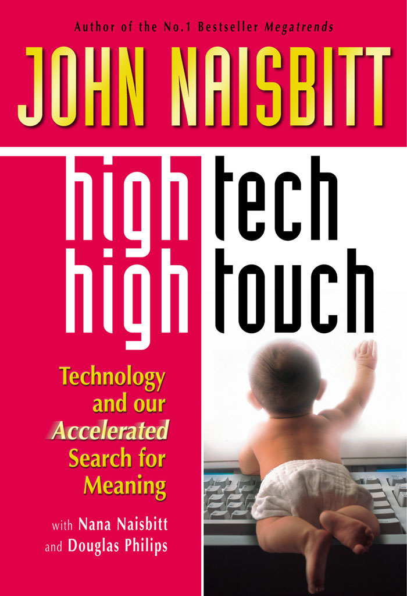

《高科技·高感性》
“哇！这是我很少用于非虚构类书籍的词，但这次确实当之无愧。毫无疑问。《高科技·高感性》是如此个人化、如此深刻。我被激发了。也被感动了。而且，我想，我被感动得要采取个人行动。”
汤姆·彼得斯，《追求卓越》作者
“在一个似乎旋转得太快的世界里，约翰·奈斯比特停下来解释正在发生的事情。从近二十年前的《大趋势》开始，我就一直是约翰的粉丝。对我来说，这是他最好的一本书。”
菲尔·奈特，耐克创始人兼首席执行官
“在所有奈斯比特的书中，这是我最喜欢的一本。它不是对未来做有根据的猜测；它针对的是现在，此时此地，并以钟声般清晰的方式分析了我们几乎所有人在个人生活和工作中需要解决的巨大冲突，不仅是现在，而且贯穿整个二十一世纪。”
M·斯科特·派克，《少有人走的路》作者
“奈斯比特的目的不是贬低技术，而是提升我们对它的认识，’解毒’我们与它的关系……奈斯比特通过时间、游戏、宗教和艺术这些独特的人性视角来解码我们与技术的互动……在本书的后半部分，奈斯比特展示了有意识的反思和多元对话在预测这些后果并处理它们方面的力量。在对各种基因技术的精彩讨论中，奈斯比特将不同神学家小组的观点、问题和思考编织成一场对话。”
波莉·拉巴尔，《快公司》
“这本书告诉我们如何充分利用技术的好处，同时最小化其对文化的不利影响。”
《金融时报》亚洲版
“这本书是硬科学和科学进步对人类生活不可量化影响的完美融合。奈斯比特先生没有回避基因工程和暴力电脑游戏对青少年影响等有争议的话题。他大胆地进入这场争论，对科学和技术对所有共享地球的人的生活的影响进行了文笔优美、有说服力的思考。这是一本出色的、研究充分的书，它挑战读者思考技术可能带来的负担多于它缓解的可能性。”
史蒂夫·鲍尔斯，《达拉斯晨报》
“奈斯比特和他的两位合著者描绘了我们处境的生动画面，用流行文化、科学和艺术的图像和证据轰炸我们。[这本书]是一面让我们审视自己的镜子……他对这个主题的调查将把这些问题带给更主流的受众。这是件好事。”
莱斯利·米勒，《今日美国》
“[《高科技·高感性》]是一个非常有趣的论点，呼吁在我们与技术的关系中进行一点解毒。很棒的书，非常易读。[它]比一般的商业书籍可读性强得多。[它]涵盖了文化、宗教、时间游戏、艺术。我们作为人类存在的各个方面，真正[呼吁]对我们生活中的这些力量进行调节和审视。[它]不是世界末日的场景，[它]读起来相当生动有趣。”
波莉·拉巴尔，CNN《企业家专场》与托尼·圭达
“《高科技·高感性》是对当代社会的分析。在一个清醒而深思熟虑的论证中，迄今为止最具破坏性的部分描述了互动电脑游戏对儿童的影响。现在奈斯比特收集的关于互动游戏的证据表明了一个可怕的阶跃式变化。”
梅兰妮·菲利普斯，《星期日泰晤士报》，伦敦
“一本过山车般的书，充满了振奋人心的想法和惊人的事实，可能会改变你的思维。”
《董事》
“运用他在《大趋势》中使用的内容分析过程，奈斯比特……在描绘我们的文化轨迹方面取得了相当的成功。专注于技术在重塑社会中的影响，这本书汇集了大量证据，表明技术无情地加速了我们的生活，并激发了对更情感满足的生活的深刻渴望。在我们对情感真实性的渴望中，奈斯比特找到了我们这个疯狂时代的巨大挑战……这里有一些关于我们技术困境的宝贵见解……奈斯比特值得称赞，因为他激发了一场重要的讨论。”
《书单》
“玛莎·斯图尔特、基因克隆羊和丑闻艺术家安德烈斯·塞拉诺的《尿基督》有什么共同点？它们都是’高科技/高感性’的表现。这本书借鉴了奈斯比特不知疲倦的研究技术，从报纸、电视节目、杂志和互联网中发现趋势。最后一部分减轻了本书大部分内容的警示语气，提供了对探索不断发展的医疗实践所引发的伦理问题的艺术家的雄辩调查。奈斯比特……敦促人们拔掉笔记本电脑的插头，重新发现星空和降雪的简单性——并记住作为人类意味着什么。”
《出版人周刊》
“《高科技·高感性》是对现代美国严谨而广泛的批判。”
斯图尔特·克雷纳，《泰晤士报》
“约翰·奈斯比特以深思熟虑的方式考虑重大变革的道德和伦理意义。”
玛丽·肯尼，《天主教先驱报》
“奈斯比特带我们踏上一段旅程，包括佛罗里达州的庆典镇，这个由迪士尼创建的社区从一开始就完全联网；玛莎·斯图尔特，她向生活复杂的人们展示如何享受园艺等简单任务；极限运动和冒险旅行，在这些活动中，普通
人们将自己完全暴露于大自然和重力的狂暴之下。这仅仅是本书的前四分之一；Naisbitt 接着探讨了电子游戏如何让孩子们对暴力变得麻木不仁；人类基因组计划给宗教和灵性带来的挑战；最后是”标本艺术”，艺术家创作关于生命、死亡和人类性行为的令人不安的图像。
没有传统意义上的结论，只是审视我们世界正在发生的事情。但读者在读完《高科技·高接触》后可能会采取某种行动：每天关闭手机几个小时；永久锁住孩子们的暴力任天堂游戏；甚至预订一个尽可能偏远地点的假期。做任何事情来摆脱互联世界持续不断的嗡嗡声。
Lou Schuler，Amazon.com 编辑评论
高科技·高接触
约翰·奈斯比特的其他著作
大趋势
全球悖论
亚洲大趋势
重塑企业（与 Patricia Aburdene 合著）
2000年大趋势（与 Patricia Aburdene 合著）
女性大趋势（与 Patricia Aburdene 合著）
日本的身份危机（与 Shosaburo Kimura 合著）
巨型挑战（仅日文版）
科技与我们加速寻找意义
约翰·奈斯比特与 Nana Naisbitt 和 Douglas Philips 合著
尼古拉斯·布里雷出版社伦敦
Joe Crump
本平装版由尼古拉斯·布里雷有限公司于2001年在英国首次出版
36 John Street，伦敦 WC1N 2AT，英国电话：+44 (0)20 7430 0224 传真：+44 (0)20 7404 8311
1163 E. Ogden Avenue, Suite 705-229，Naperville，IL 60563-8535，美国电话：(888) BREALEY 传真：(630) 898 3595
http://www.nbrealey-books.com
精装版首次出版于1999年
© HIGH TECH·HIGH TOUCH 公司，1999, 2001
约翰·奈斯比特、Nana Naisbitt 和 Douglas Philips 作为本作品作者的权利已根据1988年版权、设计和专利法予以确认。
美国国会图书馆出版物编目数据
奈斯比特，约翰高科技·高接触：科技与我们加速寻找意义 / 约翰·奈斯比特，与 Nana Naisbitt 和 Douglas Philips 合著 – 平装版页码 ISBN 1-85788-260-1（平装） 1. 技术创新——社会方面。2. 技术——哲学。I. Naisbitt, Nana, 1957- II. Philips, Douglas. III. 书名。 T173.8 .N34 2001 303.48′3–dc21 00-054704
ISBN 1-85788-260-1
英国图书馆出版物编目数据
本书的目录记录可从英国图书馆获取。
版权所有。未经出版商事先书面许可，不得以任何形式或方式（电子、机械、影印、录音和/或其他方式）复制、存储在检索系统中或传播本出版物的任何部分。未经出版商事先同意，不得以贸易方式出借、转售、出租或以其他方式处置本书，除非是以出版时的形式、装订或封面。
芬兰 WS Bookwell 印刷。
平装版前言 xiii
第一部分——今天：通过时间和娱乐理解消费者技术 7
沉迷区 9
美国的故事 9
高科技沉迷的症状 12
技术是我们生活的货币 31
高接触时间 32
高科技时间 33
警笛的呼唤 36
高级简约 37
高科技简约 40
技术即社区 42
扩展时间 46
通过高科技媒体传递的高接触信息 48
劳动还是休闲 50
逃避秘诀 52
通过探险旅行逃避 55
军事-任天堂复合体 65
巨大的市场 67
从乒乓球到谋杀 68
从音频和视觉到触觉 69
包装的情绪 70
士兵的模拟训练 72
严肃的战争游戏 74
海军陆战队毁灭战士 75
军事-任天堂复合体 77
儿童军事游戏 79
宣泄困境 81
暴力文化 83
电视和烟草 85
神奇的儿童世界 87
电子育儿 88
暴力文化的条件 89
教育、诉讼、立法 98
第二部分——明天：通过宗教和艺术理解基因技术 113
伽利略→达尔文→DNA 115
遗传学家：新探险家 117
种系基因治疗 123
科学 124
前景 126
担忧 127
科学担忧 128
伦理担忧 130
皮肤之下：基因隐私/基因歧视 139
基因专利和市场驱动的技术 146
神学担忧 149
克隆人类 158
动物、植物、矿物→A、C、G 和 T 162
农业基因工程 166
预测后果 172
科学和宗教的教条 173
死亡、性与身体：新标本艺术运动 185
终极标本 187
性 190
内在身体 194
外在身体 208
肉体 214
死亡 218
结语 227
附录 A：方法论 233
附录 B：受访者简介 241
致谢 271
尾注、索引和图片目录可以在 www.hightechhightouch.com 找到
当我在1982年的《大趋势》中首次写到高科技/高接触时，我瞥见了这一强大现象的原始开端，此后它不断成长、演变和转型。
最初，高接触(艺术、宗教、替代医学(alternative medicine))被视为对高科技(计算机、通信)的回应。这一概念是，我们在生活中引入的技术越多，就越寻求高接触的平衡，一种人性的压舱物。这一点至今依然成立，其表现形式无处不在。
在最初的《大趋势》中，我认识到我们正朝着高科技和高接触的双重方向前进，用补偿性的人类回应来匹配每一项新技术；我们的生活越是浸透在技术中，人们就越想与其他人在一起(看电影、参观博物馆、参加读书俱乐部、观看孩子的足球比赛)；高科技医学越发达，人们对替代疗法(alternative healing practices)的兴趣就越大；我们在电脑前用脑不用身体工作得越多，我们的休闲活动就变得越高接触和感性(园艺、烹饪、木工、观鸟)。高科技/高接触最初表述的指导词是平衡：平衡物质奇迹与我们人性的精神需求。
今天，高科技•高接触比1982年时重要得多，也比我曾经想象的要重要得多——因为技术的侵入性和无情的步伐。这是一本关于高科技和高接触融合的书，随着技术的意义从物体演变为相互关系再到后果。随着技术创新及其融入人类生活以不断增加的影响力加速发展，高科技和高接触的双重方向已不再足够。高接触必须开始引导高科技。高科技•高接触现在意味着有意识地将技术融入我们的生活。
在过去二十年中，技术创新呈指数级增长，技术的本质发生了深刻变化。技术进步先于我们对这些进步的文化适应；我们的社会适应滞后了。今天，过着私人、公共和商业生活的普通人仍然将技术视为中性工具，用来改善人类作为一个物种的生活。
“技术”一词定义的变化颇具启示性。1967年，《兰登书屋词典》仍然反映了古老的技术概念，将其视为事物、物体、有形的、物理的，与人类明显分离。但到了1987年，随着计算机进入家庭，兰登书屋发布了更新的完整版词典，该词的定义已扩展到包括其”与生活、社会和环境的相互关系”。人们认识到，技术不再存在于真空中。更具启示性的是1998年在线技术百科全书对高科技的定义：这一含义扩展了技术的力量，包括其”后果”。
我们都必须有意识地开始认识到，技术确实包含其后果，无论好坏。如果我们继续在不理解技术对人类影响范围的情况下前进，新技术的意外后果将与其承诺一样重要，甚至更重要。技术越强大，其后果就越强大。技术不是中性的。
《高科技•高接触》是对技术的全面观察，包括其人性元素。我们希望读者开始感知技术的”生态系统”。任何新技术的引入都会在宏观和微观层面改变生活、关系和社会。我们从自然中知道，向栖息地引入新事物——新物种、气候变化——将改变该栖息地内的大多数关系。但人类引入技术时并没有思考关系将如何改变，究竟什么会得到增强，什么会被取代，什么会被削弱。我们没有过多思考微观环境的生态，尽管技术对全球环境的影响正在获得关注。就像引入新物种一样，向家庭、工作场所或社会引入新技术将产生重大后果。
高科技•高接触意味着质疑技术在我们生活和社会中应有的位置。它是学习如何在技术主导的时代作为有同情心的人类生活。它是有意识地选择在技术为人类生活增加价值时使用技术。它是认识到技术——人类想象力的创造性产物——是文化演变不可分割的一部分，创造新技术的欲望从根本上说是本能的。但它也是知道何时在我们的工作和生活中推开技术，以肯定我们的人性。它是认识到技术在最好的情况下支持和改善人类生活；在最坏的情况下，它会疏远、孤立、扭曲和摧毁。它是知道何时拔掉插头，何时插上插头。
高科技•高接触是有意识地将技术融入我们的生活——如果进步要有意义的话。例如，企业必须预见到需要高接触的人力资源部门来平衡员工整天坐在电脑显示器前的影响。
在他的新书《引领革命》中，加里·哈默尔写道：
“数据挖掘、呼叫中心、全天候客户支持、外包、供应链整合、’绿色’能源、反对动物实验的公司——所有这些都是奈斯比特所描述的[高科技/高接触]力量的逻辑延伸。”作为商业远见者的哈默尔，认识到高科技·高接触作为理解商业重要转变框架的持续力量。
以Cyberdesic为例，这是一家总部位于伊利诺伊州皮奥里亚的30人小型互联网咨询公司。Cyberdesic以独特的方式采用了高科技·高接触的概念来服务客户。虽然互联网可以让公司在任何地方为任何人工作，但首席执行官凯文·乔瓦内托认为，如果公司办公室与客户位于同一城市，将具有竞争优势。他指出：“我们的主要客户是卡特彼勒公司，其全球总部位于皮奥里亚。我们与Sapient、IBM和安达信咨询等所有主要竞争对手竞争，但我们继续增加在卡特彼勒的业务份额，因为我们为他们提供面对面的’高接触’客户服务。”
自本书第一版出版以来，关于现有和新兴技术的益处及其意外成本的更广泛、多学科的公共讨论已经出现，最引人注目的是对Sun公司首席科学家比尔·乔伊于2000年4月在《连线》杂志上发表的一篇文章的回应。他的关注点，就像《高科技·高接触》第二部分一样，是新兴技术。乔伊认识到潜在威胁的巨大性，并倡导对话：“习惯于与几乎是常规的科学突破共存，我们还没有接受这样一个事实：最引人注目的21世纪技术……如此强大，以至于它们可以催生全新类别的事故和滥用……我们正在被推进这个新世纪，没有计划，没有控制……我的直接希望是参与到关于这里提出的问题的更大讨论中，与来自许多不同背景的人一起，在不预先倾向于因技术本身而恐惧或偏好的环境中。”虽然乔伊这篇危言耸听的文章预测，在未来几十年内，遗传学、纳米技术和机器人技术即将融合将带来可怕的后果，但《高科技·高接触》最终在人类精神和智慧中找到了希望和信念。
现在，来自偏远角落的公共对话呼声正在响起。2000年11月下旬，美国最高法院大法官斯蒂芬·布雷耶在哈佛大学肯尼迪学院发出罕见呼吁，要求科学家、律师、经济学家、法官和生物技术商业人士就遗传技术这一”移动目标”进行”持续对话”。
《高科技·高接触》倡导在世界上更多元化的公民群体之间进行对话。人类很少被召唤进行如此严肃的对话。我们从未如此清楚地意识到技术的潜在影响。19世纪有谁知道工业革命会导致自然环境的广泛污染？当核技术被驾驭时，一场世界大战正在全面展开，很少有人能奢望拥有充分的远见。然而今天，及早提出对新兴技术（其中一些与核能一样强大或更强大）的关切，在一个可以分享多种观点的公正场所，将使未来的对话免于像关于农业生物工程适当应用的辩论那样分裂。
2000年5月，在中国北京市区外一小时车程的北京人遗址，我们与北京大学和Link基金会合作举办了一个关于遗传技术对人类和社会影响的论坛。召集这个论坛（以及未来的论坛）的动力，称为”人类基因组·人类存在”，源于撰写本书时产生的信念：必须独立于商业和政治利益召集国际公共论坛，包括哲学家、神学家、作家、科学家和艺术家，以便我们发现技术对社会、地球、所有生命以及我们作为人类自身的全面影响。这种讨论必须包括世界公民，他们的个人决定将共同影响这些技术未来的接受、拒绝和应用。
只有在强大的新兴技术仍处于起步阶段时建立可持续的对话，我们才能预见技术的后果，并做好更充分的准备，明智而审慎地应用它们。通过在对人类和地球有益的背景下反思技术，我们将能够负责任地引导技术的力量，而不仅仅是对其意外后果做出反应。通过预见技术的后果，我们的行为不是冲动的，而是成熟的，作为一个人类社会，管理我们的星球和后代。
如果我们目光短浅地将注意力集中在未来技术的潜在好处上，如果我们在对创新的热情中忽略次要的负面后果，那么新兴技术深奥的缺陷将远远超过烤面包机的电击或发动机的噼啪声。如果不有意识地理解技术对我们今天人性的影响，不预见新兴技术将产生的影响，我们就不可能深思熟虑地、富有成效地、尊重地应用技术，也无法确保我们物种的生存。通过反思
技术作为守护者，我们可以培养一种包含远见、同情和尊重所有生命的智慧。
高科技•高感触展示了我们需要通过人性的视角来理解技术——通过神学理解生命科学，通过高感触时间理解消费技术，通过艺术理解身体科学。技术体现了它的后果，无论好坏，本书介绍了有意识地审视技术对我们人性影响的关键需求。我们必须学会预见技术的后果，而不是被动应对。
高科技•高感触分为两部分。第一部分考察消费技术及其对我们生活的影响。它们正在强有力地改变我们与时间的关系，并将持续如此，直到我们意识到它们的影响。电视是当今最普遍和最具影响力的消费技术，但电子游戏几乎同样普及，而且影响更深远。本书警告不要越来越接受暴力，以及美国对媒体暴力（被认为不”真实”）与社会暴力之间关系视而不见的态度。
第二部分考察今天正在开发的基因技术，通过神学家的哲学和艺术家的直觉来审视它们，因为他们努力应对人类在精神和生理上不断变化的认知。基因技术的后果将超过信息技术的重要性。信息技术被大肆宣传为一场伟大的革命，但它只是帮助我们更快、更好、更高效地做我们想做的事。我们对DNA的理解将使我们掌控自己的进化。这种知识及其催生的技术才是真正的革命。
技术是我们长期追逐的胡萝卜，随着它加速，我们也疾驰追赶。然而在急于拥抱技术的过程中，我们不能忘记我们的人性；如果我们这样做，那将是一种空洞的进步，加速我们对意义的追寻，加剧我们的渴望。通过作为守护者反思技术，我们可以培养一种智慧，不辜负我们作为地球守护者的责任。
约翰·奈斯比特(John Naisbitt)和娜娜·奈斯比特(Nana Naisbitt)
2001年1月
被技术带给我们生活的舒适所软化，被它的小工具所吸引，依赖它持续的陪伴，沉迷于它稳定提供的娱乐，被它的承诺所诱惑，敬畏它的力量和速度，美国人对技术陶醉不已。技术在身体和精神上满足我们的快乐中枢，但它的陶醉正在挤压我们的人类精神，加强和加速我们对意义的追寻。
今天技术是美国的故事。美国有着稳定的故事流：宗教自由，年轻人向西部进发，地下铁路，牛仔和印第安人，坚韧的个人主义，自由之地和勇敢者的家园，土地热潮，淘金热，靠自己的努力振作起来，棒球，大熔炉，度过大萧条，让世界民主安全，分裂原子并投下炸弹，遏制共产主义，我有一个梦想，摇滚乐，第一个登月，要做爱不要战争，黑人权力，无名战士，好莱坞，信息经济，地球上最富有和最强大的国家，以及世界的全球超级大国。
作为一个年轻的国家，对生存和舒适的追求激励着企业家和发明家创造新技术，减轻人类痛苦，减少日常苦工，到1950年代，负担得起的”省力”家用电器和汽车的繁荣让大多数美国人过上了舒适的生活。技术创新及其文化接受度自那以后如滚雪球般增长，但并非没有后果。随着时间推移，美国已经从一个技术上舒适的地方转变为一个技术陶醉区(Technologically Intoxicated Zone)。
美国是世界上技术最先进的国家，从军事到媒体。我们为其压倒性的兴奋而陶醉。我们几乎不谈论其他。听听任何普通对话。我们对围绕自己的技术大发议论。我们喜欢技术当它工作时。我们讨厌它当它像一本我们永远不会阅读的使用手册一样笼罩着我们时。我们喜欢技术当它感觉像一个全新的玩具时，但我们讨厌它当它损坏时。我们谈论电视节目、媒体事件和互联网笑话，就好像它们是我们自己的个人故事。对技术的恐惧或崇拜常常是我们观看的电影、阅读的书籍、杂志故事、新闻头条的主题，它推动着随后的对话。
印刷品、广告牌和电视上的广告信息充满了技术的承诺。技术提供无穷无尽的快速解决方案。它承诺让我们变得更好，让我们更聪明，提高我们的表现，让我们快乐。它承诺比之前的任何东西更快、更便宜、更容易。技术发誓为我们提供安全、稳定、隐私和控制，同时带给我们安心，让我们无忧无虑。技术承诺将我们与整个世界连接起来，让我们与心爱的朋友和家人保持亲密。它记录并提醒我们生命中的珍贵时刻。技术承诺
成为新世界经济的基础和伟大的均衡器。它承诺让我们变得富有。
技术的承诺就像美妙的音乐。我们愿意相信任何给定的解决方案只需要购买即可。
陶醉于技术诱人的乐趣和承诺中，我们对技术的后果视而不见，并疑惑为何未来似乎难以预测。我们很少有人清楚地理解技术在我们生活中的位置（或应该有的位置），它在社会中应有的位置，以及最根本的问题——技术是什么。我们赋予技术一种特殊的地位，仿佛它是自然法则，是一项不可剥夺的权利，注定要用日益复杂的软件来”管理”我们的日常生活、成长经历，甚至自然世界。技术随着我们的经济节奏前进，而我们只能插上插头、上网、前进、起飞，最终收拾残局。我们感觉有些不对劲，但又说不清楚。技术陶醉区在精神上是空虚的、令人不满的、危险的，而且除非我们意识到自己身处其中，否则不可能摆脱它。正如马歇尔·麦克卢汉(Marshall McLuhan)喜欢说的，他不知道是谁发现了水，但他确信那不是一条鱼。当你深陷其中时，很难看清它。
幸运的是，我们不是鱼。一些艺术家、神学家、科学家和军人等正在认识到并公开承认，在最好的情况下，技术支持并改善人类生活；而在最坏的情况下，它会疏远、孤立、扭曲和毁灭。边缘的声音举起旗帜、开辟道路、提供视角。他们警告、逗乐、劝说，常常充满智慧。如果我们仔细倾听今天看似极端的声音，我们可能会了解在技术主导的时代作为和平的人类生活会是什么样子。
通过对技术的清醒认识，我们可以清晰地评估现有技术的相关性，并与技术建立适当的关系。我们可以开始预测新技术的发展，并在应用这些技术之前讨论其优点和后果，这样做将使我们对未来不那么焦虑。有迹象表明我们正开始这样做。
基督教科学教会(Christian Science Church)副主席约翰·塞洛弗(John Selover)提供了一个新的视角。“热爱进步、热爱成为其中的一部分而不是害怕它，这很重要。从对进步的热爱中，可以产生所需的技能。”热爱技术进步意味着我们会珍惜它，看到它的缺点和成就，留意警告信号，承认错误，保持开放和同情心，观察、倾听、直面问题，进行哲学思考，制定标准，质疑标准，审查标准，获取信息，并欢迎来自所有专业和教派的意见。如果我们热爱技术，我们就会小心对待它。我们不会鲁莽行事。我们可以清醒而开放地进入关于技术的对话。我们将开始培育技术的力量，而不是拒绝它（像所谓的技术恐惧症患者那样）或盲目拥抱它（像技术狂热者那样）。
“觉醒”是佛陀用来描述他的存在状态的词。对我们所有人来说，觉察技术的后果（无论好坏）都将大有裨益。我们不应该闭上眼睛、捂住耳朵、压制对话或被技术诱惑。
我们希望这本书能让你清醒地认识到自己与技术的关系，这样你就能看到和感受到技术陶醉区——并帮助你自己、你的家人、你的社区和企业。在这种清醒认识的指导下，我们的社会可以集体开始预测新技术的后果，并负责任地应用它们，而不是盲目或愚蠢地使用。这样做，我们可能会减少炫耀性消费，进行更明智的技术讨论，更充分地学会尊重人类差异和人类精神，成为一个与自己更加和平相处的国家。
自助书籍、十二步计划、快速解决方案在美国比比皆是，但它们通常只是权宜之计。这本书是解毒我们与技术关系的入门书，而不是应对技能清单。
经过我们进行的所有研究，经过对商业和艺术、学术界和神学界文化领袖的数十次访谈，以及对我们自己生活的仔细审视，我们发现了少数几个明确的症状，这些症状揭示了我们生活方式令人不安的诊断。这些症状表明我们的社会是一个技术陶醉区，其定义是技术与我们寻求意义之间复杂且常常矛盾的关系。
技术陶醉区的症状是：
我们偏爱快速解决方案，从宗教到营养都是如此。
我们既恐惧又崇拜技术。
我们模糊了真实与虚假之间的界限。
我们接受暴力为正常现象。
我们把技术当作玩具来爱。
我们的生活疏离而分心。
通过了解这些症状及其表现方式，我们可以更好地理解技术在我们生活中的作用或可能的作用。我们敦促读者在本书的四章以及我们的文化中寻找这些症状的迹象。
感受到反复出现的空虚，我们盲目地寻找一些东西来填补它，并含糊地称之为意义。
一些美国人加入读书俱乐部、诗歌小组和武术团体。
美术课或追求安静的兴趣，如观鸟、园艺或风水。但在美国，追寻意义的最常见场所是宗教。如今，比历史上任何时期都有更多美国人属于某个教堂、犹太会堂、寺庙或清真寺（今天为70%，而1776年仅为17%）。
美国人渴望拥抱宗教和灵性的安全感与神圣性。魅力圣公会大主教兰道夫·W·斯莱认为，“我们生活在这样一个时代：人们不仅回归更古老的信仰，而且变得更加神秘主义。人们试图找到更高、更深、更伟大、更深刻的东西。某种将他们与比自身更宏大的事物联系起来的东西。”
美国正处于宗教复兴之中。我们在生活的几乎所有方面都在寻求和欢迎宗教或灵性背景——在电视和电影中，在工作场所，在医院，在书籍中，在广告中，在校园里，在大型教堂中。“到处都有更多宗教在公共生活中的可见证据，”芝加哥大学广受欢迎的比较宗教学教授马丁·马蒂说。“在公共生活的整个范围内，人们对宗教表达更加自在。”
宗教实验和探索在美国很流行。每年有超过1000个非宗派教堂成立，在过去十年中有超过100万本土出生的美国人皈依佛教。美国宗教教派的数量在过去三十五年中翻了一番，从800个增加到1600多个。
然而，尽管我们不断寻求，我们仍然感到精神空虚。
宗教书籍销售额飙升（1991年至1997年增长150%，而出版业其他类别仅增长35%），超过其他所有类别。即使是世俗的”灵魂书籍”和简单的日常幸福指南，如《别为小事抓狂》、《简单的丰盛》和《心灵鸡汤》系列（出版史上最成功的书籍系列，印刷量超过3000万册），也在登上全国畅销书排行榜榜首，仿佛快速阅读就能缓解精神空虚。
在”过度刺激区”（Intoxicated Zone）中，精神”补充品”是一门大生意。相当于咖啡因的快速摄入，它们以新世纪杂志、放松磁带、风铃、蜡烛、水晶、熏香、精油、黄金时段宗教节目、占星术、命理学、芳香疗法、石头喷泉、磁疗和冥想的形式出现。这些排毒补充品承诺让我们更加集中、焕发活力、放松、平和、连接、满足和沉思，同时给我们带来灵感、幸福、和谐、愿景、活力、清晰、自我发现、深度、启蒙、微妙能量和平衡。
具有讽刺意味的是，技术承诺为我们排毒——从按摩椅到罐装的自然声音——同时又让我们中毒。广告中充满了技术的承诺，要简化我们复杂的生活，缓解我们的压力，平静我们的神经。
随着代际之间的传统联系被打破，核心家庭内部的联系也被削弱，价值观和实用智慧的传统传递者——大家庭、教堂、社区——越来越多地被流行文化所取代。我们集体转向信息技术、电视、视频、杂志和操作指南书籍，寻求基本问题的答案：“如何选择伴侣”，“如何表达真诚的承诺”，“如何在八分钟内获得幸福”，“如何与不在你择偶范围内的人约会”。
我们不是通过长谈或导师指导，而是寻求快速解决方案来解决生活抛给我们的一切问题，无论大小。流行文化以分步程序、自助书籍和建议专栏的形式提供：“九条重要饮食戒律”，“二十三个燃脂捷径”，“激情性爱的七个秘密”，“四个婚姻拯救者”，“八个结束的迹象”，“三十五种症状即刻治愈”，“两分钟健康检查”，“灵性觉醒的十一个遗传密钥”，“了解神旨意的五个步骤”，“高效能家庭的七个习惯”，“成功的七个精神法则”，“通往神的七条道路”，“力量与疗愈的七个阶段”，“掌握圣经技巧的七个步骤”。（七似乎是个赢家数字。）
从广告口号开始的——“每日一片”和”强健骨骼的十二种方法”——已成为文化解决方案。电视大量提供，充当替代牧师、母亲和父亲：1996年有257个宗教电视频道，高于1974年的9个；第二快速增长的有线电视频道是美食频道，其观众在1997年增长了53%，覆盖2700万个家庭；增长最快的有线频道家居与园艺电视仅在美国就有近6500万订户。
我们已成为一个非处方社会，有着全面的补充品心态——从宗教到营养的一切。自20世纪60年代以来，我们一直在拆除传统，留下缺陷，而补充品被视为纠正措施。
几十年来，医生一直在推动药物的快速解决方案，患者已开始期待从药片中立即得到缓解。在1996年全球1800亿美元的药品市场中，美国人不成比例地花费了850亿美元购买处方药，另外花费200亿美元购买非处方药。到1997年，八分之一的美国人正在服用（或曾经服用过）百忧解（Prozac）。伟哥（Viagra）打破了制药行业历史上所有以往的销售记录，上市第一年销售额接近10亿美元。
膳食补充品以奶昔、药片、滴剂的形式出现
粉末，承诺让我们更聪明、更美丽、更健康、更性感、更苗条、压力更小、毒素更少、更年轻、更有活力。甚至还有一种补充剂的补充剂，AbsorbAid，声称能增强身体对所有其他补充剂的吸收。在无意识地试图逃离技术沉醉区(Technologically Intoxicated Zone)的努力中，美国人每年自我补充100亿颗药丸。美国人每年在速效维生素上花费超过7亿美元，但平均每天吃不到一个水果。而在我们消费的所有蔬菜中，25%是炸薯条。
整容手术是另一种速效方式。2000年，美国进行了超过300万例整容手术。在加利福尼亚、德克萨斯和纽约的带领下，整容手术正在获得全国文化认可：1997年进行的面部拉皮手术比1992年多52%；近25%的整容手术是在20到39岁之间的人群中进行的；1997年进行的隆胸手术比1992年增加了375%；自1992年以来，吸脂手术增加了215%。激光手术、臀部整形、唇部填充和阴茎增大手术都变得越来越普遍。
速效的创可贴文化最终是空虚的。某些东西感觉不太对劲，我们不知道为什么，所以我们抓住速效方法。在一个被技术陶醉的土地上，很容易被技术的承诺所诱惑。
技术会拯救人类还是毁灭人类？这场辩论定期、热烈地重新浮现，自从卢德派(Luddites)因捣毁工业革命初期的纺织工厂而被处决以来，它几乎没有改变。如此赤裸裸地提出，这场辩论似乎几乎荒谬地两极化，然而技术作为救世主或技术作为毁灭者的极端立场指向了我们投射到技术上的盲目信仰和恐惧，以及技术的文化神化。
一千年前，当我们接近第一个千年的尾声时，人类担心上帝的愤怒会给地球带来死亡和毁灭。随着新千年的到来，这种恐惧被引导到一个叫做Y2K的技术末日(Armageddon)。就像上帝无所不能的愤怒一样，一些人担心计算机技术失控会给人类带来混乱——飞机从天上掉下来、导弹失控发射、全球经济崩溃、大规模技术故障。一些人甚至准备了储备充足的防空洞或离网生存住宅，仿佛技术本身是一种不可控制的力量，能够制造混乱和大规模破坏。
其他人则相信技术为社会的所有弊病提供了某种治愈方法。他们对技术解决方案寄予极大信心：每个教室都有互联网会让学校更好，人类基因工程将根除疾病，作物生物工程将养活世界。
当今最公开崇拜技术的人之一是麻省理工学院(MIT)媒体实验室的创始主任尼古拉斯·尼葛洛庞帝(Nicholas Negroponte)。很少有人像他和他的儿子迪米特里(Dimitri)那样对技术有如此的信心，他们宣称自己的使命是通过成立的基金会2B1(To Be One)，为全世界10亿儿童中的每一个人提供带互联网接入的笔记本电脑。他们相信普遍的互联网接入等同于创造世界和平，确保人类的命运，确保地球和全球经济的健康。(电子游戏制造商世嘉企业是该基金会的第一个重要捐赠者。)
Edventure Holdings公司(出版通讯Release 1.0)的所有者埃丝特·戴森(Esther Dyson)是另一位技术爱好者。她将互联网推广为我们所有人的潜在家园，并设想一个学生勤奋、雇主明智、消费者信息灵通、公民行使言论自由的未来。双螺旋发现者詹姆斯·沃森(James Watson)对新基因科学有完全的信心。他认为没有必要在通过基因工程改变人类进化之前犹豫，实际上认为讨论它可能引发的任何人文主义问题是愚蠢的。孟山都公司(新兴生命科学行业的巨头)首席执行官(CEO)鲍勃·夏皮罗(Bob Shapiro)声称，他的公司和其他公司对作物的基因工程将使地球免于饥荒。
在光谱的另一端，教育心理学家如作者简·希利(Jane Healy)警告说，长时间使用电脑能够有害地改变儿童大脑的生理机能，并导致儿童注意力缺陷障碍(ADD)和抑郁症的流行。希利认为小孩使用电脑是”大脑训练”——但不是软件开发者所暗示的那种。她认为，电脑游戏与任何反思性的、面向未来的思维或内在言语相对立。她认为我们有可能培养出整整一代冲动的、刺激驱动的、非反思性的人，这些人后来在道德行为方面有困难。
技术批评家杰里米·里夫金(Jeremy Rifkin)强烈警告不要让生物技术这个精灵从瓶子里出来，他召集了200名神学家反对基因专利。对技术邪恶最极端的警告来自偏执的独行者，如泰德·卡钦斯基(Ted Kaczynski)，即”大学炸弹客”(Unabomber)。卡钦斯基写了一篇35000字的论文，反对技术和机器的非人性化本质，他断言，除其他外，现代技术使古老的对食物、水和住所的追求变得微不足道。
有些人自动转向技术寻求解决方案。
其他人从不求助于技术解决方案。有些人划出一条界限，只拒绝新技术。阿米什人(Amish)将界限划在大约1900年。新卢德派(Neo-Luddites)将界限划在二战结束时。天主教会在1960年代对避孕药和堕胎采取了立场,至今未曾改变。但我们大多数人与技术的关系在两个极端之间摇摆。有时我们害怕它,有时又被它的力量所鼓舞。有一天我们勉强接受它,因为害怕落后于竞争对手或同事,第二天又热情地拥抱它,认为它会让我们的生活或事业变得更好,然后当它未能兑现承诺时又感到沮丧和恼怒。对我们大多数人来说,技术远非中立。它塑造我们的选择;它指引我们的行动。我们与技术的关系在很大程度上未经审视,在某种程度上既包含恐惧也包含崇拜。
在一个技术能够以前所未有的方式改变自然的世界里,我们反复询问”这是真的吗?““这是假的吗?”难怪会如此。真实还是模拟?真品还是仿制品?原版还是复制品?在一个技术可以创造替代品、仿制品、虚拟物、网络空间的时代,我们越来越痴迷于什么是真实的,什么是虚假的。
她的胸部是假的吗?那是他真正的头发吗?火星探路者号的照片真的是在亚利桑那州拍摄的吗?他的劳力士是假的吗?那是真正的阿玛尼吗?佛罗里达州的庆典镇(Celebration)是一个真正的社区吗?杰里·斯普林格节目(Jerry Springer)上的那些打斗是演出来的,还是她真的打了他?如果你在补充氧气的情况下攀登珠穆朗玛峰,你真的是通过”公平手段”攀登的吗,还是技术给了你优势?如果一个装有义肢弹性脚的跑步者打破了100码短跑的历史记录,这算数吗?还是技术让他成为了仿生人?在我们努力理解这个世界的过程中,讨论、争论和故事似乎永无止境。
在美国与充斥我们生活的”屏幕”的关系中,这种混乱造成的伤害最为严重:电影屏幕、电视屏幕、电脑屏幕、游戏机屏幕、个人电子记事本屏幕、传呼机屏幕、手机屏幕、来电显示屏幕、微波炉屏幕、心脏监护仪屏幕,以及明天的技术专家将梦想出的任何屏幕。屏幕无处不在,存在于每个场景中,指引我们、告知我们、娱乐我们。在我们没有意识到的情况下,它们正在塑造我们。那些娱乐我们的屏幕被解释为”虚拟的”,我们不认真对待它们。我们轻易地忽略令人震惊的内容。我们相信投射在屏幕上的东西是幻想,一种理想化的故事,就像1950年代的家庭情景喜剧一样不真实。但后果却是非常真实的。
今天美国排名第一的娱乐方式是媒体,而排名第一的内容类型是暴力。然而我们并不认真对待它。屏幕上暴力的幽灵渗入我们的记忆、梦境和对话中,而我们坚称它是良性的,甚至是有教育意义的。我们开玩笑地将屏幕上的暴力内容视为不真实的。它只是一部卡通片……一个电子游戏……一部电影……或者新闻……通过否认屏幕内容的真实性,我们给自己和孩子们许可,让他们不加思考地定期消费令人兴奋的暴力内容,然后当一个孩子在学校向同学开枪时,我们感到震惊和困惑。
认为屏幕及其内容是真实的,这是一个激进的想法。但把它们看作幻想、虚拟、良性的后果是毁灭性的。屏幕的表面是平坦的,图像看起来是三维的,无论故事是否引人入胜,媒介本身都很有吸引力。蓝色发光的盒子、平面电影屏幕、令人眼花缭乱的电子游戏把我们吸进去又吐出来,让我们比进去时更快乐、更悲伤、更恋爱、更兴奋。我们告诉彼此,屏幕是无关紧要的,仅仅是娱乐而已。
目睹”真实”暴力行为的人很难从脑海中抹去那些可怕的画面。大多数父母会保护他们的孩子不看到”真实”的残酷犯罪,邀请孩子蜷缩在沙发上目睹”真实”的死亡是不可想象的。但我们一直在通过收视率最高的电视节目如《X档案》(X-Files)、《纽约重案组》(NYPD Blue)、《急诊室的故事》(ER)和《警察》(Cops),以及票房大片如《世界末日》(Armageddon)、《拯救大兵瑞恩》(Saving Private Ryan)、《黑衣人》(Men in Black)和《黑客帝国》(The Matrix),以及畅销电子游戏如《雷神之锤》(Quake)、《毁灭战士》(Doom)、《黄金眼》(Golden Eye)和《古墓丽影》(Tomb Raider)来做这件事。
屏幕图像可以像”真实”创伤一样深深地灼烧一个人的记忆:在土路上骑自行车快速行驶、篮子里装着托托(Toto)的老太太突然变成西方恶女巫;《惊魂记》(Psycho)中淋浴的女人玛丽恩(Marion);《猎鹿人》(The Deer Hunter)中的迈克和尼克,等待玩俄罗斯轮盘赌;《大白鲨》(Jaws)中在黑暗海洋里裸泳的人,像一个被钩住的浮标一样,鲨鱼袭击时。我们都有自己难以忘怀、刻骨铭心的画面;其中不少是我们希望能抹去的。
越来越多地,即使我们屏幕上的故事情节也变得不那么假,更真实。
当普通消费者可以轻易获得摄像机时,电视和电影永远改变了(罗德尼·金和洛杉矶警察局事件随之而来),激起了我们对现场戏剧的窥视欲。接着出现了《美国最搞笑家庭录像》(America’s Funniest Home Videos)、《杰拉尔多》(Geraldo)、白色野马、《真实电视》(Real TV)、《公路规则》(Road Rules)、总统和实习生、珍妮摄像头(JennyCam)、《幸存者》(Survivor)、《嫁给百万富翁》(Marry a Millionaire)、实时变性、互联网脑部手术和分娩,以及无数人发布供公众消费的常规生活。我们的屏幕确实非常真实。
在一个近乎完美的特效时代,什么是模拟?
你划船时如果哪儿也去不了？你爬楼梯时如果永远不会上升？如果你是拉斯维加斯纽约纽约酒店的客人，你真的在纽约吗？或者如果你在威尼斯人酒店乘坐贡多拉，你在威尼斯吗？去迪士尼世界动物王国的假期和非洲游猎一样好吗？它比非洲游猎更好吗？基努·里维斯和劳伦斯·菲什伯恩真的会功夫吗？还是电影《黑客帝国》只是有一个伟大的计算机程序员？
在一个难以区分真实与虚假的时代，企业正在紧紧抓住真实性(authenticity)。真实性在商业上可以非常成功。公司从中间市场（如设计师）获取产品创意已不再可行，因此出现了”酷猎人(cool hunters)“这一新职业。他们走上街头，从更接近源头的地方——艺术家、潮人、说唱歌手、城市青少年或其他文化的传统——寻找灵感。在一个信息即时传播、人们几乎同样快速流动的世界里，大规模模仿、赝品、复制品和模拟品的气候已然成熟。原始的真实被酷猎人追踪、抓取、剥离干净，然后大规模营销。难怪我们质疑什么是真实的。
我们对真实的痴迷已经毫无阻碍地向前推进。
我们渴望回忆录、传记、纪录片和脱口秀，但不仅仅是因为我们喜欢八卦。在一个技术在模糊真实的同时又夸大真实的时代，真实让我们感到安心。
1998年为儿童制作的电影《小小兵团》是暴力营销为”动作十足”并被评为PG或PG-13级的典型代表。
在这部由梦工厂制作的电影中，高科技军火集团Globotech收购了传统玩具制造商Heartland，以”将先进的战斗技术引入面向全家的消费产品”。在开场序列中，Globotech强硬的CEO训斥他的玩具设计师不理解游戏中善与恶的基本概念。“士兵需要什么？”他指着会议桌上的原型一英尺高的玩具士兵问道。“敌人，先生，”他的助手回答。“我们的人必须蒸发他们，”CEO咆哮道，指的是变异怪物的纸板原型。两位玩具设计师中的一位问：“你不觉得这有点暴力吗？”CEO冷静地回答：“没错。所以不要叫它暴力。叫它动作。孩子们喜欢
动作。它卖得好。“就像好莱坞一样，他不愿说”孩子们喜欢暴力”，而更喜欢行业的代码词”动作”。
通过结合军事技术和玩具，攻击性的精英突击队士兵和他们和平的怪物敌人——戈尔贡人，能够行走、说话、思考和学习。聪明的士兵很快将家用物品用作武器。垃圾处理器是刑讯室，药柜是”化学战”的来源，以全新的视角，士兵们将车库视为武器库，而不是储藏室或木工房。小士兵们盯着女孩收藏的芭比类娃娃，将其视为”完全可摆姿势”的性玩具，但随后将它们视为”增援部队”，并将它们变成穿着迷彩图案比基尼、身材比例像电子游戏战士劳拉·克劳馥的活生生的暴力怪物。
数百名坚定的”玩具”士兵，名字叫布奇·肉钩、尼克·硝基和基普·基利根，无情地对他们的玩具敌人（被编程为躲藏）和九个人类发动战争。精英突击队的座右铭是”绝不留情”。电影中无能的成年人在为生存而战时相当无用，但青少年们在被精英突击队用钉枪、火焰、电锯、炸弹和迷你直升机（配着电影《现代启示录》的音乐攻击）反复伤害和攻击后，兴高采烈地残害、杀死和摧毁士兵。
《小小兵团》中的场景不是”动作十足”，而是充满暴力。暴力也以商品的形式包装，通常是电影和电视的衍生品，并针对儿童，无论评级如何。来自电子游戏、电影和电视节目的衍生商品通常针对儿童，即使电影或游戏的评级是成人级。孩之宝玩具公司在电影上映时发布了十二款《小小兵团》主题玩具。索尼PlayStation发行了《小小兵团》视频游戏，汉堡王赠送了小型化的精英突击队和戈尔贡人。
但俄勒冈州斯普林菲尔德的当地汉堡王特许经营商面临道德问题。《小小兵团》中一个角色的名字基普·基利根(Kip Killigan，kill-again)听起来几乎与一名十五岁男孩的名字相同，该男孩在电影于1998年7月
10日上映前两个月杀死了他的父母，然后在学校枪杀了两名同学，打伤了二十四人。斯普林菲尔德的汉堡王撤下了基普·基利根动作人偶，因为他的名字可能让顾客感到悲伤，而且，像那个学生一样，他是一个持枪杀手。尽管斯普林菲尔德枪击案是全国性新闻，汉堡王和玩具反斗城继续在全国范围内销售整个系列，将销售额推至所有玩具的前十名。
《小小兵团》上映两周后，梦工厂发行了另一部电影《拯救大兵瑞恩》，传达了”战争即地狱”的信息。史蒂文·斯皮尔伯格拒绝出售其严肃电影的任何玩具销售权。与此同时，他的公司正通过向儿童销售《小小兵团》赚取数百万美元，暗示”战争是有趣的”。
悲剧，例如斯普林菲尔德和利特尔顿的学校枪击案
lence在美国已成为日常现象。摇滚音乐会、全国步枪协会(NRA)大会、电视节目或电影可能会暂时取消或调整到新的时间段”以示尊重”，但暴力无处不在。
富裕为娱乐提供资金支持。美国人最近将”享受乐趣”列为首要任务，其次是减肥和整理生活。
在今天的美国，休闲倾向于消遣——用来打发时间的东西——就像众多电影一样。但试图在美国放松或慢下来，就像试图在电子游戏厅里打个盹。在由消费科技主导的文化中，休闲很大程度上是不费力的、被动接受的。我们用电子娱乐让自己忙碌，好像找不到更有价值的事情来打发时间。在科技沉醉区(Technologically Intoxicated Zone)，我们认为看电视是在放松。
我们想要、需要、渴望今年顶级的Cannondale山地车，或者带可更换外壳的诺基亚手机来搭配我们的衣橱，或者透明橘色的iMac。在沉浸于高科技玩具的文化中，对类似圣诞节般定期享受的需求，使我们陷入永无止境的升级循环。那些将儿童想象力与强大新技术结合的小玩意儿将月复一月地推出来诱惑我们。然而大多数新的高科技玩具并不能让我们满足太久。总有更好、更诱人、价格更低的东西。
麻省理工学院媒体实验室(MIT Media Lab)负责人尼古拉斯·尼葛洛庞帝(Nicholas Negroponte)敏锐地指出了玩具行业与电子行业的相似之处：“每年，75%的玩具都是新的，意味着当年新设计的。玩具行业依靠发明而生存或死亡。玩具在每个圣诞节和光明节、每个生日以及许多其他日子涌入家庭。这种巨大的更替率意味着玩具与数字世界的变化步伐非常匹配。”不出所料，麻省理工学院的新商业合作伙伴包括乐高、迪士尼、美泰、孩之宝和玩具反斗城。“许多人指责麻省理工学院媒体实验室是一个巨大的游戏室，”尼葛洛庞帝说，“嗯，他们说对了。它是一个数字仙境，充满了令人惊叹的玩具。保持童心不容易，但源源不断的新玩具有所帮助。”
我们毫不羞愧地接受成人玩具，因为消费科技已经从奢侈品演变为必需品再到玩具。例如，在二十世纪初，汽车是令人羡慕的奢侈品。到了1950年代，美国实现了移动化，我们的文化被汽车所塑造。郊区、购物中心和通勤使汽车成为必需品。今天我们购买汽车就像它们是玩具一样：一辆新大众甲壳虫是为了怀旧，一辆Smart Car是为了乐趣，一辆悍马是为了吸引眼球。斯沃琪集团(Swatch Group)创始人兼首席执行官、俏皮原创Smart Car的联合制造商尼古拉斯·G·海耶克(Nicholas G. Hayek)告诉我们：“如果你将强大的技术与六岁孩子的幻想结合起来，你就能创造奇迹。”
成人玩具无处不在。通过”新改进的”高科技版本的儿时最爱玩具唤醒童年记忆。花8000美元，你可以买到一辆时速超过100英里、从零加速到60英里仅需四秒、产生两倍重力的卡丁车。如果你偏好较少风险，试试成人尺寸的时速13英里的电动滑板车，方便地装在你的车里。或者重温你在街区跑来跑去玩”间谍游戏”时使用噼啪作响的对讲机的日子。摩托罗拉的TalkAbouts提供你小时候只能梦想的高质量通信，而且颜色更好。全部只需100到450美元一对。
玩具放纵不仅仅局限于”男孩玩具”。过家家不再只是拥有Easy Bake烤箱或Suzy Home Maker的小女孩的领域。成人现在可以使用印有熊猫图案的鲜黄色三洋烤面包机在面包片上烤出熊猫脸。成人可以用类似Play Skool婴儿玩具的吸尘器打扫房子，但售价超过400美元。肯摩尔(Kenmore)通过其家电广告鼓励玩心：“看看我们闪亮的新玩具……在厨房玩耍非常有趣。”
我们在哪里购买玩具？我们在像明尼苏达州美国购物中心这样的综合体购物，根据附近圣奥拉夫学院(St. Olaf’s College)历史教授詹姆斯·法雷尔(James Farrell)的说法，这些地方巧妙地”让人们感觉像孩子”。美国购物中心的口号是”你的生活中有一个享乐的地方”。或者在像芝加哥这样的城市，它以湖滨摩天轮、滑行游船、自行车道、帆船港和市中心环线为卖点，口号是”生活、工作、玩耍”。或者在商店里，比如REI在西雅图的80000平方英尺旗舰店，成人可以在巨大的水桌旁玩耍(就像在托儿所一样)测试滤水器和净化器，或者攀爬世界上最大的独立式攀岩墙，或者穿着高科技靴子在店内”森林”中跋涉，或者在雨室中试穿最新的防水装备。在迪士尼的引领下，模拟体验无处不在。在耐克与迈克尔·乔丹的形象一起投篮。在索尼观看实时视频，或在美国女孩(American Girl)欣赏全规模音乐制作。
我们从这些娱乐商店带回一袋又一袋有趣的东西，或者在线订购。但随后我们必须整理这一切，丢弃我们不再需要的东西。我们没有扔掉的东西就要储存起来。迷你仓储业务已经增长到惊人的每年100亿美元，用于存放我们家中无法再容纳的溢出物品。
作为孩子，我们吸收新玩具，在我们的房间里为它们找地方
房间，并习惯了新消遣带来的刺激。作为成年人，我们迅速接受新的消费产品——越来越多的高科技产品——并在我们的家中为它们找到位置，而我们的家也随着消费增长而扩大。家庭办公室从我们的书房中涌现，我们用电脑、音箱、传真机、打印机、扫描仪和光盘驱动器填满它们。我们的客厅曾经是拥有舒适扶手椅和壁炉的宁静避风港，现在却像游戏厅一样摆满了高科技电视、录像机、音响和任天堂系统。我们的车库里堆满了户外装备和园艺玩具。
美国当前对玩乐的痴迷是显而易见且可感知的，尽管我们大多数祖先在童年时很少珍藏什么玩具。娜娜的祖母莉莲出生于1906年，小时候只有一个娃娃，没有书。约翰出生于1929年,有几个玩具士兵和一本他最喜欢的画册，上面画着横渡大西洋的巨轮。娜娜出生于1957年，只在圣诞节和生日时收到礼物。她和兄弟姐妹们有几架书可读、成排的娃娃可以打扮、积木可以搭建、球可以扔，还有一双金属旱冰鞋。
道格拉斯的玩具传承大致相同，但出生于1964年的道格拉斯全年都能收到玩具。到12岁时，他已经有了自己的音响、一辆带靠背杆的香蕉自行车、特种部队乔和大吉姆动作人偶、伊维尔·克尼维尔摩托车人偶、电动赛车、爬行虫制造器、化学实验套装和伦勃朗油画颜料。这个家庭还有摩托车、帆船、汽艇、滑水板和特技滑水板等其他玩具。虽然富裕程度和地理位置显然会影响父母为孩子购买的玩具类型，但美国玩具文化的心态已经在我们的社会中根深蒂固。今天，美国65%的儿童卧室里有电视，三分之一的儿童在那台电视上连接了自己的录像机或视频游戏机。美国女孩平均拥有8个芭比娃娃。80%的美国男孩定期玩视频游戏。玩具房已经取代了玩具箱。
[27]
最近的两则广告总结了我们对科技玩具的痴迷。天顶公司(Zenith)为大屏幕电视做的广告写道：“大乐趣。这才是重点，不是吗？”梅赛德斯杂志广告中有一张照片，两个小孩穿着睡衣在床上进行激烈的枕头大战，房间里看不到汽车、道路或成人，广告只写着”乐趣”。
我们的第二任总统约翰·亚当斯几乎预见到了玩乐的激增。1780年，他写信给妻子阿比盖尔：“我必须研究政治和战争，这样我的儿子们才能有自由研究数学和哲学。我的儿子们应该研究数学和哲学……以便让他们的孩子有权利研究绘画、诗歌、音乐、建筑、雕像、挂毯和瓷器。”亚当斯可能会总结说，“他们的孩子应该研究绘画、诗歌和音乐，这样他们的孩子就可以创造玩乐的产业。”
电子玩具令人陶醉般有趣，但它们分散了我们对玩乐的重要亲属——休闲的注意力。十年前，英国哲学教授西里尔·巴雷特写道：“休闲不是琐碎的追求；不是工作的穷亲戚；不是生活动荡中需要以某种方式填补的空白或真空。休闲是生活在最充实、最丰富、最完整的状态。”从最深刻的意义上说，休闲让关于生命意义和目的的问题浮现出来。休闲需要宁静、耐心、专注和开放的心灵。休闲不是基于消费欲望，也不是基于被动放松或娱乐。
沉默滋养思想，反思发展智慧，倾听孕育人性。当没有沉默时，就没有思考的空间。我们已经如此习惯噪音，以至于不再听到它。在一个充满哔哔声、铃声和闪光的世界里，难怪7700万婴儿潮一代正在寻找意义。
英国艺术家达米恩·赫斯特的书名《我想在我余生的每一刻，在每一个地方，和每一个人在一起。一对一。永远。永恒。现在》几乎是互联网的完美隐喻，也是我们大多数人通过手机、电子邮件和调制解调器保持联系时的感受。互联网上充满了数百万个人网站，人们与每个人、在每个地方、现在和永远分享他们的私人生活。
[28]
[陶醉区]
我们甚至将触角延伸到宇宙中。一家名为Encounter 2001的公司将以49.95美元的价格将任何人的DNA送上航天器，飞越冥王星并飞出太阳系。蒂莫西·利里和其他人是最早安排将骨灰送入地球轨道的人，他们将在大约八年后重返我们的大气层。Celestis Inc. 2001的新客户将在地球轨道上运行240年。
互联网和手机承诺将我们连接到世界。但它们何时合适，何时又是一种干扰？独自坐在房间里在互联网聊天室”交谈”是一种新的社会现象，但这并不构成社区。办公室里的电子邮件连接员工，但许多人会给走廊另一端的同事发电子邮件，抱怨自己收到的邮件数量。海滩上的手机或随身听让听海浪声成为次要的事。度假时的笔记本电脑将你连接到工作，但分散了你远离工作体验的注意力。用电脑银行业务，你永远不必与出纳员交谈。通过电子商务购物，你永远不必与销售人员交谈。这些技术的噪音，无论是字面上还是比喻上，实际上都可能使人类彼此隔离，与自然隔离，与我们自己隔离。技术可以造成物理和情感上的距离，并分散我们对生活的注意力。孤立是技术的回报吗？
技术的花哨功能很诱人，但我们并没有
完全意识到它们如何让我们远离和分散我们自己的生活。我们中很少有人停下来问问手机、电子游戏、电视或相机给我们人类体验的质量增加了什么或减少了什么。
科技用其记录的承诺分散我们的注意力。相机发明于19世纪30年代末,如今廉价而精密的相机和便宜的冲印让我们能够记录和保存生活中的神奇时刻。(美国人每年拍摄超过170亿张照片;其中5%在迪士尼主题公园拍摄)在毕业典礼、学校演出、高中篮球赛、小提琴独奏会和少年棒球联赛上,自动相机响亮地咔嚓咔嚓和倒片(呲呲呲呲呲),脸上挂着科技装备的父母坐满看台。但孩子们看到了什么?对准他们的相机镜头。相机是在记录生活中最重要的时刻,还是分散了我们体验那些情感、景象和声音的注意力?也许它们实际上让我们错过了那一刻而不是捕捉了它。仅仅拥有一台摄像机或相机可能就让我们觉得不得不使用它,然后归档这些影像。我们已经成为一个记录型社会,但目的是什么?
科技还用其娱乐的承诺分散我们的注意力。令人眼花缭乱的像素化彩色大屏幕和环绕声提供最新信息和”动作片”剧情。把电视比作现代”家庭壁炉”的说法是乐观的。家庭成员分散到房子的不同房间观看他们各自喜欢的节目或听他们自己的音乐。今天许多美国人在孤立中共同生活。
美国每年8万亿美元经济中最大的两个市场是:1)消费科技和2)逃离消费科技。
消费科技正在改变我们生活在时间中的方式——崩溃、压缩、浓缩时间。今天科技是一个由升级、附加组件和补充驱动的自我延续引擎。它加速我们的生活并培养依赖性,这需要缓解,而我们往往又转向科技寻求最容易获得、最直接的解决方案。压力大?买个按摩器。生活混乱?买个个人电子记事本。带孩子旅行?买个游戏机。社区不安全?买个安保系统。
你的PowerBook放在家里的桌子上,旁边堆着一摞重要的未读文章,但你选择一杯冰啤酒和一点电视来放松。晚上很快过去,你在看完晚间新闻和听完办公室语音邮件后上床睡觉。你醒着躺在床上,而你的配偶在互联网聊天室聊天,你盘点一天的事件。你为对新同事发脾气感到羞愧;你意识到修理工即使在你呼他的时候也没有像承诺的那样回你电话;你希望尽管很累也给儿子读了睡前故事;你为把房地产交易的佣金压到4%而感到自豪。你的思绪跳跃,在制作明天需要完成事项的心理清单时入睡。你早上6点半醒来,没有做梦的记忆。你立即起床喝热咖啡和查看电子邮件。然后你手里拿着百吉饼前往汽车,进行20分钟的通勤,期间你听一本流行商业书籍的第一部分,因为你在专业阅读方面落后了。手机响了,你的同事提醒你一个客户将在15分钟内到达会议。你的思绪越过吵闹的叙述者,飘向一种要离开城市的强烈渴望。
我们生活在时间中的方式在过去一百年里稳步改变,在过去十年里发生了巨大变化。我们的现代生活限制了我们与自然节奏和声音的联系。一个多世纪前,在电力、手机和电子邮件出现之前,大多数美国人日出而作,日落而息,吃自家种的食物,在离家很近的地方工作。人们说瞬间是短暂的,记忆是持久的,并用”欲速则不达”这样的短语告诫他们的孩子。故事以”很久很久以前”开头,我们实际上理解那是什么意思。日子更多基于光线而不是小时,年份更多基于季节而不是日历。一封信要花几周时间穿越全国,回复需要更长时间。
时间由自然的节奏设定:潮汐、月相周期、季节、星星、日出、日落、阴影、植物。据记载,早在公元前4世纪,亚历山大大帝的一位抄写员就观察到某些树木的叶子白天张开,夜晚闭合。在18世纪,自然科学家卡尔·林奈发现某些花的花瓣在固定时间开放和闭合。他创建了一个花园,这样他就可以通过观察植物来判断一天中的时间。
当我们有了时钟、手表、约会、截止日期、最喜欢的7点电视节目时,那种细微的意识就失去了。
自从发条钟(1876年)和电池手表(1956年)等发明问世以来,从生活在高接触时间到高科技时间发生了转变。与高接触时间的语言相比,今天的短语揭示了对时间的紧迫感:缺乏时间、快速时间、实时、面对面时间、截止日期、清单、多任务处理、落后、找时间、制造时间、失去时间、填满时间、消磨时间、准时、没时间、时间框架、快进。
消费科技传统上承诺节省时间
和劳动，让我们能够追求真正重要的活动，很少有人会否认消费技术在过去一个世纪里让我们的生活变得更容易。我们不再需要手洗衣服、心算数字，或从头开始做面包。用微软广告的话说：“快速做事，留出更多时间享受快乐。”消费产品用广泛的承诺诱惑我们，然后加速我们的生活，提高我们的期望。多年来，我们以富裕所允许的速度消费着这些承诺。
越来越多地，那些承诺节省我们时间的东西正在消耗我们的时间。消费技术需要确定需求优先级、选择品牌、购买、安装、维护、升级。
消费技术已经达到了收益递减的临界点。我们的家里充满了省力设备，但我们对时间的使用并没有从中受益。一项研究表明，我们家中拥有的省力、简化、减少时间、做出承诺的技术实际上并没有减少我们做家务所花费的时间。但我们仍然痴迷于生产力和效率。我们能在一天、一小时、十分钟内完成多少事情？
美国最知名的纪录片制作人肯·伯恩斯(Ken Burns)，他花费数年时间创作一部电影，他担心一种大规模注意力缺陷障碍。“当你被如此多的图像轰炸时——不仅仅是电视，而是周围的一切——你真的会加速。你需要如此多、如此快——食物、印象、一切——相反的情况已经开始发生：我们并没有像你想象的那样通过获得更多东西来丰富自己，实际上我们创造了一种贫困。这种贫困首先可以通过注意力的丧失来衡量。”
汽车，仍被认为是我们最便捷的消费技术，提供了一个典型案例。除了从一个地点移动到另一个地点，我们还期望保持连接和娱乐。我们在手机上处理业务，在红灯时阅读，在吸附在挡风玻璃上的便签纸上涂写笔记。汽车的其他”生产力工具”包括工厂安装的、声控的计算机，能够发送和接收电子邮件和传真。通用汽车的OnStar系统可以做从派遣拖车到推荐附近餐厅的一切事情，所有这些都是在你驾驶时完成的。
为了最大化我们通勤的时间，我们还在路上吃完整顿饭，为此我们购买专门的食品、杯子和旅行围兜。凯洛格(Kellogg’s)，世界上第一个大规模生产便利食品的制造商，现在正专注于便携式早餐食品，因为13%的美国人在车里吃早餐，凯洛格说它想”进入这些汽车”。麦当劳现在大部分业务是通过得来速而不是柜台完成的。
随着我们在汽车中的行为越来越像在家里一样，企业正在急于为我们提供额外的道路”解决方案”。设计成适合前排乘客座位的便携式车载办公室已经上市。市场上至少有一款小型货车配备了内置娱乐系统，包括用于观看电影或玩电子游戏的翻转式彩色显示器。后座的孩子们可以戴着耳机玩任天堂游戏，而司机则听他或她选择的音乐。(对话不再必要，争吵暂时避免。)
在一个充斥着消费技术的社会中，我们如何度过我们的时间？我们生活在汽车里，打电话，写电子邮件，看电视，在电脑上工作，听音乐，保持关注，保持连接，保持联网，保持领先。我们有条理(或想要有)，高效(那个新软件应该有帮助)，富有成效(更快的调制解调器是答案)。我会买新的Palm VII。如果我买一个卫星天线，我就再也不用去Blockbuster了。自从有了Amazon.com，我有多久没去过书店了？
随着我们用更复杂的自动化系统装备我们的生活，我们的活动和我们的语言本身正在改变。火是打开的，不是点燃的。人行道是加热的，不是铲除的。窗帘不再是拉动的，而是由遥控器操作的。食物是快速加热的，不是烹饪的。我们被连接，被加速，我们中很少有人知道如何断开连接足够长的时间来反思我们正在做的选择。我们感到我们的生活是由技术运行的。
让我们随时对所有其他人可接触的消费技术改变了我们的时间感和幸福感。手机装在我们的口袋里，Palm Pilot在我们的手中，传呼机在我们的腰带上。传真机和电子邮件缩短了”响应时间”，与移动电话一起，这些技术让我们全天24小时可用，就像便利店一样。整天、每天、在家、在工作中、在我们的汽车里用技术包围自己，没有任何缓解，会产生什么影响？
佐伊·伦纳德(Zoë Leonard)，一位出生和成长在纽约市但现在住在阿拉斯加的艺术家，谈到与时间讨价还价：“我是这样一个城市孩子，正因为如此，我有这样的想法，时间是可以讨价还价的。哦，你要迟到了，打车吧。你需要邮寄东西而且要迟到了，优先邮寄吧。如果真的很晚了，联邦快递吧。如果联邦快递办公室关门了，传真吧。你知道总有办法与时间讨价还价。但在阿拉斯加那里，自然因素是如此极端，没有讨价还价的余地。你不能与暴风雨争论；你不能与距离争论。”
宁静是今天很少使用的一个词；压力播种着我们的词汇。而我们梦想着去乡村旅行。
技术的承诺如同塞壬之歌，甜美动听，令人无法抗拒。日复一日，我们被技术的承诺所包围，这些承诺通过广告和包装传递，也来自销售员、同事和朋友的推荐。作为一个压力重重、时间紧迫的社会，我们迫切需要升级的解决方案。我们以最快的速度吸收各种循序渐进的程序，向技术寻求答案：从更好到更智能，从新颖到革命性，从快速到即时，从安全到保障，从简单到毫不费力，从清洁到无菌，从动力到性能。但就像塞壬之歌一样，技术的呼唤可能是具有欺骗性的。它诱惑，然后困住你。
新兴消费技术的广告商往往会过度承诺。在20世纪50年代，消费技术最大的承诺是便利。今天最流行的广告主题是简化的承诺——消费技术作为复杂性的解药，作为77%接受调查的美国人认为他们”需要采取措施简化”生活的解决方案。
如今，消费技术构成了我们生活的无形基础。作为个人测试，你愿意通过放弃几种最基本的消费技术来从根本上改变你的生活方式吗?想象一下做晚餐。从冰柜里拿出一包冷冻馄饨，把里面的东西倒进煤气灶上大火烧开的水锅里。从冰箱里拿出一罐保罗·纽曼的意大利面酱，放在派热克斯容器里用微波炉加热。在烤箱里烤上带有帕尔马干酪和罗勒的脆皮意大利面包。晚餐既方便又美味。餐具装进洗碗机，然后你开始在电脑上工作，为明天的会议做准备。炉灶、冰箱、微波炉、洗碗机、电脑、煤气、电力、自来水。你想放弃其中任何一样吗?
我们的生活如此沉浸在技术中，以至于获取更多技术变得自然而然。
在20世纪60年代和70年代，拉尔夫·纳德鼓励美国人成为”知情消费者”，从而产生了成分标签和安全法规。今天，仅仅比较品牌、查阅《消费者报告》或研究特定产品的性能和质量已经不够了。今天的消费技术远比几十年前更强大、更令人沉醉。为了超越技术沉醉区(Technologically Intoxicated Zone)，我们必须成为反思型消费者(Reflective Consumers)，开始考虑将新技术引入生活的后果，开始审视技术对时间的影响以及它为人类体验增添的价值。反思型消费者明白，技术的承诺可能是具有欺骗性的，往往忽略了对我们的社区、我们的业务、我们的孩子和我们自己造成的意外后果。
沃特福德，一个位于弗吉尼亚州蓝岭山脉、有250名反思型消费者居住在约80个家庭的村庄，在1995年秋天创造了历史，成为第一个拒绝有线电视的美国社区。“这里的人们有时间互相交谈。我为我们糟糕的电视接收感到自豪，”一位沃特福德镇民在考虑有线电视接入的公民协会会议上说。“它让我们走出家门，如果因为有九场不同的足球比赛可以看而改变这一点，我会有点讨厌。就我个人而言，我宁愿去钓鱼也不愿看钓鱼频道。”
“我的生活方式更像世界其他地方，而不是美国人，”32岁的作家凯伦·梅茨格在描述她的日常生活时说。凯伦是一个被称为”自愿简约”(voluntary simplicity)运动的极端例子，迄今为止，这一运动已经激励了10%到12%的美国人口缩减规模。她口才好、聪明、受过良好教育且足智多谋。在海拔9000英尺的科罗拉多州雄伟的圣胡安山脉，凯伦住在一间九英尺见方的小屋里，还有一个小睡眠阁楼。小屋坐落在三座童话般山峰的山脚下，穿过一条土路对面是一个废弃的老农庄，因其令人叹为观止的风景被选为约翰·韦恩1969年电影《大地惊雷》的拍摄地。她的小屋完全由废料建造，小小的框架向前倾斜，窗户歪斜。苏斯博士可能造过这样的房子。
五年前，她从拥有300万人口的芝加哥搬到了只有50人的黑斯廷斯梅萨。凯伦的父亲”如果可以的话，会在草坪上铺柏油并涂成绿色”，而她学会了在没有管道、没有适当的电力或所有其他源于这些基本技术的奢侈品——马桶、淋浴、自来水、冰箱——的情况下烹饪、清洁和在极端的梅萨冬季生存下来。“豪华露营”是凯伦如何总结她的生活，在这种生活中，她要运水进来、运垃圾出去、加热溪水或雪来洗碗、走50英尺到户外厕所、每周在附近小镇的温泉洗澡两次、保留一把她母亲传给她的”可爱的”.22温彻斯特步枪、踢开她的狗拖回前廊的土拨鼠尸体，并努力在未经清理的积雪覆盖的乡村道路上驾驶她1984年的斯巴鲁——这是她唯一不能缺少的技术。
“人们实际上可以说服自己，他们需要的远比实际多得多。这只是一种心理障碍。便利设施实际上是个麻烦。你拥有的需要跟踪和保持运行的东西越多，花费的时间就越多。我不必担心我的管道冻住。”
为什么凯伦会选择放弃构成美国生活基础的基本消费技术?因为通过放弃大多数美国人认为理所当然的基本舒适，她的世界扩大了。
一种不同的时间感支配着她的日子。“强风、
她被”璀璨的星夜、壮丽的日落、史诗般的降雪”所环绕，置身于一个不受开发、交通或电线杆干扰的环境中。她已经成长为一个多面手，并获得了一种主权感
她说，这种感觉来自于能够在没有太多科技的情况下生活。她从每一项有意识选择参与的活动中获得了更多的快乐。她的生活是具身的(physical)，她的身体与日常生活并未分离。房租每月100美元，丙烷每年100美元，所以她可以选择长时间不工作。一块8英寸见方的太阳能电池板为她的CD播放器和三盏小灯供电。她阅读、写作，用双手工作。她已经习惯了独处和寂静。她”重新发现”了自己的想象力，因为她必须自娱自乐。从枕头上她能看到山顶，经过她身边的野生动物比人类还多。
“我很想有电，能在电脑上工作[她通常在设备更齐全的邻居家或在镇上时给电脑充电]。总有一天我会回到那种生活，但我会带着一种意识回去，这种意识是通过直接为自己提供一切而获得的。”
通过减少科技来简化自己生活的决定既不容易做出也不容易执行，但许多人正在尝试不同程度的简化。对某些人来说，简化可能意味着搬到小城镇或农村社区。(美国农村人口从1990年到1996年增长了6%)。它可能涉及换工作或搬到更小的房子。对其他人来说，它可能意味着少看电视或把任天堂游戏机锁起来。
“简朴生活其实很复杂，”艺术家兼服装设计师J·摩根·普埃特说。1998年，她缩减了自己备受关注、高调的生活和事业(拥有低调的名人零售客户和高端批发客户，如纽约巴尼斯百货)。经过长期、持续的努力，从复杂的生意和纽约生活中解脱出来后，普埃特和男友马克以及猫”路杀”(Roadkill)搬到了宾夕法尼亚州东北部的90英亩乡村土地上。他们住在没有室内管道的漂亮小屋里，用木柴炉取暖，有时还会通过卫星收看300个电视频道——这是普埃特非常有意识地选择保留的技术之一。她通过传真、电脑和电话与经营他们唯一一家零售店(他们不再做批发)的合伙人沟通，这些技术使她能够住在乡下。她曾经投入到不断增长的服装生意上的时间，现在都用来画画了。关于这次搬迁，她引用了父母永久钉在佐治亚州养蜂场家中厨房公告板上的一句话:“只要你还是绿色的，你就在成长，但当你认为自己成熟的那一刻，你就开始腐烂了。”
改变是艰难的。从哪里开始?数百万人正在求助于指南书籍，寻找应对生活复杂性的简单解决方案。伊莱恩·圣詹姆斯的五本畅销书《简化你的生活》系列(印刷250万册)提供了逐步缩减和放慢生活节奏的方法。另一本书，萨拉·班·布雷斯纳赫的《简单的丰盛》(Simple Abundance)是一本欣赏生活简单乐趣的指南，印刷了超过370万册。一场自愿简朴运动(voluntary simplicity movement)正在渗透到美国文化中，提倡精神性和环保主义，同时反对工作-消费循环。《整体生活经济学：重估日常生活》的作者芭芭拉·布兰特将这场运动描述为”让我们自己摆脱对高科技电子设备的成瘾，特别是我们对电视的成瘾。“她说，走向简朴的运动”是关于收回你的生活，从你真正重视的东西中获得更多。”
“简单和便利是我们听到最多的词，”《电子住宅杂志》编辑丽莎·蒙哥马利在讨论简化光谱的另一端——家庭自动化(home automation)时说。家庭自动化是一个不断增长的业务，服务于那些通过获取更多技术来简化生活的人。“实际上，家庭自动化系统越复杂，就越简单。你走得越高科技，就越容易。人们想要一个只需按一个按钮就能让房子准备好睡觉、度假、工作或其他任何状态的系统。”
家庭自动化系统通过比尔·盖茨位于华盛顿州普吉特湾的5300万美元豪宅的宣传引起了公众的关注，在那里，从浴缸到视频艺术品的一切都是自动化和电子监控的。智能系统供应公司(Smart Systems Supply)的迈克尔·艾弗里曾参与盖茨45000平方英尺住宅的工作，他认为盖茨和他的微软联合创始人保罗·艾伦”培育和支持了一个慢慢迁移到普通人的行业。我们正处于一个真正的转折点，一个起飞点。这里的关键是人们可以根据自己的生活方式电子化定制他们的房子。”
位于新泽西州东布伦瑞克的家庭自动化公司Wired Homes在其网站上建议，如果你购买它的系统，你可以告诉一个盒子”我要去上班了”，系统会做出响应：关闭咖啡机，关闭浴室插座(这样就不会留下开着的卷发棒)，降低房屋温度(以节省电力和燃气)，根据你的偏好打开或关闭窗帘，在不同时间开关灯和电视，营造有人在家的假象，锁门，并激活警报系统。
Jay Lippman来自Bennett Homes，这是华盛顿州雷德蒙德的一个智能社区，他强调”这些都是常见的东西——将会安装在每个人的家里。这不仅仅是为富人和名人准备的。”
Mike Bookey是普吉特湾附近一个规划社区的网络架构师，他估计该地区20%的购房者询问过用于高科技娱乐、安全、通信和能源控制设备的最先进布线。在其他更富裕的社区，他估计这一数字接近50%。
曾经只存在于动画片《杰森一家》中的场景现在正在成为现实。人们开始设想智能家居，在这里，你的闹钟会礼貌地询问你是否想要新鲜咖啡，然后与咖啡壶通信开始煮咖啡。或者你的智能冰箱会回复你从工作场所发来的电子邮件，询问制作当晚的素食千层面需要哪些缺货的食材。冰箱与橱柜交流，然后向在线杂货配送服务发送电子邮件订购缺少的食材，这些食材会在下午6点前送到前门。
家庭自动化行业的范围有可能延伸到你的社区、你的社群，甚至你孩子的学校。
Celebration是位于佛罗里达州奥兰多附近、距离迪士尼世界不到一英里的高科技社区。城市规划师、设计师和建筑师与迪士尼幻想工程师合作，基于五项原则开发了这个社区：建筑、健康、教育、社区和技术。计划容纳15,000名居民。
1996年夏天,第一批居民搬进了这个拥有宏伟住宅的社区，这些住宅几乎可以冒充一个古老而成熟的社区——除了世纪之交风格的房屋与新种植的树苗之间奇怪的并置。一百年后，雄伟的榆树可能会在小巷上展开庇护的树冠，用隆起的树根使人行道凸起，但不是现在。目前，2,000名居民住在前院比后院更大的房屋中，老式柱廊朝向中央社区公园，高大的双层窗户和尖顶屋顶。主街两旁播放着管道音乐，商店用木制招牌宣传其业务的悠久历史——“自1905年以来”——尽管实际上它们自1996年以来才在Celebration，并且是在其他地方成立的。
这些房屋和这个社区令人愉悦的护墙板外墙掩盖了它们完全联网的事实。Celebration——就像在美国各地涌现的100多个类似社区一样——试图创造的不仅仅是一个宁静而风景如画的家庭养育孩子的地方。规划者希望创建新型的联系——电子联系——连接学生和教师和家长、社区团体、零售商和客户、医疗保健提供者和患者。98%的居民拥有至少一台个人电脑。居民在搬到城镇时可以获得免费的电子邮件帐户和互联网访问权限。社区内联网允许讨论组、公告板服务和本地电子邮件。学校和社区活动的闭路镜头由城镇的电视工作人员拍摄并发布在内联网上，就像一部永无止境的纪录片。
甚至镇民大会也以电子方式进行，“与会者”通过电子邮件发送评论和建议。Celebration的副总裁兼总经理Perry Reader在谈到最近的一次镇民大会时说：“问答流程很有组织，人们不必穿好衣服来到会议厅听一堆对话。那非常有效。”
Celebration的创始人和居民将”技术视为社区建设者”。Reader说：“培养社区意识的东西是拥有我们自己的内联网。”“尽管它对社区中的每个人都是公开的，但有一种隐私感，知道外界的任何人都不能随便进来。”Cheryl Cassano是一位前小学校长，她和丈夫及三个孩子从康涅狄格州里奇菲尔德搬到Celebration，她对内联网充满热情：“我曾是一名幼童军小队长，我要告诉你，在里奇菲尔德，我会花整整一个晚上——或两个晚上——每三周给每个男孩打电话解释我们在做什么。在这里，你只需在内联网上发布一条通知。传递信息的便利性简直太棒了！”Cassano还热情地推荐了摩托罗拉的TalkAbouts（高科技双向无线电）。“我儿子生日时收到了一个TalkAbout，现在他的朋友们也在买，”她继续说道。“这样你就可以放心地让孩子去游泳池或任何地方。他放学后给我打电话说，’妈妈，我和Adam想去图书馆半小时。’我说好的，然后半小时后我就给他打电话。”
有了摩托罗拉TalkAbouts，孩子们可以比母亲在后门喊叫的范围走得更远。
Celebration的公立学校，就像住宅一样，是最先进的。“我们没有计算机实验室。我们的计算机完全集成到教学过程中。当你走进一个邻里（学校对教室的称呼）时，你会看到到处都是计算机和技术。它不是孤立在一个环境中。技术需要在学习者所在的地方以及学习发生的地方，”学校的教学技术专家Scott Muri说。
在Celebration学校，技术不仅无处不在，它
功能强大且速度极快。这所学校拥有800台计算机供940名学生使用，1,800个以太网连接，900个光纤电缆连接，450个双向同轴电缆连接，以及三条T-1线路。学校拥有自己的内部网，允许学生在线发布作品，并参考其他学生的作品。一切都是高科技、高速度。学校有来自哈佛大学、约翰斯·霍普金斯大学、苹果公司和太阳微系统公司的几位顾问，这是学校通过与迪士尼的联系而获得的特权。
“我们不会因为等待互联网页面下载或等待文档在网络上传输而浪费教学时间，”穆里解释道。“我们的技术理念聚焦于网络。我们意识到互联网将为学校、家庭和外部世界提供极好的连接性。”
庆典学校的完整媒体管理系统使教师和学生能够访问有线电视、卫星、电视、激光光盘和视频。学校开发了一套系统，将学生信息编码到可穿戴技术中，即一个”Java”戒指，可以传达有关个别学生的信息。这个戒指携带着他们的姓名、社会保险号、他们借阅了哪些书籍、哪些作业逾期未交。家长在孩子的Java戒指中存入金额，使孩子只需将戒指插入插槽，就可以从食堂购买午餐或从自动售货机购买零食。(接下来会怎样，在每个学生的手臂上纹身条形码吗？)
孩子们在年龄差异很大的”邻里”中学习，因为有些学生能够使用比其他学生更复杂的技术。“在教授技术方面，”庆典的总经理佩里·里德说，“孩子教孩子技术可能比我们见过的任何其他[导师]关系都更好。给我看一个有电子游戏的孩子和一个想玩它的小孩；然后看着大孩子比任何家长都更快地传授那种智慧。”学校的技术专家穆里认识到技术正在改变教学环境。他说，问题”不在于向孩子们提供信息。问题在于整理信息、理解信息、综合信息。”
技术最危险的承诺是它会使我们的孩子更聪明。比尔·克林顿总统1996年的国情咨文宣称”每个教室都有互联网”是一个崇高的目标。然而，获取信息并不能教授综合和分析能力。1997年，学校在信息技术上的支出达到43.4亿美元，但与此同时，音乐和艺术项目的资金被削减了。为什么不在每个教室里安排一位诗人？
庆典将自己宣传为一个建立在建筑、健康、教育、社区和技术原则基础上的社区。然而，其中一项压倒了其他所有项目。庆典是一个被技术承诺所诱惑的社区。
市政会议在线进行，在一个以其传统前廊为豪的小镇(看起来是木制的，但实际上是玻璃纤维制成的，很少有人坐在上面)，庆典内部网有一个”前廊”社区公告板，作为”彼此交流的资源”。该社区还宣传其”最先进技术”的有线电视线路，包括”即时按次付费订购”、“可选的交互式电视指南”、“通过双向网络进行现场直播节目”、“知识电视节目”，以及庆典社区频道，该频道播放庆典活动的节目，如骄傲游行、庆典基金会探索系列、学校咨询委员会会议，以及庆典学校的毕业典礼、高中篮球比赛和少年棒球联盟比赛。社区活动可以在屏幕上观看，而不是在体育馆、运动场或教堂里观看。
庆典体现了生活在技术陶醉区(Technologically Intoxicated Zone)的许多状况。孩子们佩戴的Java戒指表明了迪士尼规划者和小镇居民对技术的虔诚信仰。这些戒指，就像修女佩戴的婚戒象征着她们对基督的奉献和婚姻一样，象征着小镇对技术的崇拜。
很少有社区像庆典那样遭受真实/虚假、虚假/真实的混淆。它是由模拟大师建造的。迪士尼创造了一个理想化社区的外观，对其真实性有些防御性。“庆典是一个创新的、真实的小镇，”其宣传材料宣称。居民凯利·里斯利也发现有必要宣称她的小镇是真实的。“这里的人们和其他地方一样，有着他们的快乐和悲伤。这是真实的生活和真实的世界。”但迪士尼世界的游客将它视为又一个景点，与动物王国的狩猎之旅没什么不同。居民和他们的住所成为观察的标本，就像岩石上的狮子或泥浆中的河马。主街商店与迪士尼所有景点的零售店具有相同的功能。平淡的音乐散布在小镇广场，从战略性地放置在迪士尼世界周围的半隐藏扬声器中传出。庆典看起来像一个历史悠久的全美小镇，但它实际上是一个主题公园的延伸，在一个老式社区的外观背后，迪士尼实际上在销售高科技房地产。
高科技的家庭、学校和社区影响了我们生活在时间中的方式，并推动了这样一种信念：在越来越短的时间内，可以更加便捷地完成越来越多的事情，同时引发一种怀旧感，即过去的事情在某种程度上更好。
很少有商人比我们对时间的困扰感更能从中获利
关注时间的价值。在过去的十五年里,她围绕着一种独特且(有时)反传统的时间观建立了一个商业帝国。她的杂志《Living》中创造的每一个画面都充满了自然时间的感觉:风化的石头、褪色的布料、一棵种下的树。每一个画面都反映了一天中的某个时刻和季节感,春天的花蕾在第一缕温暖的风中刚刚绽放,甜菜在日出时刚刚收获。灵魂深处的、感性的、美丽的东西来自于细心的照料、悠闲的时光或勤劳的双手。虽然消费科技承诺为我们节省时间和劳动,但斯图尔特的美学理念却以一种完全相反的情感吸引着我们:生活中最珍贵的东西来自于勤奋的劳动和时间的滋养。
“在裁剪面料之前,我们擦洗了厨房的地板,
铺上了白色的床单,这样原始的透明硬纱就不会弄脏,“斯图尔特回忆起她十九岁时和母亲一起制作婚纱的日子。”妈妈把剪刀磨得很锋利,这样布料就能剪得干净利落,我们还买了新的钢针,这样就不会生锈或产生斑点。每条接缝都经过仔细的假缝、缝合和熨烫。一切进展顺利,但很缓慢……细小、精致的接缝,均匀排列的微小纽扣环,以及腰部超薄的滚边。我很惊讶它竟然如此经得起时间的考验。”
斯图尔特对文字和图像的运用促使她的读者在生活中为更多丰富心灵的项目腾出空间。她生动地提醒他们过去的样子,并激发出对更慢、更宁静生活的渴望。在一个预洗生菜装在密封塑料袋中被称为”过去五年里杂货店发生的最重要的事情”的时代,《Living》中的一个食谱建议:“要制作自己的提取物,将一根劈开的香草豆放入装有四分之三杯伏特加的罐子中,密封后放在阴凉黑暗的地方静置约六个月。”
时间和欣赏为《Living》打上了品牌标记,进而延伸到斯图尔特的整个产品线。与Celebration一样,斯图尔特将她的
[4 7]
[高科技] [• 高接触]
品牌包装在一种真实、传统的全美式美学中,但她业务的核心是技术。
斯图尔特的大多数读者是高收入的职业女性,她们的日常生活与她杂志中描绘的生活截然不同,但她们喜欢想象她所描绘的那种极具吸引力的生活。她理解高科技时代的影响,并建立了一个每年10亿美元的生意来销售高接触世界。她的聪明之处在于,她通过正在剥夺时间优雅的技术来传递她的高接触信息。她的网站每周获得476,000次访问。《Living Weekdays》每周六天在CBS播出。《Living Weekend》在200多个电视市场播出。《askMartha》广播节目在全国260个电台播放。她的杂志订阅者达210万。她的专栏出现在220家报纸上。斯图尔特已经出版了26本书,目前印刷量超过400万册,现在她还有一个邮购目录。她的大部分产品通过大众零售商Kmart销售。斯图尔特还在开发《Everyday After School》,开发下一代追随者。她将该节目的概念描述为”面向儿童的互动电视节目”,旨在利用电视和计算机来指导他们完成特定的项目。斯图尔特想在她的余生中无处不在,与每个人在一起,一对一,永远,现在。
很少有品牌如此勤奋地引导其客户从一种媒介转向另一种媒介。www.marthastewart.com推出后不久,《Living》中的一篇文章引导读者访问该网站,在电视上,斯图尔特一步步带领观众通过互联网访问她的网站。现在她60%的读者通过电子邮件与公司通信。《Living》每月都在修辞性地询问”在哪里找到玛莎……“,并用大约十页的广告来回答:万维网、日间电视、早间电视、玛莎的书架、玛莎邮购、玛莎订阅。就像
[4 8]
[技术是我们生活的货币]
Celebration的母亲Cheryl Cassano通过TalkAbout与儿子保持持续联系一样,斯图尔特始终与她的代理孩子们保持联系。
如今,玛莎是这个国家最完美的女性品牌名称。
然而,她没有实体店来推广她的系列商品。没有旗舰店作为她品牌的广告牌。“虚拟”玛莎正在席卷全国。
就个人而言,斯图尔特可能是世界上最联网的女性之一。她有六个个人传真号码、十四个个人电话号码、七个车载电话号码、两个手机号码,以及一台随身携带的PowerBook。她的雪佛兰Suburban配备了迷你口述录音机、电视、降噪耳机、移动导航软件和手机。她在Omnimedia总部的纽约会议室配备了一个由触摸面板遥控器控制的视听电话会议系统,这样斯图尔特就可以避免亲自参加董事会会议。她认为,技术应该补充由自然、努力工作和朋友丰富的生活。她最近的一则广告宣称:“你妈妈错了。电视是好东西。”
斯图尔特的经验告诉她,她感兴趣的东西将
她的兴趣吸引了数百万其他人。目前她痴迷于技术,正在寻求与软件和硬件公司建立战略联盟,为她的客户提供独特的玛莎式技术。“十年后,美国的每一位女性都会想要联网,”她说。斯图尔特将使技术变得像一瓶鲜花一样令人向往且不具威胁性,服务于她的读者、Kmart顾客、电视观众和追随者,他们相信她已经以实用、有条不紊、美观悦目的方式解决了技术问题,就像她一直以来对待饼干、医院床单角和复活节彩蛋的方式一样。她的客户和读者相信斯图尔特会以友好、温和的方式引导他们一步步了解陌生的技术。
“如今,尽管我们的在线业务仍只占总收入的很小一部分,但我公司的未来在于网络空间。就在今年,我们的每周电子商务收入增长了80%;我们的在线商店容量翻了一番,网络容量增加了33%,”斯图尔特在1998年末写道,并补充说1999年收入的保守估计将翻倍。
她的信息是高接触(high touch);她的媒介是高科技(high tech)。如果媒介即信息,那么玛莎正在转向高科技。
尽管斯图尔特是自己动手的女王,但富裕和技术让许多美国人享有外包他们不喜欢的家务的特权。我们雇佣租赁丈夫、遛狗员、专业跑腿员、保姆、油漆工、女佣(无论我们最讨厌哪些任务);烹饪是美国外包最多的家务。
家庭餐食替代行业(不包括在餐厅用餐或私人厨师制作的餐食)在1996年达到1080亿美元。这包括即食、即热或即烹的食品。如今一顿典型餐食的准备时间是15分钟或更少。在家食用的外带餐食中,41%是快餐,另外43%是餐厅和超市外卖。不像我们母亲从头开始做饭的年代,四分之三的美国人在下午4点还不知道当晚要吃什么晚餐。
“我们几乎到了烧开水都成为失传技艺的地步,”马里兰大学美国研究教授沃伦·J·贝拉斯科说。“烹饪触及生活的许多方面,如果你真的要做饭,那么你真的必须重新安排你生活的其他许多方面。”
我们确实喜欢的家务——正是我们的祖先可能认为是苦差事的那些,比如种菜或做面包——已经从家务转变为休闲活动。我们最喜欢的家务正在变成愉快的活动,因为我们外包了那些我们觉得艰苦的家务。
“完成一项任务,无论是简单的小型家庭维修还是复杂的装饰地板绘画,都会给我们所有人带来自我价值感、满足感、回报感和独立感,”玛莎·斯图尔特写道,她一步步教读者如何不外包以及为什么平凡的任务是令人愉快的。
斯图尔特的部分吸引力在于她在《生活》(Living)中使用的语言在消费技术世界中是陌生的。快速、便捷和简单不在这本杂志的词汇表中,这本杂志为她的其他媒介设定了理想化的舞台:
“要开始堆肥,在商业或自制的堆肥箱中添加一层6到12英寸的棕色材料,然后……在3到12个月内,你将获得营养丰富、深黑色的堆肥。”这是几个月,而不是几天。
“大蒜本质上每次种植时都在被移植,因此可能需要几年时间才能适应新的土壤和天气……秋季是种植的理想时间。就像芦笋和洋蓟一样,它们也考验园丁的耐心,大蒜以其相当缓慢的表现而著称。”是几年,而不是几个月。
“种植芦笋是一项爱的劳动:植物需要在地里完整的两年才能收获,但有耐心的园丁会得到回报。如果照料得当,这些植物会在几十年里长出美味的嫩茎。”几十年。
“在被称为兰花的两万种空灵花朵中,只有一种既能产生视觉享受,又能产生味觉享受。从所谓商业兰花的精致青瓷色花朵中生长出豆荚,产生世界上最伟大的风味之一:香草……虽然我们称它为豆,但香草荚实际上是一种果实,其花朵必须授粉才能形成。这并非易事,因为香草兰花的花朵,大自然最短暂的创造之一,一年只开放一天。”短暂的。
斯图尔特暗示,高接触时间是高科技这一无形但重大力量的解药,这种力量驱使我们越来越快。但她所倡导的那种更古老、更温和的生活方式却成为批评和讽刺的来源。批评者指责说,正常人没有那么多时间,他们可能是对的,考虑到普通美国人将他们一半的个人时间花在看电视和等待假期上。
你需要从消费科技中喘口气,于是登上飞机开始三天的逃离。你被夹在一位穿着考究、腿上放着笔记本电脑的商人和一位怀抱婴儿的母亲之间,盯着前座的电话屏幕,上面滚动着一条信息:“不耐烦的老板,焦虑的客户——打那个电话吧。”你抵制住了这种压力。相反,你拿出联合航空的《Hemispheres》杂志,翻过广告和商业文章,阅读《维也纳的完美三天》,幻想着一次浪漫的度假。中国乡村的照片也吸引了你的目光,还有模糊的森林图像和梭罗的诗歌。这种逃离让人感激。接下来你从座椅口袋里拿出机上购物目录,想知道毛巾加热器是否值得购买,或者衣物蒸汽机。作为奖励,如果你用信用卡支付,Mileage Plus VISA会奖励你飞行里程。电话设备又发来一条信息。这次是:“不打那个电话的代价是什么?”
联合航空携带的两本杂志——高科技邮购目录《High Street Emporium》和高接触(high-touch)的《Hemispheres》——反映了美国两个最大的市场:消费科技和逃离消费科技。通过巧妙的营销网络,航空公司和信用卡公司联手创建了一个计划,购买消费科技产品可以为逃离消费科技提供资金。例如,用万事达卡购买一辆悍马,就能获得54,975旅行里程。“办理抵押贷款,获得里程。”“拿起电话,赚取里程。”
你购买的消费科技产品越多,就越需要逃离。
很少有人选择通过减少财产或搬到小镇来改变生活,但大多数美国人都被旅行这种暂时的逃离所吸引。在假期
美国人感到想要拔掉插头:电视观看时间急剧下降,而享受睡眠、美食、户外和书籍的时间则增加了。在假期,我们的时间安排更像Karen Metzger。“我从不去度假,”这位生活中很少有插孔、电线或开关以及伴随的嗡嗡声和故障的女士说道。“我不需要离开,”Metzger真心实意地感觉。但我们大多数人需要。
旅游业仅在美国就是一个年产值4420亿美元的产业,是我们逃离消费科技压力引擎的头号场所。趋势是长周末旅行;没有延长假期的趋势。即使是休息时间也被挤压进来。1986年至1996年间,周末旅行增加了70%,其中80%是为了休闲。整个产业围绕这种三天现象发展起来。每家主要航空公司、连锁酒店和租车公司都联合起来,创建便宜、无需动脑的度假套餐,旨在满足冲动购买。但到了那里你做什么?如何避免像个笨拙的游客,浪费宝贵的时间迷路、做蠢事?如何获得真实的体验?
曾经是《Fodor’s》等旅游指南和《Travel and Leisure》等杂志的领地,精明的营销人员变得更聪明、更积极地消除旅行中的所有猜测,为匆忙的人们提供一站式服务,并承诺真实性。
作为对这种长周末、快速逃离趋势的商业回应,《Hemispheres》和联合航空创造了一个精明的逃离方案:《完美三天》(可选择80个城市)。它将交通和体验打包在一起。
“为什么是《完美三天》?”《Hemispheres》编辑Randy Johnson反问道。“三天正好是一个长周末。这是许多人现在采用的旅行时间窗口。当你离开时,你基本上退出了正常世界,进入别人的现实。”始于1992年的《完美三天》系列现在是《Hemispheres》最受欢迎的特色栏目。就像玛莎·斯图尔特的Omnimedia一样,《完美三天》正在通过多个渠道和交叉引用扩展其品牌,所有这些都能获得多重点击。
《完美三天》的前提很简单:美国人越来越寻求专家的服务,将他们不想做或没时间做的工作外包出去。仔细规划一次前往陌生目的地的假期需要时间。那么为什么不把长周末的行程外包出去呢?对于那些钱比时间多、想像购物清单一样逐一体验世界各大城市的人来说,《完美三天》提供了解决方案。
“穿过酒店东翼,”一篇典型的《完美三天》文章指示道,“你会找到地铁的入口。乘火车穿过海港到金钟站;按照标志前往太古广场购物中心,然后到高等法院。”如此简单方便,你可以立即”接入”行程——刚刚从高科技生活中”拔出”。
行程的节奏非常合理。“慢慢沿着破裂的人行道移动,注意树根障碍,同时把目光放在房子上,”新奥尔良当地作家John DeMers在《新奥尔良的完美三天》中建议读者在城市优雅的住宅花园区散步时这样做。他进一步安排了在Commander’s Palace享用”悠闲的午餐”,这是一家老牌餐厅,位于1号公墓对面,他建议读者在可以追溯到1833年的倾颓墓碑间散步。
三天完美假期，或者任何周末度假，都不是持续缓解压力的解药。从一个城市转移到另一个城市，从一个日程转移到另一个日程，并不能让人放松。尽管建筑风格有所变化，尽管食物或气候有所不同，城市的能量就是城市的能量，而在短时间内长距离旅行令人不安。典型的旅行者会携带笔记本电脑、手机、相机，可能还有摄像机，而这些正是制造压力的高科技时间的源头。
周末结束了，你站在飞机过道里，感激能够伸展双腿。乘客们匆忙赶往行李传送带，所有人都聚集在蜿蜒的传送带周围，检查一个又一个黑色拉杆箱的名牌。你刚刚重新回到了自己的现实。
“普通旅行者应该将旅行视为一次冒险，勇于冒险，”《国家地理》前传奇编辑卡罗琳·贝内特·帕特森建议道，描述了许多美国人已经在做的事情。
仅在美国，冒险旅行就是一个年产值2200亿美元的产业。曾经只属于由《国家地理》或NASA赞助的团队中古怪、训练有素的探险家的领域，现在或很快将向任何有意愿和金钱尝试的人开放。技术为业余爱好者打开了冒险旅行的世界。仅在上个世纪，人类就通过巨大的努力和牺牲，首次到达了北极、南极、地球上的最高点、海洋最深处以及月球。现在有高科技的、有导游的珠穆朗玛峰顶峰团队探险，有组织的深海海底探险之旅，以及冰封极地水域的船游。太空旅游已经开始，随着它从亚轨道飞行发展到轨道飞行、月球漫步、太空飞机出租车、再到火星殖民（预计最早在2018年），可能会将冒险旅行市场推向数万亿美元。理查德·布兰森，这位总是走在时代前沿的企业家，在1999年创立了维珍银河航空公司，该公司将从2007年开始提供票价为5万美元的两小时太空飞行。
今天，冒险旅行到底有什么吸引力？
“生活方式正在改变，”组织了首届冒险旅行和户外展的芝加哥人巴德·戴维斯说。“许多人不再满足于只是做一个海滩土豆，在阳光下晒太阳。他们想做一些积极的事情。再加上对我们正在消失的荒野的真正关注，以及在它消失之前走进我们壮丽户外的愿望，这些就是冒险旅行增长背后的驱动力。”
冒险旅行涵盖了广泛的范围：从轻松到艰苦，从模拟到真实，从舒适到痛苦，从晒伤到疟疾，从安全到死亡，从纪念品到生存故事。想象一个光谱，从太空过山车开始，延伸到俄罗斯IL-76 MDK上的零重力火箭模拟，最后到达太空旅游。或者另一个光谱：文化冒险旅行，从埃普科特中心开始，延伸到为期两周的不丹文化导游之旅，最后到在越南一个小型家庭稻米农场工作和生活一年。
作为美国人，我们远非生活在生存型经济中。对我们大多数人来说，我们对食物、衣服和住所的基本需求得到了充分满足，而且我们生活在和平时期。身体上，我们通过汽车从一个地方运送到另一个地方，我们坐在椅子上锻炼大脑，点击电脑键盘。在健身房之外测试身体力量、感受我们在地球本身的物理存在、在逆境中茁壮成长的渴望，驱使许多人自愿将自己置于恶劣的环境和高风险的条件下，以感受活着。
“人们现在不太愿意被展示世界，”世界上最大的冒险旅行旅行社之一Abercrombie & Kent的主席杰弗里·肯特说。“他们想参与其中——他们期望弄湿双脚、弄脏双手，并刺激大脑。”
增强感官体验和唤醒基本本能驱动着冒险旅行者。人们通过登山、攀冰、激流皮划艇、苔原雪橇犬拉雪橇和长途骑行逃往大自然。冒险旅行是一个蓬勃发展的行业，你的邻居、你的牙医和你的银行家都是新一代的探险家。1998年旅游业调查发现，9800万美国人在过去五年中进行过冒险旅行度假。
“美国旅行者希望他们的假期更加刺激，”美国旅游业协会主席威廉·S·诺曼说。“他们正在寻找新的方式来挑战自己，将身体能量推向极限，并在自然最大胆的时刻面对它。”
冒险旅行如此普遍，正在变成一项家庭活动。1998年，芝加哥一个富裕家庭在肯尼亚举行了年度家庭聚会。亮点是登顶乞力马扎罗山(19,340英尺)，参与者包括年仅十岁的儿童。这样的家庭冒险与家庭汽车旅行相去甚远，那时最大的刺激就是站得离大峡谷边缘太近。
一个不断增长的数十亿美元的冒险装备行业——
阿伯克龙比与肯特、Mountain Travel•Sobek、Mountain Madness、Alpine Ascents International等公司已经改变了主流旅行者的旅行方式。这些旅行服务商吸引那些更愿意停留在冒险旅行安全且相对舒适一侧的人们。近10,000家美国旅行社提供冒险旅行：从法国的自行车之旅，到尼泊尔的徒步旅行，再到巴塔哥尼亚的激流漂流。这些公司的共同点是保证有能力、经验丰富的向导、对区域的了解以及详细的行程安排。你所需要做的就是带上他们推荐的装备出现。而那些装备确实很棒。
如今的冒险旅行方式充满了消费科技。高科技装备可以满足每一种可以想象到的需求，适用于每一种可以想象到的旅程：数字化完美贴合的登山靴、带有27个通风口的头盔、水袋背包、便携式净水器、带有玻璃纤维支撑杆的内架背包使徒步者能够轻松背负50磅重量、带有橡胶防溅座垫的自行车短裤。冒险旅行为能量棒(Power Bars)和Cliff Bars所做的，就像NASA在1957年为Tang所做的一样。
总部位于西雅图的Recreational Equipment, Inc.（简称REI）是一家专门经营冒险旅行和户外运动装备的零售店，年销售额超过5亿美元。L.L. Bean的销售额超过10亿美元，Eddie Bauer在1997年的销售额达到15亿美元。这些公司用来描述和销售其装备的术语明显带有高科技色彩：阳极氧化、合金、高密度、双碳、聚乙烯、聚丙烯、延龄草、水干、超柔韧——这还只是20美元以下商品的术语。
精英和富有进取心的冒险家推动了技术突破，使我们这些周末运动员能够成为冒险旅行者。1995年，当Goran Kropp决定从他的祖国瑞典骑自行车到加德满都、独自攀登珠穆朗玛峰（不使用补充氧气）、然后再骑车返回时，他首先找到了一家瑞典公司Primus。他请求他们设计一款野营炉，使他能够在超过16,000英里的旅程中使用白汽油、煤油、柴油或任何他可能找到的石油燃料。该公司接受了这个挑战，生产出了世界上第一款多燃料野营炉，并迅速将其推向市场。为冒险运动员生产的或由他们产生的技术迅速流向普通消费者，使可用的技术变得更好、更便宜、更具创新性。
“虽然这些人为我们带来的媒体曝光非常重要，”自行车制造商Cannondale的Tom Armstrong在谈到公司赞助的运动员时说，“但一半的工作是利用他们对产品的反馈，并将其转化为制造成果。如果Tinker（Juarez）或Missy（Giove）早上骑自行车时决定上管长了四分之一英寸，他们可以给我们打电话，我们会制作一个新车架，并在当天下午通过UPS发货。”
复杂的技术最终被渲染成性感、有趣且简单的消费品市场产品。所有技术都趋向于成为消费技术。
最初由精英运动员需求推动的技术进步，导致市场充斥着冒险”装备”。普通人怀着感受脉搏加速、在大自然中挑战自己的渴望，现在能够完成曾经专属于精英运动员的事情，这迫使精英运动员表演更加极限的特技以保持领先地位。为此，他们常常摒弃技术。声望是通过”用最少的装备，以最大胆的风格挑战最无情的路线”来获得的，冒险家和畅销书作家Jon Krakauer写道。
挑战变得越来越难以实现：攀登七大洲的七座最高峰；在七个月内攀登它们；攀登它们，然后滑雪板下山；攀登世界上14座8,000米以上的山峰；在没有氧气的情况下攀登这14座山峰；攀登山峰最难的路线；在冬天；独自；如此循环往复。“探索可能性边界是我唯一知道如何做的事情，”传奇登山家Reinhold Messner说。
技术使人类能够到达地球上以前从未被认为适宜居住的地方，并完成以前无法想象的壮举，然而一些冒险家致力于消除最初使男女能够完成这一行为的技术本身。
一个主要的例子是珠穆朗玛峰。不到五十年前，Edmund Hillary爵士和Tensing Norgay使用类似军事围攻的战术和庞大的探险团队到达了它的顶峰。这两个人在其他团队数十年的失败尝试和许多死亡之后，到达了地球上的最高点——海拔29,028英尺。他们的基本装备之一是补充氧气。1978年，Reinhold Messner和Peter Habeler通过”公平手段”攀登珠峰，震惊了高海拔登山界。此前，没有人相信珠峰可以在没有补充氧气的情况下登顶。Messner因消除军事围攻心态、尽可能快速地攀登、使用尽可能少的装备和尽可能小的团队，最重要的是不使用瓶装氧气，而被认为重新发明了登山运动。在大约750名登顶珠穆朗玛峰的人中，只有约65人在没有补充氧气的情况下完成。要被认为是当今精英中的精英登山者，你必须能够在没有瓶装氧气的情况下在”死亡区”（海拔26,000英尺以上）生存。
奥地利人Thomas Bubendorfer提供了另一个极简主义
他是一位极简主义冒险家。他攀登山峰时不用绳索，不使用他所说的”人工安全保障”。他相信，安全感存在于自身之内。他的专长是自由独攀(free solo climbing)，他的个人风格是在一天之内完成攀登的开始和结束——攀登的可能是10,000英尺高的陡峭山面。“攀登记录只是我风格的副产品，因为我不携带任何装备，快速移动。”
另一项极简主义运动是B.A.S.E.跳伞，这是一项极限运动，通过去掉飞机重新定义了跳伞。要成为注册的B.A.S.E.跳伞者，必须使用小型定制降落伞成功从四个类别中的每一个跳下：B代表建筑物(building)（例如，帝国大厦），A代表天线(antenna)（西雅图太空针塔），S代表跨度(span)（圣路易斯拱门），E代表地面(earth)（拉什莫尔山）。1995年只有450名B.A.S.E.跳伞者；截至1999年，美国有超过4,000人。他们通常以小团队形式工作。很多时候他们在夜间工作，勘察地点，追踪交通模式，翻越围栏，获取锁的钥匙，或通过网络交换门的通行密码。他们观察天气和气流。他们准备好逃离车辆，并采用了军事术语——如隐蔽、战略、战术——来描述他们这项风险高、有时是非法的跳伞运动。B.A.S.E.跳伞者剥离了跳伞的主要技术（飞机），以实现对他们技能和勇气的更纯粹考验。他们还去掉了所有自动开伞装置。一位B.A.S.E.跳伞者甚至脱掉了衣服，开创了一种新趋势。
在我们努力感受自己的身体、感官人性的过程中，有时我们会通过放弃技术支持来大幅提高风险——以及后果。现在，技能中等的运动员正在拒绝技术，增加他们冒险的风险。1998年，科罗拉多州特柳赖德的居民弗兰·阿尔森蒂耶夫(Fran Arsentiev)成为第一位在没有补充氧气的情况下登顶珠穆朗玛峰的美国女性，也是有史以来第二位女性。她在下山途中死亡，留下了她十一岁的儿子。
同年，三名男子在尝试成为首批跳伞到南极的人时死亡。他们没有穿戴标准的救生技术装备。异常高的海拔、令人眩目的景观以及由于极地稀薄空气导致的高速下降可能使团队在尝试四人编队时失去方向。团队中的第四个人迈克尔·卡恩斯(Michael Kearns)佩戴了自动激活装置，在预定高度展开了他的降落伞，救了他的命。
对这些运动员来说，技术似乎稀释了胜利，就好像它稀释了他们自己的人性。
尽管极限冒险家摒弃某些类型的技术，但他们对自己选择保留的技术有着巨大的信心。设备越复杂，他们敢于冒的风险就越大。装备了雪崩收发器的滑雪板运动员即使在最危险的条件下也会自信地冒险进入偏远地区。越野摩托车手从更陡峭的山坡上俯冲而下，因为他们的皮革服现在有了更好的护垫，头盔更具保护性，他们的摩托车现在有了减震器。
“技术不会失败，人类会”是更大胆的冒险旅行者的典型说法。冒险旅行和极限运动中的大多数事故都归因于人为错误，而不是技术故障。这种归因允许幸存者继续从事他们的运动，尽管他们的同伴发生了致命事故。他们确信，当他们需要时，技术不会让他们失望，他们向自己保证，他们经验太丰富、太专注，不会犯下悲惨、愚蠢的错误。
“当事故发生时，我认为总是人为错误，”前珠穆朗玛峰向导斯科特·费舍尔(Scott Fischer)在接受记者采访时谈到他的运动固有的风险时说。“所以这就是我想要消除的。我年轻时有很多攀登事故。你会想出很多理由，但归根结底是人为错误。”费舍尔于1996年在攀登珠峰时死亡。
冒险旅行的固有风险重新唤醒了原始本能和反应，提醒我们作为人类意味着什么。冒险旅行和极限运动的强度与由消费技术主导的生活形成鲜明对比，后者首先提倡舒适、安全和娱乐。耐克等广告商利用了这种极性：“你可能被熊袭击而死。你可能从悬崖上掉下来而死。你可能被猎人射杀而死。或者你可以待在家里的沙发上，吃薯片然后死去。”
冒险装备的广告描绘了攀登者用绳索悬挂在悬崖上，或者激流漂流者冲下急流，配有像North Face这样的标语：“我在办公室里不是活着的。我在出租车里不是活着的。我在人行道上不是活着的。”或者New Balance的：“少了一个被困在会议中的人。少了一个被堵在路上的人。少了一个被搁置的人。多了一个人……更像人。”
冒险旅行究竟有什么能让我们感觉更像人类？
首先，一个明确定义的目标，比如一个山顶，在追求该目标的过程中赋予一个人的生活目的、紧迫性和意义。目标使身心集中，其他一切相比之下都显得微不足道。矛盾和模糊消失了，日常生活的关切也消失了。这种强烈的专注感是B.A.S.E.跳伞者、攀岩者、登山者和偏远地区滑雪板运动员所共有的。
其次，危险让我们感到活着。这令人兴奋。“我脸朝
坐在岩石上哭泣，“登山教练乔·伦蒂尼这样描述他的第一次经历。”然后几天后，我迫不及待地想再次尝试。恐惧会消退，但你不会忘记那种兴奋感。“攀岩者托马斯·布本多夫则这样说：”让你感官敏锐的是危险——它让你真正仔细聆听。如果你自愿寻求风险，如果你的激情恰好是危险的，那么在人体和灵魂中会发生一种微妙而复杂的变化，我们无法准确描述，就像经过数十年磨练的本能。”
第三，肾上腺素和时间感的改变是探险旅行和极限运动的吸引力之一。定点跳伞者马里奥·理查德谈到他每天从当地天线跳下的仪式性跳跃时说：“当肾上腺素激增时，会发生一件有趣的事情。时间似乎被拉长了。它是如此强烈，以至于减慢了时间。”另一位经验丰富的定点跳伞者克里斯蒂安·休厄尔同意这一观点：“当我从飞机上跳伞时，我有二十到三十秒的时间来拉开降落伞。自由落体时间似乎飞逝而过。当我进行定点跳伞时，我只有三到五秒钟，甚至更少的时间来释放降落伞，但那几个瞬间却持续了几个小时。当你的肾上腺素飙升时，它会让你意识到周围的一切。你是孤独的。你是唯一的控制者。你必须完全集中精神。你必须完全在场。”
探险现在是旅游业的前沿，尽管很快它可能会成为主流。“我称之为肯和芭比综合症，”定点跳伞者马里奥·理查德说，他作为高度专业化跳伞装备的制造商，他的观点是由不断变化的客户群塑造的。“这就是跳伞运动发生的变化。典型的男性、典型的女性（肯和芭比），任何人都可以成为跳伞者，而不久前这些人更像是生活中的边缘人群。但现在你会遇到没有极限生活方式的人。你可以是律师。你可以是警察。现在每个人，每个汤姆、迪克和哈里，都在跳伞。”
户外探险和装备公司激发了我们逃离消费科技的渴望。最近L.L. Bean的一则广告展示了一对快乐的情侣在平静的河上划独木舟的照片。文字写道：
距离最近的电视6英里
你已经用360度的水和天空取代了你的27英寸屏幕。
现在你所需要的只是一股有利的水流。
但并非每个人都会抛下那些促使他们逃离的消费科技。在1996年那次命运多舛的珠穆朗玛峰导游之旅中，有十二人丧生，富有的纽约名流桑迪·皮特曼随身携带了两台笔记本电脑、一台摄像机、两台录音机、一张CD-ROM、一台打印机、太阳能电池板和电池，以及一台意式咖啡机。在另一次南极之旅中，她带了一台电视和一台录像机——这些都是她无法抛下的玩具。
皮特曼是把手机带到海滩的极端例子。
消费科技创造了一个高科技时间的世界。高科技时间让我们发狂，给我们带来轻微的发烧感觉，让我们感到有些地方不对劲。我们感到一种模糊但深刻的渴望，想要逃离高科技时间。在不知不觉中，我们正在寻求高接触(high-touch)时间的慰藉。如果没有意识到消费科技的普遍性及其对我们生活的影响，就不可能逃离。科技是我们呼吸的空气，所以没有非凡的努力和反思，我们无法将其抛在身后。我们仍然被束缚在工作、家庭、媒体和所有那些承诺进步但实际上确保距离和分心的电子技术上。就像一只狗追逐自己的尾巴，这是一个永无止境的循环，而且有点荒谬。
在美国,儿童大约在七岁时就被征召参战。艾森豪威尔总统警告的军事工业综合体正在成为军事-任天堂综合体,对我们的儿童和社会产生了潜在的后果。美国的军事行动类似于高科技电子游戏,而在我们自己的土地上,我们正在目睹另一场战争:士兵是儿童,战场是他们的学校,他们的交战类似于训练我们军队和”娱乐”我们儿童的暴力电子游戏。
“毁灭战士将成为现实!”利特尔顿恐怖分子之一在科伦拜恩高中枪击案开始前写道。这两名学生杀手在1999年4月20日赢得了历史上的一席之地(暂时),因为他们犯下了美国历史上最严重的校园枪击案:他们在五小时的围攻中杀死了十二名同学、一名教师、他们自己,并造成二十三人受伤。“他们所做的不是出于愤怒或仇恨,”他们的朋友布鲁克斯·布朗说。“而是关于他们活在当下,就像他们在电子游戏里一样。”
这两个十几岁的男孩沉浸在美国的暴力文化中,通过电视、电影、互联网、音响系统和电子游戏传播,如《毁灭战士》(Doom),他们每天玩这个游戏数小时,包括其中一个男孩修改的个性化版本,以匹配他的高中科伦拜恩的走廊。“你是地球上最精锐的士兵之一,久经沙场、坚韧不拔、全副武装,”《毁灭战士》的说明手册这样描述,该游戏已售出约270万份。“当外星人入侵火星时,你是第一个到达现场的人。通过杀戮、杀戮和杀戮,你赢了。”这两个男孩连接了他们的家用电脑,这样他们就可以进行第一人称射击”死亡竞赛”,同时独自坐在自己的房间里。
退役中校戴维·格罗斯曼,一位脱敏专家
致士兵以提高他们的杀戮效率，《论杀戮：战争与社会中学习杀戮的心理代价》一书的作者说：“暴力电子游戏将年轻人硬连接到向人类射击。娱乐产业对年轻人的训练方式与军队完全相同。平民社会模仿军队的训练和条件反射技术是危险的。”这两名学生在利特尔顿高中大屠杀中模仿了《毁灭战士》游戏。《时代》杂志关于男孩们那天使用的武器和管状炸弹库的图表看起来就像是从《毁灭战士》手册中复制的。
美国深陷暴力文化之中。我们在世界上作为暴力文化的名声基于犯罪统计数据，但更普遍——也更具破坏性——的是我们屏幕上稳定的暴力流：电影、电视、互联网和电子游戏。而许多电子游戏授予玩家扣动扳机的特权，这些游戏无情地充斥着暴力、军国主义和血腥画面。生活在技术中毒区(Technologically Intoxicated Zone)，我们对屏幕上的暴力不感到困扰，但我们对年轻人犯下的暴力感到困惑。
1998年在面向儿童销售的杂志《下一代》中的一则广告推广了一款名为《警戒》(Vigilance)的电子游戏(评级为13岁以上青少年)。该广告鼓励玩家”将你的暴力天性用于正途”。模仿校园悲剧，广告从膝盖以下拍摄了一个男孩的腿部，穿着网球鞋和牛仔裤，一支猎枪的枪管在他身旁，两名死去的同学躺在他脚下。标语写道：“你应该很适应这里。”
独自留在家中、卧室里、游戏厅中，玩着我们认为无害的运动游戏或观看我们坚称不真实的暴力节目，许多美国儿童在电子战区中处于无保护状态。98%的美国家庭至少拥有一台电视机。电影观众人数创历史新高。电影在多厅影院的银幕上放映，这些影院对儿童实际观看哪些电影几乎没有控制，而电子游戏已融入65%美国家庭的日常生活，其中85%是有男孩的家庭。电子游戏是电子战区中最危险的媒介。
西蒙弗雷泽大学传播学教授、媒体分析实验室主任、电子游戏与儿童研究者斯蒂芬·克莱恩(Stephen Kline)发现，很少有父母了解这些游戏的性质。“我认为人们并没有充分意识到这个行业的规模或电子游戏对我们孩子的影响。父母不监督它。他们只是将其视为一种良性的消遣。他们不了解规模或孩子们玩游戏的狂热程度，也不了解它如何扰乱他们的生活。”
电子游戏行业在美国每年创造160亿美元的收入，是好莱坞近70亿美元票房总收入的两倍多，占美国玩具市场的30%以上。电子游戏的受欢迎程度已超过流行电影。《毁灭公爵》(Duke Nukem)的销售额总计近1.5亿美元，超过了迪士尼的《大力神》或《巴黎圣母院的钟楼怪人》，这两部电影各赚了约1亿美元。
美国估计有2700万休闲游戏玩家和600万硬核游戏玩家，互动数字软件协会(IDSA)估计,近45%的互动游戏玩家年龄在18岁以下。
IDSA电子游戏行业贸易协会主席道格·洛温斯坦(Doug Lowenstein)最近说：“在过去几年中,家庭娱乐偏好发生了巨大变化,因为视频和PC游戏体验的质量、强度和复杂性已经向前飞跃。因此,视频和PC游戏正在改变美国人的娱乐方式,并与电视和电影一起牢固确立为美国三位一体的第三支柱。”
俄亥俄医学院儿科部的珍妮·芬克(Jeanne Funk)博士对七年级和八年级学生的研究显示,篮球、足球和滑雪板等电子游戏很受欢迎,但儿童更喜欢暴力游戏。几乎一半的畅销游戏是暴力游戏,这20款游戏占电子游戏市场的70%。例如,任天堂的电子游戏《南方公园》(South Park)改编自发生在科罗拉多州的动画电视节目。该电视剧在每一集中都包含一名名叫肯尼(Kenny)的三年级学生的暴力死亡。在电子游戏版本中,玩家可以杀死肯尼。
该行业深知暴力对年轻人的吸引力,使用暴力语言来销售他们的游戏:“比射杀邻居的猫更有趣”;“本地行动,全球杀戮,释放内心的野兽”;“你正在提供大规模破坏,路杀是主菜”;“见过有10,000伏电流流过的身体吗?想看吗?”;“接触你持枪、睾酮激增、冷血谋杀的一面。”
该行业如何从《乒乓球》(Pong)(一款电子乒乓球游戏)和《马里奥兄弟》(Mario Brothers)(两个水管工穿过迷宫拯救女孩)发展到混乱的?游戏杂志《下一代》主编克里斯·查拉(Chris Charla)说:“《毁灭战士》一推出,每个人都认为成功的方法是让他们的游戏也变得邪恶和暴力。”最新的游戏包括强奸、酷刑和无休止的杀戮。当玩家达到《撞车狂(Carmaggedon)游戏的最高级别时,他将碾压并杀死33,000名行人。
游戏产业正在利用其掌握的所有技术来使游戏更加”真实”，很快图像质量将与电影相当。“这无疑是整个电子游戏类别的最终目标，”索尼《PlayStation杂志》的出版人Doug Faust说道。“讨论越来越倾向于一种体验，一种非常非常难以与电影体验区分开来的图形体验。”
为了通过真实感使其产品更具吸引力，互动娱乐产业在1997年投资了约20亿美元用于新游戏技术的研发。其结果包括PlayStation推出的新款Dual Shock模拟控制器等配件，广告宣传其为”一种完全强化的游戏体验，你将感受到动作的生动呈现，无论是汽车引擎的美妙轰鸣声还是战士的猛烈一击。凭借完全的精确度和出色的操控性，Dual Shock模拟控制器达到了极致的真实感。”
有一种眼镜可以让佩戴者看到的小型计算机图像呈现为巨大的影院屏幕。触觉反馈(haptic feedback)让玩家通过特殊手套实际感受到看起来湿润粘稠的东西，而智能力反馈(smart force feedback)让玩家感受到重力牵引、振动、阻力和撞击。很快，孩子们将能够坐在游戏机前，拥有巨大电影屏幕般大小的心理图像，感受到射击时枪的后坐力，打击时拳头的冲击力，以及受伤受害者的滴血，同时耳边充斥着痛苦和恐惧的尖叫声，在一次游戏中杀死数百个人。
与此同时，这些游戏以越来越变态的故事情节动摇着我们的理智感。例如，在名为10Six的在线互联网电子游戏中，如果你下线去洗手间，你的基地可能会在你不在时遭到攻击。“我们建立了一个基于偏执哲学的社区，”10Six的执行制作人Larry Pacey说。另一款心理惊悚游戏Sanitarium也玩弄着玩家的理智。“游戏的前提是，你疯了吗？你所生活的世界是虚构的吗？它是真实的还是虚假的？我们竭尽全力让你对什么是真实、什么不是真实感到困惑，”该游戏的执行制作人Travis Williams说。
“电子游戏技术还很年轻，正在变化和发展，”国家媒体与家庭研究所执行主任David Walsh博士指出，该组织致力于推广媒体对儿童的益处并警示其危害。“技术进步如此之快，以至于让人们措手不及。30岁以上的人不熟悉这种技术，因为他们成长时没有接触过它。尽管市场上所有游戏中只有约30%以暴力为主题，但随着图形质量的提高和游戏本身的互动性质，它们变得更加危险。”
随着媒体技术的融合，社会科学家Eugene Provenzo对电子游戏对无处不在的电视(其图形已受到影响)的影响提出了质疑。“如果电子游戏产业将为互动电视的发展提供基础，那么关心孩子的家长和教育工作者有充分的理由感到担忧。在过去十年中，电子游戏产业开发的游戏，其社会内容绝大多数都是暴力的、性别歧视的，甚至是种族主义的。”
电子游戏的技术具有成瘾性。“每个物种天生就具有监测环境中危险的能力，一旦识别出危险，它们就会目不转睛地盯着它，”中校David Grossman说，他也是西点军校前心理学教授。“它们无法将目光移开。这就是成瘾。儿童在五岁、六岁或七岁之前，无法区分幻想和现实，所以当他们看到有人在屏幕上被射杀、刺伤、虐待或侮辱时，对他们来说这是真实的。”
电子游戏产业，包括电视、互联网、电脑和街机上的互动游戏，投入大量资金使电子游戏变得真实，但始终否认其游戏可能对儿童产生的任何影响，坚称他们能够区分什么是真实和幻想。
“计算机比电视更强大，”教育心理学家、三本关于媒体对儿童影响的书籍作者Jane Healy说。尽管迄今为止几乎所有媒体暴力研究都集中在电视节目上，Healy警告说计算机更具潜在危害性。“计算机更具吸引力。当儿童观看电视时，他们经常在玩耍或做其他事情，但计算机软件的设计目的是吸引他们的注意力。”与观众被动吸收图像的电视不同，在电子游戏中，儿童亲自实施暴力。
Stephen Kline教授担心儿童通过玩电子游戏学到了什么：“玩耍具有悖论性：从定义上讲，它既包含与现实的联系，也包含想象。电子游戏暴力不是真实的暴力，但它是个人冲突的强烈模拟(simulation)。我们应该思考一下，这是否值得鼓励我们的孩子定期以高度投入的方式去做。”
暴力媒体的影响既是心理上的，也是生理上的
tical. Kline将电子游戏称为包装好的情绪：“这里我们有一种娱乐形式，它正在产生高水平的情绪压力和强度——与人们在压力工作或进行剧烈体育锻炼时所经历的心率加速相同。这将越来越多地被记录下来。”
Kline的研究发现，玩电子游戏的儿童中有四分之一上瘾。“他们不断提到这种无法放下、无法在游戏中途退出的体验，”他说。“整个结构是一个情绪过山车，其配置与其他成瘾活动并无不同。”
另一方面，娱乐软件分级委员会(ESRB)执行董事Arthur Pober支持电子游戏的积极益处：“电子游戏是一种社交媒介，一种与其他孩子交谈的社交工具。”Kline教授的研究发现恰恰相反。玩视频和电脑游戏使儿童孤立，而不是为他们提供社交机会。他的研究发现，儿童通常在自己房间里独自玩电子游戏。“我研究了当孩子们的生活被技术殖民化时游戏文化的变化，”Kline说。“他们被吸引到卧室里，玩着包装好的情绪机器。”
虽然Pober建议”这些游戏在许多方面确实有很多巨大的积极作用，无论是增强思维能力、运动协调能力，还是纯粹的享受，“Kline教授却不这么认为。”我总是被问到，’当然电子游戏能教授手眼协调能力，对吧？’我对此的回应是，是的。花2,500美元你可以买到提供手眼协调的最新电脑。另一方面，花1美元你可以给他们买个球。把他们放在后院，和他们一起度过美好时光。你知道，认为电脑能教授手眼协调这种想法真是个愚蠢的论点。”
电脑模拟训练和调节我们的年轻人更像是士兵杀戮，而不像是儿童玩接球游戏。
高科技模拟训练和调节，加上高科技精密武器，可以归功于创造了世界上最先进的军队——美国武装部队。
训练中的技术创新缓慢地进入军队。海湾战争盟军领导人H. Norman Schwarzkopf将军在模拟技术出现之前加入军队，当时士兵仍在野外训练。“我经常在空弹射击下赢得荣誉勋章，”Schwarzkopf告诉我们。“从来没有受伤过一次。但当然演习是完全不现实的。坦克会在一边和另一边排成一行，你会有你那万无一失的总体计划。你会翻山越岭滚过来，最后总是有一场大争论，争论谁赢了。我们过去进行这些大型演习，有人跑来跑去担任裁判，但他们从不知道该看哪里，大多数时候他们不知道到底发生了什么。”
让成千上万的车辆和士兵参加的战争游戏成本高昂，而且它们也在没有明确赢家或更好士兵的情况下结束。在20世纪70年代，武装部队看到了一个名为多重集成激光交战系统(MILES)的新训练系统的开端，它永远改变了美国军事战争游戏的性质。在MILES中，士兵穿着背心，用触发激光脉冲的空弹互相射击。如果士兵的背心被击中，蜂鸣器就会响起，他的枪就会失效。
当MILES首次被纳入训练时，Schwarzkopf将军认为，“我们正在创造米老鼠。”但他成了皈依者。“这对训练的真实性产生了令人难以置信的影响，”Schwarzkopf回忆道。“突然之间，士兵，一个到目前为止持有’我不在乎’态度的家伙，正在地上爬行，跳起来跃入泥坑以避免被击中。”士兵的激光系统很快应用于军用车辆，以实现更大的问责制。“赢得荣誉勋章”变得困难得多。
让人想起电影《小士兵》，MILES的军事技术被玩具行业采用，催生了一种新的、成功的商业玩具产品——激光枪战(Laser Tag)，这是近年来战争和游戏产业开始融合其技术的一个例子。
1997年，激光枪战枪支和配件的销售额达到1.75亿美元，比前一年增长35%，1998年激光枪战的收入总额超过2.45亿美元。61%的参与者年龄在7至19岁之间，孩子们可以在玩具店购买枪支或在购物中心的激光枪战中心玩激光枪战。玩具反斗城和FAO Schwartz声称不出售”逼真的”玩具枪，但他们确实出售激光枪战技术，这需要至少两套才能玩，零售价约为每套75美元。根据芝加哥FAO Schwartz的玩具士兵(一名穿着口红红色玩具士兵制服、脸颊涂色的员工)的说法，激光挑战赛在1998年春季是”最酷的东西，立即售罄”。
在与我们的对话中，玩具士兵建议我们额外花15美元购买背部传感器。“让它更逼真。如果有人逃跑，你可以射击他们。”背部传感器插入前背心。当它被击中时会发出声音，并向前背心发送信号，向受害者的脸喷水——模仿血液。“如果你被击中十次，警报会响起，”玩具士兵说。“二十次，你就死了。”
尽管激光枪战游戏在商业上取得了成功，但在1980年代初，它在军事领域的使用开始减少，因为它仍然需要将部队和装备运送到战场。据施瓦茨科普夫称，在1980年代中期，军方转而使用计算机模拟。“我们在计算机技术和模拟方面取得了这些出色的突破，一切都变得计算机化了，”施瓦茨科普夫告诉我们。“整场战争都在计算机上进行。我们让情报人员扮演敌人，因为他们最了解敌人的战术。我在军团演习中指挥35万到50万部队对抗敌人——对抗我们实际预期会打的场景。此外，还有一群A型人格的人不打算输。我们能够演练组织的整个范围。”
施瓦茨科普夫将军说，军队的专业性通过模拟训练得到了极大的提升。“与我们在越南战争中缺乏成功相比，我们在海湾战争中取得的巨大成功，直接源于武装力量整体心态的这一转变。”
“在第一次世界大战中有空中格斗，”施瓦茨科普夫回忆道。
“每个人都在彼此尾巴上飞来飞去，用机枪互相击落。”到了海湾战争时期，大多数飞行员坐在一架带有显示屏的飞机里。施瓦茨科普夫的描述表明美国军事行动如何类似于高科技电子游戏：
“你从所在位置看不到敌人，但显示屏告诉你他在那里。你发射一枚导弹。那枚导弹飞出去击毁敌人。这与过去的空战完全脱节。今天飞行员有他们称为pickle的东西。他们用一只手操纵这个pickle并发射导弹。这纯粹是手工灵巧度。如果你看我儿子玩他的电脑游戏，他拿着他的操纵杆，正在进行你见过的最激烈的战争。我个人做不到！我不是在计算机时代长大的。我坐在电脑前，我一看别处，我就死了。”
没有电子游戏训练，这种脱节的战争是不可能的，然而并非每个人都像施瓦茨科普夫那样热衷于模拟训练。用一位在前线待了数月的海湾战争陆军中尉J. T. 特拉诺瓦的通俗语言来说，“模拟不算什么。把一个人放在模拟中——他没有受苦。野外训练是唯一能区分男人和男孩的东西。在泥土中生活让你变得有攻击性。士兵必须在寒冷中，被剥夺睡眠和食物。技术造就了更弱的士兵。”当涉及到步兵时，将军表示同意。“步兵的战斗是面对面的。模拟只能做到这么多。”
两个利特尔顿男孩也通过玩彩弹游戏（激光枪战游戏的衍生品）进行了”面对面”的攻击训练。在沃尔玛，任何16岁或以上的孩子都可以购买价格从34美元到99美元的彩弹枪。如果有父母陪同，任何年龄的孩子都可以购买彩弹枪，这些枪在展示柜中与真正的步枪、霰弹枪和手枪并列，很难区分。事实证明，彩弹游戏，仅次于用真子弹射击真人的东西，是一个增长行业。据《商业周刊》报道，一家总部位于阿肯色州的彩弹设备制造商Brass Eagle是世界上增长第二快的公司。
面对预算削减，军方越来越被模拟和建模技术所吸引。自1988年以来，军事预算减少了30%，在美国军队服役的士兵人数从1973年的80多万人减少到1998年的不到50万人。
近年来，军方越来越发现模拟训练对新兵和指挥官都有益处，军方开始研究使用具有成本效益的商用现货(COTS)电子游戏作为训练工具。
“今天加入海军陆战队的孩子是伴随着电视、电子游戏和计算机长大的，”Marine Doom(为军事训练定制的Doom修改版)的创造者之一斯科特·巴尼特中尉说。“所以我们想，我们如何教育他们，如何吸引他们，如何让他们想要学习？Marine Doom是完美的。”
国防部(DOD)预算只有约4%，海军陆战队转向商业生产的模拟游戏并不令人惊讶。MÄK Technologies（一家私营电子游戏公司）的联合创始人沃伦·卡茨说：“国防部将建模和模拟视为一种节约成本的机制。如果他们使用建模和模拟进行训练，他们就会燃烧更少的汽油，发射更少的真实子弹。驾驶直升机每小时花费约15,000美元。驾驶坦克每小时花费约5,000美元。大规模战术团队训练非常非常昂贵。”
当海军陆战队司令C. C. 克鲁拉克将军于1995年6月上任时，他重申了海军陆战队对使用模拟和游戏进行训练的承诺。“使用模拟、虚拟现实、模型和各种战争游戏可以使后续的野外训练更有效，”司令在海军陆战队规划指南中写道。
在司令指令发布时，一名海军陆战队员已经将商业电子游戏视为步兵的训练工具。在自己的时间里工作的自学成才的计算机高手丹尼尔·斯奈德中士，正深深投入到定制Doom的过程中。
Doom的制造商id Software将该电子游戏作为”共享软件”程序发布，允许玩家修改它以适应他们的品味、技能和偏好。而不是战斗
例如，火星上的外星人可以被修改为在纽约市地铁中与警察战斗。玩家只需下载一套编辑工具，就可以调整《毁灭战士》(Doom)来塑造自己的战斗环境，并选择自己的武器和角色。在几个月的时间里，斯奈德将火星怪物替换为海军陆战队员，将电锯武器替换为真实的海军陆战队武器，并将黑暗的网络迷宫替换为丛林战斗场景。最终，斯奈德制作了一款逼真的、以战斗为导向的游戏，允许多名玩家同时参与同一场战争。
1996年，当他向司令克鲁拉克(Commandant Krulak)展示《海军陆战队毁灭战士》(Marine Doom)时，司令的反应非常积极，以至于斯奈德在他余下的军事生涯中一直在巡回展示《海军陆战队毁灭战士》，并演示军方如何有效地引进商业游戏并将其升级为一流的训练工具。随后，位于弗吉尼亚州匡蒂科(Quantico)的海军陆战队作战与发展司令部评估了三十多款商用电子游戏，以确定它们作为海军陆战队训练工具的潜在用途。
“我们的任务是研究现成的商业电脑游戏，这些游戏可能有助于培养对战争艺术和科学的理解，”中校里克·艾西明格(Rick Eisiminger)回忆道。如今，海军陆战队正专注于一款名为《战术行动》(TacOps)的电子游戏，这是一款由德克萨斯州一名退役少校为商业市场开发的战斗模拟游戏。司令克鲁拉克下令为陆战队的每台电脑购买一份该游戏。
“对于海军陆战队来说，要开发一款专有游戏，我们预计需要超过20万到30万美元，”海军陆战队大学后勤主任少校索尔·赫尔南德斯(Saul Hernandez)说。“特别是《战术行动》已经完成了盈利周期，所以我们可以以非常低的价格获得它。从投入产出比来看，这要有效得多。”
军方与电子游戏产业之间的联系可以追溯到20世纪80年代初，当时美国陆军要求雅达利(Atari)创建一个特殊版本的《战斗地带》(Battle Zone)游戏，作为布拉德利战车(Bradley Fighting Vehicle,一种相对轻便、快速移动的坦克)驾驶员的训练工具。从那时起,人才和产品在两者之间流动，形成了一种共生关系。
最知名的从军方转向娱乐产业的人之一是J·W·“疯狂比尔”·斯蒂利(J. W. “Wild Bill” Stealy)，他是北卡罗来纳州互动魔法公司(Interactive Magic)的董事长，致力于游戏的真实性。“我不玩奇幻游戏，”斯蒂利说。“我不玩冒险游戏。我就读于空军学院，我是一名军官。我学到的是，我们必须从现实出发，创造出有价值的东西。”
斯蒂利最近的项目凸显了军事技术与民用游戏之间日益模糊的界限。他的公司最近发布了一款名为《航母打击战斗机》(Carrier Strike Fighter)的飞行模拟游戏，主角是一架名为iF/A-18E的飞机——该游戏在实际飞机投入正式使用之前就已发布。为了使游戏尽可能真实，斯蒂利和他的研究团队不仅观察了iF/A-18E的试飞，还在航空母舰”亚伯拉罕·林肯”号(USS Abraham Lincoln)上度过了一段时间，拍摄照片和视频，以便艺术家能够精确地渲染游戏。
“现在，”退役海军陆战队飞行员、互动魔法公司首席游戏设计师吉姆·哈勒(Jim Harler)说，“我们可以真正模拟驾驶海军武器库中最致命的喷气式飞机之一的刺激感。”
另一位”叛逃者”，《海军陆战队毁灭战士》的才华横溢的创作者丹尼尔·斯奈德(Daniel Snyder)，现在在私营部门工作，他创作的商业游戏也将出售给军方用于训练。像斯奈德这样的游戏设计师从军方转向私营部门，是为了获得更灵活和响应更快的环境、更短的设计周期和更高的薪酬。但他们离开也是因为像丹特·安德森(Dante Anderson)这样的人，他是GT互动娱乐(GT Interactive)的前高级制作人，将熟练的军事人员引诱到商业游戏世界。安德森对军方和游戏产业之间日益增强的协同作用并不陌生，并且是一年一度的”联系会议”(Connections Conference)的常客，这个会议是军事-任天堂复合体的一个令人印象深刻的例子。
该会议由美国政府主办，邀请任何”参与军事或大众战争游戏包的建模或开发”的人。与会者包括国防情报局(Defense Intelligence Agency)的人员和像GT互动娱乐这样的游戏公司。会议议程包括”战争游戏设计基础”和”国防部战争游戏101”等主题。美国国家研究委员会(National Research Council)正在积极鼓励这两种文化之间的合作，该委员会就科学和技术事务向政府提供建议，以”更好地利用彼此在建模和仿真技术方面的能力，并确定更大合作的潜在领域。”
合作已经超越了允许游戏制作商观察军方或两个部门之间的人才流动。1997年，马萨诸塞州剑桥的MÄK科技公司(MÄK Technologies)赢得了国防部有史以来第一份双用途合同，开发《海军陆战队2000》(Marine Exed Unit 2000)，这是一款在商业和军事市场同时发布的两栖电子游戏。据MÄK科技公司联合创始人沃伦·卡茨(Warren Katz)称，“MÄK在国防部和视频游戏产业之间开创的双用途商业模式，将为我们的军事客户提供专业级、低成本的训练，同时也将为民用市场制作出有史以来最逼真的模拟游戏。”
军事-任天堂综合体(Military-Nintendo Complex)（其中大部分由我们的税款资助）制作的游戏现在让我们的孩子可以接触到，这些游戏宣传：“全面毁灭，战争的新景观”；“就像真正的军队，只是没有梅毒”；“凝固汽油弹的气味”；“驾驶和引导导弹直击敌方目标的愉悦感”；“你的武器库炸毁坦克和在正面交锋中击落直升机的美妙声音”；“你最好系好军用安全带，你将体验生命中的肾上腺素狂飙。”
年幼的儿童玩的游戏与美国军方用于训练士兵的游戏完全相同。儿童”玩”游戏的频率更高，投入的时间比军事人员更多，但却没有伴随士兵训练的众所周知的纪律约束。从屏幕上进行的”真实”高科技军事行动，与敌方士兵和平民脱离联系，导致美国伤亡很少。从屏幕上进行的”虚拟”高科技战斗使我们的孩子对暴力变得麻木，并训练他们去杀戮。“毁灭战士将成为现实”成为了幻想。
游戏变得越来越像战争，战争变得越来越像游戏。
这些游戏让施瓦茨科普夫将军感到担忧。“我认为这很可怕。任天堂游戏中与现实脱节的情况让我非常紧张。孩子们在那里把人砍死、把人炸飞。”
如果计算机模拟将美国军队带到了新的专业水平，那么同样的训练如何影响儿童？美国儿科学会(American Academy of Pediatrics)报告称，近1,000项研究证实了儿童攻击性行为与媒体暴力之间的相关性。这些研究中的绝大多数得出结论，媒体暴力与现实生活中的暴力之间存在因果关系。
科伦拜恩高中(Columbine High School)利特尔顿枪击案凶手的一位朋友说：“他们在电子游戏上训练，就像真正的战争一样。”
戴维·格罗斯曼中校(Lieutenant Colonel David Grossman)告诉我们，他坚信电子游戏会条件反射式地训练儿童去杀人。在1998年肯塔基州帕迪尤卡(Paducah)校园枪击案后，他被聘为顾问，讲述了一个关于那名14岁袭击者的令人不寒而栗的故事，那个孩子在那天之前从未拿起过枪：
联邦调查局(FBI)表示，在一般交火中，普通执法人员的平均命中率不到五分之一。训练有素、经验丰富、身经百战的执法人员在平均距离七码处的命中率不到五分之一，这已经相当近了。现在他（帕迪尤卡的14岁袭击者），在一群跪着、乱跑、尖叫的孩子中，开了八枪。他命中了多少次？八次。八发子弹击中八个不同的孩子——其中五发是爆头，另外三发是上半身。
所有目击者的陈述都说他站在那里，脸上露出茫然的表情。他用双手持枪姿势举起枪，双脚站定，从未移动过。他从未向左侧远处开枪，也从未向右侧远处开枪。他只是对屏幕上出现的每个目标开一枪。这种开一枪的做法并不自然。自然的反应是向目标射击直到它倒下，然后转向下一个目标。但如果你在玩《致命执法者》(Lethal Enforcer)之类的游戏以及许多早期的瞄准射击游戏，它们训练你做什么？你对每个目标开一枪。如果你真的非常非常厉害，你会开一枪，甚至不等目标倒下，就转向下一个、下一个、下一个、下一个。
他家里有街机品质的游戏。他在当地电子游戏厅也有所需的所有硬币，他玩了又玩又玩。当你实际玩瞄准射击电子游戏时，会发生什么？你在练习。现在，如果我带我的孩子出去教他打猎，有一个可以追溯到5,000年前的狩猎传统。我教他什么？我说：永远不要用枪指着另一个人。这是基本准则：永远、永远、永远不要用枪指着另一个人。那个孩子会带着那把枪到处走，你知道猎人、警察、士兵会带着枪到处走好几天都不开一枪。这是正常的。但当一个孩子往那个电子游戏里投入硬币时，他做什么？第一：他打破了基本准则，开始瞄准和射击其他人。第二：他从不往那个游戏里投入硬币而不射击；他有这种即时期待，当他手里拿着枪时，他就会射击。
电子游戏行业声称，儿童可以区分真实和虚假，暴力电子游戏对他们没有任何影响。他们支持这样的观念，即这类暴力游戏为有暴力倾向的儿童提供了宣泄出口。
暴力”可以说存在于我们的’内在机制’中，“《PlayStation杂志》出版人道格·福斯特(Doug Faust)说，”单独挑出游戏来为这个问题负责有替罪羊之嫌。仅仅因为电子游戏包含暴力，就认为它们在某种程度上是我们文化中存在的暴力的原因，这是一种谬论。事实上，电子游戏甚至可能允许一些天生好斗的男孩以幻想游戏的形式释放攻击性，而不是对他人采取暴力行为。”
一些公司在其产品广告中使用这一说法
ing. Net Fighter，一款互动网络游戏，最近在一本杂志上打广告：“你可以把愤怒从街头转移到网络上，对抗全球各地真实的人。”广告还引用了粉丝的来信：“我以前会把子弹拿出来，在每一颗子弹上写下校车上每个人的名字。后来一个朋友告诉我，我可以在Heat上的Net Fighter中对抗其他人来释放我的暴力冲动。多亏了Heat，校车上的人永远不会知道他们离危险有多近。”广告中的另一封信写道：“医生说我有双相人格，我需要练习愤怒管理技巧，所以我伤害了他。现在我在Net Fighter中殴打我的朋友，就不用那样做了。”
很少有媒体学者或心理学家认为娱乐暴力具有宣泄作用这一观点是有效的，特别是对儿童和青少年而言。事实上，大量研究表明，无端的暴力会刺激攻击性想法，而不是清除它们。同样被广泛记录的是，攻击性是一种习得行为(learned behavior)，而不是寻求出口的原始冲动。
“如果我们真的相信观看暴力具有宣泄效果，那么我们应该要求所有孩子每天上学前都观看暴力内容，让他们更易管理和平和，”心理学家兼教授Roger N. Johnson说，他是《人类和动物的攻击性》(Aggression in Man and Animals)一书的作者。“这是一个合乎逻辑的结论，它表明他们的论点实际上有多么薄弱和牵强。”
游戏行业同时声称游戏不能影响行为，又暗示游戏可以为暴力行为提供宣泄出口，这是不合逻辑的。“在我看来，宣泄是一种掩饰，事实上他们在承认电子游戏在情感上非常不稳定，”Stephen Kline教授认为。“我认为这是一种承认。”他说，从玩暴力游戏中获得宣泄性释放是极不可能的。更可能的是”认知重组(cognitive rearrangement)，儿童情感生活的改变，是对玩电子游戏这一高度情绪化活动的回应。”
全国各地军队、医院和大学使用电子模拟(electronic simulation)的事实表明，我们屏幕上的内容具有”真实”的后果。“加州和亚特兰大的研究人员通过让患者走过’虚拟’桥梁和乘坐’虚拟’电梯，缓解了患者长期存在的恐高症，”麻省理工学院高级研究科学家Janet Murray报告说。“患者最初对’虚拟’环境的反应是恐惧，就像他们对真实世界体验的反应一样。然后治疗师陪伴他们完成这一体验，帮助他们练习自我平静行为。本质上，患者是在’虚拟’环境中练习应对行为；他们就像在彩排中的演员。”
在乔治亚州，虚拟现实(virtual reality)正被用于治疗患有创伤后应激障碍(posttraumatic stress disorder)的越战老兵。使用一家名为Virtually Better的公司创建的程序，治疗师正在帮助老兵学习如何管理他们的恐惧，方法是将他们带回恐惧源头——乘坐休伊直升机或在茂密丛林包围的田野中机动——但这次他们的体验是模拟的。
电子模拟为恐惧症患者的脱敏治疗(desensitizing)创造了一个理想环境，患者将他们在”模拟”世界中学到的东西转移到”真实”世界。因此，虽然电子游戏行业强烈反驳互动电子游戏会产生任何现实生活后果的说法，但心理治疗师和医生已经开始使用”虚拟”现实，正是因为它在影响人们真实生活的真实变化方面如此强大。换句话说，屏幕是真实的。
电子游戏和电影及电视中传播的其他暴力图像不是宣泄性的，而是成为我们记忆、梦境和对话一部分的稳定体验。我们观看的电影、吸收的电视节目、玩的游戏都是我们生活体验的一部分，并帮助塑造我们的世界观，特别是当我们在屏幕前花费越来越多时间时。
我们生活在一个电子暴力文化中，我们否认它是真实的，并认为它是娱乐。电子游戏被认为是良性的游乐场，而实际上它们是暴力的训练场。
我们如此沉浸在暴力文化中，以至于即使在哀叹其后果时，我们也会无意识地使用暴力的语言和意象：
大屠杀发生四天后，在有70,000名哀悼者参加的利特尔顿纪念仪式上，副总统Al Gore说：“让我们对准这场悲剧的枪口(muzzle)，这场悲剧已上膛(cocked)并瞄准(aimed)我们的心脏，我们说什么？”
在对利特尔顿事件的分分钟报道中，CNN使用脉动、飞溅的血液图像作为图形背景。
在1999年4月20日对利特尔顿大屠杀长达五小时的现场报道中，以及随后几天的报道中，反复出现流血受害者、逃跑的恐惧学生和全副武装的特警队进入建筑物的图形图像。
在《时代》杂志的一篇文章中，一位记者写道：“我们努力接受科罗拉多州的屠杀以及它在我们心理上留下的鲜明伤口(vivid gash)。”
代表帕迪尤卡学校枪击案受害者家长起诉娱乐行业的律师说：“我们打算伤害(hurt)好莱坞。我们打算伤害(hurt)电子游戏行业。我们打算伤害(hurt)色情网站。”
大屠杀发生五天后，在CBS黄金时段《60分钟》节目关于暴力文化和利特尔顿悲剧的四十分钟报道中，播放了两部极端暴力电影的片段
无数的模仿性谋杀案。他们还播放了《毁灭战士》
和其他暴力电子游戏的片段。《60分钟》节目播出了青少年偶像莱昂纳多·迪卡普里奥在《边缘日记》中身穿飘逸的黑色风衣走进一所男子私立高中的教室，以优雅的慢动作用霰弹枪杀死同学，而一个朋友在一旁为他欢呼的场景。《60分钟》还播放了电影《天生杀人狂》中一对年轻情侣在小镇咖啡店恐吓人们的场景。那个十几岁的女孩用一首儿歌”Eeny, Meeny, Miny, Mo”来决定先杀谁。
就像车灯前的鹿一样，我们盯着屏幕，而娱乐产业和新闻媒体却在延续暴力文化，我们的领导人也援引其意象。
为什么我们中的许多人对媒体暴力视而不见、充耳不闻、保持沉默?为什么我们继续否认其影响?
格罗斯曼中校发现，一些美国人愿意承认媒体中的暴力内容会助长攻击性行为，但否认它会助长犯罪。他说，这”就像声称烟草会导致癌症但不会导致死亡”。自1964年卫生局局长发布将吸烟与癌症联系起来的报告以来的这些年里，我们对吸烟的看法发生了根本性的变化。作为一个社会，我们不再容忍香烟的电视广告或广告牌，大多数公共场所已经禁止吸烟，现在，三十五年后，烟草行业被迫承担财政和社会责任。吸烟现在普遍不被接受——与20世纪40年代和50年代形成鲜明对比，当时它被认为很有魅力。
几十年来，美国人对将媒体暴力与我们文化中的暴力联系起来的研究充耳不闻。我们喜欢观看暴力，就像我们喜欢吸烟一样——娱乐产业在其产品中增加了越来越多的暴力，就像烟草行业据称在香烟中添加了越来越多的尼古丁一样。
格罗斯曼说：“如果《天生杀人狂》或《低俗小说》是在1939年，也就是《卡萨布兰卡》上映的那一年上映的，你可以想象我们的社会会如何反应。但是发生的事情是，一代又一代，我们对人类的死亡和痛苦变得极度麻木，并学会了将人类的死亡和痛苦与我们的快乐联系起来。我们被教导这样做。电视行业很早就认识到，成瘾性成分就是暴力。问题是，就像烟草行业一样，这种添加成分也是致命成分。”
“儿童接触大众媒体中的暴力，特别是在年幼时，可能会产生有害的、终身的后果，”美国心理学协会青少年暴力委员会主席伦纳德·埃伦说。“不再有任何怀疑，大量接触电视暴力是我们社会中年轻人攻击性行为、犯罪和暴力的原因之一。”
对媒体暴力的关注已经存在了几十年，尽管它对屏幕内外不断升级的暴力几乎没有影响。自1952年第一次关于电视和暴力的国会听证会以来，它一直是许多研究的主题。1961年，联邦通信委员会(FCC)主席牛顿·米诺警告说，电视正在成为”一片荒原”，而那个时期现在被许多人认为是电视的黄金时代。总统关于社会暴力原因和预防的全国委员会将电视暴力列为社会暴力的”促成因素”。1972年，卫生局局长杰西·L·斯坦菲尔德发布了一份报告，指出电视和电影暴力与攻击性行为之间存在联系。1984年，司法部长关于家庭暴力的工作组发现”压倒性的证据表明电视暴力助长了真实暴力”。全国家长教师协会(PTA)在1989年”要求”电视行业减少节目中的暴力内容，但无济于事。美国医学协会1992年发表的一项研究发现，几乎在世界任何地方，电视出现后，15年后杀人率就会翻倍。1998年，全国电视暴力研究发布了其三年研究的结果，结论是60%的电视节目都有暴力内容，“通过电视环境观看暴力存在严重的有害影响风险”。这项研究最初由有线电视行业资助，但随着不利发现的堆积，该行业退出了。另一项研究发现，儿童在观看一集《恐龙战队》(一档平均每小时有200次暴力行为的儿童节目)后，在游戏中做出的攻击性行为是没有看过该节目的儿童的七倍。《恐龙战队》表演的跳跃旋转踢和连续快速拳击实在是太令人无法抗拒，不得不模仿。
当模仿性谋杀成为常规新闻时，我们为什么要否认媒体暴力的影响?当今天青少年凶杀案是20世纪80年代中期的两倍时，我们为什么视而不见?当整个工业化世界15岁及以下儿童凶杀案死亡的四分之三发生在美国时，我们为什么充耳不闻?
科罗拉多州利特尔顿的大屠杀被证明是一个强有力的
分水岭事件，美国人开始寻找孩子为何实施暴力行为的答案。一旦我们接受屏幕带来的真实后果，我们对媒体暴力的容忍度将永远改变。几十年来，研究一直报告媒体暴力与社会暴力行为之间的联系。随着时间推移，传播和消费媒体暴力是否可能变得像在飞机上吸烟一样不被社会接受。
在那之前，我们像糖果一样向孩子提供电子暴力。
一些电子游戏将暴力内容包装在看似童真的盒子里。索尼PlayStation的Croc（评级为儿童到成人）以持枪卡通鳄鱼为主角，却广告称：“别被骗了……这不是小孩游戏。”而卡通风格的Worms 2（评级为所有人）的广告敦促孩子们”在敌人尸体上留下粘液痕迹”和”在这个令人上瘾的复仇和恶意残忍游戏中对对手进行破坏”。
卡通包装向幼儿发出信号，表明产品是为他们制作的，但孩子不明白内容可能不适合，他们的父母往往也不明白。芝加哥私立学校Francis W. Parker的小学校长Ann Breed说：“孩子们被游戏和像《南方公园》这样的节目吸引，因为它们看起来可爱又无害。这种营销方式令人不安。”
虽然游戏设计师的年龄不断下降（大多数在19到25岁之间），他们通过声称为成人消费而设计的新暴力游戏追求他们的”艺术”，但孩子们仍然认为这些游戏是为他们准备的。
父母对媒体暴力的回应各不相同：给予孩子无限的观看权、将电视从家中驱逐、教授孩子批判性媒体素养技能，或以高度警觉监控孩子的媒体参与。
儿科医生、美国儿科协会媒体暴力研究作者Victor Strasburger提醒父母注意”家庭中的第三位电子父母（电视机）“，他认为它”可以教孩子好东西或坏东西”。“真正的”父母对进入家中内容的控制程度决定了孩子将通过电子方式学到什么。Strasburger提醒父母，他们不会邀请陌生人进入家中并让他们自由地与孩子交谈。他认为，电视可能就是这样一个：侵入性的陌生人。
如果电视是第三位父母，那么电脑可能是第四位。撰写了三本关于儿童与电脑的书籍的心理学家Jane Healy警告不要依赖电脑来养育孩子。“我们都很忙，”她说。“我一直是职业妈妈。当你累了，在漫长的一天后真的没有耐心坐下来陪三岁、十岁或十五岁的孩子时，相信有一个父母替代品是很美妙的。相信电脑能做得比你更多（父母实际上相信这一点）是如此诱人，而这种信念在电脑广告中得到了鼓励。发现对你的孩子最好的东西仍然是你的时间和关注，这真的很烦人。而电脑实际上可能对你的孩子造成伤害。”
尽管广告创造了电脑具有教育意义因而值得拥有的信念，Healy主张让孩子远离电脑直到七岁；其他专家将这个年龄推高到十岁或十一岁。
“在这个国家，作为一种文化——我也把自己归入这一类——我们非常渴望相信我们购买的东西能让事情变得更好，”Healy说。“作为临床医生，我真的相信我已经看到一些本应完全处于正常范围内的孩子，他们的反应已经因为从大约十八个月大就被强制接触电脑而扭曲了。”
在一项课堂作业中，利特尔顿的两名枪手制作了一段视频，假装炸毁汽车并在学校走廊里杀死运动员——这预示了即将到来的大屠杀。在另一个前兆中，其中一名男孩在心理学课程的论文中描述了一个梦，梦中他在学校杀死同学。在年鉴照片中，其中一名学生穿着印有”连环杀手”字样的T恤，没有人在意。其中一名男孩将管状炸弹带到他工作的披萨店，但未被报告。此外，他那公然暴力、执迷不悟、充满仇恨的网站被提请当地警察注意，但他们未能通知他的假释官。在一个习惯于稳定摄入暴力图像和语言的文化中，杀人视频被解读为恶搞、论文被视为无害、T恤被当作青少年震撼装而忽略，这并不奇怪。美国的暴力文化通过高科技媒体日复一日地传播，正在导致大规模文化对暴力后果和孩子发出的警告信号脱敏。它正在切断我们人性的灵魂。
中校Grossman认为我们正在创造一代
一代儿童患上了一种新的致命疾病：获得性暴力免疫缺陷症。“我们让孩子们观看生动的人类苦难和死亡画面。他们学会把这些与什么联系起来呢？”他问道，“他们最喜欢的软饮料和糖果，或者女朋友的香水（来自广告）。我们培养了一代人，他们学会了将暴力与快乐联系在一起。”
美国儿童平均每天在屏幕前坐五个半小时，其中包括一个半小时玩电子游戏。Kline教授指出，只需要一个小时就能开始感受到脱敏(desensitization)的影响。“我玩了一些暴力游戏只是为了体验一下，”他说。“一个小时后，我真的感到完全麻木，情感上被推到了极限。再射杀一个人，即使是虚拟的人物，也成了一种情感上令人精疲力竭的体验。但他能做到。而且他能把这体验为兴奋和乐趣。这真的让我感到不安。”
对暴力的脱敏和文化上对暴力形象的接受，使人们难以识别真正的危险。一名学生在莱特尔顿事件开始前，当那两个男孩向学校潜行时正在外面，他看到风衣和枪支时没有反应，因为他以为这是”高年级恶作剧”。他被射击了。在食堂排队等着买学校午餐的孩子们，被其他孩子告知有些男孩带着枪。他们笑了，没有反应，因为他们以为这是个玩笑。然后炸弹爆炸了。在大屠杀期间，一位邻居听到炸弹爆炸声、枪声以及警车和消防车的警笛声。她麻木地将其描述为”警匪电影中的一幕”。
在电子暴力文化中，曾经使我们对他人的痛苦和创伤产生共情的画面，如今只会激发瞬间的肾上腺素冲动。对他人的痛苦麻木不仁——适应暴力——可以说是我们的技术进步带来的最糟糕的后果之一。这种冷漠通过看似无害的消费技术，从屏幕、电视、电影、互联网和电子游戏转移到我们的日常生活中。
Sissela Bok在她1998年出版的重要著作《混乱》中称之为”同情疲劳(compassion fatigue)“。”共情和同胞情谊，“Bok指出，”构成了道德的基础。根据孩子在家庭和社区中的经历，共情能力、对他人负责的感觉以及伸出援手帮助他人的能力可能会在早期被抑制或削弱。”
对同胞转身而去变得太容易了。
我们正在认识到，技术并非中立的。
根据Bok的说法，“险恶世界综合症(mean world syndrome)”是媒体暴力的另一个后果。美国儿童生活在媒体战区中。
悲剧的是，对于许多贫困家庭来说，他们的社区充斥着枪支、帮派暴力，以及规律的啪、啪、啪声响——与电影和电视中增强的枪声相比听起来无害——让孩子们待在家里锁着门看电视比让他们出去玩更安全。一项Roper民意调查显示，46%的美国成年人认为他们的社区不安全，而我们孩子的头号担忧是害怕被绑架。越来越多的美国儿童害怕上学。
今天每个人都想成为明星，尤其是我们的孩子，他们的生活充斥着通过信息技术传播的广告和媒体形象：杂志、广告牌、电影、电视，以及现在的互联网。在一项针对高中生的民意调查中，当被问及长大后想成为什么时，三分之二的受访者回答”名人”。花费如此多时间从屏幕中摄取图像的孩子们想要出现在这些屏幕上。莱特尔顿的男孩们相信电影导演会争夺拍摄他们故事的权利，如果可以选择，他们会选择昆汀·塔伦蒂诺。
在美国，要在现代世界日益喧嚣的噪音中被注意到，就要变得越来越离谱：麦当娜、丹尼斯·罗德曼、玛丽莲·曼森、霍华德·斯特恩和杰西”心灵”文图拉通过震惊当代标准来推动他们的职业生涯，就像电视网试图用”震撼纪录片”提高收视率一样。要获得15分钟的名气只需要极端。如果一个孩子在城市小巷里射杀另一个孩子，晚间新闻和报纸上不会提及。但如果一个孩子用虚假火警把同学们赶出来，然后用半自动武器开火，杀死四个孩子和一名教师，并打伤几十人，那就值得登上《时代》杂志封面、国际电视新闻、世界各地的报纸，可能还会有图书和电影交易。
一些国家已经划定了界线，拒绝在电视或印刷品上宣传离谱行为。挪威和瑞典的新闻惯例是隐瞒暴力犯罪者的姓名和照片，除非”有必要满足公正和公平的信息需求”，否则避免”身份识别”。这种惯例的结果是这些国家没有犯罪名人或随之而来的模仿犯罪。
在美国，从莱特尔顿五小时围困开始，媒体仅用了不到八小时就播出了两名学生恐怖分子的学校年鉴照片和姓名。
Grossman中校提倡斯堪的纳维亚政策
对于美国来说，注意到1998年的几起校园枪击案都是受到其他儿童杀手的名人地位的启发，这些杀手的照片被刊登在媒体上并在电视上播放。“媒体完全有权利和责任报道这个故事，但他们没有权利通过在电视上展示杀手的视觉形象来美化他们。”
但利特尔顿男孩的面孔和名字被贴满了电视屏幕、报纸和杂志。结果呢?全国各地的学生都模仿了他们行为的某些方面:
[9 2]
[军事-任天堂综合体]
[•] [在科罗拉多州科罗拉多斯普林斯，四名高中生因戴着黑色面具和风衣到校而被逮捕，罪名是非法入侵。]
[•] [在华盛顿州普罗瑟，一名高中生因威胁要炸毁学校而被逮捕。]
[•] [在加利福尼亚州帕姆代尔，两名高中生因提到科伦拜恩高中所谓的风衣黑帮(Trench Coat Mafia)、威胁一名同学并谈论制造炸弹而被逮捕。]
[•] [在新泽西州樱桃山，三名青少年因穿着黑色风衣站在高中走廊上，做出开枪射击的动作而被停学。]
[•] [两名自称是风衣黑帮成员的16岁男性因向科罗拉多州城堡岩高中发出炸弹威胁而被逮捕。]
[•] [在达拉斯西北部，在传言一名14岁学生威胁要射杀一名同学后，超过200名学生被家长从学校接走。]
[•] [德克萨斯州梅斯基特的一名七年级学生因向同学展示一份她希望死去的35名学生名单而被停学。]
[•] [在俄亥俄州塔斯卡拉瓦斯，一名13岁的学生因威胁要带枪到学校”杀掉所有他不喜欢的人”而被逮捕。俄亥俄州另外三名学生因发出类似威胁而被拘留。]
[•] [科罗拉多州弗洛伦斯的学校在当地一家电视台收到一名”撒旦教徒”的电子邮件后关闭，该邮件称他计划在当地高中继续科伦拜恩大屠杀。该信息被追踪到一台学校电脑。]
[•] [在宾夕法尼亚州伯克斯县的一所高中，当局发现并引爆了一个藏在学校屋顶上的装有管状炸弹的包裹。]
[9 3]
[高科技] [• 高接触]
[•] [在加拿大艾伯塔省泰伯，一名14岁的学生向同学开枪，杀死一名学生。]
所有这些事件，加上其他数十起事件，都是在利特尔顿大屠杀后的第一周内报道的。一个月内，已经报道了数百起模仿事件，包括利特尔顿事件发生整整一个月后，一名15岁的同学在亚特兰大郊区一所高中开枪，四名学生中枪。
1997年至1999年间一系列校园杀戮事件中的所有青少年袭击者都深深沉迷于媒体暴力。在华盛顿州摩西湖的14岁学生杀手据报道沉迷于暴力电子游戏，他模仿了他最喜欢的电影《天生杀人狂》(历史上最被模仿的谋杀电影)的主角米奇的一个特定杀人姿势。密西西比州珀尔的学生杀手痴迷于玛丽莲·曼森(Marilyn Manson)(这位”哥特”摇滚明星)和暴力电子游戏。来自斯普林菲尔德的男孩向同学开枪前经常浏览暴力网站和暴力电影。正如广泛报道的那样，利特尔顿的两个男孩沉浸在一个德国摇滚乐队的虚无主义音乐、暴力网站、暴力电子游戏中，并反复观看《天生杀人狂》。
当孩子们在父母眼中几乎隐形时，后果是毁灭性的和非人化的。1998年杀害同学的众多男孩之一的母亲说，她甚至从未”想过”她的孩子。她的孩子感觉自己是隐形的，他想出了一个被看见的方法。这种对暴力的麻木、对人类生命的同情心丧失、对世界是个糟糕地方的偏执，以及渴望成为名人的致命组合，创造了被视为重要人物的需求——好英雄或坏英雄。而技术只是太乐意被用作煽动性信息的渠道。
美国儿童在互相射击，但他们也在发出即将犯罪的信号。在利特尔顿大屠杀后的几天里，数百名模仿利特尔顿男孩的儿童(没有造成大规模屠杀)，正在发出信号，表明他们被困在成人认可的电子战区中，他们想要出去。
[9 4]
[军事-任天堂综合体]
如果我们把儿童的这种模仿暴力行为视为求助的呼声，而不是另一个归咎的机会，我们可能会开始扭转美国的暴力文化。如果我们开始理解屏幕上的内容是真实的，我们将不再每天把孩子送入电子战区，并期望他们不受影响和毫发无损。
[困惑与指责游戏]
在利特尔顿的周日追悼会上，副总统戈尔提供了微薄的希望，他说：“今天我对你们说的任何话都无法带来慰藉。任何其他人说的话都无法带来慰藉。”
安迪·鲁尼(Andy Rooney)关于利特尔顿的评论在杀戮事件发生几天后的《60分钟》节目中播出，同样悲观。“我有这样的感觉，总是没有答案的时候，”他说。
大多数美国人对利特尔顿的杀戮感到困惑。
1999年5月3日的《新闻周刊》封面和同一天的《美国新闻与世界报道》封面都写着”为什么?“我们似乎没有答案。这似乎如此难以理解。
其他美国人迅速将责任归咎于两个
最容易的目标（除了男孩们自己）：容易获得的枪支（技术）和糟糕的养育方式（人类）。在他首次就利特尔顿事件向全国发表讲话时，克林顿总统指责美国父母没有妥善保护他们的孩子免受媒体暴力的影响。当时他并没有谴责那些暴力内容的制作者和推广者。他说：“父母应该借此时刻反思自己还能做些什么，以保护我们的孩子免受扭曲年轻人认知、模糊暴力后果的暴力画面和经历的影响。”
屠杀发生后仅二十四小时多一点，在丹佛市民中心举行的全国电视转播追悼会上（由CNN转播），一位当地牧师直截了当地说：“我责怪父母。”
在枪支指责游戏中，丹佛市长惠灵顿·韦伯公开要求全国步枪协会（NRA）取消原定于屠杀事件一周后在该市举行的年度大会。（大会最终还是举行了，但缩短了时间。）
乔治亚州共和党众议员、NRA成员鲍勃·巴尔在CNN上说：“这不是枪支管制问题，这是文化问题。”
指责游戏可能会让人眼花缭乱。除了关注枪支和父母之外，越来越多的美国人开始认为媒体暴力是第三个原因；还有人增加了第四个原因，“欺凌”。
MTV不定期播放一个名为”警示信号”的视频，这是一个关于年轻人和暴力的节目。总体而言，年轻的MTV评论员将青少年之间日益致命的暴力归咎于容易获得枪支。
随着传言称利特尔顿杀手是狂热粉丝，玛丽莲·曼森不同意将他的音乐与青少年暴力联系起来的指控，他抨击媒体”不负责任地指责”。曼森随后将责任归咎于”无知、仇恨和获得枪支的途径”。尽管如此，他还是取消了原定于利特尔顿事件后一周在丹佛的两场演出，以及1999年剩余的巡回演唱会。
制作电影《篮球日记》的制片公司总裁迈克·德卢卡在利特尔顿屠杀事件后说：“我思考了我们自己的电影和我们推出的内容。我认为如果不思考这个问题，那就是没有良心。”但他认为单独指责媒体”回避了问题和真正的根源：糟糕的家庭生活、糟糕的养育方式、家中有枪、父母争吵和酗酒。”
同样在评论利特尔顿事件时，参议员黛安·范斯坦（加州民主党）说，国会中最有效的游说者是枪支游说者。她认为枪支获取”正在加剧我们看到的弥漫在我们文化中的暴力。现在枪支并不是唯一的因素。媒体中肯定存在暴力。杀人变得如此容易，每个人都看到杀人是多么容易。当你有成熟度低的人处于某种压力之下时，他们可以轻易地走出去，复制他们在电视上学到的东西。他们可以从互联网上收集的信息制造炸弹。我认为作为一个社会，我们必须开始说，够了。”
我们什么时候才能停止在指责的圈子里打转，而开始寻找解决方案？从各种迹象来看，利特尔顿事件将被视为标志着文化转折点的悲剧。一种新的良知首次在美国大地上闪现。
芝加哥《太阳时报》没有在头版刊登利特尔顿事件的报道，因为它担心模仿行为和对儿童造成创伤。“我相信，”编辑奈杰尔·韦德说，“作为一名新闻工作者，人们会受到他们在报纸上读到的内容的影响。我们希望如此——这就是为什么我们刊登广告和发表社论意见。”将报道放在报纸内页的决定是出于”平衡我们报道新闻的责任与我们对整个社会的责任”的决心。
利特尔顿事件两天后，米高梅要求音像店退回《篮球日记》的拷贝。“我们将尝试尽可能多地将这些影片下架。我们认为在这种情况下这样做是负责任的，”一位米高梅发言人说。宣布这一计划几天后，米高梅发现，作为电影版权的新拥有者，它在1999年6月之前没有法律许可撤回这部电影。当时仍拥有发行权的施格兰公司拒绝召回该片。
在屠杀事件之后，一些情节与利特尔顿事件不舒服地相似的电视节目和电影被撤下（有些只在丹佛地区）。其中包括CBS的《应许之地》，其中一场帮派枪战发生在丹佛一所学校前；CBS节目《吸血鬼猎人巴菲》的一集，因为故事情节包括在学校大规模谋杀的幻想；NBC的迷你剧《原子列车》，其中出现了锯短的霰弹枪和穿着黑色长风衣的坏人；以及电影《魔鬼之手》，其中包括一个精神病手在高中万圣节派对上攻击学生的场景。
福克斯电视网新闻杂志”考虑”撤下关于一名在互联网上传播仇恨信息的新纳粹领导人的报道，以及关于年轻人从互联网上收集的信息制造自制炸弹的报道。
在利特尔顿事件后的最初几天，CBS、NBC、ABC和福克斯的高管都表示，他们没有播出任何关于屠杀事件的电影的计划。
科罗拉多州立法机构关于放宽枪支管制法律（包括在学校携带隐藏武器的权利）的持续辩论在枪击事件后突然结束。
在对利特尔顿事件做出最初回应的四天后，克林顿总统
克林顿在他每周六的广播讲话中将话题转向了娱乐产业：“对于媒体和娱乐产业，我只想说：你们知道自己拥有巨大的力量来教育和娱乐我们的孩子。是的，每个电子游戏外面都应该有标签，但真正重要的是里面的内容以及它会对我们年轻人的内心产生什么影响。我请求你们制作每一款电子游戏和电影时，就像你们自己的孩子在观看一样。” 克林顿甚至引用了中校格罗斯曼关于电子游戏危险性的警告。
利特尔顿的事件突显了通过我们的信息技术经常提供的暴力节目，在娱乐产业引发了一波自我反省。当米高梅考虑将暴力电影从音像店货架上撤下，当电视台取消暴力节目，当索尼《PlayStation杂志》的出版商突然因为”鉴于科罗拉多州最近发生的悲剧事件”而不愿回答我们的问题时，也许媒体暴力的创作者和传播者开始认识到他们的责任了。
最终，政治家、教育工作者、律师、医生、学生和家长都在要求娱乐产业为创造电子战区承担责任，但没有人质疑军方在创建军事-任天堂复合体中的角色。
一些家长想要拔掉插头，但他们不知道怎么做。
达芙妮·怀特是狮子与羔羊项目的创始人，这是一个致力于从儿童游戏中消除暴力的非营利组织，她代表了越来越多对我们社会中的暴力以及向儿童营销暴力方式感到担忧的成年人：
我决定做这件事是因为我儿子想要忍者神龟的东西。他两三岁时我们几乎不看电视。他从没见过忍者神龟，不知道那是什么。他在商店里的汤杯上看到了就想要一个。这有点像觉醒，警钟敲响了。我注意到尽管我竭尽全力说不并保护我的儿子远离这些东西，但它们一直出现在他面前。我打电话给美国心理学会和其他组织，因为我想更多地了解这个问题并弄清楚如何处理它。当我打电话询问哪个组织可以提供关于向儿童营销的研讨会时，一个都没有。没有一个组织在帮助家长处理这个问题。
1996年，有新闻背景的怀特创建了狮子与羔羊来满足一个重要的未满足需求。该组织涵盖广泛的主题，从暴力玩具到暴力电子游戏。狮子与羔羊的基本前提建立在广泛的视角上：
一切都是相互关联的。这是佛教的观点。你不能谈论玩具而不谈论它们如何为电视营销。如果你谈论网络电视，你会涉及有线电视和电影。我观察这个行业一段时间后发现，如果你攻击它的一部分，比如电视，他们会说有线电视更糟糕。如果你谈论有线电视行业，他们会说，看看电影界发生了什么。电影会说，好吧，电子游戏更糟糕。我决定重要的是将娱乐和营销行业作为一个整体来讨论，以及它们与儿童的关系。
《PlayStation杂志》出版商道格·福斯特在被问及电子游戏中的暴力时呼应了怀特的经历。他说：“毫无疑问，一些电子游戏描绘暴力内容。然而，你只需看看任何黄金时段的电视警匪剧或最新的动作/冒险或恐怖片——或者电视新闻——就能确认暴力在我们社会中无处不在。”
狮子与羔羊”是一项由家长发起、为家长服务的倡议，帮助家庭寻找暴力玩具、游戏和娱乐的替代品”，提供月度通讯、网站(www.lionlamb.org)、家长研讨会，以及如何组织暴力玩具以旧换新的信息。狮子与羔羊的核心是家长行动工具包(Parent’s Action Kit)，这是一套吸引人、易于阅读、循序渐进的工具，最近获得了家长选择奖(Parents’ Choice Award)。该工具包帮助家长了解如何保护儿童免受媒体暴力的影响，教导和平解决冲突，并促进和平游戏和和平玩具。1999年，怀特开始举办培训课程，以便其他人可以在全国各地举办研讨会。理想情况下，她希望看到她的工具包纳入学校并通过儿科医生的诊所分发给家长。
怀特的组织已经对玩具和娱乐产业产生了影响。当怀特出现在玩具展览会上时，孩之宝(Hasbro)会感到担忧，她还被传唤在1999年5月的参议院媒体暴力听证会上作证。
怀特在努力引起公众对向儿童营销暴力问题的关注时不再孤单。其他全国性组织已经开始接受这一事业，认识到媒体技术和媒体暴力对儿童和家庭健康的有害影响。全国家长教师协会(National Parent Teacher Association)、美国医学会(American Medical Association)、美国儿科学会(American Academy of Pediatrics)和美国心理学会(American Psychological Association)都有教育家长关于媒体暴力并教孩子批判性观看习惯的项目。例如，美国医学会提供了减少家庭接触媒体暴力的建议：
• 不要将电视、广播、电子游戏、电脑游戏和视频作为保姆使用。
• 让电视和电子游戏远离儿童的卧室，并在用餐时关闭它们。
• 教育儿童了解广告以及媒体的影响力。
• 设定什么内容适合观看、什么不适合的准则。
• 通过限制自己使用媒体并倡导为儿童提供更健康的节目内容，树立良好榜样。
学校已经开始认识到媒体教育的必要性。
“今天的阅读变少了，父母的直接陪伴变少了，激发想象力的机会也变少了，”芝加哥弗朗西斯·W·帕克学校的招生主任汤姆·罗森布罗斯说。“孩子们与父母相处的时间减少，更多时间被动地沉浸在屏幕前。人们对应该让孩子接触什么内容的认识也减少了。除其他事项外，孩子们需要学习一些过滤方法。我们教育人们阅读。但未来随着人们阅读时间越来越少，我们将不得不教育他们’阅读’媒体。”
美国儿科学会的儿科医生维克多·斯特拉斯伯格认为，媒体素养应该与毒品教育和性教育一样，纳入学校课程。媒体素养可以教会儿童成为精明的媒体消费者并进行批判性思考，质疑节目制作者和广告商背后的动机——识别正在销售什么、如何销售以及向谁销售。根据斯特拉斯伯格的观点，V芯片等快速解决方案是错误的做法。他认为唯一的通用解决方案是媒体教育。“这从家庭开始，应贯穿从幼儿园到12年级。”
1997年在西雅图公立学校系统引入的一个名为”培养批判性观众”的试点项目，提供了一个媒体素养项目的良好示例。在该项目中,七年级和八年级学生发现情景喜剧如何不切实际地描绘浪漫分手;作为回应,他们制作了一个关于如何富有同情心地分手的”公共服务公告”视频。西雅图项目旨在教会儿童以辨别的心态而非被动的心态观看电视。
101
高科技 • 高接触
“培养批判性观众”可以在任何地方复制,但迄今为止还没有将此类媒体意识项目纳入学校的广泛、有组织的努力。尽管如此,有迹象表明教育工作者对媒体对学生行为的影响日益关注。一些学校不断向家长寄送信件,敦促家长关闭《杰瑞·斯普林格秀》、《南方公园》、《恋爱时代》和《摔跤狂热》等节目。
弗朗西斯·W·帕克学校最近提出了媒体素养问题,当时校园中出现了一种特定的行为模式。老师们确定新问题的根源是电视节目《南方公园》。“在一年级、二年级和三年级学生中,操场上越来越频繁地出现带有种族伤害性和性别歧视的言论,”罗森布罗斯说。“《南方公园》中的角色具有个性,孩子们觉得他们很有吸引力。也许这始于《疯狂杂志》或《周六夜现场》等不敬的媒体,但今天的节目为了博得笑声更加离谱。有些节目愿意跨越界限,进行种族贬损和种族诽谤,竞相提供最激进、最具冒犯性的霍华德·斯特恩式内容。任何能引起反应以提升收视率的东西。”
帕克学校向家长寄信,建议关闭《南方公园》。但小学部主任安·布里德意识到,也许给家长的一封信还不够。“我们可能应该与孩子们展开对话,”她说。“我们错过了一个机会。”布里德认为,要想有效,对话必须从很小的年龄开始,特别是随着电视和电脑软件越来越多地针对越来越小的儿童,推出《天线宝宝》(一岁及以上)等电视节目和《Jump Start Baby》(1.5至5岁)等电脑程序。
当被问及《天线宝宝》时,斯特拉斯伯格回应道:“我认为向两岁以下儿童进行市场营销是不道德的。PBS暂时失去了理智。《天线宝宝》对四岁儿童来说不是一个坏节目。它没有暴力,没有性内容。但不适合两岁儿童,更不适合一岁儿童。”
斯蒂芬·克莱恩教授认为,如果向家长和儿童同时提供媒体素养教育,效果最好。
102
军工-任天堂复合体
“我认为通过媒体教育能够实现的目标是有限的。但我确实相信,一个脱离行业控制、支持培养警惕的家长消费者的媒体教育项目不会是一件坏事。”
电子游戏行业娱乐软件分级委员会(ESRB)执行董事阿瑟·波伯推广媒体素养的理念。“我们是技术一代,媒体素养的一部分是理解视觉信息,”他说。
达芙妮·怀特在推广媒体素养中发现了一个混合信息。“媒体素养总比什么都没有好,而且很重要,但我认为隐藏的一面是你无法把牙膏放回管子里。”一旦暴力内容出现,它就成为文化的一部分。“媒体素养说我们会看电视,但要做一个批判性观众,”怀特继续说道。“媒体素养的前提是教授一些批判性观看技能,但传递的信息不是’少看一点’或’完全不看’。”
1994年，电子游戏行业的主要贸易协会——互动数字软件协会(IDSA)成立了ESRB，以回应国会调查和政府监管的威胁。ESRB已经对超过5000款游戏进行了评级，这些评级出现在大多数电子游戏盒的正面和背面。游戏制作商提交游戏进行评级的动机显然不是道德责任问题，而是财务实用性问题。“零售界，包括沃尔玛和百视达，已经表示[他们]不会销售没有评级的游戏，”Pober解释道。“这确实是一个很大的推动力，此外他们也想负起责任。我的意思是，他们宁愿自我监管，也不愿面对政府干预。”
ESRB根据目标受众对电子游戏进行评级：幼儿、所有人、儿童到成人、青少年13+、成熟17+、成人。“我们一开始做了大量研究，”Pober解释道。“我们与家长交谈，与消费者团体交谈，查看了各种[电子游戏的]片段，我们与家长、成人、消费者和孩子交谈，这就是我们基本上能够定义什么似乎是合适的方式。”
在一个麻木的文化中，普通消费者要知道什么是”适当的暴力”有多容易？在一个暴力文化中，我们认为任何程度的暴力都可以接受，这不是很有趣吗？
也许比评级更能说明问题的是游戏盒背面的小内容描述符。例如，像Vigilance这样的游戏可能被评为青少年13+，但其内容描述符写着”动画血腥、动画暴力、暗示性主题”。电子游戏的暴力内容被分为八类：滑稽恶作剧、轻度动画暴力、轻度写实暴力、动画暴力、写实暴力、动画血腥和血淋淋、写实血腥和血淋淋、动画血腥、写实血腥。相比之下，性内容只分为三类，语言只分为两类。像《纽约时报》这样的出版物对新游戏的随意评论使用”令人兴奋的暴力”这样的描述。显然，电子游戏压倒性的重点是暴力。
“一个非常有趣的练习是查看ESRB评级，然后查看国家媒体与家庭研究所的网站[www.mediaandthefamily.com]，”Daphne White说。“你会看到家长如何评价事物与ESRB如何评价事物之间的明显对比，我强烈建议家长看看另一面——而不是过度依赖ESRB。”
ESRB坚持认为它是一个完全独立于电子游戏行业的实体，但它的非营利资金部分来自电子游戏贸易组织IDSA，部分来自游戏制作商，他们支付100到500美元来让他们的游戏获得评级。ESRB评级员甚至不玩他们评级的游戏；他们只是观看游戏公司提供的视频片段。
“评级员的工作实际上不是玩游戏；而是查看内容，”Pober解释道。“这是性内容，这是语言，等等。你不必一定要玩游戏才能识别那里的内容类型。我们要做的只是标注内容是什么。我们不做判断。”
这种自我监管，正如电子游戏行业对ESRB的称呼，根本不是监管，而是将责任和指责推给家长的借口。正如Doug Faust指出的，“ESRB标准特别依赖消费者做出明智的选择，选择什么类型的互动娱乐是合适的。换句话说，这些标准依赖家长以某种方式意识到并直接参与游戏购买决策。”
游戏价格曾经高到足以被认为是儿童的天然障碍，现在已经降得如此之低，像《毁灭公爵》(14.99美元)、《Wild 9》(24.99美元)和《毁灭战士II》(9.99美元)这样的暴力游戏完全在存钱罐预算之内。
总的来说，评级系统产生了与预期相反的效果。电子游戏行业的自我评级给行业提供了自由发挥的空间，可以制作越来越暴力的游戏。“我赞成评级系统。作为一名艺术家，我喜欢有自由去做我想探索的作品，”冒险游戏的著名领军人物、《幻影杀手》(评级为成熟17+)的创作者Roberta Williams说。她承认成熟评级可能会吸引孩子玩不适合的游戏，但喜欢认为”大多数人都是好家长，会关注他们的孩子在做什么。我们说我们的游戏不适合孩子，我们因为这样做而受到赞扬。”
Shiny Entertainment的游戏设计师Dave Perry，该游戏公司制作了第一款互动酷刑游戏Wild 9，他说：
[你必须决定是否要承担社会责任，或者]这是否进入艺术范畴。社会责任并没有真正进入这个等式。在制作我们想玩的游戏时，游戏变得比以前更加扭曲和怪异。我不认为这是一件坏事，但我认为那些七八岁的小孩子走进市场时，他们的选择比以前少了很多。没有太多马里奥的克隆游戏，但有很多死亡和混乱。神奇的儿童世界固然很好，但公众真正想要的是暴力。]
John Romero，《毁灭战士》和《雷神之锤》的联合创作者，这两款游戏
改变了电子游戏进程的游戏，对自己制作的东西毫无顾忌。“是我做出了这些东西——我为什么要在乎那个？”当被问及利特尔顿事件时，他如此回答。“我制作我想玩的游戏。如果我想看到更多的碎块（肉块），我就做出来。如果人们不喜欢，他们不必玩这个游戏。”
“我们不会开始制作你向其他人递花的游戏，”被认为是游戏编程”上帝”、《毁灭战士》和《雷神之锤》的另一位创作者约翰·卡马克说。“那不会卖座。我们制作能卖的游戏。”（《雷神之锤 II》第一年赚了2800万美元；其中80%是他只有15名员工的公司的利润。）
批评者指出，虽然自愿分级制度使社会避开了棘手的第一修正案问题，但该系统有一个致命缺陷：没有法律惩罚向儿童出售成人分级产品的企业。《PlayStation 杂志》的福斯特承认，“确实，分级系统在禁止向青少年销售成人分级游戏方面几乎没有’牙齿’，但最终父母有责任做出明智的决定。”
分级制度仍然存在争议，许多人认为自愿分级系统对阻止暴力游戏落入儿童手中作用甚微。“分级，”参议员约瑟夫·利伯曼（民主党-康涅狄格州）的助手丹·格斯坦说，他正在领导国会遏制媒体暴力的努力，“是一个权宜之计。真正的任务是从根源上解决问题：阻止制造商生产暴力内容，让他们停止向儿童营销。”
施瓦茨科普夫将军认为，限制儿童接触暴力图像不仅仅是分级系统的问题。“这不仅仅是父母的责任。社区有责任。教会有责任。学校有责任。”娱乐行业也有责任。
弗吉妮·拉里维埃，一个13岁的加拿大女孩，她的姐姐被强奸和谋杀，她”确信暴力节目的影响是她姐姐死亡的一个因素”。1992年，她收集并向总理提交了超过150万个签名，希望禁止所有媒体暴力。这个年轻女孩成为加拿大广播电视和电信委员会、有线电视行业、加拿大广告基金会以及加拿大家庭与学校及家长教师联合会研究媒体暴力并提供解决方案的催化剂。该委员会的总结包括在公共教育中进行媒体素养教育、对优质节目的财政支持、行业自我约束、禁止过度暴力，以及在晚上9点之前执行电视无暴力时段。
一些年仅七岁的儿童正在成为活动家。俄勒冈州的一个二年级班级进行了自己的媒体暴力研究。每个孩子在家观看半小时的电视，并记录每一个暴力行为。孩子们对每分钟目睹近一次暴力事件的事实感到震惊，他们为学校其他人制定了”暴力独立宣言”。
在芝加哥，约50名跨种族的儿童和成人示威抗议《杰瑞·斯普林格秀》，他们分发标题为”破碎的承诺”的传单，敦促人们公开反对电视上的暴力。斯普林格曾发誓从他的脱口秀中删除打斗内容，但后来食言了。
利特尔顿悲剧发生后，一名科伦拜恩学生通过互联网发送了一封电子邮件连锁信，为受害者收集祈祷。它在全球范围内传播。
虽然一些儿童将暴力作为求助的呐喊，但其他儿童正在成为活动家，努力引起人们对电子战区的关注。
作家约翰·格里森姆的一位朋友被两名重演电影《天生杀人狂》的青少年谋杀。受害者的家人起诉了该片的编剧兼导演奥利弗·斯通。格里森姆敦促其他人效仿：
对好莱坞施加某种责任感的第二个也是最后一个希望将通过另一个伟大的美国传统——诉讼来实现。把电影当作一种产品（真实的），一种创造出来并投放市场的东西，与乳房植入物、本田三轮车和福特平托汽车没有太大区别。尽管法律尚未宣布电影为产品，但距离这一步只有一小步之遥。如果这个产品出了问题，无论是设计还是缺陷，并造成伤害，那么其制造者就要承担责任。一次针对奥利弗·斯通及其制作公司、也许还有编剧和制片厂本身的大额判决，派对就会结束。一旦先例确立，诉讼就会变得具有传染性，金额将是巨大的。好莱坞将突然发现有约束自己的愿望。美国法学的版图上散落着曾经认为自己刀枪不入、不必为自己的行为负责的大型强大公司的残骸。可悲的是，好莱坞必须被迫流一些自己的血，才能学会自我监管。
美国最高法院同意在1999年审理针对奥利弗·斯通的此类案件。
帕迪尤卡学校杀戮案受害者的父母
起诉娱乐行业索赔1.3亿美元。诉讼声称实施枪击的学生受到《篮球日记》以及毁灭战士(Doom)和雷神之锤(Quake)等电子游戏的影响；诉讼指控这些游戏训练袭击者”以一种使他成为有效杀手的方式瞄准和射击枪支，却没有教给他任何抑制这种杀戮能力所需的约束或责任感。“25名被告中包括时代华纳、任天堂、世嘉、索尼、宝丽金电影娱乐发行公司和id软件公司。
推动烟草行业承担更大责任的力量很快也会推动娱乐行业。
当教育工作者、家长和儿童开始自下而上地反对媒体暴力时,民选官员正在自上而下地对抗娱乐行业。双方的目标都是对媒体施加公众压力,并通过羞辱促使行业改变其习惯。例如,1998年春天,克林顿总统在谈到青少年暴力流行病时,将好莱坞电影中对暴力的美化和暴力幻想类电子游戏的兴起归咎为助长暴力文化的因素。
1998年3月,利伯曼参议员是媒体暴力最直言不讳的政治批评者之一,他加入了一个两党团体,向施格兰公司(环球影城的所有者)总裁兼首席执行官埃德加·布朗夫曼颁发首届银色下水道奖。布朗夫曼没有出席颁奖典礼,他被利伯曼和保守派文化评论家威廉·贝内特选中,因为他”对我们文化的堕落和粗俗化做出了令人愤慨的贡献,并坚定不移地将利润置于原则之上”。布朗夫曼拥有或推广《杰瑞·斯普林格秀》、“震撼摇滚歌手”玛丽莲·曼森和电子游戏《死亡赛车》的公司。
利伯曼说:“在传统的价值观传递者——如父母、宗教和教育——的作用似乎已经减弱的时候,娱乐文化填补了这一空白。电视、音乐、电子游戏现在成为价值观的传递者,我确信它们正在将这个国家推向下坡路。”
利伯曼曾举行参议院听证会,促成了ESRB的建立,他还公开呼吁十大互联网公司”限制儿童访问明显不当的内容”,从而将注意力集中在互联网上。利伯曼倾向于通过政府激励措施来遏制媒体中的暴力、色情和粗俗内容,而不是直接的政府干预或审查。他认为,美国人民对审查制度变得更加宽容”有明确的可能性”,“除非娱乐行业对自己的行为设定一些限制。人们普遍对电子文化感到不安,尤其是当他们考虑到它对孩子的影响时。所以[对审查制度的容忍度增加]是有危险的,行业应该注意到这一点。”
罗伯特·博克法官在他的著作《向蛾摩拉堕落》中鲜明地描述了第一修正案的问题:“随着流行文化继续跌向更令人作呕的低谷,审查制度迟早必须被考虑。审查制度(法律和道德)的替代方案将是一个野蛮和混乱的文化,以及它给我们的社会、经济、政治和人身安全带来的一切后果。”
审查制度很复杂,因为美国人既想要保护又想要言论自由。施瓦茨科普夫将军说:“我不得不告诉你,第一修正案被严重滥用,任何人都可以说任何话或做任何事,他们无需承担任何后果。”
如今美国法院以严格审查的态度看待任何似乎侵犯第一修正案的立法。法院裁决指出了政府在试图监管媒体暴力时面临的困难。1989年,联邦法院裁定密苏里州禁止未成年人租借或购买包含暴力内容的录像带的法律违宪。在1997年6月关于其首个互联网相关案件的裁决中,美国最高法院以违反第一修正案为由,驳回了《通信规范法》的条款。在解决第一修正案问题时,法院裁定”为了拒绝未成年人访问可能有害的言论,该[法律]实际上压制了成年人有宪法权利接收和相互传达的大量言论。”
媒体行业领导者认为,审查困境可以通过V芯片和互联网过滤软件等技术来解决,这些技术将审查权交到父母手中,而不是政府手中。过滤软件据说可以让父母限制访问具有露骨内容的网站,但很可能这些技术屏障不会起作用,因为必须由父母来进行编程。许多父母求助于他们的孩子来编程录像机、修理传真机或解码新相机。孩子在技术上比他们的父母复杂得多;许多孩子甚至能够阻止父母知道他们篡改了屏障。
消除媒体暴力并不一定意味着废除
ing or abusing the First Amendment. We already have a standard for exceptions to the right of free speech. Chief Justice Oliver Wendell Holmes in his famous 1919 Schenck v. U.S. decision set forth his clear-and-present danger test, which is “whether the words are used in such circumstances and are of such a nature as to create a clear and present danger that they will bring about substantive evils that Congress has the right to prevent.” Holmes offered as an example falsely crying “fire” in a crowed theater.
滥用《第一修正案》。我们已经有了关于言论自由权例外情况的标准。首席大法官奥利弗·温德尔·霍姆斯在其著名的1919年申克诉美国案判决中提出了他的”明显而即刻的危险”检验标准,即”这些言论是否在这样的情况下使用,并且其性质是否会造成明显而即刻的危险,导致国会有权预防的实质性恶果”。霍姆斯举例说,就像在拥挤的剧院里虚假地喊”着火了”。
克莱因教授解释了加拿大如何处理这个问题:
最高法院裁定,政府有权保护儿童作为特殊消费者群体,因为他们容易受到商业操纵。你不能认为12岁及以下的儿童是理性主体,能够评估复杂的风险/收益情况。在考虑美国反媒体暴力立法时,一个似乎被忽视的重要观点是,我们有悠久的传统,将儿童视为特殊类别的消费者。我们不向他们出售烟草,因为我们不相信他们能够有效地判断自己的健康和长期后果。我们不允许他们购买酒精。我们有整个保护领域。对于电子游戏等产品,儿童也应该受到保护。
在暴力文化中,象征性或零碎的解决方案不会奏效。家庭研究委员会的珍妮特·帕沙尔说:“你不能说你要用污泥、污秽和滑腻的文化渣滓填充生活的文化之河,然后对父母说,现在我希望约翰尼能够游过去而不被困住。”
电子游戏,特别是媒体暴力,总体上构成了”明显而即刻的危险”。这些游戏和其他媒体暴力正在对我们的幼儿造成”实质性恶果”,根据霍姆斯原则,“国会有权预防”。电子战区对我们儿童造成的危险应该等同于在拥挤的剧院里喊”着火了”——绝对不可接受,应该依法惩处。
我们真的意识到暴力在美国文化中变得多么可接受了吗?暴力是幽默的、愉快的和娱乐性的。除非我们认识到美国人已经被暴力文化所同化,它正在毒害我们的精神和孩子们的灵魂,否则我们会轻易地打开它、拿起它、下载它、去看它、观看它、玩它,当然,还为它付费。
明天:
通过宗教
和艺术理解
基因技术
我们对遗传学的初步理解开始撼动我们的世界,就像400年前伽利略主张地球围绕太阳旋转时所做的那样,也像150年前达尔文挑战创世论时所做的那样。我们的思维永远改变了。我们对人类在宇宙中的位置的认识永远改变了,我们对人类在自然中的位置的理解也改变了。DNA的绘图和测序以及这些知识催生的技术将永久改变我们对人类自身的理解。这些重大的范式转变(paradigm shift)在范围上已经从宇宙缩小到自然,再到人类本身,每一次转变都对宗教产生了深远的影响。
基因技术可能对传统宗教信仰提出了有史以来最大的挑战。破解人类基因组以及这一探索的哲学基础正在迫使人们深入重新审视作为人类意味着什么。基因决定论(genetic determinism)的理论——即我们的基因不仅决定我们的身体构成,还决定我们的性取向、攻击性水平,甚至可能决定我们的宗教倾向——正在促使神学家们审视他们关于自由意志(free will)、人类对宗教的需求以及上帝存在本身的观念。
“坦率地说,如果事实证明基因控制了100%,我认为宗教就有麻烦了,”纽约市犹太生活网络主席、正统派拉比欧文·格林伯格说。“我认为整个世界都有麻烦了,因为宗教最终是建立在对自由意志的信仰之上的。”
科学已经稳步缩小了科学解释和宗教解释之间的鸿沟。普林斯顿微生物学家李·西尔弗认为:“所有这些人们认为无法回答的问题,比如生命何时开始,我们都可以回答。我们可以做实验,基本上使旧观点失效。伽利略挑战了人们对宇宙及其在宇宙中位置的看法,教会因此监禁了他,直到他撤回自己的观点。我认为这里正在发生的是,所有这些基因技术都让人们感到恐惧,因为它们正在挑战传统观点。不仅仅是挑战。它基本上证明了传统观点的不足。”
由于这对宗教正统观念的深刻挑战
这些新基因技术的强大后果，倾听来自不同信仰的神学家和哲学家的观点和思想至关重要。我们采访了来自东西方教派、边缘群体和主流的领先思想家。他们深思熟虑、正派、人道的视角在一个原本令人恐惧的新领域中提供了丰富的希望。他们的见解提供了一个人文背景，这是科学家们单独无法给予我们的。他们提供了理解这些将永远改变人类物种的技术的人文视角。
本章将使新兴基因技术（种系工程(germline engineering)、克隆、转基因工程(transgenic engineering)和生物工程(bioengineering)）的科学变得易于理解，阐明它们所持有的前景，以及它们引发的社会、医学和伦理问题。生命伦理学家(Bioethicists)已经在预见基因技术可能引发的伦理和实践问题，但需要更广泛的公众辩论。
基因技术将在下个世纪压倒所有其他技术，包括信息技术。自从分裂原子以来，我们还没有开发出如此重要的技术。核能给了我们摧毁人类的力量。新的基因技术给了我们从死亡中创造生命的力量；在属之间创造新的杂交种，而不仅仅是在物种之间；使衰老的成体细胞恢复到原始细胞；并且很快就能直接引导人类进化本身。
这些新技术有可能改变我们将成为什么样的人。“我们正在解开我们自己的蓝图并开始修补它，这是非同寻常的，”加州大学洛杉矶分校进化与生命起源研究中心主任、生物物理学家格雷戈里·斯托克(Gregory Stock)说。
但基因工程的状态被比作太空计划的开始或人类认为地球是平的探索时代。“克里斯托弗·哥伦布。这就是我们在遗传学方面所处的位置，”宾夕法尼亚大学该领域的先驱、著名生命伦理学家阿瑟·卡普兰(Arthur Caplan)说。“我们才刚刚开始航行到这些新大陆，我们不知道那里有谁，它们如何运作，它们的资源是什么，我们可能带回什么。我们知道有新的地方可以去，这就是基因组图谱所做的。但它实际上如何运作，它说什么，什么是有趣的，最好去哪里，什么是死胡同，我们不知道。在接下来的二十、三十、四十年里，从下个世纪开始，将需要大量的摸索。它还处于起步阶段。”初生但不可避免。
科学探索永不满足地寻求更多知识。“种系基因疗法将会进行。问题是：什么时候是安全的？什么时候进行是合乎伦理的？”南加州大学基因疗法实验室主任W·弗伦奇·安德森(W. French Anderson)问道，他被一些人称为基因疗法之父。微生物学家西尔弗(Silver)认为，“任何认为事情会缓慢发展的人都非常天真。”
“精灵已经从瓶子里出来了，”圣路易斯密苏里大学的医学伦理学家罗纳德·芒森(Ronald Munson)认为。“这项技术原则上是无法监管的。”
我们面临的技术似乎是不可避免的，像核能一样强大，可能无法监管，仍处于起步阶段，并改变了我们的思维方式。好消息是，我们似乎正在接受一种道德责任来预见后果，因为我们现在意识到这些新基因技术的潜在力量，在它们在科学上成为可能或实用之前。鉴于我们与技术的历史，今天的人类有独特的机会来预见这些令人敬畏的技术的社会、经济和伦理后果——预见而不是反应。这是一个难以置信的机会。
过去，在理解技术创新的伦理和社会后果方面存在滞后。“你知道，我们最近的历史一次又一次地表明，我们早在思考它们的伦理和道德后果之前就面对了技术现实，”流行的新时代健康大师安德鲁·韦尔博士(Dr. Andrew Weil)说。“历史在这方面并不令人放心。”工业革命以不可预见的方式破坏了环境。核弹的惊人破坏力使一些开发它的科学家后悔他们的贡献。核电站的废物处理问题在一开始并没有被充分理解。直到现在，技术一直被认为是中立的。论点是，技术本身既不好也不坏。这取决于人们对它的使用。(这里有美国步枪协会(National Rifle Association)的口头禅”枪不杀人；人杀人”的回声。)只有现在我们才意识到技术不是机器或科学工具的无价值同义词，而是一个体现其后果——好的和坏的——的术语。幸运的是，有迹象表明后果差距正在缩小，特别是在生命科学领域。生命伦理学(Bioethics)是第一个表明理解技术创新对人类有后果的领域。(我们没有物理伦理学或工程伦理学，这表明生命科学技术的超越性重要性。)
生命伦理学在20世纪60年代作为一个专业领域开始，以回应
面对生命支持技术和生殖技术进步所带来的前所未有的挑战。1992年，全国各地的医院将配备生命伦理学家(bioethicist)或制定具体的伦理规章作为规范。医学伦理学的根源可以追溯到古希腊的希波克拉底誓言(Hippocratic Oath)以及托马斯·珀西瓦尔(Thomas Percival)在十九世纪撰写的职业道德准则，后者成为美国医学会1847年建立的伦理准则的基础。二战结束后，为应对纳粹德国进行的令人发指的人体实验，纽伦堡研究伦理守则(Nuremberg Code)得以制定。
“二十年前，生命伦理学只是一个边缘领域，相当外围的东西，”生命伦理学家卡普兰(Caplan)在描述这个领域时说。“今天很难找到一所不以某种形式教授生命伦理学的医学院。他们可能没有完整的中心或项目，但总会有相关内容。”如今美国有二十三所大学提供生命伦理学学位，十三所大学提供哲学或宗教学博士学位，并侧重于生命伦理学。
如今，生命伦理学家不仅在应对医学专业的变化，还在预见新技术的发展。他们正在讨论优生学(eugenics)、基因隐私(genetic privacy)、基因专利(genetic patenting)，以及技术在多大程度上侵犯自然法则和宗教等议题——这些发展预示着医学伦理学将在社会决策中发挥更加核心的作用。
生命伦理学在大学和医院的快速发展是一个很好的预测指标，表明我们未来将对新基因技术进行预见性思考。另一个预测指标是科学家们的关注，正如1998年3月加州大学洛杉矶分校举办的题为”人类种系工程(Engineering the Human Germline)“研讨会所促进的前所未有的公共对话所显示的那样。
“强大的技术有强大的负面影响，”生物学家W·弗伦奇·安德森(W. French Anderson)说，他是这次首个专注于人类种系工程的重要论坛(在世界任何地方)的小组成员。在加州大学洛杉矶分校的研讨会上，一群科学家召开了一个公共论坛，描述新的基因技术及其对人类的潜在益处和可能的毁灭性后果。他们宣称，因为这项技术可能改变人类的道路，所以值得进行严肃的公共讨论。加州大学洛杉矶分校会议的目的是”激发和深化关于人类种系工程的公共辩论”，同时为未来的讨论提供坚实的科学基础。作为一个社会，我们开始认识到强大的技术确实会带来强大的后果。我们有责任深思熟虑地预见这些后果。
唐纳德·施里弗(Donald Shriver)是纽约协和神学院(Union Theological Seminary)的名誉院长和哥伦比亚大学的伦理学名誉教授，他认为”既然我们对后果没有绝对的智慧，当这些后果开始出现时，我们就有充分的理由保持警惕。“他进一步强调”作为人类，我们会犯错误。社会也会犯错误。但可贵之处在于既有对我们错误的宽恕，也有机会再次尝试去纠正它们。宗教对于上帝似乎能够给予我们人类的第二次机会有很多话要说。”
辩论和公众意识提高了我们对这些新兴基因技术审慎行事的机会。所需要的是不仅在政治家、科学家和经济学家之间，而且在神学家之间进行开放的对话。即使是生命伦理学家也将神学家视为这一过程的关键参与者，因为他们更多地探讨我们人性的根本问题，而较少涉及新技术的程序性或法律方面。“在我的工作中，我花时间与不同宗教传统和神学视角的人交谈，”生命伦理学家卡普兰告诉我们，“因为很多关于个人身份、关于人类智慧改造自身的局限性、关于改变动物或跨越物种界限是否不自然的担忧，确实提出了根本性的问题。”
《纽约时报》科学作家尼古拉斯·韦德(Nicholas Wade)表示同意。“宗教倾向于融入我们的价值观。”神学家的声音对于创建理解和实施这些新技术的伦理框架至关重要，但正如韦德指出的那样,记者很少寻求神学家的意见。他们报道科学，但不报道神职人员或学者的宗教或精神回应。
神学家提高了人们对科学假设的认识，正如科学挑战宗教的假设一样。科学家、伦理学家和宗教领袖们一起表示，是时候坐到谈判桌前，回归基本，找到共同点了——因为这些问题太大了，任何一个部门都无法独立解决。
耶稣会神父詹姆斯·基南(James Keenan)是国际
一个由六位天主教伦理学家组成的委员会于1997年成立，旨在思考和撰写关于基因技术后果的文章。该委员会描述了神学家可以为基因工程讨论做出贡献的背景：“我的工作领域是美德。我们提出三个基本问题：‘我们是谁？我们想成为谁？我们应该如何到达那里？’基督教、犹太教和穆斯林领袖可以为科学界提供一个反思的背景。这个背景将是’你认为我们正在成为什么类型的人类，不仅仅是我们将做什么，而是我们将成为什么？’”神学家唐纳德·施赖弗(Donald Shriver)表示赞同。“科学好奇心、技术野心和经济利润的力量共同构成了一股非常强大的力量。我的解决方案不是让神职人员或神学家成为这方面的单一代理人，或成为这一领域的专家，而是神职人员、工程师和研究人员需要相互合作。需要获得的智慧不可能由任何一个职业单独构建。”
美国天主教主教会议的理查德·多尔弗林格(Richard Doerflinger)是天主教会生物伦理问题的发言人。他曾在美国参议院出席，表达教会关于在研究中使用胚胎的观点，并主张将神职人员纳入有关基因工程的政策决策：“宗教领袖与其他人一样，有参与辩论、将其价值观带到谈判桌上的角色。这些关切深入到对人性的理解，以至于宗教发挥着比哲学更重要的作用。”
拉比格林伯格(Greenberg)认为，新技术可以”通过维护所有人的充分尊严，通过教导对各种人的尊重和敬畏来加以制约”。这是宗教处理这些技术的一种方式，“而不是简单地说它们自动就是危险的”。
生物伦理学家卡普兰(Caplan)主张建立一个人类有意识地选择采用哪些技术的世界。换句话说，他不相信能做的就一定会做。他指出，流行电影描绘了一个科学技术必然成为我们主人的世界。作为一个在这个领域发挥核心作用的人，这个领域已经从关注改善医生的床边态度转变为关注复杂生殖技术(包括基因工程)的伦理，卡普兰坚信”人类可以控制他们发明的技术。但要做到这一点，他们必须用头脑，而不是基因。”
拉比格林伯格主张从尽可能多的参考点汲取智慧。“这里没有灵丹妙药，也没有一个宗教拥有所有正确答案，”格林伯格说。“我认为我们必须邀请尽可能广泛的宗教发声。”最好的保护是一个多元化、民主的环境，在这里人们可以挑战和批评。宗教可以在创造这种环境方面发挥作用。“我认为，唤起意识是纠正这种经典道德滞后的第一步，”他继续说道。“宗教机构和宗教基础设施应该关注这些问题。我看不到其他办法。技术现在显然是自我维持的。我们必须认识到，在这个挑战中我们需要每一个可能的合作伙伴。你不会有拥有所有答案的智者或伟大的宗教先知。”
1998年春季，在加州大学洛杉矶分校校园内一个座无虚席的礼堂里，八位著名科学家和两位生物伦理学家作为小组成员向世界宣布，在二三十年内，人类将有能力主导自己的进化。“我们在谈论干预从一代到下一代的遗传信息流动。我们在谈论人类与其遗传遗产的关系，”论坛组织者之一格雷戈里·斯托克(Gregory Stock)宣布。
达尔文将进化从上帝手中夺走，但他并没有将其交到人类手中。控制我们自己进化的前景正在颠覆坚实的宗教教义。种系基因治疗可能将改变人类基因库的权力交到科学家的实验室中，这使古老的犹太-基督教信条”我们按照上帝的形象被创造”受到质疑。人类控制自己的进化命运正在唤起一种感觉，即人类正在进入上帝的领域，并引发诸如：我们在扮演上帝吗？更深刻的是，意志性进化(volitional evolution)正在质疑上帝的存在本身。
“我想我只是怀念过去的日子，那时你有一条非常清晰的界线。要么是上帝的工作，要么是人类的工作，二者永不相遇，”拉比格林伯格说道，他接着讲了一个故事。“有趣的是，当我在20世纪50年代长大时，纽约市发生了干旱，云播种(cloud seeding)是早期使用的技术之一，导致神学家质疑人类是否在扮演上帝。我记得《纽约客》上有一幅漫画，一群看起来非常担忧的牧师围坐在桌子旁，透过窗户看到外面正在下雨。一位牧师对小组说：‘这是我们的雨还是他们的雨？’”
种系基因工程涉及对哺乳动物的生殖细胞或性细胞进行遗传改变。这一程序已在动物身上实施，通常是对受精卵进行操作，以确保遗传变化被复制到身体的每个细胞中。由于性细胞受到影响，后代很可能会继承这些变化。这种操纵和传递遗传特征从一代到下一代的能力，使得有朝一日父母可以防止唐氏综合征、镰状细胞贫血症或帕金森病等遗传性疾病传给他们的后代和未来世代成为可能。目前，体细胞基因治疗(不影响性细胞,因此不会被下一代继承)正被用于治疗一些人类疾病,但疗效甚微。种系基因治疗有望在治疗疾病方面更加有效,但也更具深远影响。
神学家施赖弗警告说，这些强大的新基因技术是”生命科学，而不是对月球岩石的研究”。“这项研究可以影响地球人类的命运。这是一个非常重大的问题。”
这种为人类带来医学突破的潜力来自我们对人类基因组的更深入理解。研究正在美国政府资助的人类基因组计划(HGP)、法国的Généthon、日本东京大学人类基因组中心以及全球其他十五个国家的支持下进行。但是Celera、Incyte、Geron、Human Genome Sciences Inc.和Millennium等公司正在私营部门迅速取得进展和重大发现。人类基因组计划始于1990年,是一项大科学项目——美国政府在十五年期间投入30亿美元,使科学家能够识别和测序人类基因组(人类细胞中约40,000到60,000个基因)。
在来自私营部门的竞争下，该项目惊人地提前五年完成，为二十一世纪的科学家提供了DNA序列图谱，使他们能够比以往认为可能的更完整地探索生物学。
人类基因组计划网站试图使这项大规模工作的科学内容为普通美国人所理解，从而使广泛的对话成为可能：
基因组是生物体中的所有DNA，包括其基因。基因携带制造所有生物体所需的所有蛋白质的信息。这些蛋白质决定了生物体的外观、身体代谢食物或抵抗感染的能力，有时还决定其行为等。DNA的顺序是所有生命多样性的基础，甚至决定生物体是人类还是其他物种，如酵母、水稻或果蝇，所有这些都有自己的基因组，并且本身就是基因组项目的研究重点。由于所有生物体通过DNA序列的相似性相互关联，从非人类基因组(如细菌大肠杆菌)获得的见解通常会带来关于人类生物学的新知识。
在UCLA研讨会上(免费向公众开放)，华盛顿大学医学院分子生物技术系主任勒罗伊·胡德也试图用通俗易懂的术语来解释遗传学科学。研讨会的参与者非常多样化，正如计划的那样，包括来自美国各地和海外的中学生、高中生、记者、作家和医生。
胡德说：“人类基因组是关于破译23条人类染色体。通过破译，我们指的是许多不同的事情。这项任务的规模是巨大的。DNA语言中有30亿个字母。当然，人类基因组可能是有史以来最令人难以置信的软件程序。所以这是一个指导和指挥最迷人的过程(人类发育)发展的程序，从单个细胞——受精卵开始……(这个程序)能够执行染色体编排，为每种不同的细胞类型指定必须独特表达的那十万个基因的正确子集。”
通过将科学从实验室带到公共论坛，无论是电子方式还是市政厅式会议，科学家使科学语言变得不那么令人生畏，使我们能够理解这些新技术的预期和意外后果。
种系基因治疗的承诺是一个没有遗传性疾病的世界，一个治愈而不是治疗的医学领域，更健康和更长的寿命，并且根据一些科学家的说法，可以保证如果遗传学家在干预人类基因组时犯了错误，该技术是可逆的。大多数科学家、神学家和生物伦理学家都认为，这些技术将在治疗重大疾病方面对人类做出积极贡献。格林伯格拉比说：“我真诚地认为这里有令人难以置信的好处。人类尊严的提升、人类寿命的延长、健康的改善、基本体面生活条件扩展到更多人，虽然远远不够，但比过去多得多。我认为科学的新趋势值得尊重。”
芝加哥洛约拉大学的耶稣会神父兼遗传学家凯文·菲茨杰拉德说：“我们将出色地使用其中一些，取得非常了不起的成果，拯救生命，为那些本来会严重衰弱的生命增添活力。我们将做出美妙的事情。”
即使是天主教会，直到最近(1992年)才道歉
为谴责伽利略道歉，并且最近（1996年）在进化论-创造论争论上改变了立场，正式支持种系基因治疗。教会对基因技术的益处持乐观态度。“在一个医疗资源有限的时代，”教会的医学伦理发言人Doerflinger说，“更好地了解人们的基因构成将使我们能够将医疗资源定向到最需要的地方，定向到最需要帮助的人。”
科学家、生物伦理学家和神学家不禁对种系基因治疗减轻人类痛苦和治愈以前无法治愈的疾病的潜力感到敬畏。任何有过天生患有退行性疾病的孩子，或患有阿尔茨海默病的父母，或患有癌症或艾滋病的亲人的人都曾希望出现奇迹般的治愈。“人类种系工程可能使我们能够获得一个世纪以来基因科学的成果，”而这在此之前在很大程度上是理论性的，UCLA研讨会的组织者Gregory Stock说。
人类基因组计划在万维网上陈述了它的承诺：“该项目将为人类带来巨大的益处，有些我们可以预见，而另一些将使我们感到惊讶……所产生的信息和开发的技术将彻底改变未来的生物学探索……医疗实践将发生根本性改变。重点将从治疗病人转向以预防为基础的方法……商业开发的潜力为美国工业提供了大量机会，到2000年生物技术产品的销售额预计将超过200亿美元。”
美国国立卫生研究院国家人类基因组研究所所长Francis S. Collins博士认为，“大多数历史学家将回顾这个项目，认为它是我们在世纪之交在科学领域所做的最重要的事情。这比把人送上月球或分裂原子要重要得多。”
人类将活得更长，遭受的痛苦更少，美国将在这个过程中变得富有。为什么需要辩论？
种系基因治疗引发了关于技术有效性、生物多样性丧失、人类基因库不可逆转的改变以及基因操纵的不可预见后果的科学关切。它引发了关于优生学、获取差异、基因专利和基因隐私的伦理关切。它引发了关于将性行为从生育中移除、每个人类生命的独特性、基因决定论、扮演上帝和个人崇拜的神学思考。
批评者认为科学的声明被夸大了。“我认为在某些方面，对基因治疗存在一种极端乐观的态度，这可能实际上并不正确，”魅力圣公会国际团契东部省大主教Randolph W. Sly说。“有很多人对我们用基因能做什么持乐观态度——癌症可以从身体中完全消除，或艾滋病，或任何数量的疾病。非常乐观的观点，但实际上我们还远远没有达到那个程度。”美国领先的佛教学者、哥伦比亚大学教授Robert Thurman也持怀疑态度，他认为在三十年内，基因科学家的声明将被视为大大夸大了。
科学家自己承认技术创新的速度在某种程度上是不可预测的。在UCLA研讨会上，犹他大学杰出的生物学和人类遗传学教授Mario Capecchi说：“我们都有一种倾向，高估我们在五年内能做什么，低估我们在二十五年内能做什么。”
虽然科学界对这些技术可能给现代医学带来的革命充满热情，但他们承认他们几乎还没有离开起跑线。生物学家W. French Anderson是世界上第一位在1990年尝试（非遗传性）体细胞基因治疗的科学家，他对种系基因治疗未来的有效性持乐观态度：“所以对你直接的问题’基因治疗有效吗？’的答案是，在这一点上，它不起作用。那么，这是否意味着它永远不会起作用？嗯，不是的。它会的。”
科学家对这些技术的真正潜力的看法也有所不同。宾夕法尼亚大学医学院人类基因治疗研究所副所长、生物学家Nelson Wivel不如Anderson那样自信：“我们在治疗单基因疾病方面遇到了很多困难，”他指出。“到目前为止，还没有任何协议有一丝一毫的疗效。”
生物多样性的丧失是另一个科学关切。“（我们）有可能的同质化问题，就像我们都开丰田凯美瑞一样，”Michael Rose在UCLA研讨会上沉思道。Rose是加州大学尔湾分校生物科学学院的教授，他继续说道：“如果我们都拥有完全相同的抗衰老染色体，而事实证明（它）给我们带来了对一种病毒的脆弱性，而我们还没有经历过这种病毒——我们还没有从流行病学上看到——那种病毒进来并杀死我们所有人？嗯，真糟糕。”
其他意外后果可能包括丧失
未知的疾病基因或不够完美基因的积极贡献。例如，科学家知道导致镰状细胞贫血症的遗传特征也能保护许多人免受疟疾侵害。导致囊性纤维化的遗传特征也可能防止霍乱。南方浸信会伦理与宗教自由委员会的长期主席兼首席执行官理查德·兰德非常生动地描述了意外后果的潜在不利影响：“如果我们真的成功消除了儿童的多动注意力缺陷障碍(hyperactive attention deficit disorder),因为他们难以控制,那我们从基因库中除去了多少艺术家、音乐家和宇航员?还有探险家和发现者?我们可能会让整个人类基因库变成会计师。”没有科学家完全理解导致病理的基因如何也在服务人类。
不可逆转地改变人类基因库是科学家最严重的担忧之一。许多人坚决建议生殖系基因治疗(germline gene therapy)(这似乎是最有前景的基因疗法)只有在能够开发出相应的技术来防止该特征被下一代遗传时才能使用。换句话说,创造一种非常有效的疗法,但不会改变人类进化。有人建议使用微型”剪刀”从胚胎的性细胞中剪断新的遗传物质,这样其后代就不会遗传这种被操纵的特征。
生物学家安德森发出了严厉警告。“与医学中做出的其他决定不同,这涉及的不仅仅是患者、家庭和医生。基因库不属于任何人。它是社会的共同财产。当你操纵基因库时——在尝试这样做之前——需要得到社会的同意。”
基因治疗伦理辩论(包括基因隐私、获取差异和基因专利等问题)的核心是治疗与增强。我们是严格使用生殖系疗法来治愈重大疾病,还是应该将这些技术扩展到增强人类特征?
人们深切担忧这些技术可能从治疗滑向时尚,就像为战场上受伤士兵开发的重建技术转向了整容手术。在神学家、科学家和生物伦理学家中,对为肤浅的”增强”(如隆胸)而进行基因改造人类的想法普遍感到厌恶,但对于能否在治疗和增强之间划清界限并未达成共识。科学家们甚至无法就疾病的定义达成一致。阅读障碍(dyslexia)和注意力缺陷障碍(attention deficit disorder)是疾病,还是更应该理解为与久坐、以文本为基础的社会相冲突的特征?肥胖是一种疾病,还是过度生活方式的结果?
“我们对人体知之甚少。我们对生命本身知之甚少,因此我们不应该试图通过工程来改善任何东西,”生物学家W·弗伦奇·安德森警告说。“我们有责任以尽可能负责任的方式进入基因工程时代。这意味着只将这项强大的技术用于治疗疾病,而不用于任何其他目的。”
很容易想象使用生殖系疗法来增强而非治疗的结果:设计婴儿成为终极购物体验,或者一代看起来都一样的孩子。想象一下,一代人的标志不再是某个时代最流行的名字,如亨利和露丝(1910年),或帕特里夏和查尔斯(1950年),或奥斯汀和凯特琳(1998年),或通过纹身和穿孔等风格来区分,而是由基因决定的特征来区分,如身高、面部结构、腰围和臀围比例。父母可以选择蒙娜丽莎、芭比娃娃或汤姆·克鲁斯作为理想美的模型。十几岁的女儿可能会对父母产生新的厌恶,因为他们选择了错误的面孔而不是错误的名字。儿子可能会对父母购买足球天赋而不是棒球天赋感到失望。
许多人怀疑这项技术操纵和控制复杂特征的能力。纽约大学艺术史学家和艺术家柯比·古金的怀疑态度表达得很清楚:“李·西尔弗和其他一些人建议我们实际上可以购买孩子,选择类型,选择智力。这是假设性的,但这是他们相信的——遗传学作为本质主义——就像一条基因链非常具体、连贯和独立地识别某些东西。我甚至不同意这一点。尽管如此,假设你可以购买身高、篮球天赋和某种智力、数学智力或创造性智力,为什么不多一只手臂呢?做更多事情,更高效。这确实是定制。但你真的能创造一个六英尺八英寸高的火箭科学家篮球运动员吗?这是我的问题。”
完善人类的想法有着充满情感地雷的历史根源。“我认为纳粹和其他人的优生学梦想和生物完美主义愿望在一定程度上受到阻碍,因为他们没有科学,”生物伦理学家卡普兰说。“好了,世界要小心:科学正在到来!”
优生学的概念来自达尔文的进化论和孟德尔的遗传定律(确定了转移生物特征的机制),由维多利亚时代的科学家弗朗西斯·高尔顿爵士提出。根据古金的说法,“艺术家在艺术中完善人体形象的道德和美学义务
现在已经转移到遗传科学领域。通过遗传学，科学家获得了将”改良”这一美学和道德概念应用于人类有机体本身的手段。”
弗朗西斯·高尔顿爵士将他的优生学(eugenics)理念定义为”通过更好的育种改良人类种族的科学”。正在撰写一本关于优生学的书的古金解释道:
因此，高尔顿相信一切都是遗传的，包括道德品格，他研究人类指纹、面部轮廓、家族史等，希望发现一种评估单个个体生理、心理和道德状况的方法。以动物育种为模型，高尔顿希望一旦理解了遗传机制，一旦完善了区分社会”理想”成员和”不理想”成员的方法，就可以实施优生科学。他相信可以通过育种培育出优秀的人类种族。理想情况下，人们可以将理想的”气质、性格和能力”培育到一个物种中(就像培育狗一样)，并从该物种中剔除不太理想的品质，如”酗酒”、“犯罪”、“懒散”、“懒惰”和”贫穷”。
高尔顿优生学的幽灵和纳粹对理想种族的追求，在对用于人类增强的种系技术的反对中阴魂不散。“我真的很想知道遗传信息的销售和遗传完美主义的销售将如何塑造我们，”生命伦理学家卡普兰沉思道。“早期迹象并不乐观。我认为将会有人试图创造市场，让人们如果不为自己的胚胎和生殖伴侣获取基因报告卡就感到不安。很快就会变成’你怎么敢创造一个已知有精神障碍的孩子？‘在市场社会中，完美的概念将被出售。你几乎可以看到购物中心里的商店:基因反斗城(Genes ’R’ Us)。”
但并非所有人都感到恐惧。与同事弗朗西斯·克里克一起发现DNA双螺旋结构的詹姆斯·沃森，明确支持充分实施这些技术:“没有人真正有勇气说出来……我的意思是，如果我们能够通过知道如何添加基因来创造更好的人类，我们为什么不这样做呢？”
遗传学家约翰·坎贝尔在加州大学洛杉矶分校的研讨会上发言，甚至质疑如果有选择的话，谁还会依赖进化的染色体。“在每一代，父母大概都会想要赋予他或她的孩子尽可能最新和最好的修改和改进，而不是依赖于传给那个人、传给父母的整整一代的染色体。”
同样在研讨会上，加州大学伯克利分校分子和细胞生物学教授丹尼尔·科什兰德认为，经过基因改造的儿童将更优秀:“如果标准是儿童至少应该和他们的父母一样好，我猜测种系工程将与那些以自然方式受孕的儿童竞争得很好。如果我们制定的标准是儿童应该符合父母的期望，那么我认为工程化的儿童可能比以正常方式受孕的儿童有很好的优势。”
一些神学家也呼应了这种热情，特别是来自东方传统的神学家。印度教学者K. L. 塞沙吉里·拉奥，弗吉尼亚大学宗教研究荣休教授和十八卷《印度教百科全书》的主编，认为没有理由限制这项技术:“我们获得的知识应该以造福所有人的方式使用。如果设计的是外表好看、身体强壮、智力敏锐，那么应该有越来越多的人拥有它。有什么不对呢？”佛教学者瑟曼告诉我们:“事实上，你会想要设计你能想到的最令人钦佩、最令人愉快、最有帮助、最快乐的存在类型。我的意思是，这很正常。”
一些人认为通过基因治疗肥胖、抑郁、身材矮小、脱发，以及增强美貌、智力、力量和运动能力是优生学，另一些人认为富有成效，还有一些人认为极不可能。无论如何，无疑会有市场需求。民意调查显示，对基因增强的需求可能很大。1986年和1992年的调查显示，40%到45%的美国公众赞成
使用基因技术来增强生理和智力特征的概念。这并不让生命伦理学家卡普兰感到惊讶。“美国人作为企业家，相信他们可以做得比自然更好，或者就此而言，比上帝更好。”
西方神学家的反应从完全拒绝所有技术应用(担心滑坡效应)到全面接受使用，各不相同。但普遍共识是，治愈是对人类痛苦的自然反应，应该鼓励和赞扬缓解痛苦的新基因疗法和医疗技术。但他们普遍认为，每个生命的独特性和每个人的价值，尽管我们都不完美，应该排除基因增强，特别是美容性质的增强。
神学家施里弗从《创世记》中获得理解。
“我认为基因工程攻克像疾病这样的自然之恶是合理的。但当我们转而根据我们的喜好规划整个人类基因库，并根据当时流行的某种价值体系改造人类自我时，我发现这是傲慢的，是对创造恩赐的攻击。《创世记》中人类的使命既包括耕作土地，也包括保护土地。”
天主教伦理学家Doerflinger认识到，划清界限将非常困难。“天主教会的立场是，原则上使用基因治疗来治愈疾病、纠正特定缺陷是有效的。例如，通过种系基因工程来纠正导致唐氏综合症的缺陷将是值得赞扬的。教会所说的非常危险并且通常会反对的，是使用基因治疗或种系工程来做所谓的积极优生学。创造一个更好的人类。但是在消极优生学和积极优生学之间划清界限是非常有争议的。会有灰色地带。有男性型秃顶的倾向。这是缺陷吗？还是只是人类状况的一部分——我自己恰好有这种情况。人们争论这究竟是真正的缺陷，还是只是自然人类变异谱系的一端。”
尽管拉比Greenberg在神学基础上并不反对增强，但他说人类与上帝有约定要完善自己和地球，但他坚决反对这些技术在美学整容方面的应用：“如果变成纯粹的整容，那将是一种滥用和崩溃。”
然而，许多生物伦理学家和科学家认为增强是不可避免的。“我认为如果我们以为可以对种系基因治疗说’是’，而对整容增强说’不’，那将是一个大错误，”纽约加里森黑斯廷斯中心的伦理学家Erik Parens说。生物学家Anderson同样宿命论：“基因增强将会发生。国会不会通过法律阻止你治疗秃顶。”
但科学家和伦理学家认为，真正的驱动力是对未出生孩子的爱。大多数父母会做出任何必要的选择，为孩子提供最好的。“种系基因治疗将会实施，因为这是人性，”Anderson说。“如果我们能够预防，我们谁都不想把致命基因传给我们的孩子。这就是将推动种系基因治疗的原因。归根结底，当你真正坐下来思考你生活中真正重要的事情——你的亲人、你的家庭、你将为家庭做什么，那些真正触及我们人类核心的事情——如果你能有一个简单安全的治疗来预防，你不会把致命基因传给你的孩子。”
这些技术的首批应用将是治疗严重致残性疾病，但随着产前种系技术变得更加复杂，父母会感到压力，不想以任何方式让他们的孩子处于不利地位。什么构成障碍的定义本身将会改变。随着社会越来越适应手术增强——鼻子整形、吸脂、激光眼科手术、丰唇、面部去皮、脸颊和下巴植入物、隆胸——不难想象有一天相貌平平或身材矮小或大耳朵或橘皮组织被视为障碍。事实上，它们已经是了。技术批评家Jeremy Rifkin说明了他认为可能会给父母带来的顺应压力：“如果一个孩子没有被编程，偏离了文化可接受的规范，或者有我们定义的’残疾’，会发生什么？我们会对那个孩子宽容，还是将那个孩子视为本可以纠正的错误？那个孩子的父母有什么问题？”
什么构成理想与平均是另一个核心问题。“但他们将如何选择什么是美丽的存在？是因为商业利益吗？那么设计的标准是什么？”佛教徒Thurman想知道。
“在基因工程的情况下，我觉得其背后的动机实际上是从艺术史演变而来的，那就是我所说的理想美，审美上的完美理想，”历史学家Gookin已经相信。“遗传学和优生学——很难将它们分开。这是一个非常柏拉图式的概念，最终被基督教采纳——你的道德的不完美——追求改进的理念。有两个主要原则从艺术进入遗传学：一个是自然是不完美的理念，人类实际上有能力和道德义务来完善自然，完善我们的物种。问题是，标准是什么？第二个前提是存在理想的人类形象，标准主要基于对称性。这些标准来自古典的理想美概念——简单地说，就是艺术史上的比例。”
如今，美国的理想美标准来自大众媒体，来自电视、广告牌、电影和杂志：Kate Moss、Uma Thurman、Naomi Campbell、Leonardo DiCaprio、Denzel Washington、Brad Pitt——其中没有一个超重，以及其他特征。许多医生目前认为肥胖是一种疾病。它也带来严重的健康风险。瘦是时尚的第一标准。超重通常是久坐习惯和暴饮暴食的产物，三分之一的美国人超重。这三分之一中的三分之一是肥胖。想象一下，如果我们能编程一个高新陈代谢，保持苗条会容易多少。纠正肥胖可能是基因治疗的第一个应用，落在治疗和增强之间的灰色地带。已经确定了19个肥胖基因。想要瘦是健康问题还是时尚宣言？
人类的本质是治疗与增强讨论中的一个核心主题。许多科学家、生物伦理学家和神学家传达的信息是：在我们改变人性之前，我们可能需要思考是什么让我们成为现在的样子。天主教生物伦理学家Doerflinger说：“我不知道我们对人类最人性化或最有价值的特质是否有任何共识。我认为我们这些凡人没有能力决定一个更好的社会需要什么样的人类。”生物伦理学家Parens也质疑操纵人类基因组的智慧：“人们真正担心的是，我们是否足够明智，能够在这些技术可能允许的程度上塑造自己。这确实让我感到紧张。”
更小的鼻子、更长的腿、更宽的肩膀和更窄的腰围都是可以用数字计算的外观增强。基因增强的概念本身就假定特征可以被测量、权衡（可以说），然后编程。历史学家Gookin质疑我们甚至可以测量智力之类的东西这一假设。“这种关于理想的数学或可量化形式的想法转化为智力的量化——智商测试。所有形式的某些数值测量——例如20-20视力——不仅假定可测量的完美，而且假定可测量的平均值。[种系治疗]的想法是提高平均值。为什么不提高所有人的平均值？通过测量将人体客观化的过程是为艺术和科学建立人体理想标准的核心。”
1996年由新墨西哥大学科学家Randy Thornhill领导的一项广泛的国际研究试图为人类性吸引力建立生物学和科学基础。研究结果得出结论，女性完美的腰臀比是0.7，该研究将其科学地与生育能力相关联，男性为0.9。坚挺对称的乳房、大眼睛、小鼻子、精致的下巴和光滑的皮肤也吸引男性对女性，研究称，无论国籍或种族如何。对女性最有吸引力的男性身高略高于平均水平，有突出的下巴和颧骨、宽阔的额头、对称的手腕和脚踝，并且肌肉发达——这些都是”生物质量”的指标。可测量的性吸引力标准被编程到基因增强中并得到科学研究支持的可能性，敲响了优生学的警钟。
除了美貌或性吸引力，神学家Shriver警告说，我们也过分强调智力：“我不认为智力是人类唯一真正的标志。还有善良。柏拉图谈到善、纯洁和美。人类爱的能力至少和人类认知的能力一样令人印象深刻。高估认知事物的美德是需要防范的。”伦理、道德、善良、爱无法量化测量。
神学家、科学家和生物伦理学家之间回响的另一个伦理关切是，富裕和贫困家庭以及富裕和贫困国家之间在获取这些新技术方面的潜在差异。人们普遍认为这将是一个问题，但到目前为止还没有人提出任何解决方案。
微生物学家Silver对他所看到的未来非常务实。“基因工程将使有钱的父母在出生前就能给孩子提供优势，这是他们一直在出生后给孩子提供的优势之外的。基因工程的真正问题在于它太好了，以至于那些负担不起的人将处于严重的劣势，尽管我并不反对使用这项技术。”
生物伦理学家Caplan对这种差异并不乐观。“会有人能够负担得起基因检测，会有人能够负担得起基因治疗，但这将产生我们在美国已经看到的非常两级化的医疗保健系统。我不赞同这一点。我只是认为这很可能会发生。”
耶稣会神父James Keenan对获取途径有全球性的关切。“我们非常担心真正的问题将是美妙基因治疗的失控价格，这些治疗只能在第一世界以及第一世界中拥有医疗保险的人群中获得。作为基督教伦理学家，我们认为我们的责任是思考基因治疗中的公正和可及性问题。我认为有时我们陷入了扮演上帝的问题，而不是真正审视残酷、艰难的经济和正义问题。”
微生物学家Silver预测了一个直接来自科幻小说的世界：当基因繁殖技术被商业化并不平等地分配时，随着时间的推移（大约300年左右），这些技术将创造出一个无法与基因增强者(GenHaves)交配的人类亚种（他称之为自然人Naturals）。
艺术家Iñigo Manglano-Ovalle的作品涉及基因技术，他认为旧的种族分类将被基于遗传学的新分类所取代：“随着遗传学的发展，未来存在的类别可能不会是旧的类别。比如说黑人和白人。或者说棕色人种和黄色人种。比如说卷发或直发。如果类别将会不同，它们将在皮肤之下。”
基于遗传信息的歧视已经存在
在今天的保险行业和就业市场中已经存在。我们不需要等待几个世纪甚至几十年就能体验到一种新的歧视维度，一种新的类别，某些人可以据此判断自己优于他人，或被判定为劣等，或仅仅被视为不值得投资的商业风险。
与这种新型基因歧视形式同时出现的是，联邦调查局(FBI)和其他执法机构正在倡导将DNA识别作为实现司法公正的一项重要新工具。在三十二个州执法机构的配合下,FBI建立了一个新的全国性基因信息数据库。这个计算机数据库的名称——全国DNA识别索引——让人联想到特里·吉列姆经典电影《巴西》中的命名方式,在那部电影中,信息被系统性地用来控制公民。
美国公民自由联盟(ACLU)等公民自由团体与FBI等执法机构之间不可避免地会发生法律争斗。内在矛盾在于:生成的基因信息越多,这些信息被滥用于歧视和控制的可能性就越大。
ACLU援引宪法赋予的隐私权以及免受不合理搜查和扣押的保护权。它与其他倡导团体一起,反对建立基因数据库。但基因信息正在激增,并以各种方式被储存。基因数据库包含基因档案、基因测试结果或保存的生物样本。FBI索引目前包含25万名已定罪重罪犯的DNA档案。额外计划包括测试并记录约100万名因重罪而被缓刑或假释的重罪犯的DNA档案,以及可能记录美国所有被逮捕者(不仅仅是被定罪者)的DNA档案——每年约1500万人。在不太遥远的将来,闯红灯而没带驾照,你的DNA档案就会成为你永久记录的一部分。即使在今天,如果在加利福尼亚州的公共厕所附近闲逛,警察就有权采集DNA样本。
DNA样本正在从已定罪或疑似罪犯、新生儿、生育患者、学童、雇员和军队新兵那里采集。(最终,200万名美国武装部队成员将有DNA存档,已有士兵因拒绝测试而被军事法庭审判。)
随着基因信息的激增,需要法律保护来防止基因歧视。医疗信息的滥用在今天已经很普遍。公司经常访问潜在员工、投保人或贷款申请人的医疗记录(通常未经同意),并根据这些信息做出判断——雇用或解雇、承保或取消、放贷或拒绝。在这个充斥着全国性数据库、电子记录以及现在的基因信息的时代,美国还没有一部全面的医疗隐私法案,尽管国会正在审议相关法案。
ACLU正在积极推动制定一部全面的联邦法律来保护美国人的医疗隐私权。它敏锐地意识到,DNA样本比传统指纹或传统医疗记录更具重要性。DNA一旦被采集并存储在数据库中,就有可能识别出4000个(而且随着我们继续解码人类基因组,这个数字还在增长)基因标记(marker),例如对特定疾病的易感性或酗酒倾向等特征。全国乳腺癌联盟(NBCC)的领导人也在倡导隐私法,认为这是保护数百万患过乳腺癌的美国女性免受歧视的必要预防措施。
O·J·辛普森的一位辩护律师巴里·谢克(他处理了审判中的DNA方面)认为ACLU和NBCC过于担心了。他认为,全国DNA数据库仅用于身份识别目的,不会透露任何关于个人健康、遗传或心理方面的信息。执法官员坚称,广泛的DNA测试可以用来抓捕罪犯,同时维护其他人群的公民自由。
ACLU对DNA测试使用范围扩大有一个有趣的看法,称为”功能蔓延”(function creep)。ACLU副主任巴里·斯坦哈特指出,20世纪30年代制定的社会保障识别系统就是例子。在当时对法西斯独裁统治的恐惧非常真实的情况下,编号系统的倡导者明确表示该系统仅用于这项新的退休计划。但在过去六十年里,它已成为我们国家的通用识别系统。我们的社会保障号码用作个人标识符、税务ID号、驾驶执照号、健康保险号、员工ID号和学生ID号。求职、抵押贷款、银行账户、汽车保险的申请通常都要求提供该号码,一些零售商也是如此。
同样,斯坦哈特指出,全国人口普查最初是由政府为一般统计目的而开发的,但在第二次世界大战期间,人口普查数据被用来将日裔美国人关押在集中营。
DNA测试经历了快速的功能蔓延。在不到
十年间,最初仅对性犯罪者实施的测试(基于他们最可能成为惯犯并留下生物证据的假设)随后扩展到其他暴力犯罪的罪犯,然后是入室盗窃罪犯(理由是他们可能发展为更暴力的犯罪),再到青少年罪犯。现在我们的联邦政府正在考虑是否对所有被逮捕者进行测试。
DNA功能蔓延(function creep)正在扩散到医院、学校、工作场所和保险公司。密歇根州甚至提议建立一个永久性数据库,收集所有新生儿的血液样本,以便更好地检测罕见先天性疾病、用于其他医学研究目的,以及可能用于未来的执法需求。一缕头发或一滴血就能提供足够的DNA进行数百项基因测试。DNA中编码的信息我们甚至还无法获取,因为我们根本还没有学会如何获取。再过二三十年,为识别目的收集的DNA样本可能会被重新审查,揭示关于个人的惊人详细信息——过去的疾病、未来的疾病、性传播疾病、可能的死亡时间、不良习惯、家族血统——这些是我们甚至不想知道关于自己或家人的事情,但我们肯定不想让别人知道。一旦人类基因组被完全绘制、测序和标记,我们只能推测我们的DNA将揭示什么信息。
传统医疗记录只揭示现有状况,而包含遗传信息的医疗记录有可能揭示未来的状况。一位马里兰银行家的故事提供了一个例子,说明随着新遗传信息的出现,基于医疗记录的歧视如何变得越来越严重。1993年,一位有进取心的马里兰银行家访问了该银行抵押贷款持有人的医疗记录,然后收回了那些被诊断患有癌症的人的贷款。有了遗传信息,银行可以收回更多贷款——例如,那些遗传记录显示存在BRCA1或BRCA2(被认为是未来乳腺癌指标的基因)的抵押贷款持有人的贷款。即使银行客户还没有患上这种疾病,银行家也可以收回贷款或拒绝发放贷款,理由是她可能会患病。一个被ACLU称为”无症状病患”(asymptomatic ill)的新分类可能成为美国商业词汇的一部分,尽管基因测试无法准确预测某种状况(如乳腺癌)对特定个体的致残程度。
具有讽刺意味的是,随着遗传科学正在学习识别和治疗某些遗传性疾病,保险公司正在使用同样的信息来拒绝该治疗的承保。在有记录的案例中,保险公司以通过基因测试发现的遗传性疾病是”既存状况”(preexisting conditions)为由,取消或拒绝为儿童提供医疗保健承保。根据遗传学家的说法,我们所有人生来就带有编码在DNA中的既存状况,使我们暴露于各种遗传性疾病和状况。以前,保险公司无法将遗传倾向标记为”既存状况”,因为做到这一点的技术并不存在。技术越复杂,信息越多,保险公司就越多地对其客户的长期健康风险和未来残疾做出可疑和带有偏见的预测。
保险公司从标准医疗记录、从特殊保险医疗数据库(如位于马萨诸塞州韦斯特伍德的医疗信息局,该局包含多达2000万美国人的医疗记录)获取遗传信息,并且可能在未来要求其客户进行基因测试。来自美国人寿保险委员会的保险游说者主张他们有权使用遗传信息来确定费率和费率结构,并拒绝为某些个人投保,因为他们的基因档案,尽管从精算角度来看,遗传性疾病已经被纳入他们的费率结构数十年了。作为回应,国会成立了一个委员会来调查健康保险中的基因歧视。到目前为止,已有三十二个州通过了反对保险公司基因歧视的法律。
基因测试变得更便宜、更快捷。这些信息去向何处,谁有权访问它,如何收集它,以及以何种方式使用这些信息,都是真正的社会关切。这项技术的使用引发了关于美国人隐私权和我们第四修正案规定的免受不合理搜查和扣押保护权的严重问题。
基因隐私倡导者认为,应该需要法官的法庭命令——生物”搜查令”——才能获取基因识别信息。然而,在某些刑事案件中,执法人员使用了所谓的”DNA拖网”(DNA dragnet)来识别性侵犯和谋杀的肇事者。从某个地区的男性那里几乎随机采集的DNA样本与犯罪现场留下的DNA材料进行比较。美国有超过2000名男性为一个案件接受了测试,英国有4000名男性为另一个案件接受了测试,德国有16400名男性为另一个案件接受了测试。没有通过这些测试直接找到肇事者。一些”嫌疑人”现在拒绝接受此类测试,一些美国囚犯开始在法庭上质疑DNA测试具有强制性,但收效甚微。
执法人员和检察官赞扬DNA
指纹识别——一种被认为是对照片或传统指纹识别的巨大改进的有效新工具。它能更快速、更可靠、更确定地破案,无需证人。在某些情况下,遗传证据正在释放那些被监禁数十年的无辜者。DNA样本目前被用于识别腐烂的尸体、指认罪犯、为无辜者平反、解决亲子诉讼以及识别出生时被调换的婴儿。当然,著名的DNA案例包括O.J.辛普森的手套、莫妮卡·莱温斯基的裙子,以及现在已知的”未知”士兵。
佛罗里达州执法机构对DNA识别如此着迷,以至于在1999年向三个学区免费提供为学童进行身份识别的机会。(该机构的成本仅为每次检测1.50美元。)
识别尸体是执法人员面临的主要问题,如果该州所有儿童都进行了遗传识别,解决某些犯罪就会更加迅速。但只有一个学区接受了这个提议。其他学区对”老大哥”监控以及为何要对儿童进行DNA识别这一可怕现实保持警惕,因此拒绝了。参与学区的500名儿童中只有300名接受了检测。父母必须给予许可并在检测时在场,最终是父母而不是州政府带走了样本。如果他们的孩子将来失踪,父母可以向警方提供DNA识别信息,使搜寻和定罪更容易,但除此之外,孩子的DNA不会成为永久记录的一部分。
如今,企业收集遗传信息变得越来越普遍。基因检测(genetic testing)是尿液分析的当前升级版,许多人认为尿检对于就业申请来说是正常的。美国管理协会(American Management Association)1997年对6000家公司的调查发现,已有10%的公司将基因检测用于就业目的。
我们采访的神学家们主要关注的是,基因检测的泛滥可能导致形成一个遗传下层阶级(genetic underclass),他们因为是不值得承担的商业风险而系统性地被拒绝就业、保险或住房。“不可接受的遗传档案”、“预存的遗传状况”、“遗传风险”、“早期发病因素”可能成为新的刻板印象。划线歧视(redlining)可能不再按社区进行,而是按DNA进行。歧视正在抬头。最可怕的是,这种歧视以科学和技术的权威性、“客观性”作为依据。
负责任遗传学委员会(Council for Responsible Genetics)是一个全国性非营利组织,由科学家和公共卫生倡导者于1983年在马萨诸塞州创立,最近记录了200多起基因歧视案例,在这些案例中,遗传”预测”阻止了目前健康的申请人获得就业或健康、人寿或汽车保险。
不难想象有一天我们的DNA档案会取代社会保障号码——某种生物智能卡——但在此之前必然会发生一场法律战,一方主张需要保护公民免受犯罪分子侵害,另一方主张需要保护所有公民的隐私和平等。DNA具有污名化的力量,各州法律的拼凑不足以防止基因歧视的增长。负责任遗传学委员会是倡导严格联邦法律禁止基因歧视的主要组织之一。该组织还主张取消所有基因数据库,因为它们的成本太高:财务成本与所获信息的比值,特别是在法医和军事数据库领域,以及潜在社会滥用的成本。
但只要我们有战争和犯罪,取消数据库似乎不太可能。士兵的父母想要知道,因为”战斗中失踪”从长远来看比确定的死亡宣告更具毁灭性。同样,失踪儿童对父母来说是一种折磨。没有立法者会以隐私的名义,站出来反对那些通过DNA检测找到死亡孩子的父母的证词,或者反对另一位仍在为失踪孩子悲伤的父母的证词。没有立法者愿意告诉士兵的父母,军方的识别系统正在以隐私和成本/信息比率的名义被拆除。
维护宪法权利的综合联邦法律,加上强有力的医学伦理,以及由哲学家、神学家和科学家组成的专家组对这些法律和医疗实践的频繁审查,对于控制保险和就业歧视至关重要。
微观遗传物质,包括植物和动物的整个基因组以及某些人类基因,现在正被专利化、拥有和出售。就像可口可乐的配方或奔腾芯片的设计一样,DNA已成为一种商品。
杜克大学拥有阿尔茨海默病基因的专利号5,508,167。约翰斯·霍普金斯大学已为结肠癌基因申请了专利。杰龙公司(Geron)发现并拥有细胞永生基因的独家许可。千禧制药公司(Millennium Pharmaceuticals)拥有肥胖基因的专利,并已将该专利许可给霍夫曼-罗氏公司(Hoffman-La Roche)。公司和大学定位基因,为其申请专利,然后将治疗和诊断开发权许可给制药公司,通常保留未来销售的特许权使用费。到1999年初,美国专利局已颁发了约1800项基因序列专利,用于植物、动物和人类基因,另有7000项申请待审。
肥胖、癫痫、失明、高血压、哮喘、骨质疏松、黑色素瘤、人类生长、关节炎、乳腺癌和卵巢癌、心血管疾病以及帕金森病的相关基因已经被定位和测序。
生物伦理学家Caplan预见到，在不久的将来，基因技术将是一个由市场强力驱动的世界。“基因组将被专利化。遗传学正在从大学转向工业界。孟山都以及陶氏和Hex这样的公司将拥有越来越多的动植物基因。不同的生物技术和制药公司将拥有人类基因，就是这样。我们将拥有一个活跃的产业，通过基因组的专利化和许可，销售额达到数万亿美元的各种基因工程产品。”
“这类似于计算机技术，”微生物学家Lee Silver说。“它始于政府对军事行动和军事应用的资助，然后计算机进入私营部门并爆发式增长。同样的事情正在生物技术领域发生。”
定位和专利化基因有望带来更好、更具成本效益的医疗疗法和诊断工具。美国人在处方药上花费数十亿美元，这些药物的开具不考虑患者的基因型。我们正在迅速从试错式药物时代转向药物基因组学(pharmacogenetics)的黎明。新的检测使医生能够根据个体需求调整药物剂量并避免致命的过敏反应。目前，每年有10万美国人死于正确开具的药物的副作用，超过200万人因此住院。到2001年，在某些治疗之前进行基因检测将成为美国最好的医院的常规做法。五年内，未经检测的治疗可能被视为医疗过失。
[1 4 7]
[高科技] [• 高接触]
但是，专利化(曾经仅限于机械装置的做法)基因组片段在道德上遭到一些人的反对,最著名的是技术批评家Jeremy Rifkin。1995年,Rifkin组织公众反对转基因动植物和人类基因的专利化,获得了约200位宗教领袖的支持。Rifkin主张:“如果你从出生开始就处在一个所有生命都被视为可专利化的简单化学物质的社会中,我真的看不出在这个等式中神学或内在价值还有什么空间。在一个所有生命都被视为人类发明的世界中,神学还能扮演什么角色?”
“我们一直允许人们为治疗方法和诊断方法申请专利,”微生物学家Silver反驳道。“基因专利实际上是毫无价值的。那意味着什么?我认为它什么都不意味着。重要的是我们如何利用这些信息来开发诊断方法和治疗方法。唯一有用的、能为人们赚钱的,是如果他们能找到基因的真正用途:(1)开发诊断测试,或(2)利用遗传信息开发疾病治疗方法。”
务实的生物伦理学家Caplan同意Silver的观点:“我对基因专利化不太感兴趣,因为我认为这个问题已经结束了。我知道人们还在争论,但遗传学将走向商业化、私有化。专利化问题已成定局;没有什么可争论的了。我不是在赞扬它,我只是说它已经结束了。”
我们在1999年采访的神学家们不太关心基因专利化的道德性,而更关心将新技术的应用和开发严格交给市场,特别是在一个大多数人会同意斯坦福大学妇科和产科系主任Mary Lake Polan所说的社会中,她说:“如果有市场需求,并且技术上可行,那么就会有人去做。”
神学家Donald Shriver从长远角度看问题。“我们应该对影响后代的事情更加谨慎。我们经济的一个问题是,公司根据季度或年度报告来规划活动。然而他们正在做的事情会影响自然系统,可能会产生持续数百年的影响。特别是在美国社会,要长远思考是非常困难的。但正是因为这个原因,我宁愿谨慎成为这件事的精神。”
[1 4 8]
[伽利略] [→] [达尔文] [→] [DNA]
我们采访的神学家们的一个共同观点是,需要比市场提供的更多的反思。“我会回到那些最初的问题,这些制药公司设定的是什么类型的目标,”耶稣会神父Keenan建议道。“金钱在多大程度上决定他们的方向—快钱?化妆品永远是快钱。他们在推广上花的时间远多于反思,但我确实认为,在某些方面,人类的未来掌握在制药公司手中。”
神学家Shriver警告说:“实际上,让市场决定这种应用技术的进程在我看来是非常危险的。”
然而,拉比Greenberg对我们的民主资本主义社会有信心。“这是现代体系的悖论之一:毫无疑问,自由资本主义,自由市场如此强大,以至于有时它会抛开应该考虑的道德因素。但你知道,民主制度的伟大之处之一是它们也会自我纠正。它们会犯错误,但会自我纠正。我看不到其他办法。”
1997年3月26日，绿色和平组织的活动人士攀登上德国科隆大教堂的外部塔楼，抗议植物和动物的基因操纵，他们打出的横幅上写着：“人不是上帝——打倒基因操纵。”这个关于设计婴儿、含有抗冻鱼类基因的草莓以及永生细胞的新世界或想象中的世界，也促使《纽约时报》以标题发问：“科学家在扮演上帝吗？”我们向神学家提出了这个问题。
“嗯，我认为这是一种表达深层担忧的说法，”天主教伦理学家多尔弗林格说，他描述了一种普遍的担忧，即我们可能正在越过某条界线。
对于我们的问题，神学方面的回应分为四类：(1) 是的，我们在扮演上帝（少数意见）；(2) 扮演上帝这个说法被夸大了——我们给了技术太多的信任，却给了上帝太少（普遍意见）；(3) 这是应该的——我们与上帝有约定，要变得更像上帝（犹太-基督教视角）；以及(4) 这不是宗教问题，而是政治问题（实用主义方法，尤其是东方观点）。
属于第一类的南方浸信会教徒理查德·兰德坚信”如果我们操纵基因密码，我们就是在扮演上帝。扮演上帝，“他继续说，”对人类来说是一个非常有吸引力的诱惑——对人们来说几乎是一种无法抗拒的诱惑，除非有与上帝本身的关系来制约。而我们的技术使这种诱惑在现代时代变得独特地强大。”
印度教徒、佛教徒、穆斯林和犹太教徒普遍表达了这样的观点：认为基因科学家扮演上帝的说法给了技术和科学家太多的信任。印度教学者拉奥认为”批评者夸大了发明的重要性，低估了上帝的无限知识。上帝是至高智慧。上帝是无限智慧。“类似地，格林伯格拉比这样说：”扮演上帝的说法被过度强调了。只有上帝是绝对的。”
犹太信仰强调人与上帝的约定，格林伯格拉比认为强大基因技术的发展是积极的宗教实现。他谈到人与上帝的伙伴关系，并认为基因技术正使人在与上帝的关系中处于更高级的位置，不再是如此初级的伙伴。他说，“积极的原则仍然存在。我们被召唤变得更加人性化。《圣经》的一部分说，所有人都是按照上帝的形象创造的。约瑟夫·索洛维契克拉比，二十世纪最伟大的东正教思想家之一，认为’我们按照上帝的形象被创造’意味着我们像上帝一样。而发展和培养这种能力是一条诫命。所以我们发展思想或科学是对这一诫命的积极实现。”格林伯格拉比认为，增强人类智力、健康和力量能力的基因技术符合上帝的意图。
另一方面，天主教伦理学家多尔弗林格指出了这个问题的政治方面。“我认为扮演上帝的指责在有效的情况下发挥作用，是当一组人类开始获得权力来确定、限制和控制其他人类的规格时，基于某种关于什么是好的或更好的人类的模式。所以我认为扮演上帝的指责有一定的道理。”
科学家扮演上帝的想法对佛教徒来说没有意义。佛教学者瑟曼从历史和政治角度来框定这个问题：“你看，西方灵性中的问题是有一种反技术的观点，因为他们认为上帝在掌控一切。因此，对他们来说很难制定关于处理技术使之成为可能的这种干预的伦理准则。他们基本上觉得我们不应该干预它。但佛教的主要观点不是认为有某种宗教控制者控制着世界，因此人类不能干预事物。相反，佛教关注的是，鉴于有这种权力和干预事物的能力，谁有智慧来定义该做什么？”
总的来说，扮演上帝的整个概念目前似乎更多是媒体的执念，而不是神学的。
1960年代引入的避孕技术使我们能够在不生育孩子的情况下发生性行为。今天的生殖技术使我们能够在不发生性行为的情况下生育孩子。社会将越来越多地向父母施压，要求他们通过技术”负责任地”生育。
目前使用的生殖技术包括胚胎产前检测、胚胎选择、性别选择、代孕母亲、捐赠精子、捐赠卵子、绝经后怀孕以及使用死者精子。这些技术的承诺，除了治疗不孕症外，是更健康的婴儿——并最终消除自然生育的”俄罗斯轮盘赌”式风险。
性别选择已经成为可能，并可能变得普遍。遗传学家爱德华·富格及其在弗吉尼亚州费尔法克斯的遗传学与体外受精研究所（一个生育中心）的同事断言，该诊所可以为夫妇提供85%的机会确保生女孩。他们通过用荧光染料染色精子（具有性别X或Y）来做到这一点，染料附着在DNA上。测量精子的发光可以让他们找到雌性精子。X染色体比Y染色体多2.8%的DNA，因此发光更明亮。初步结果表明，他们可以在65%的时间内选择男孩。每次尝试费用为2,500美元。
很快，性行为将不再是制造婴儿的方式，我们可以回到告诉孩子们鹳鸟送子的故事了。“性行为与生殖之间的联系将不再被视为神圣，”微生物学家李·西尔弗写道。“最终，这可能被证明是性别选择的真正意义：通过突破一个强大的心理障碍，它将为真正的定制婴儿铺平道路，这些婴儿可能真的会颠覆社会。”
西尔弗生动地描述了当今的辅助生殖技术将如何随着我们对遗传学知识的增长而在不久的将来发生转变：“IVF(体外受精)所做的是将胚胎从子宫的黑暗中带到日光之下。这样做，IVF提供了接触内部遗传物质的途径。正是通过读取、改变和向胚胎添加遗传物质的能力，IVF的全部力量将得以体现。”
虽然西尔弗采取了一种非常实用的方法，并相信这些新的遗传技术将以与今天体外受精使用的方式大致相同的方式被使用——延长寿命，增进您和您孩子的健康，并为您的孩子提供优势——但各个领域的神学家和精神领袖都对将性从生殖中移除存在疑虑。他们担心的问题包括：性作为神圣行为的丧失、生殖的非人化、为了更”完美”的胚胎而淘汰有缺陷的胚胎、性别灭绝，以及在人类状况中引入无法管理的复杂性。
美国吠陀研究所创始人大卫·弗劳利博士想知道：“你试图在没有普拉纳(生命能量)的情况下进行生育。在没有直接参与普拉纳力量的情况下，将会创造出什么样的生物？”另一位吠陀印度教徒质疑缺乏爱的受孕所导致的出生的本质。对于印度教徒来说，灵魂是由”父母在交媾之前和期间的意识和能量”形成的。
拉比格林伯格在避孕和生殖之间做出了区分。“节育增强尊严。但显然这些技术会产生可怕的景象——你能把性从生殖中移除吗？完全移除才是令人反感的。我们停止生育婴儿——我们建立一个伟大的新世界，让他们在试管中长大。那将是跨越界限走向偶像崇拜。”
“遗传技术可能创造出将个体放入社会而没有任何家庭联系的可能性，”这严重困扰着弗吉尼亚大学的伊斯兰学者和生物伦理学家阿卜杜拉齐兹·萨切迪纳，他的穆斯林信仰规定家庭构成了人类的道德基础。
宗教是根据人际关系来构想的。如果你移除人际关系，那么我们就没有宗教本身了。基督教、犹太教、伊斯兰教——我们都关注在人类存在的关系维度中培养人际正义感。在世俗社会中，个人的自主性变得如此重要，以至于我们忘记了个人实际上是家庭的一部分、社会的一部分、国家的一部分。我们关注的是个人在社区内、在社会内、在作为第一单位的家庭内的精神和道德发展。所以，如果这受到技术的威胁，我们正在走向一个变得毫无意义的社会。
辅助生殖技术也不符合基督教科学家约翰·塞洛弗对上帝创造的理解。“童贞女诞生——我们对它提出的原则深表感激。有一种非凡的诞生感。在人类经验中，最接近父母上帝神圣意义的东西是我们繁衍和照顾自己最富有成效的方式。”他还认为辅助生殖技术”违背了人是精神创造而非物质创造的事实。”
天主教伦理学家多尔弗林格将生殖技术描述为非人化的。“克隆技术是一长串技术的极端，这些技术越来越将创造人类的过程客体化和去人格化，从人工授精到体外受精到基因工程再到克隆。这些过程似乎有某种东西邀请研究人员，特别是，将这些过程的产物视为独特的亚人类。”
对许多新技术的另一个常见反对意见是，它们旨在揭示胚胎缺陷并消除具有这些缺陷的胚胎，而不是为了治愈而识别问题。这种方法引发了人们的担忧，即人类胚胎，以及推而广之的人类，是可有可无和可丢弃的。它与堕胎辩论并行。
神学家施里弗想知道我们社会对生殖技术的轻易接受：“我们生活在一个尊重一定程度自由选择的社会，包括家庭选择。我们甚至不应该考虑对家庭决定施加任何限制或约束，这在我看来是相当值得质疑的。”
遗传决定论与自由意志的问题是先天与后天辩论的强化形式——也就是说，人类是遗传倾向的产物还是环境调节的产物？
哈佛社会生物学家爱德华·O·威尔逊是最显眼的
遗传决定论者。尽管他不会这样称呼自己，但他传达的信息是DNA主宰着人类的一切。媒体频繁宣布科学家又发现了另一个导致特定疾病或习惯（如吸烟或极端冒险行为）的人类基因，这强化了遗传决定论的有效性。科学家弗朗西斯·克里克在1996年告诉国会委员会：“我们过去认为我们的命运在星空中。现在我们知道，在很大程度上，我们的命运在我们的基因里。”
但如果说有谁正在颠覆宗教的传统观念，那就是
威尔逊，他毕生致力于探索行为的物理基础。在我们的采访中，他的名字被一次又一次地提起，每位神学家都强烈反对基因取代自由意志的观点；他们认为，这个概念本身就威胁到我们的
人性。“E.O.威尔逊说，关于人类行为的一切实际上都编码在那个双螺旋结构中，”神学家施赖弗告诉我们。“我们的一切都有基因决定，包括我们的决定、我们的宗教、我们与谁结婚、我们接受什么样的教育、我们的职业是什么，等等。我觉得这是一个非常难以接受的想法。决定论最终切断了伦理的根基。”
施赖弗认真地继续说：“自由的概念可能是
虚幻的，但这是我必须坚持的东西。这是成为一个负责任的人的意义的一部分，这涉及到人性的本质。我们要说我们在基因上就倾向于相互开战吗？我认为，根据一些心理学家和生理学家的说法，这是一个严肃的可能性。但这是一个我必须抵制的理论，因为我认为我有义务遵守更高的法则，即我们寻求和追求和平。”
神学家对遗传决定论概念提出的三个主要观点是：(1)决定论是一个有缺陷的理论，具有讽刺意味的是，它源于宗教；(2)决定论使道德成为毫无意义的幻觉；(3)人类既是身体也是灵魂。
遗传决定论的观点呼应了一个古老的神学教义——宿命论(predestination)，该教义认为无论你的行为如何，你的命运都是预定的——你在天堂或地狱的位置在出生时就已经确定了。许多神学家发现，看到这一宗教教义以科学决定论的形式得到回响，是非常有趣的，如果不是有点好笑的话。
它也让人联想到加尔文主义(Calvinism)的哲学。明尼阿波利斯地区恩典教会的约翰·伊根博士解释说：“加尔文主义认为整个世界是一出戏剧，由上帝详细编写。我们是舞台上的演员，遵循剧本，自由意志完全不起作用。加尔文主义在世界各地有不少信徒。但我理解圣经教导我们，我们与上帝的关系比那有趣得多——是一种更加动态的个人关系。”
耶稣会士凯文·菲茨杰拉德博士指出了他所看到的威尔逊决定论理论的内在缺陷。“如果你回顾一下E.O.威尔逊在过去二十年左右写的东西，他在决定论上有点摇摆不定，因为他自己意识到他论证的逻辑后果往往会把他带入一个他不想去的死胡同。所以，在他的各种著作中，包括《知识大融通》(Consilience)，他为这个重要的社会生物学(sociobiology)辩护，以及我们如何最终能够通过科学调查理解一切。然后一些人用他论证的逻辑延伸来质问他，也就是说，‘嗯，你知道，爱德华，按照你自己的论证，你只是在做你的基因告诉你做的事。’”
西雅图华盛顿大学心理学教授大卫·P·巴拉什将自由意志描述为一种令人敬畏的责任，暗示遗传决定论是一种轻松的逃避：“人在出生时基因上是完整的，但作为自我，他们严重未完成。我们的本质由我们自己选择，取决于我们如何引导自己，连同我们所有的包袱，包括DNA。这并不是要贬低我们基于基因的达尔文遗产。而是提醒我们，在我们的基因和进化历史为我们留下的广阔的人类可能性范围内，我们每个人都是非常、令人害怕地自由的。”
这场辩论很可能在未来几十年成为一个核心的宗教关切。它也可能成为一个核心的法律辩护。随着我们继续探索人类基因组，我们对DNA的了解可能实际上会产生一个新的法律和伦理分支——行为遗传学(behavioral genetics)——律师可以辩称他们的客户因为具有主导性的攻击基因而爆发愤怒，或者因为他在基因上容易，比如说，酗酒。伦理准则可能不再是我们判断一个人行为的规则，“我的基因让我这样做”可能成为一个可接受的借口。
一些科学家甚至认为，我们对遗传学的研究将导致对意识的新理解，而意识以前是灵魂或上帝心灵的神圣领域。微生物学家西尔弗建议：“总有一天我们将能够利用这些遗传差异来准确发现哪些基因使人类拥有比黑猩猩更高层次的意识。”
用DNA编程来解释道德或不道德的行为冒犯了伦理学家和神学家。南方浸信会的兰德混合了遗传学、宗教和幽默的语言来论证
“上帝在基因上独特地预备了每个人，让他们成为祂所创造的样子，做祂所创造他们要做的事。至于他们最终是否选择这样做，或者是否选择滥用这份天赋，那要取决于他们自己。我的意思是，有很多人我相信是上帝呼召的——上帝创造他们成为传道人——但他们却在卖二手车。”
另一个常见的主题，排除了基因决定论的观念，就是人类既是身体也是灵魂，既是基因的也是精神的。DNA塑造身体，但不支配灵魂。
大主教Sly认为”从基督教的立场来看，无论是从圣经还是从教会传统来看，当你问什么是人的时候，你必须超越单纯的人类技术。圣经教导我们，人不仅仅是人类技术；它也是属灵的。我们是按照上帝的形象被造的，这不能用物理术语来定义。它必须用道德的、属灵的术语来定义。所以我们必须把人的定义看作不仅仅是我们的DNA。在受孕的奇迹中，上帝按照祂的形象创造了一个灵魂，并以某种奥秘将那个灵魂连接到一个物质存在。”
耶稣会神父Keenan对遗传学能教给宗教的东西充满希望，并且没有看到神学与基因决定论之间的冲突。“我们体内确实存在基因决定，令人高兴的是我们将学到越来越多，因为我认为我们花了几个世纪来评判人们的行为是有罪的，而这些行为可能是基因强迫性的。现在我们将更多地了解人类自由的程度。这对我们来说真的会是令人震惊的反思。然而，我们永远不会看到人类自由被抹去。我们只会在其适当的历史背景下看到人类自由。”
除了基因决定论之外，神学家Shriver精彩地将自由意志的背景描述为伦理学。
我们需要更多地谈论，特别是在伦理学和神学中，有限自由而不是无限自由。无限自由是一种只能归于上帝的品质。我们人类所知道的所有自由以及我们有权拥有的所有自由，都是有限的自由。我们必须总是问限制在哪里，它们是什么，我们做决定的背景是什么——这个背景也给了我们一些限制。有人把伦理学(ethics)这个词追溯到希腊语中表示围栏或畜栏的词，农场动物就被放在里面。进一步延续这个类比，你可以说一个总是可以自由逃跑的农场动物因此也可以自由地饿死。没有人认为这在人类事务中是一个如此简单的问题。我们总是在相互碰撞彼此的自由。我们总是必须决定什么时候我的自由被你的自由正当地限制了。
没有其他基因技术像克隆人类那样激发想象力或情感，也许是因为该技术已经存在，或者因为动物克隆正在变得常规化。或者也许是因为想象一个活生生的呼吸着的人类复制品比想象在培养皿中基因工程改造胚胎的过程更容易。我们都看过多利羊、克隆小鼠和八头日本小牛的照片，这些小牛是从屠宰场地板上一头被屠宰的牛的内脏上刮下的单个细胞创造出来的。(克隆的优质牛肉现在在日本的普通市场上出售。)当然我们想象人类将是下一个被克隆的。奥尔德斯·赫胥黎1932年的故事《美丽新世界》，关于制造人类的故事，经常在克隆讨论中被引用。其他人想象仓库里储存着无脑克隆体，其器官根据他们富有的双胞胎的需要被收获，或者一个充满没有灵魂的僵尸的世界。(无头蝌蚪和无头小鼠已经被创造出来了。)我们会看到地下克隆或试图克隆图坦卡蒙国王、伊丽莎白女王或列宁吗?(科学家已经在尝试克隆灭绝物种：长毛猛犸象、渡渡鸟、塔斯马尼亚虎和比卡多山羊。)还有其他古怪的人声称他们的基因双胞胎有权利出生。
一家位于巴哈马的公司Valiant Venture, Ltd.正在提供一项名为Clonaid的服务，收费20万美元来克隆一个孩子。花5万美元，Clonaid将储存活人的细胞，这样他或她死后就可以被复制——尽管没有证据表明该公司能够兑现其承诺。但多利的母亲在多利出生前几年就已经是食用肉了。韩国首尔庆熙大学团队声称在1998年用一名成年女性的细胞克隆了一个雌性胚胎，尽管他们的方法受到了其他科学家的质疑。1997年1月，19个欧洲国家签署了一项条约，称克隆人违反了人的尊严，是对科学的滥用。签署国同意制定法律禁止人类克隆。英国和德国没有签署。在美国克隆人类并不违法，但联邦政府禁止资助此类研究和实践。马萨诸塞州的一家公司Advanced Cell Technology在1998年12月报告说，它使用牛卵细胞创造了克隆的人类囊胚，这些牛卵细胞的DNA已被移除并替换为其中一位科学家的DNA。他们实验的目的是”治疗性克隆”，即为医疗目的创造细胞，而不是制造一个完整的人。
克隆可能会让家族血统变得颠倒。在过去的三十年里
在美国，多年来我们一直在努力应对家庭形态的变化——单亲母亲和父亲、跨种族婚姻、跨信仰婚姻、前继子女、收养的孩子、一个种族的养子女与另一个种族的父母、同性恋养育、代孕母亲、精子捐赠父亲。现在我们真的要面临考验了。我们有词汇来称呼同母异父的姐妹、继母、收养的孩子、继祖父母，但克隆肯定会颠覆我们对家庭的理解。天主教伦理学家多尔弗林格生动地描述了可能随之而来的混乱：“甚至将你的克隆体称为你的儿子或女儿都是对语言的模糊化。从基因上讲，这是你的双胞胎姐妹或兄弟，只是碰巧比你晚出生了三十年、六十年或两百年。但那个人的基因父母是你的父母，而不是你自己。因此，整个血统概念、父母身份、童年、家庭关系都被扭曲到了极限。”克隆体会是孩子还是兄弟姐妹？一些生物伦理学家认为，克隆比精子捐赠父母带来的伦理问题更少，因为克隆儿童至少是他们家庭DNA的产物。
即使是克隆多莉的那位科学家本人也从根本上反对对人类做同样的事情。“我不敢相信人们会考虑使用这项技术来制造人，”伊恩·威尔穆特博士说。他想不出一个克隆人类的好理由，包括不孕不育。“我实在想不出这些人之间怎么可能有正常的关系——让一个六岁的孩子看着他六十岁的克隆体，看到生活为他准备的许多东西。”
弗吉尼亚大学生物伦理学家约翰·弗莱彻同意人际关系会太奇怪。“这将直接冲击我们继承的关于两性关系和负责任的父母身份的传统。仅仅是想到要抚养一个在生物学上是另一个人自我形象的孩子就是一个重大问题。我自己的预测是，当人们想到真正的克隆时，会有一种道德上的担忧，甚至是深深的道德上的战栗。”
一家美国公司实际上可能正在让女孩们接受克隆是自然的。My Twinn Doll的广告在全国机场显著展示，展示了一个年轻女孩抱着一个定制的大娃娃，娃娃看起来像她（售价高达159.95美元），穿着相同的衣服，相同的发色和发型，相同的肤色和眼睛颜色。
即使是孩子也意识到克隆可能使家庭关系变得多么混乱。一个八岁的男孩杰克最近问他的母亲，如果他的哥哥罗里在事故中突然死亡，她是否会选择克隆罗里。杰克随后意识到，如果那样的话，他将成为哥哥。他可以教小罗里滑滑板，他可以对小罗里发号施令，他可以在摔跤游戏中把罗里摔倒在地。那将改变一切。罗里将不再是罗里了。
克隆到底是什么？答案并不像多莉那样简单。人类基因组计划再次使科学变得易于理解：
对于人类基因组计划的研究人员来说，克隆是指复制基因和其他染色体片段，以生成足够的相同材料用于进一步研究。另外两种类型的克隆会产生完整的、基因相同的动物。胚胎分裂（有时称为”双胞胎化”，因为这是创造同卵双胞胎的自然过程）涉及在精子受精卵子后不久分裂正在发育的胚胎，以产生两个或更多的胚胎。由此产生的生物体是同卵双胞胎（克隆体），含有来自母亲和父亲的DNA。另一方面，多莉是另一种克隆类型的结果，这种克隆产生的动物只携带一个父母的DNA。使用体细胞核移植(somatic cell nuclear transfer)，科学家将遗传物质从成年绵羊乳腺细胞的细胞核转移到一个卵子中，该卵子的细胞核及其遗传物质已被移除。
克隆的未来前景实际上适用于可靠地生产优质牲畜、克隆稀有和濒危物种作为一种新的保护工具、从需要的患者的单个细胞中培养基因兼容的人体器官，以及复制细胞作为研究的一致遗传材料来源。完整人类的克隆似乎不太可能。“个人，特别是自负的人，通常对建立不仅可观而且独特的生活记录感兴趣，”微生物学家科什兰建议道。“人们喜欢获得奥运金牌，成为社区的杰出领袖，成为家族的忠诚族长，等等。有些人甚至喜欢成为著名的银行劫匪或迷人的骗子或杰出的艺术家——不同的灵魂有不同的目标，但对每个人来说都是独特的。他们真的想克隆自己吗？我的猜测是，人们对自我克隆的需求会非常低。因此，在我看来，禁止克隆自己有点像禁止乘气球环游世界。”
山达基教会主席赫伯·C·詹奇施牧师同样不担心克隆技术，“我们相信人类的精神是不可克隆的，不可复制的。它不能被复制。物质只能被精神赋予生命，所以我们不担心人们冲到列宁墓，以某种方式创造一个新的列宁，从字面上讲是同一个存在。只有一个他在，无论他今天可能在做什么。”
总而言之，我们采访的神学家将克隆放在了次要位置
burner. 这是一个次于基因工程的议题，也许是因为它在自然界中就会发生。我们都见过同卵双胞胎。
克隆是当今媒体的宠儿，也充满了炒作。总的来说，由于神学家坚信人类不仅仅是其基因组成，克隆个体会拥有独特的灵魂。许多神学家并不反对使用克隆细胞进行研究，因为在器官短缺的时代，这项研究有望实现器官”制造”。然而，一些人，尤其是天主教会，认为任何胚胎研究在道德上都是应受谴责的。教会认为，为研究目的克隆胚胎是为了实验而创造人类生命，然后将其处理掉——这是一种过于功利主义的人类生命观。
东方宗教的神话实际上可能使信徒们对克隆持更开放的态度。在印度教中，根据《摩根德耶往世书》(Markandeya Purana)的记载，在任何战斗中，当名为拉克塔比亚(Raktabija)的印度教神话恶魔流血时，从他流出的每一滴血中都会出现另一个他。而象头神伽内什(Lord Ganesha)是由他母亲的皮肤形成的，战神穆如干(Lord Murugan)则来自湿婆第三只眼睛发出的火花。
根据佛教学者瑟曼(Thurman)的说法，“佛教徒相信每个人在某种意义上都会克隆自己。例如，当你死去时，你通过你的生活方式、你的心智状态来选择你的下一个化身。而开悟实际上被定义为能够选择你生活在哪里以最大限度地造福他人，然后造福自己。”
我们在小学科学课上学到的动物、植物、矿物的分类，曾经看起来如此不可动摇、如此明显，可能不再足以描述我们的世界。科学家们正在发现，我们彼此都非常相似。物种之间、种族之间、动植物之间的区别，在自然界中可能比在人们的思想中更不明显。基于DNA的新分类方法无疑将会出现。
在绘制人类基因组图谱的过程中，人类基因组计划(Human Genome Project)以及其他十八个参与国和私营公司，对酵母和细菌等单细胞生物以及更复杂的多细胞生物的整个基因组进行了解码和测序。结果令人震惊。“在过去的十年里，我们意识到人类比我们想象的更像蠕虫，”美国国家科学院院长布鲁斯·阿尔伯茨(Bruce Alberts)博士宣称。
例如,所有哺乳动物包含的基因数量几乎相同；关键在于DNA序列。“从基因上看，人类与老鼠非常相似，”人类基因组计划网站报告说。区别在于基因序列中1%到5%的差异。“真正重要的是，大约100,000个非常细微的变化加在一起，造就了截然不同的生物。”
DNA先驱和化学家、纽约大学的内德·西曼(Ned Seeman)认为：“最终我们将能够看到所有事物在原子层面上的样子，我们会发现在那个尺度上，我们无法区分我们与细菌或鸡之间有多大差异。事情就是这样。我们最终将不得不寻求其他方法来弄清楚是什么使我们成为独特的人类。”
所以从基因上讲，我们与蠕虫、昆虫或蒲公英(真的)没有什么不同。这个有些令人泄气的消息对我们有什么好处呢？猪肝或老鼠精子怎么样？宾夕法尼亚大学兽医学院生殖生物学教授拉尔夫·布林斯特(Ralph Brinster)正在研究一种新程序，将人类精子植入小鼠和大鼠的睾丸中。这个程序将使科学家能够从精子中去除基因缺陷，比如镰状细胞贫血症的基因。然后啮齿动物会产生无穷无尽的健康人类精子供应，这些精子可以用于受精人类女性卵子，然后通过体外受精将其放入母亲的子宫中。在另一个项目中，美国公司Nextran进行了试验，将肝脏不健康的人类患者的血液通过基因改造猪的肝脏，然后再回输到患者体内。
科学家们正在剪接和切割植物、动物和人类的DNA，并将一个物种的器官移植到另一个物种的身体中。他们在甜菜中添加了鱼的基因，在猪和羊中添加了人类基因，用人类DNA替换了牛细胞的细胞核，将猪的心脏移植到狒狒的胸腔中，在老鼠背上培育出”人类”耳朵，将大鼠DNA注入小鼠胚胎，将蜘蛛基因引入细菌，并将人类DNA注入猪体内，然后将转基因猪脑细胞移植到啮齿动物和狒狒身上。鱼-甜菜。蜘蛛-细菌。大鼠-小鼠。人-猪。为什么？
了解所有生物之间的相似性后，科学家们现在正在比较人类、植物、动物和细菌之间的生物数据，以开发适合移植的器官、治愈以前无法治疗的疾病，并开发新的药物和农业产品。诺华公司(Novartis)首席执行官丹尼尔·瓦塞拉(Daniel Vasella)描述了这种新方法，该公司是由两家欧洲大型老牌公司于1996年合并而成的生命科学公司：“我们业务的共同点是生物学。研究和技术被应用于发现、开发和销售对生物系统产生影响的产品，无论是人类、植物还是动物。”
推动转基因研究的驱动力是迫切的
器官移植已被证明能成功治疗疾病和延长生命。例如，肝脏移植接受者的三年存活率超过70%。肾脏、胰腺和心脏移植患者的存活率甚至更高。1954年完成了首例成功的器官移植手术——肾脏移植，如今美国每年进行超过18,000例移植手术。但每进行18,000例手术，就有另外40,000名患者等待器官供体，每天有10人在等待中死去。各公司正在竞相创建可靠、经济的器官库，或开发按需培育器官的技术。
重要的生物医学研究正致力于寻找提供这些器官的方法——在实验室或其他动物体内培育它们。虽然转基因器官移植的想法并不新鲜，但技术是新的。基因工程使这两种技术成为可能，但在体外进行的模拟组织生长科学预计还需要五到十年时间，因此一些研究人员转向猪作为更快的解决方案。虽然猪似乎不是一个理想的首选，但它们的大小和器官排列与人类相似，而且猪心脏瓣膜自1974年以来一直用于人类。我们最亲近的亲戚黑猩猩并不被视为可行的选择；它们漫长的妊娠期、体型小、费用高以及对相关病毒的担忧阻碍了这一选择。另一方面，猪已被驯化了几个世纪，并且繁殖迅速，确保了备用器官的稳定供应。到目前为止，器官排斥一直是一个大障碍。研究人员一直在将人类DNA注入受精的猪卵中，希望欺骗人体不将猪器官识别为外来物，从而接受它。
转基因技术引发了对神话怪物(半人马、狮鹫、狼人)的旧恐惧以及动物权利活动家的反对，但很少引发神学问题。获取差异的伦理问题将适用于转基因器官，就像适用于所有基因治疗一样，然而”无尽”器官供应的可能性将缓解的伦理问题远多于它所创造的。目前，医院生物伦理学家面临着将稀缺器官分配给如此多有需要患者的极其艰巨的任务。
扮演上帝的问题显然可能被考虑在内。但同样，转基因工程并不是一个重大的神学问题。治愈人类痛苦是宗教的基本目的之一。1998年，来自不同教派的宗教领袖创建了一个周末，专门作为全国捐赠者安息日，让他们的会众知道他们支持器官捐赠。
基督教科学家Selover告诉我们：“我认为治愈是高度道德的。在缓解、从痛苦、疼痛、疾病中恢复的意义上，我们全心全意地加入，我们当然会支持任何人选择他们希望采用的方法来实现这一解决方案的权利。基督教科学的学生可能会选择与基因治疗相当不同的道路，但我们不会为了继续人类痛苦而剥夺自己这些技术进步。”
除了减轻人类痛苦之外，新的转基因技术提出了所有生命都是一体的可能性。这些技术表明从”人是地球的守护者”和”人对地球有统治权”转向东方哲学的教义，在东方哲学中，所有生命都应该被珍惜和尊重——所有的虫子、植物、树木、水、天空——因为我们都是一体的。蟑螂、郁金香、狗和人类之间的差异在人们的头脑中比在自然界中更清晰。
Selover的一个故事讲述了精神整体性：“多年前，一位非常有经验、老练的基督教科学家正在观赏一个绝对、宏伟美丽的场景：天空、山脉、湖泊、水、树木。环顾这个场景，他突然转向站在他旁边的人说：’天哪，我的身体多么美丽。’他的意识，他的认识包括了对地球的美丽、优雅、力量、深度、宏伟、敬畏和奇迹的感知，作为他身份和身体的各个方面。”
一片又一片抗霜冻、防虫害、超营养、美味、超饱满的作物，以更高的产量和更少的化学品施用养活世界，这是孟山都和诺华等生命科学公司的承诺。他们的科学家正在努力通过基因工程培育没有褐斑的土豆、营养增强的大豆、可传递疫苗的水果、富含β-胡萝卜素的大米，或者高淀粉酶含量的小麦，以帮助富裕国家的节食者减重。
人类耕作土地已有近10,000年的历史。基因工程在这漫长的农业历史中处于什么位置?佛罗里达大学和佛罗里达自然历史博物馆的进化生物学家David Dilcher在中国经过三十年的寻找后发现了地球上第一朵花的证据，他持长远观点。他为理解基因工程在植物和动物共同进化中的地位提供了独特的背景。当其他人转向二十世纪初的杂交种子，或十九世纪孟德尔的遗传定律，或人类首次驯化动物和耕作实践的证据来理解人类对自然的历史性操纵时，Dilcher回顾数百万年前，认为人类可能并不像他们认为的那样控制得多。他指出植物和动物之间长期相互联系的关系。
Dilcher 关于植物的理论有时听起来有点科幻，他承认。“我对此的解释是，植物的生意就是控制动物行为。植物虽然不是有思维的实体，却发展出了一种策略来收编动物的行为。它们首先发展出鲜艳的色彩来吸引动物前来拜访。然后它们提供花粉和花蜜作为奖励，让动物不断回来。” 正如 Dilcher 解释的那样，花朵是在”宣传它们的性器官”，以便引诱动物来到附近，从而将它们的遗传物质传播到远处进行受精和异花授粉（这是它们生存的重要组成部分）。
“当社会性昆虫发展起来时，花朵发展出了其他特殊策略，” 他继续说道。“像金鱼草、豌豆、兰花这样的植物不仅用鲜艳的颜色吸引昆虫，还为它们提供了着陆平台，并向它们展示前门。然后，当有其他动物（如啮齿动物和鸟类）出现时，花朵发展出了肉质果实和营养丰富的种子。现在人类进入了这个画面，有些特定的植物正从人类大量种植它们的种子中获益。”
今天，在农业种植开始数千年后，人们开始担心基因改造植物和动物的后果。这些担忧包括人类对进化的控制、生物多样性的丧失、由于整个作物的同质弱点而导致的灾难性作物歉收、大范围饥荒、超级抗性杂草和昆虫，以及对数千年来一直免费的种子进行专利化和控制。主要集中在欧洲的抗议活动反对基因改造种子的公司，甚至演变成暴力事件，警察用自动武器向活动人士开火。但 Dilcher 认为人类对农业的控制不是问题所在。
“植物已经让我们处于它们想要的位置，” 他说。“我们依赖它们。我们必须去获取它们并繁殖它们，种植它们，以便养活自己。那么谁在控制？是植物在控制还是人类在控制？所以我的科幻延伸是，植物实际上已经收编了动物行为，以至于它们控制着人类行为。因为我们需要它们；它们不需要我们。我们必须管理它们。我们必须繁殖它们。我们必须维护它们。否则我们就会灭绝。”
Dilcher 更科学的观点是，植物和人类已经共同进化，相互收编，从而支撑了当今世界的 60 亿人口。“你认为为什么当今世界有近 60 亿人？” 他问道。“这不是因为我们四处寻找一些野生植物和野生动物来吃。而且人类人口预计在未来 50 年内将增加到 100 亿、110 亿或 120 亿，” 他补充道。因此，产量更高的基因工程食品可能是这种植物-动物关系进化的一部分。
如果 Dilcher 是对的，有趣的是，也许植物只是想变得更美丽、更丰满、更完美，而此时基因改造人类可能会为我们的物种带来同样的结果。
美国大豆协会的 Joseph Zak 正试图让欧洲人更开放地接受基因改造大豆，他说：“这只是农业技术历史上的又一步。什么’疯狂’的科学？这与拖拉机取代马匹时是一样的。就像肥料进入农业时，或者当我们转向育种以制造更好的产品时一样。” 同样，法国玉米生产者协会负责人 Michel Cazale 说，他记得多年前针对引入杂交种提出的相同论点。
欧洲国家在引入基因工程食品方面比美国谨慎得多。在过去几年里，活动人士多次发起抗议活动，反对基因改造种子的早期应用，这与 300 年前针对新兴工业革命早期迹象的卢德派抗议活动并无不同。伦敦、巴黎、布拉格、巴塞罗那、赫尔辛基、米兰和其他地方都举行了示威活动。欧盟只批准了 12 种转基因生物，而美国批准了 40 种。
1999 年春天，英国通过了一项法律，要求餐馆列出其菜肴制作中使用的所有基因改造成分；不遵守规定的罚款高达 8,750 美元。然而，在该法律也适用于将农产品推向市场的农民之前，餐馆将无法遵守。不过，农民可能很快就需要这样做。1999 年 5 月，代表英国 80% 医生的英国医学协会呼吁对所有转基因食品进行强制标签和分离处理，以便消费者可以选择避免食用。他们建议采取谨慎的方法，因为没有证据证明转基因食品的安全性。英国查尔斯王子甚至更加强调。他认为，基因工程食品”将人类带入只属于上帝的领域”。
生物伦理学家 Caplan 从透视角度说明了
欧洲的抵制与美国的默许接受。“历史塑造了反应。德国人不相信科学不会失控，”他说。“对遗传学的大规模滥用仍然留在那个国家一些人的记忆中。这对美国人来说并非如此。从字面上看，纳粹对优生学的涉足灼伤了法国、德国、英国的记忆。在那里做事会更困难。与此同时，我认为欧洲人对自然的智慧有更纯粹的看法。”与疯牛病相关的灾难性问题——美国人只是读到过的事情——也在欧洲人中产生了广泛的怀疑态度。
“现在有某种疾病正在欧洲蔓延，”瑞士农民卡斯帕·冈特哈特说。“一群人试图通过告诉我们自然不够好来致富，如果我们想生存，就必须从鱼身上取出基因并将它们放入草莓中。他们正在改变生命的基本规则，他们想在我们身上试验这一切。”
相比之下，在1998年美国种植的近1400万英亩棉花中，超过500万英亩种植了孟山都公司的转基因抗农达棉花(Roundup Ready Cotton)或抗虫棉(Bollgard Insect Protected Cotton)，而这些产品推向市场仅三年时间。在欧洲，类似的作物尚未走出试验阶段。在美国，25%到45%的主要作物是转基因的。
最初是一场避免摄入美国农民每年在作物上喷洒的近10亿磅农药(包括除草剂、杀菌剂和杀虫剂)的运动，现在也扩展到转基因食品。在一个建立在自由之上的国家，美国人认为他们可以选择吃或不吃转基因食品。但这很棘手。到目前为止，法律并不要求食品种植者和制造商在转基因产品上贴上相应标签，因此越来越多的美国人选择购买有机食品。
美国的有机食品销售额从1980年的1.78亿美元增长到1990年的约10亿美元，预计2000年的销售额将超过65亿美元。有机食品销售额占所有食品销售额的百分比预计到2010年将达到20%，自1990年以来，有机食品销售额每年增长20%到25%，而整个食品行业的增长率仅为3%到5%。预计2000年有机作物的农业产量将占美国所有作物产量的10%，而1998年这一比例约为2%。
由于生命科学公司的一个聪明举动，本已令人困惑的有机标签可能会变得更加混乱。“我们认为生物技术应该同样被纳入[有机食品]，”生物技术行业协会的艾伦·戈德哈默说。1998年，孟山都公司要求美国农业部(U.S.D.A.)将审查程序再延长三年，然后再认证转基因食品是否为有机食品。种子中被改造进去的大部分是农药或除草剂本身。因此，尽管像孟山都这样的公司正在摆脱在整个生长季节反复在作物上喷洒化学品的农业系统，但他们并没有放弃使用除草剂、农药和化肥。施用化学品的载体只是不同而已。一个是农作物喷粉，另一个是遗传学。联邦陪审团仍在审议。全食超市(Whole Foods)正在努力收集100万个签名提交给总统、国会和美国农业部，要求强制标注转基因食品并保留有机标签。
作为对缺乏标签监管的反应，许多有机产品制造商现在在其产品包装或农产品标签上宣传其食品中不含的成分——“无农药”、“无生长激素或抗生素”、“无危险化学品”。但如果大型生命科学公司成功获得政府批准将其转基因种子标记为有机，那么主要局限于欧洲的抗议活动可能会在美国开始。美国人想要明确的选择，而越来越多的美国人不想吃转基因食品。
“有机的整个概念是你喂养土壤，而不是植物，”有机农场检查员吉姆·里德尔说，他认识到有机农民在政治上组织起来并重新思考耕作技术的日益增长的需要。农民勉强维持生计，加州马林县最大的蔬菜农场星路农场(Star Route Farm)的沃伦·韦伯说。但”这场新运动必须由种植者组织。联盟还没有出现，仅此而已……我们必须更密切地与生态学家合作，制定既实用又可实现的目标来改善栖息地。这意味着要考虑流域问题、濒危物种和栖息地等问题。“韦伯看到了新规则的需要，并认为加州农民可以在这方面走在前列。
美国的农业似乎正在分裂成两个阵营：一边是转基因作物，另一边是有机作物。美国农业部明智的做法是保持这种划分的清晰，因为美国人喜欢做出明智的选择。
“需要的是指导原则，而非禁令。知识必须得到拓展，”印度教学者拉奥建议道。“你知道得越多，就越明白自己知道得太少。宇宙的奥秘正在被逐渐揭开。随着这些奥秘的揭示，我们必须找到某种方式来处理那个时代社会中的这些事物。”
遗传学是生命科学领域中像计算机芯片在信息科学领域中一样无处不在的技术。遗传技术将从字面意义上改变这个星球上的生命。但公众尚未意识到这些技术的潜在力量。“我想说，我所遇到的大多数人仍然把基因工程看作是《星际迷航》中的一集，”斯莱大主教评论道。
这项技术的力量是重大的，耶稣会士菲茨杰拉德博士提醒我们注意潜在的危险，如果我们不加以反思：“当我们快速行动，当我们迅速行动，当我们以比以往任何时候都更强大的力量行动时，我们可能会朝着错误的方向前进。我们可能会做得很糟糕。我们可能会做出错误的决定，而且我们可能更快、更昂贵地面临灾难性后果。”
对许多有思想的人来说，遗传技术和核能的发展一样令人恐惧，在我们的访谈中，这种比较很常见。但我们与技术的关系正在成熟的迹象，即我们正在学习通过多元化对话来预见未来技术的后果，这让许多神学家持谨慎乐观的态度。他们指出，尽管核能具有破坏性力量(在我们理解需要预期性对话之前就已开发)，我们并没有把自己炸成碎片。明尼苏达州恩典教会的约翰·伊根牧师在遗传工程和核能之间做了一个充满希望的比较。“当今地球上人类面临的最大威胁仍然是核武器，”他认为。“当它们被开发出来时，问题不是应不应该做？而是能不能做？然后，我们面临着自我毁灭的前景。所以，在过去的五十年里，我们在把那头野兽关在笼子里方面做得相当不错。”也许通过一点反思，一点预期性准备，我们就不会开发出一个我们必须努力关在笼子里的遗传野兽。格林伯格拉比也做了一个乐观的比较。“拥有如此强大的力量和如此大的潜在破坏性是令人恐惧的。但看看冷战。有些时刻我们真的是命悬一线，可能炸毁整个世界。科学在回顾中打开了一个潘多拉魔盒，具有破坏性，但不知何故人们和文化设法维护自己并退后一步，行使控制权。结果证明民主获胜了，所以我仍然保持乐观。”
通过预见新兴技术的后果，我们将更好地准备应用新技术——当这些技术完全实现时，明智而明智地应用。通过预见后果，我们作为一个社会不是冲动地而是成熟地行事。反思这些新技术最富有成效的背景是人文背景：我们是谁？我们想成为谁？我们将如何到达那里？正如耶稣会士詹姆斯·基南神父所建议的那样。
通过人文或精神视角审视遗传技术，我们获得了做出深思熟虑、富有同情心、反思性决定的能力，这些决定不会被恐惧或偏见所蒙蔽。通过在什么对人类有益的背景下反思技术，新旧技术，我们可以瞥见一种包含的不仅仅是理性智慧的智慧。我们必须通过一个包括同理心、尊重和敬畏感的视角来看待。我们应该始终牢记神学家唐纳德·施里弗的建议来审视技术：人类的爱的能力至少与人类的认知能力一样令人印象深刻，甚至更胜一筹。
科学可能会被自己的偏见所窒息，宗教也是如此。在当今的西方，科学的目的是解释物理宇宙；宗教的目的是阐明精神宇宙。任何一方都不太可能在短期内成功改变另一方的基本世界观。这也不是对话的目的。
避免狭隘思维、教条立场和盲目自大是在神学家、科学家和其他人之间培养开放、持续对话的基础。
但如果要培养真正开放的对话，还有一些障碍需要克服。科学家必须认识到西方科学思维的隐藏假设，神学家必须停止将科学和技术视为冒犯。
佛教学者罗伯特·瑟曼认为科学家和神学家之间的讨论是他的主要学术兴趣之一，他解释了科学和宗教传统上设置的障碍。
科学认为它没有哲学，只是凭经验检验事物和测量事物。但实际上它确实有一种哲学：它只会考虑物质的东西是重要的。它不会训练它的人进行哲学思考。他们只会学习各种公式和技术。他们只是给老鼠注射神经递质。这是对科学人员的糟糕错误教育，必须改变。
另一方面，宗教人士必须以不同的方式接受培训来思考，否则他们会停留在教条式的有神论中。我们必须把宗教看作是信仰以外的东西。他们应该回到他们自己的一些修道院思想家，比如奎诺和波拿文图拉，以及那些准备比简单化的宗教裁判所思维方式更灵活一点的人。
瑟曼描述东方哲学，特别是佛教，是西方科学思维和宗教思维之间的一种中道。“印度有一个概念，他们称之为内在科学，指的是心理学和哲学——科学之王和科学之后。他们有非常精细的植物学、生物学、医学体系——远比当时的西方体系要好得多。”他们所有的科学家都必须接受良好的内在科学训练，“因为那是关键科学。”这就是为什么印度发展出瑜伽，并”进化出一种比西方更为复杂精密的处理心智的方式。这是西方必须学习的东西。但西方，以及我们整个教育体系，仍然被希腊-罗马、欧美思想洗脑。好像那就是一切，没有其他东西了。这真的是错误的。”
科学思维容易产生一种傲慢(hubris)，一种可能使科学家盲目并将他们与更广泛讨论隔绝的自负。诺贝尔奖得主詹姆斯·沃森提供了一个典型例证。他不屑任何关于人类基因组不可侵犯性的神学讨论：“进化可以如此残酷，说我们有一个完美的基因组并且它有某种神圣性[是错误的]。我只想知道这个想法从何而来。这完全是愚蠢。”这个想法当然来自宗教，但它无法以科学方式得到验证。
生物学家丹尼尔·科什兰模仿沃森的傲慢：“我们或许应该从一些人提出的问题开始，他们说我们不应该篡改种系。坦白说，我不理解这些人。他们生活在哪里?我们已经到处在改变基因系了。当我们给糖尿病患者注射胰岛素，然后他们继续生育孩子时，我们正在增加人口中缺陷基因的数量。没有人认真建议我们拒绝给基因弱势人群提供救命药物。”
沃森也倾向于轻视讨论。“我认为我们可以永远讨论原则，但公众想要的是不生病。如果我们帮助他们不生病，他们就会站在我们这边。”
即使一些生物伦理学家对科学发现的辉煌也可能短视，对神学家在为更广泛、更全面的对话设定背景方面可能发挥的作用也持封闭态度。“总体而言，宗教在应对遗传学方面扮演着非常保守的角色，”生物伦理学家约翰·弗莱彻在加州大学洛杉矶分校研讨会上表示。“实际上，在其最糟糕的特征中，[宗教]使人们在面对自然和基因轮盘赌对儿童造成的可怕事情时感到恐惧和被动。”
西方科学的一个核心基础假设是对客观性的崇敬，这对科学家或生物伦理学家自己来说并不总是显而易见的，但需要变得显而易见才能使对话具有建设性。历史学家柯比·古金说，危险的不是科学，“而是科学强加于我们对世界看法的所谓’客观性’”。当这种客观性指向活生物体，指向人类自身时，威胁就被放大了。“再说一次，敌人不是科学，”他说，“不是技术。而是坚持认为理性秩序和控制渗透到我们生活的每一个方面。”
除了科学对客观性的崇敬之外，科学家自己经常将他们对知识的追求与该知识的应用分离开来。化学家内德·西曼认为，尽管在某种程度上我们都对自己工作的使用方式负有责任，但科学家基本上是产生知识。“知识可以用于好的目的和坏的目的，一旦它被公开就很难控制，”他承认。“科学事业的本质是它是公开的。它可以用于各种宏伟的目的，也可以用于许多邪恶的目的。从科学家的角度来看，那里真的没有控制。”西曼继续思考，“如果他们给我们控制权，我们可能都会有点不高兴。”
先进细胞技术公司首席执行官迈克尔·韦斯特博士同意”任何技术都可能被滥用”，但认为我们应该关注积极的应用。他断言：“一旦公众了解这些细胞如何用于治疗由细胞丧失或功能障碍引起的任何疾病，从帕金森病到糖尿病再到心脏病，担忧就会被淹没。”这种对技术的教条式信念以及将知识追求与其应用分离开来的做法，使神学家对科学自我监管的能力持怀疑态度。
神学家施里弗建议需要更广阔的视角和一些约束。“简单地说，我们能做的一切并不一定是我们应该做的，”他认为。“科学家对此有些问题，因为科学将自己视为在一条获得越来越多知识的道路上，如果某件事可以被知道，就尝试知道它。只要知识被关在实验室之类的地方，这就没问题。但我们在这里谈论的是一种非常接近我们日常人类生活的技术。”
施里弗还提出了企业自身利益决定的担忧
“实验室中的发现(尤其是当它已经由某些公司资助时)本身就是一个潜在的利润中心。它是值得开发的东西,因为这关系到开发[和资助]它的人的自身利益。另一方面,我认为我们必须拥有一个足够自由的社会,让人们确实可以追求自己的一些利益。但我们需要有一个足够负责任的社会,以便从更大的人类利益出发,对其中一些利益加以限制和约束。”
在一些科学家对他们的工作表现出某种傲慢态度的时候,宗教领袖对技术和科学采取了相当谦逊的立场。神学家们更加审慎地参与讨论,部分原因是过去在抵制和否定科学有效性方面的一些尴尬历史,以及将技术视为敌人的历史。耶稣会神父基南阐述了这一点:“你知道耶稣会发生了什么吗?我们必须站在教皇或伽利略一边。我们站在了教皇一边,因此失去了很多公信力。”
微生物学家西尔弗表达了通常的批评:
“最终教会接受了伽利略。只是他们花了几百年才意识到这并没有削弱他们。梵蒂冈一开始非常固执。如果你看看教皇最近的声明,这是令人遗憾的。事实上,教皇现在接受进化论,教皇也接受基因工程,当它被用于治疗疾病时。”天主教会花了近400年才承认伽利略是对的,花了近150年才接受人类进化理论,但他们只花了不到十年就接受了有争议的基因治疗,包括种系干预(germline)。事情正在改变。
“我不认为宗教的记录如此出色,”拉比欧文·格林伯格承认。“要让宗教建设性地参与其中,方法不应该是持续的怀疑态度。”相反,他说,宗教应该充当”参与观察者和这一过程中的友善朋友。我认为宗教的首要任务是鼓励、尊重和推崇科学与技术。换句话说,我认为长期以来,对太多人而言,宗教一直处于防御和恐惧状态,并抓住科学犯下的每一个错误不放。”
一些神学家,如伊根牧师,敏锐地意识到过于教条化方法的陷阱。“有信仰的人必须弄清楚教育和灌输之间的区别。我会说宗教领袖需要成为学生。他们必须接受阅读期刊和研究问题的负担,而不是觉得他们必须拥有所有答案。有信仰的人的任务是能够解决这些问题,不仅仅从宗派的角度,而是用公共话语的语言。我认为这更有说服力。”
斯利大主教是遗传学的热心学生。他说:“我认为真正震撼教会的是进化论与创造论的辩论,我认为我们看到神学家们开始以一种非常恰当的、消息灵通的视角来处理这个问题,而不是从反动的立场出发。我发现自己不仅要学习神学,还必须面对阅读遗传学论文的问题。”
伊根牧师、神学家施里弗、拉比格林伯格、佛教徒瑟曼、天主教的多尔弗林格、耶稣会的菲茨杰拉德、穆斯林的萨切迪纳和斯利大主教等人,都在研究基因工程方面发挥着积极作用。伊根牧师强调,神学家不必从字面圣经角度来处理遗传学问题。“这不是拿起圣经从中推导出命令的问题。圣经中没有’体外受精’或’基因工程’或’代孕’这些词。所以,从我们的角度来看,我们所做的是采用思考的原则,以及如何将它们应用于新的维度,而不是如何回答问题[字面意思]。我很高兴能成为必须面对这些全新问题的那一代人。”
长期以来一直有努力刺激科学家和宗教领袖之间的对话,但只有现在美国的氛围才可能准备好促进它。1999年3月,坦普尔顿基金会授予物理学家伊恩·G·巴伯宗教进步奖,价值超过100万美元,以表彰他毕生致力于促进神学家和科学家之间的对话。巴伯还拥有耶鲁大学的神学研究生学位,他强烈主张就基因工程进行公共讨论,并认为必须让神学家参与辩论,以解决人类尊严和个体价值等主题。“科学可以告诉你什么是可能的,但它肯定不能告诉你什么是可取的。”巴伯建议科学家尊重和推崇神学家的智慧,就像拉比格林伯格主张神学家必须开始尊重和推崇科学与技术一样。
将科学发现归因于上帝之手或上帝之心
在世界上最伟大的科学家中流行起来，包括剑桥大学的理论物理学家史蒂芬·霍金和劳伦斯伯克利国家实验室的天体物理学家乔治·斯穆特。甚至人类基因组计划的主任弗朗西斯·柯林斯也承认，他对自己的基因发现感到一种宗教般的敬畏。“我不知道有任何关于进化的科学知识与造物主上帝的观念之间存在无法调和的冲突，”柯林斯说。“为什么上帝不能使用进化机制来创造呢？在我的领域，生物学，因为创造论者的存在，标准假设是任何有信仰的人都是脑子不清楚了。当像我这样的科学家承认自己是信徒时，同事们的反应是’这家伙是怎么拿到终身教职的？’”
但佛教学者瑟曼质疑今天的信仰和科学是否只是简单地共存：科学家对自己的宗教信仰感到自在，宗教领袖将大爆炸理论与创世纪调和起来。“西方的宗教和科学之间存在这种分裂已经有一段时间了，这使得对话变得非常困难。但这些基因技术问题非常、非常值得讨论。我们必须进行多宗教对话，并愿意从东方兄弟——道教、印度教和佛教那里获得帮助”，以进行真正建设性的对话。
西方宗教与科学之间的融合必须超越个人信仰，或科学家中对上帝的接受，或教皇对伽利略的道歉，或默契的共存。需要在不同场所举行东西方神学家、科学家、各种学者、艺术家和政策制定者之间的公共论坛。
“神学家应该参与。社会学家应该参与。哲学家应该参与。科学家应该参与，”耶稣会士菲茨杰拉德建议。“我们对自己的理解不是来自学术界的某个特定部分。它不是来自某个特定的方法论。它来自所有这些东西的整合。我们不仅对我们是谁获得了丰富的认识，而且对我们想去哪里、我们想要什么样的社会有了认识。过去，这种整合通常留给或者说依赖于特定哲学领域的人，比如形而上学家，他们试图提出大问题，创建总体范式。现在，我认为本世纪发生的事情是，随着非常、非常强大的技术的出现，这些大问题被迫从不同的角度被提出、被探讨。”
我们采访中一致提出的一个问题是，担心今天对人类物质身体的强烈关注，对延长人类在地球上的寿命的关注，是以牺牲道德、伦理和精神追求为代价的。大多数东西方神学家和一些生命伦理学家认为这种短视的视角是有问题的。
“我很震惊的是，无论我们在这个国家的健康状况改善多少，它永远都不够，”黑斯廷斯中心的生命伦理学家丹尼尔·卡拉汉说。“随着我们的预期寿命和整体健康状况稳步改善，我们对健康的感觉却变得更糟了。就好像我们完全不愿意接受任何苦难。”
而苦难不仅限于身体的苦难。印度教学者拉奥建议，灵魂和心理的苦难与身体的苦难同样重要。虽然遗传学可能会改善人类的整体身体健康，但我们永远无法推迟衰老和死亡，或减轻过人类生活的痛苦。“人们会变老和死亡，这会带来苦难。所以我们必须意识到，生命科学无法超越的界限是存在的。改善健康本身不是目的。你如何使用你的健康？这更重要。生命科学对此有什么可说的吗？”
伊斯兰学者和生命伦理学家阿卜杜勒阿齐兹·萨切迪纳认为，苦难是一个严峻但重要的提醒，我们是人类并将保持人类。“我们已经失去了对苦难作为教育性的、有目的的、作为提醒我们脆弱性、人性、短暂本质的东西的认识。我们试图通过这些科学控制的痛苦，我们试图控制的苦难，我们试图控制的衰老过程都超出了我们的控制——而且它们不是邪恶的。世俗文化似乎在推动我们将征服苦难视为对抗邪恶。但它们是提醒；它们是某种神圣的天体干预。人类的物质主义和消费主义关切正在拖累我们相信我们真的可以克服痛苦和苦难。”
他还担心技术提供了虚假的希望，并不总是适当的解决方案。“我担心我们没有帮助人们克服对苦难的恐惧。”他相信，技术提供了源源不断的新鲜乐观主义，认为人类可以征服痛苦和苦难。他讲述了一个患癌症的女人的故事。“她去找医生抱怨，’看，你是我的医生。我希望你缩短我的生命，因为我无法忍受。’但她真正抱怨的是人际关系，因为她在生活中感到孤独。没有人说’我在这里。我会支持你。我会照顾你。我会成为你的精神支柱。’而技术在说’我们可以纠正这种情况。’但技术无法纠正这个女人真正寻找的东西。技术不是人类寻找内心平静、内心信仰的唯一答案。我非常怀疑技术进步是否真的能引导我们在这个世界上以人类的身份过上更好的生活。”
大主教Sly谈到基因治疗的局限性。“虽然我们在地球上天生是统一的，灵魂与身体合而为一,但终有一天会分离，在那一刻，无论对我的身体施加了什么基因治疗，都无法应用于我的灵魂。”
印度教学者Rao更进一步。他认为，最重要的是灵魂，而不是身体。Rao相信”人们的改善不会通过操纵器官来实现，而是因为心智的潜能。所以，我们的关注点不应该过多放在身体上，虽然它很重要，因为它是我们观察的窗口，但我们应该关注心理、道德和精神的进化。”
大主教Sly担心他所认为的日益自恋的、强调人类生命重要性的倾向。“圣经并不支持人类生命是最高奖赏的观点。神的旨意才是。所以我认为我们正在经历世界观的巨大转变，改变我们看待自身存在的方式。”他对更传统的基督教永生观的强调，指出了我们的文化对通过医疗技术避免死亡的痴迷。“我们认识到人类生命的重要性，认识到减轻痛苦和疾病的需要。但我们也有一种偏见，认为我们在这个世界上遇到的一切只是我们的准备，是与神建立关系的时期，这将引向永恒的生命。但我们的身体仍然会受到侵袭。我们可能会生病，因此在那时，教会的回应是治愈。我们想为身体的治愈祈祷，我们想为情感和心理的治愈祈祷，但与此同时，这并不是终点，避免死亡当然不是问题所在。”
几十年来，美国人将人生两个最具精神性的体验——出生和死亡——交给了临床医生。避免死亡正是原因所在。我们信任医学科学，努力拯救或延长我们孩子、父母和亲人的生命。但现在是时候问问自己，在这个过程中我们失去了什么，以及我们需要重新获得什么。
基督教科学派的Selover，其信仰倡导祈祷作为一种替代治愈形式，并认为失去这样的替代方案将是一个荒凉的黑洞，他说：“这有点矛盾，不是吗？从某种意义上说，现在我们看到人们对精神事物、治愈、身心关系的兴趣在增加，但另一方面，我们看到的就像一辆大火车头正沿着轨道驶来。”
Leon Kass，生物伦理学(bioethics)领域的另一位先驱、芝加哥大学社会思想教授，更全面地解释了这个背景。“这是否意味着我赞成无知、痛苦和死亡？我是否赞成在基因技术这只鹅下金蛋之前就杀死她？当然不是，”他说。“但我确实坚持看到生物基因技术和工程这一新事业的完整人类意义的重要性。”
Greenberg拉比提出，宗教可以在理解遗传学的人类背景方面发挥积极作用。“我们必须更好地理解宗教如何能够贡献于基本价值观。我相信宗教最好的贡献方式不是否认这一科学过程，而是真正教导对人类独特性以及人类才能、能力和工作范围的基本尊重。”
宗教让我们意识到，我们在精神上是整体的一部分，我们个人的生命处于一个永恒宇宙的背景之中，出生和死亡至少与临床一样具有精神性，每个生命无论多么不完美都是独特和有价值的。科学通过对DNA的更深理解，也在教导我们，我们在基因上是整体的一部分，所有生物本质上都是相同的。艺术家Iñigo Manglano-Ovalle将科学和宗教教义联系起来：“遗传学告诉我们，我们都有共同的起源。这个神话中的夏娃实际上可能……是真实的。”
艺术家和科学家是社会的天线。他们是矿井中的金丝雀。他们捕捉到最初的信号，绘制新领域的地图，接受风险，同时相互的工作都激发着灵感。他们是边缘的声音和即将到来之事的预兆，他们冒犯我们的感受。
与DNA技术相关的预期文化剧变已经在艺术家和科学家的作品中显现。从宇宙、到自然、到人类的焦点缩小，催生了一个新的艺术运动，我们将其命名为标本艺术(Specimen Art)。标本艺术家，包括科学家和艺术家，本能地回应新生命科学的力量，就像神学家在哲学上的回应一样。正如神学家通过对话进行交流，美国和海外的标本艺术家正在通过互联网、艺术博物馆、画廊、公共空间和科学博物馆，以视觉方式表达他们对这些新技术的担忧或赞同。
标本艺术是借用或批判科学理论、技术和图像的艺术。它是通过人体形态或身体各方面——细胞、组织、器官、肢体——来提醒我们人性的艺术。它是通过将人体可视化为性的、不完美的、精神的和肉体的，来赞美我们人性的艺术。
这一运动与过去的具象艺术不同，因为
标本艺术基于真实的人体标本，而非其表现形式。标本艺术家严重依赖摄影技术，呈现”真实”事物的”真实”图像。这些图像可能是简单的照片、全息图、视频、CD-ROM或基于互联网的形式。有时他们将身体元素作为雕塑展示：体液、器官或尸体。标本艺术家经常使用自己或自己的身体物质作为标本，作品超越了传统的自画像，延伸到核磁共振自画像、DNA自画像、法医式自我检验。
艺术家维托·阿康奇(Vito Acconci)，被称为行为艺术的”教父”，为标本艺术，特别是作为标本的艺术家奠定了基础。阿康奇最著名的作品是Seedbed，这是他1972年在纽约市索纳本德画廊(Sonnabend Gallery)的行为艺术作品，他花了两周时间裸体躺在木质斜坡下自慰。阿康奇表达了他那个时代的文化，他说他和其他20世纪60年代和70年代的”身体艺术家”将身体作为发现”自我”的媒介。“我的想法是通过身体进入内心。这是一种逃避主义——一种避开世界的方式。世界太难应付了，所以我进入内心。这是一种忽视社会体系、政治体系、文化体系缺陷的方式。”反映我们这个时代的文化，今天的许多艺术家不关心”自我”的探索，而是将身体作为生物标本进行探索。
“我相信这个时代的艺术将源自实验室，”哈丽特·卡斯丁-西尔弗(Harriet Casdin-Silver)说，这位七十二岁的艺术家在1992年举办了名为尸体的展览，1994年举办了名为标本的展览。“艺术理应关乎其所处的时代，而现在是一个非常技术化的时代，”她说。随着遗传科学迅速扩展到日常生活中，技术、理论和科学图像将继续从实验室流向画廊。
标本艺术的背景和历史是博物馆科学，我们都熟悉的那种科学——蝴蝶钉在托盘上，贝壳收藏，装在罐子里的腌制青蛙——这些自然形态被收集、分类、归类、标记和展示。但人类是终极标本。被拍摄、被塑化、被雕刻、被解剖，无论死活，人体都像蝴蝶一样被标记和展示在全世界的画廊和博物馆中。
“系统分类学(taxonomy)和标本保存实际上就是你可能称之为博物馆科学的东西，”特里·欧文(Terry Erwin)解释说，他是史密森学会的研究昆虫学家，专门研究甲虫已有三十年。“事实上，我们认为它既是艺术也是科学。科学部分是收集观察结果，建立假设并检验它们。但为了获得观察结果，我们外出收集材料。我们把它们固定；我们在上面贴上精确的小标签。我们把它们排列在小盒子里。我们把小盒子放在抽屉里。我们有一个非常详尽的系统，称为收藏分级(collection profiling)，从第一级——标本从针上掉落，到第七级——相反的一端，那里有排列精美的标本抽屉。当你拉出来时，它就是一件艺术品。非常美丽。”许多艺术家正在创作第七级标本艺术，并将其放置在艺术博物馆和艺术画廊而非自然历史博物馆。零售趋势猎手(cool-hunters)从这些标本艺术家那里借鉴灵感，现在在Pottery Barn、Urban Outfitters，甚至你当地的花店出售淡化版的标本艺术。玛莎·斯图尔特(Martha Stewart)对标本艺术也不陌生，她定期为读者提供如何制作自己的业余标本艺术项目的分步指南。
在人类作为终极标本的背景下，这个新运动有两个主要流派：原始、粗糙、令人震惊和令人厌恶(对某些人而言)的标本艺术，以及将内部身体作为半透明整体(或微观地)、美学地、抽象地、美丽地可视化的标本艺术。
很少有艺术家比德国海德堡大学的解剖学教授冈特·冯·哈根斯(Gunther von Hagens)更能体现标本艺术流派。他既是科学家又是雕塑家。德国曼海姆60%的人口去观看了他1998年的展览。超过七十五万人排队，有时等待长达三个小时，进入国家技术与劳动博物馆观看冯·哈根斯的标本——200具光滑、栩栩如生的塑化人体尸体，被操纵、切割和雕刻、拉伸和拉开、剥皮和雕塑。
这个展览于1999年夏天移至维也纳，开始时展出较小的雕塑——人体器官的薄切片。然后出现完整的器官。接着完整的身体映入眼帘，永久冻结在日常姿势中：坐在桌旁下棋、站立、跳跃、思考。有些被横截面切开，其他的从中间分开，都以一种诡异的幽默感和眼神中的火花创作而成。一具塑化尸体正在分娩。另一具额头上切开的洞可以看到大脑。一个六个月大的胎儿悬挂在脐带末端。性器官不自然地与身体分离漂浮着。“我的目的是消除与死后腐烂相关的厌恶感，”冯·哈根斯谈到他的作品时说。“我想展示内部身体的美。”这些标本(他称之为解剖艺术)是美丽的，展览(正在世界巡展)是壮观的。已有2000多人将他们尚未死亡的身体捐赠给冯·哈根斯用于未来的工作。
在一个我们越来越多地将人类视为
编码信息，我们从这样的展览中获得或理解了什么关于我们自己、关于我们的人性？“我们是肉体，”旧金山探索馆公共项目经理梅丽莎·亚历山大回答说，表达了最原始、最本能的反应。毫无疑问，冯·哈根斯的作品表明人类基本上是血肉、骨骼和器官——有形的肉体。但这个展览恰恰因其直白的原始性而引发了另一种反应：人类不仅仅是物质，不仅仅是信息。我们是精神、灵魂、思想、爱——既无形又有形。
这种图像化原始性的吸引力是什么？“真实性，”马克·迪翁说，他是我们这个时代最杰出的标本艺术家之一。“博物馆现在如此重要，人们似乎前所未有地涌向它们，原因之一是，尽管新技术很受欢迎，人们仍然难以置信地执着于实际的事物、物体、标本——作为一种交流手段。标本，就像冯·哈根斯的解剖雕塑之一，是一种表现形式，但不是二维表现，不是电子表现。当你观看这些准备好并展示的尸体时，你看的不是身体的电影。你看的不是身体的地图、身体的图表或身体的照片。你看的是一个身体。”
艺术是强烈个人化和公认主观的，但这个运动中有反复出现的主题：
性：性既是精神行为也是肉体行为。
身体内部：从微观和半透明的角度看，人类是美丽的，并编码着信息。
身体外部：外部身体的多样性值得庆祝。
体液：有形的身体在全世界都是相同的。
死亡：从技术中夺回死亡是一种高尚的人类追求。
这种艺术在我们走进一个日益由基因技术及其承诺定义的世界时，起到了警示作用。标本艺术提醒我们，我们是血肉之躯，脆弱而终有一死，多样而具有精神性。从最纯粹的本质来说，它是对将人类简化为一组可分类、可量化、可塑造的化学物质的科学范式的拒绝。
而且这项工作毫不保留。
在一个无需性行为就能繁殖的时代，艺术家们正在创造鲜明的提醒：性不能从人类状况中移除。随着”完美”定制婴儿和优生学的可能性在媒体上被讨论，标本艺术家们庆祝不那么完美的人类形态，经常记录自然的”错误”作为性存在。什么是正常的性？这是这些艺术家提出的一个反复出现的主题。
标本艺术家有时直接而有意识地引起人们对新基因繁殖技术的关注。1997年，当艺术家伊尼戈·曼格拉诺-奥瓦列受西雅图华盛顿大学亨利艺术画廊委托，使用任何他想要的新技术创作艺术时，他选择了遗传学。在一个名为《未来前瞻：新媒体项目》的展览中，他展示了一个功能齐全的精子库作为雕塑，试图打破围绕遗传学讨论的界限。画廊为他提供了大学任何设施的使用权，其中包括人类基因组计划及其首席科学家李·胡德。曼格拉诺-奥瓦列在科学方面与大学的一位遗传学家、体外受精诊所主任密切合作，在所有权和保险问题上与大学法律部门合作，他的艺术作为一个真正的性别选择精子库发挥作用。画廊和曼格拉诺-奥瓦列希望通过将基因技术置于艺术画廊的背景中，为普通人提供进入遗传学讨论的入口。根据画廊策展人谢丽尔·康克尔顿的说法，他们还希望”激发进一步的思考和一些探索”。通过将性别选择技术置于艺术背景中，曼格拉诺-奥瓦列指出了基因增强中隐含的审美选择。画廊的使命是创建跨学科公共论坛和跨学科艺术，以发现将开启我们思维的冲突和相似之处。康克尔顿说，智慧在于对话，“这是我们所有项目的基本主题”。
1999年，在一位树木专家的帮助下，耶鲁大学教授兼工程师娜塔莉·杰雷米延科最近克隆了100棵名为悖论的杂交核桃树。这些树苗作为标本在旧金山的耶尔巴布埃纳艺术中心展出。第二年，它们被种植在旧金山湾区的学校附近、高速公路旁和公园里，对先天与后天进行测试。杰雷米延科希望反驳生物技术公司的主张，即他们可以在生物体中产生工业均一性。
艺术家们还对新的繁殖和基因
技术通过将性展示为原始的、粗犷的、有时是黑暗的、往往是幽默的、以及任何非正常的事物。英格兰最著名的当代艺术家达米恩·赫斯特(Damien Hirst)和意大利摄影师詹卢卡·科西(Gianluca Cosci)描绘了死去动物交配的场景。赫斯特1994年提出的雕塑作品《交配的死亡情侣[两次]》甚至在创作之前就被纽约当局禁止了,部分原因是他们认为画廊参观者可能会因为看到和闻到液压驱动下交配的腐烂牛尸体的景象和气味而呕吐。科西拍摄的两只拔光毛的生鸡在厨房炉灶上的金属烤盘中热情接吻的照片,让你感觉好像撞见了你的父母——非常不舒服。但性是制造婴儿的传统方式。这是我们大多数人被创造的方式,艺术家经常以挑衅性的方式呈现它。
乔尔-彼得·威特金(Joel-Peter Witkin),我们这个时代最受收藏和最令人不安的摄影师之一,将接吻的概念推向了极端。威特金延续了艺术中的古老经典传统,即艺术家为他自己的时代重新创作另一位大师的杰作,他的照片看起来像是毕加索1969年画作《吻》的铅笔素描。但威特金的《吻》是一个尸体的头部从后面劈成两半,像一本书一样平放在桌子上打开。嘴唇相连,鼻子呈侧面,眼睛在凝视中相遇。威特金这个涂有滑石粉的头部,在黑色背景下,具有与毕加索笔下男性爱人相同的稀疏头发和后退的发际线,同样深深皱褶的面部,并模拟了毕加索标志性的立体主义技巧之一,同时观察侧面和正面。虽然毕加索的吻是在男人和女人之间,但在这件作品中,尸体自恋地亲吻着自己,让人联想到威特金对他自己的同卵双胞胎可能存在的性情感。
[1 9 1]
[高科技] • 高感触
超模辛迪·克劳馥(Cindy Crawford)在他洛杉矶的一次展览开幕式上呕吐了。
威特金看过数百具”放在桌子上”的死者,他构思了《吻》,然后寻找完美的标本。“我等了好几年才等到这个机会,”威特金告诉我们。“我问一位特定的病理学家,如果他得到一个被切断的头颅,请与我联系。最终这件事发生了。我接到电话,我已经准备好了。我一大早起床,吃了一顿丰盛的早餐(这意味着我可能会呕吐)。我不知道我会得到一个男人的头颅还是女人的头颅。我只知道它非常像图书馆的书。它必须在特定时间归还。美妙的是它的内脏悬垂的方式,喉咙和颈部被撕碎的东西。它看起来好像是从那个人的身体里被撕扯出来的。”
威特金将摄影视为一种精心制作的绘画,使用带有彩绘背景、帷幕和大量道具的舞台化场景。照片本身的氛围是内战时期的锡版照片,有划痕、摆姿势和陈旧感,带有弯曲的阴影边缘,像舞台一样将你深深吸引到照片中。他的图像引人注目,心灵之眼会重新审视它们,不是令人难忘地,而是理智地。但他通过描绘尸体、侏儒、兽交、同性恋、柔术演员、变性前的跨性别者、施虐受虐、束缚、穿孔和性玩具,所有这些都带有宗教色彩,他在说什么呢?
威特金对大多数美国人知之甚少的性世界的惊人图像,打破了我们对什么是正常的认知。
安德烈斯·塞拉诺(Andres Serrano),一位臭名昭著的摄影师,在1997年创作了一系列名为《性的历史》的照片。他的主题,与威特金的非常相似,从事禁忌实践,并不具有好莱坞式的美丽。他也拍摄变性前的跨性别者和侏儒、兽交和施虐受虐、极端穿孔和束缚。在引人注目的蓝天或开阔海洋前户外拍摄彩色照片,塞拉诺以非常实事求是、清晰的风格近距离裁剪裸体身体。他的肖像很大,四英尺乘五英尺,更具暗示性而非露骨性。尽管如此,它们仍然非常具有争议性。
在澳大利亚墨尔本展出塞拉诺的作品时,其中包括《性的历史》以及他的浸没系列和停尸房系列,博物馆的馆长和策展人收到了死亡威胁,
[1 9 2]
[死亡、性与身体:新标本艺术运动]
画廊收到了炸弹威胁,此前天主教会在法律上试图阻止展览开幕但失败了。一件艺术品遭到两次攻击和损坏,展览仅一周后就因担心员工安全而提前关闭。塞拉诺对他的作品引起如此大的争议感到沮丧。他说,这并不是性在本世纪被发明出来的。他认为,新的发展是能够用摄影方式展示这些古老的实践。“从时间开始,人们一直在做同样的事情。唯一新的是它可以被记录的方式。”
塞拉诺和威特金的照片向我们展示了人类性的阴暗面,并对性偏好可以被基因标记的科学概念提出质疑。这件作品清楚地表明,人类性欲远比简单的公式复杂得多。面对这种艺术,1993年”发现”的同性恋基因(尽管受到许多人质疑)似乎是不可能的,异性恋偏好的多样化、有时黑暗的世界的基因标记也是如此。但接下来是什么?宣布发现兽交基因的头条新闻?女同性恋基因?更年期基因?
英国颇具争议的艺术家达米恩·赫斯特本可以
在回应塞拉诺(Serrano)拍摄七八十岁性感女性的照片时,他说:“我们都想要像《Vogue》杂志里那样的女朋友。但这不现实。如果你爱上了某个人,最终你会和一位老太太做爱。你无法真正避免这一点。”在荧幕上、广告牌上、杂志里,性似乎只属于年轻美丽的人。在一个老龄化社会中,这些艺术家正在提出这样的问题:什么是正常的性?谁应该拥有性?
伍迪·格温(Woody Gwyn)在1998年创作的骨骼雕塑系列尚未展出。他使用真人大小的德国医学模型,将逼真的人体骨骼放置在8×4英尺的面板上,并将它们嵌入泥土、玻璃碎片、砾石、锡片碎屑和环氧树脂的混合物中,创造出考古学家可能在田野中挖掘出的东西。一对骨骼情侣温柔地拥抱着,摆出明显的传教士体位。这让人想起庞贝和突然的死亡,也想起枯骨、转瞬即逝的肉体,以及性作为一种精神行为和肉体行为的祝福。
摄影师佐伊·伦纳德(Zoë Leonard)用直白的图像,在德国卡塞尔文献展博物馆(Documenta Museum)一个装饰华丽、铺着锦缎的画廊里创造了一场出人意料的”对话”。她移走了通常展出的一半洛可可画作——风景画、肖像画——只留下女性画作和偶尔的静物画。伦纳德用更小的黑白特写照片取代了其他画作,这些照片是她六位女性朋友的生殖器官。“一旦生殖器照片挂上去,整个画廊似乎都发生了变化,”伦纳德说。“在照片和画作之间建立关系太神奇了。画作中人物的面部表情似乎都在回应阴道的照片。一位老妇人双手交叉放在膝上坐着,脸上带着困惑的表情。旁边是一幅大鱼的静物画。两个年轻女孩,公主般的人物,紧挨着坐在一起,脸上带着心照不宣的表情。”
在后来于芝加哥大学文艺复兴协会(Renaissance Society)的展览中,伦纳德将肖像画横向悬挂,将阴道呈现为一个标本。“在大多数艺术作品中,女性的生殖器是看不见的,只是一个谨慎的曲线或无毛的隆起。或者在大多数’直男’色情作品中,被剃成一个小三角形,粉红色而整洁。我想以一种对我来说看起来真实的方式拍摄它。每一个都不同。”
差异是正常的。
在千禧年前的两年时间里,美国政府资助了三个项目,这些项目注定会从根本上改变我们观看——确切地说——我们内在身体和外部宇宙的方式。其中两个项目深入探索人体的理解。另一个深入探索外太空的理解。我们越是从视觉上研究人体,它与宇宙的比较就越引人注目。内太空和外太空的新摄影图像看起来非常相似,表明无限不仅向外延伸,也向内延伸。
1989年,由美国国家医学图书馆(National Library of Medicine)委托的可见人体项目(Visible Human Project)开始创建第一个完整的人体解剖数字记录。1990年,由美国国立卫生研究院(National Institute of Health)委托的人类基因组项目(Human Genome Project)开始了一项大规模项目,首次解码人体的DNA。1990年,由NASA建造的哈勃太空望远镜(Hubble Space Telescope)发射进入轨道,开始从宇宙深处收集图像。
1989年,科罗拉多大学的科学家维克多·斯皮策博士(Dr. Victor Spitzer)和大卫·惠特洛克博士(Dr. David Whitlock)惊讶地获得了享有盛誉的可见人体项目。他们没有想到会赢得这份价值140万美元的合同,因为他们是一个规模较小、相对不知名的团队,面临着来自大型网络大学和其他竞争该项目的组织的激烈竞争。
斯皮策机智敏捷,惠特洛克对人体解剖充满热情,他们之所以获得合同,不仅因为他们非常合格,还因为他们无意中创作了一件概念艺术作品,让决策小组惊叹不已。在斯皮策和惠特洛克获得合同的前一年,美国国家医学图书馆的官员决定,世界需要一个完整的人体计算机模型,一个人体解剖的数字目录,由内而外——它的器官、肌肉、骨骼、静脉、皮肤、头发、牙齿,作为一个透明的整体可见。一些虚拟模型已经存在,但没有一个提供全面的编目。官员们征集提案,最终将候选池从一百名申请者缩小到三名决赛选手,包括这两位科罗拉多科学家。为了帮助选择过程,官员们要求决赛选手提交豚鼠身体的横截面照片。
最终,正是斯皮策和惠特洛克决定提交他们的其他工作样本,除了豚鼠的图像之外,这让他们得到了这份工作。在美国国家医学图书馆提出要求之前,他们就一直在开发对人体横截面进行成像的技术,他们有二十张人体膝盖小部分的大幅彩色照片。接收膝盖照片的图书馆秘书以为它们只是同一图像的相同副本,所以她将它们分开
分发给了评选委员会的各位成员。然而，会上有人意识到这些照片是一个系列。当照片被收集起来并按正确顺序叠放后，委员会像翻动活页书一样翻动这叠照片，三维地穿越了人类的膝盖。在那激动的一刻，他们知道他们的愿景确实可以实现，并且他们找到了合适的科学家。Spitzer和Whitlock做了一些他们没有预料到甚至没有有意识地精心安排的事情——他们创作了一件概念艺术作品——并在这个过程中获得了他们最大的合同。
Spitzer和Whitlock着手寻找总共六具合适的尸体，三具女性和三具男性。最终会选择一具女性和一具男性来数字化代表美国国家医学图书馆的人体。但他们的搜寻并不容易。所有尸体必须低于六英尺高，才能放入医生们专门为该项目建造的”扫描仪”中。此外，标本必须状况良好：不能是车祸受害者(器官通常受损或肢体被切断)，不能是吸毒者(他们通常营养不良)，不能是枪击受害者，不能有明显畸形，不能因疾病死亡。搜寻进展缓慢，特别是因为他们要与每年等待救命器官捐献的40,000名患者竞争。在一次令人沮丧的事件中，一位母亲直接将她女儿的遗体捐赠给了科罗拉多的科学家。这位年轻女性自杀身亡，但身体完整无缺。一个完美的标本——直到Spitzer和Whitlock发现她患有一种罕见疾病，她的所有器官都是反向的。由于她的心脏在身体右侧，胆囊在左侧，这位年轻女性无法代表典型的女性解剖结构。
最终选择的女性标本是一位六十九岁的女性；男性标本是一名刚被处决的囚犯。这名德克萨斯州死囚捐献了他三十九岁、5英尺11英寸、190磅的身体给科学，但没有意识到他将被冷冻、分段、切片并扫描成数字教科书，数百万网络冲浪者最终将通过它进行参观。他没有意识到他将成为地球上最显眼的人体标本。
Spitzer和Whitlock非常兴奋能得到他们的第一个近乎完美(他缺少一个睾丸)的标本，以至于Spitzer飞到德克萨斯州陪同遗体返回丹佛。一到科罗拉多，遗体立即在他们从一家倒闭的当地肉店获得的深度冷冻室中被冷冻到−94华氏度，持续两天。一旦冷冻，科学家们用胶水(从当地五金店购买，该店将供应他们许多材料)将标本的手臂粘在身体两侧，手指和脚趾粘在一起，阴茎粘在左大腿上，这样在切割过程中就不会有任何东西丢失或松动。然后用他们像科学怪人实验室里的东西一样拼凑起来的装置将尸体分成四块。四个部分中的每一个都放在蓝色明胶块中，再次冷冻。Spitzer说他们从脚部块开始，因为它是最不重要的。“无意冒犯足病医生，”他补充道。
Spitzer和Whitlock花了几个月的时间从冷冻尸体及其包裹的蓝色明胶上刮掉一层层(信用卡的厚度)。每次锯切都会产生色彩鲜艳的冷冻人体”锯末”，这些锯末被小心地刷入垃圾袋中供以后埋葬。
俯视冷冻的闪闪发光的人体肉块对于外行来说是一个新的视角。Spitzer四岁的女儿Anna对她父亲的工作有自己的看法。在幼儿园班上听到对她父亲职业的惊人描述后——“我爸爸切碎尸体并把它们放进电脑里”——她关心的老师打电话给Spitzer家。
在他们收到囚犯标本九个月后,科学家们制作了1,878个横截面的照片。数据量达到15千兆字节。随着时间的推移，他们的技术得到了改进，女性标本被切成了5,000层。
作为项目的一部分，科学家们重新组装了数字图像，并将囚犯拼凑回一个三维透明的整体。只要数字分层恰当，囚犯的身体再次变得完整，他胸前的纹身重新出现。今天，Whitlock和其他解剖学家正在细致地标记数千个横截面的每一层的每个部分。在数据的未来应用中，科学家们希望创建一个虚拟病人来推进模拟手术(simulated surgery)领域，他们相信这将彻底改变医学教学。利用触觉反馈(haptic feedback)，科学家们已经创建了一个可以用特殊工具”切割”的虚拟膝盖。由于长期资金不足，他们想知道电子游戏行业是否愿意共同制作一个虚拟手术游戏。
这两位科学家的工作也直接启发了艺术家，最著名的是摄影师Alexander Tsiaras和艺术家Justine Cooper。
Spitzer 和 Whitlock 的工作出发点是科学而非美学，但在 Alexander Tsiaras 手中却变成了生动的艺术。他从 Spitzer 和 Whitlock 那里购买了男性的数字数据，创作了一张令人惊叹的交互式 CD-ROM，让观众可以数字化地飞越身体的各个层次。在计算机上按几个按钮，皮肤就会消失，然后是肌肉，然后是器官。切开头骨的部分来展示大脑。可以向任何方向旋转这个人体模型。逐一检查四分之一的切面。实际上，Tsiaras 美化了数据并使其具有商业吸引力。他以 Omnimax 风格的娱乐方式，让普通外行人也能看到人体的炫目之处并轻松理解。他的《身体之旅》(Body Voyage) 登上了《生活》(Life) 杂志的封面，并在书店和网上都有售。
借助新型高分辨率成像技术(X 射线、磁共振成像 [MRI]、计算机断层扫描 [CT] 和正电子发射断层扫描 [PET] 扫描)，曾经看不见的世界变得可见了，艺术家们正在利用这些新技术。
Spitzer 和 Whitlock 的工作也直接启发了艺术家 Justine Cooper，她用磁力将自己的身体图像像香肠一样”切片”，并于 1998 年在纽约 Julie Saul 画廊展出了她的自画像《RAPT》。Cooper 说：“我想为可见人体项目(Visible Human Project)创作一个游走的脚注，然后再创作别的东西。”这位澳大利亚艺术家使用 MRI 机器的图像，将她身体的 78 个真人大小的横截面转移到 3 英尺×3 英尺的透明塑料片上，然后将这些塑料片垂直悬挂在天花板上，与视线齐平，排成一长排，间距均匀。这件作品分为四个部分悬挂，这样观众可以在身体内外走动。由于板之间的距离拉长，她的身体延伸到宽敞画廊的整个长度。尽管是高科技版本，《RAPT》看起来就像停尸房里桌子上的尸体。
在 1998-99 年 Julie Saul 画廊题为《SKIN/DEEP：从 X 射线到 MRI 的内部成像调查》的展览中，Cooper 的另一件作品使用了相同的切片技术创作了一个名为《自画像》(Self Portrait) 的高科技半身像。但与她的《RAPT》作品不同，《自画像》的玻璃板是堆叠的。水平板形成了艺术家头部和肩膀的透明三维 X 射线式图像。《自画像》的一个版本很快被纽约大都会博物馆购买，另一个被一位古怪的富有艺术收藏家购买，他是标本艺术运动(Specimen Art movement)中许多艺术家的赞助人。整个展览比医学更美，其中包括著名摄影师 Annie Liebowitz 为行为艺术家 Laurie Anderson 拍摄的 CT 扫描肖像。
可见人体项目和其他新的成像技术让我们得以一窥身体内部，不是在分子或细胞层面，而是在组织和器官的规模上——我们能看到的东西。长期以来，人们通过解剖尸体来研究人体解剖学，但可见人体项目和 MRI 成像为我们带来了人体解剖学史上的革命性进步，使我们能够同时查看整个身体、所有系统和结构。
“真正的革命在于我们如何为自己成像——一种整体观，”哈佛生物学家 Nancy Kedersha 说，她曾在博物馆展示过她拍摄的分子结构照片。“我看到的最令人鼓舞的事情是越来越强调统一一切。试图用技术看到全貌，试图看到小部分如何融入大部分，试图看到人体，不仅仅是这个部分或那个部分，而是它们如何协同工作——系统、流动。”
但一些艺术家和科学家更喜欢关注小部分。提到可见人体项目时，Ned Seeman 说：“从像我这样的分子科学家的角度来看，如果你想把身体切成那么多块 [2,000 到 5,000 块]，基本上你说的是大约一毫米厚的切片。我认为我们基本上是一袋化学物质。可见人体项目是对身体的一种非常粗略的展示——粗略的意思是，精细的展示需要数十亿块切片。”艺术家和科学家现在可以在如此微小的尺度上拍照。
分子摄影捕捉了肉眼看不见的世界。今天，高科技成像机器揭开了人体的奥秘，使我们能够直观地接触微观元素——DNA、分子和细胞。许多标本艺术家正在深入研究这个新的视觉世界，有些人出于政治动机，有些人是因为它激发的惊奇感。
随着双螺旋成为世纪之交的标志，这些艺术家最喜欢的新图像之一是 DNA”指纹”，它看起来像超市条形码与 IBM 打孔卡的结合。根据艺术家 Gary Schneider 的说法，他的近期作品包括他的《基因自画像》(Genetic Self Portrait)，DNA 指纹不是生物学而是信息。他的高科技自画像装置中的两件作品是黑白 DNA 指纹，稍微调成柔和的红色，名为《线粒体 DNA》(The Mitochondria DNA) 和《基因 SRY》(Gene SRY)。
Schneider 从高中起就被显微镜”诱惑”了
在中学生物课上接触过科学摄影的他,从绘画、行为艺术和电影制作发展到1980年代末的科学摄影。1996年末,他构思出这个基因肖像的想法后,开始寻找愿意与他合作的科学家,最终创作出55幅作品,尺寸从3×4英寸的Y染色体微小图像到9×7英尺的线粒体基因巨幅作品不等。这些照片的色调是他在暗房中精心制作的,低调、朴实,比常见的经过增强和处理的科学图像更少装饰。他的作品有一种直率的真诚。他的”不完美”标本——一根卷曲的灰色面部毛发、垃圾DNA——经过细节化和放大处理,令人震撼地展现出人性。
200
死亡、性与身体:新标本艺术运动
他的肖像作品中还包括那些在法医学中经常使用的人体部位。他的展览包括他的手的照片(传统的指纹)、他的牙齿(牙科记录匹配)、视网膜(新的激光识别技术)、血液(谋杀现场)和精子(性侵案件)。
施耐德对新技术怀有”焦虑的兴奋”,他想知道这些新信息将来会如何被使用。他将这项工作视为”一种准备”,为这些技术发现更多地融入我们生活的未来做准备。“我不是一个特别政治化的人。但我觉得这个新世界的所有方面都需要一直被讨论,”施耐德说。
瑞士洛桑爱丽舍博物馆(该馆将2000年定为人体主题年)馆长比尔·尤因理解将艺术语境应用于高度政治化主题的力量。1998年,他邀请施耐德重新创作原计划在圣巴巴拉艺术博物馆展出的基因自画像装置。尤因认为这个展览将为瑞士即将投票表决的农业基因工程公投设定一个语境。该展览在瑞士媒体上得到广泛报道,支持基因工程的公投以谨慎的赞成票通过。
对施耐德来说,如此戏剧性和公开地展示他的遗传物质触及了他生活中一个反复出现的政治主题。在南非长大的他,一直笼罩在压迫性警察国家的阴影之下。他的许多作品都表达了这种焦虑。基因隐私很难保护,所以”为什么不直接把你的DNA公之于众呢?“他继续说,”这是一幅从我手的指纹一直到我的精液的完全暴露的肖像。“虽然普通画廊参观者可能认为施耐德的肖像很容易就是他们自己的,但对科学家来说,没有什么比这更私密或更个性化的了。”作为一名科学家,“加州大学洛杉矶分校的哈维·赫施曼说,”我熟悉这些技术中的每一种——视网膜扫描、DNA测序、染色体样本、细胞显微照片。尽管我熟悉所有这些技术,但从一个人身上表现所有这些东西的想法从未打动过我。这就像赤身裸体但被提升到最高境界。你不仅在表面上赤裸,而且从宏观层面一直到
201
高科技 • 高接触
原子层面都是赤裸的。每个观察者都能在加里身体的每个层面看到他。对我来说,如果这是我的——我会感到被暴露。这是我从这件作品中得到的情感反应。”
他暴露的DNA实际上成了一个令人担忧的问题。当施耐德正在创作这件作品时,他的资助者担心如果他继续寻找遗传性癌症易感基因(由于他母亲死于这种疾病)的想法,他可能会失去健康保险。施耐德觉得这都是过程的一部分,继续进行,但简化测试的结果并不确定。就基因歧视而言,施耐德几乎真的成了煤矿里的金丝雀。
越来越多的肖像画不再关于面孔。在1998年一个名为《欢乐园》的展览中,曼格拉诺-奥瓦列在科学家的帮助下,创作了一个巨大的装置,包含48幅不同的DNA彩色”肖像”,每幅高5英尺,宽2英尺。以三联画的形式悬挂,每组是一群朋友,并以他们的名字命名:《卢、杰克和凯莉》或《路易斯、切塔斯和佩德罗》。像白色背景上的条纹墨迹般的色彩,这些肖像参照了18世纪在墨西哥绘制的48幅西班牙”种姓”画作,作为种族分类系统。在这个巨大的DNA肖像展厅中央,有三组18个灰色的机构储物柜,里面装有DNA检测试剂盒。
曼格拉诺-奥瓦列说,他的意图是提出这样一个问题:无论谁基于遗传学创造新的类别,都将像西班牙帝国主义者一样,控制社会结构。他的作品提出:这些DNA测试将产生什么样的新分类,基于这些信息将产生什么样的新歧视?随着DNA测试变得像健身房储物柜一样制度化和容易获得,我们将如何定义一个人?通过基因构成?通过同性恋基因、肥胖基因或癌症基因?曼格拉诺-奥瓦列1961年出生于西班牙马德里,在那里以及哥伦比亚波哥大和他现在居住的芝加哥长大。他在生活和工作中都努力解决身份和种族问题,他相信”我们当代的环境为重新考虑种族和族裔的构建提供了理想的机会。”
202
死亡、性与身体:新标本艺术运动
并非所有DNA图像都旨在讲述故事或充当肖像
特征或引发政治回应或提供证据,如亲子鉴定诉讼或法医学案件。一些科学家正在创建DNA图像,作为一种以视觉方式传达科学信息的方法,以便更清楚地理解。哈佛大学化学教授乔治·M·怀特赛兹与摄影师兼麻省理工学院驻院艺术家费利斯·弗兰克尔合作,在他们的书《论事物的表面》中展示了科学研究的主题。DNA是他们的研究对象之一。不同于施奈德简洁的黑白图像或曼格拉诺-奥瓦列明亮多彩、柔和的渲染,弗兰克尔对DNA指纹的呈现井然有序,看起来信息密集。它也很美丽,就像五根竹茎在灰色夜空中发光。
对化学家来说,这张DNA图像成为了一种教学工具。
“这里显示的每条带都是相同大小的DNA分子的集合,”化学家怀特赛兹写道。“按大小分离DNA分子是几乎所有基因分析程序的基础,用于寻找身份不明的孩子的父母,追踪罪犯。DNA分子带负电荷。当在水池两端放置的电极上施加电压时,它们会从带负电的电极游离并向正极移动……”
弗兰克尔的目标是通过引人注目的图像来普及科学。
她在麻省理工学院教授科学家和学生如何可视化他们的工作,并在全国各地的画廊展出自己的作品。作为一名科普工作者,她说:“我想成为科学界的玛莎·斯图尔特。”
记录DNA图像的目的在标本艺术家之间差异很大,他们创作和展示其他微观世界的原因也各不相同——从对科学的赞美到对科学的深刻质疑。
哈佛医学院生物学家南希·凯德沙在分子水平上展示身体图像,以辅助她的科学研究,但她也被它们的美所吸引。尽管她说自己工作中的美学部分是一种”爱好”,但她的作品已作为艺术在圣巴巴拉艺术博物馆、《DoubleTake》杂志(一本艺术摄影出版物)和《连线》杂志上展出。她的细胞照片也作为科学内容出现在《探索》、《时代》、《新闻周刊》和《纽约客》中。
有时她的工作可能很艰巨。她说:“作为一名科学家,我做各种各样的事情。我一会儿要冲洗自己的胶片。我要去清理动物笼子。我做组织培养。我在培养皿中培养小罐的细胞,每天更换它们的培养基。这有点像当’母亲’最糟糕的部分。你的细胞和你的东西需要大量的专注、培育和持续关注。这不是你在正常情况下会选择做的事。”
她是各种细胞”免疫荧光分子标签”技术的专家。她给细胞中某些特定的东西染色,并了解细胞的其他部分与它们有什么关联。“基本上我研究出了这种方法,其中有色分子基本上对细胞中预先存在的不同东西进行颜色编码,”凯德沙解释道。“关键是在运动的细胞、静止的细胞、分裂的细胞中可视化这些成分。它很美,因为这些染料在黑暗中发光。它们是荧光的。在纯粹的美学层面上,细胞很美。”
她的照片揭示了对癌症、阿尔茨海默病和其他疾病研究至关重要的信息。她与其他科学家合作,培训人员,并向希望对自己的工作进行成像或将她的技术用于研究目的的科学家提供技术建议。她的图像成为教科书的封面、科学会议上的幻灯片,并配合文章发表。
她的朋友开玩笑说,如果她失业了,她可以开店接受富有赞助人的委托来创作细胞肖像。当被要求描述她将如何做到这一点时,她说这将取决于对象的个性,并指出如果对象已经去世,她可以真正发挥创意。她思考道,血细胞在活体对象中很容易获得。如果这个人非常专注,她可能会分离细胞核的某些部分。如果外向且精力充沛,她会使用细胞的线粒体(mitochondria),因为那是细胞能量的来源。当被问及她会如何为克林顿总统制作肖像时,她说:“我不想碰那个话题,”但补充说她最近一直在研究前列腺细胞和包皮。
圣巴巴拉艺术博物馆的群展《视线之外:成像/想象科学》包括了凯德沙的作品,还展示了科学家奥利弗·门克斯的《自然杀伤细胞》(1997年);艺术家帕梅拉·戴维斯·基维尔森的《果蝇染色体》(1998年);《纳米景观I:血流中的相遇》(1998年),这是(Art)n实验室的艺术家和孟山都公司的科学家合作制作的艺术作品;以及艺术家杜伊·塞德的视频《血统》(1998年),其中他的家庭肖像溶解成他的DNA。在另一个展览中,艺术家山形浩(Hiro Yamagata)在他的工作室中使用简单的化学反应创造了单细胞生物,拍摄它们,放大到壁画大小并展出。许多艺术家正在使用分子生物学这一媒介,它与抽象绘画惊人地相似,来创作艺术。
在1980年代末和1990年代初，艾滋病流行病将一些艺术家从自我指涉的、为艺术而艺术的环境中震醒，进入生死攸关的更大语境。当朋友们接连去世时，那些精美的图画和只引用其他艺术的观念艺术变得无关紧要。艺术家们开始转向医学科学，以抗议研究资金和公众意识的缺乏。他们的抗议作品是标本艺术运动的一部分。
摄影师佐伊·伦纳德(Zoë Leonard)意识到艾滋病危机如何影响了她的艺术，她的作品从拍摄水和云的自然照片转向标本艺术。“那架飞机的窗框(她从中拍摄云景)在我生活中处理大量非常具体的恐怖时进入了画面，因为艾滋病，”伦纳德说。“我开始成为一名活动家，我意识到我不能再继续做这些模糊的、美丽的照片了。我被冻结了大约一年，然后在某个季节，我开始拍摄蜡质解剖模型和所有医学史作品的照片。那些解剖模型就是历史。它们是我们的遗产。我想看到证据。我想找到这些问题的根源，这些问题的证明，开始解开这个结。我当时想，好吧，飞机正在下降着陆，我要开始审视我周围的这些东西。”
1991年深夜，纽约摄影师南希·伯森(Nancy Burson)的朋友们在纽约的两个社区——苏豪区和切尔西区——张贴了数百张她的18×30英寸海报，这些海报后来成为同性恋和艺术社区的收藏品。海报由两个并排的大细胞组成，一个感染了HIV，另一个没有，用大而醒目的文字盯着外面：想象这个(VISUALIZE THIS)。今天，这件作品几乎具有了神话般的地位。有故事说伯森占用了城市广告牌、地铁广告和公交车广告牌。
“它们被贴得到处都是。遍布整个城市，到处都是。无论你去哪里。它只是写着’想象这个’，”安妮·帕斯特纳克(Anne Pasternak)略带夸张地回忆道。帕斯特纳克是Creative Time的执行董事，这是一个有25年历史的非营利艺术组织，委托艺术家在公共领域创作实验性艺术。Creative Time赞助了伯森的作品。他们的下一个项目将是关于遗传学的公共艺术，由标本艺术的匿名古怪收藏家/赞助人赞助。
对于《想象这个》，伯森与科学家永岛邦夫(Kunio Nagashima)合作，他帮助她在S-4000扫描电子显微镜上成像细胞，这是一台房间大小的机器，由华盛顿特区的日立科学仪器公司提供。伯森将感染的细胞染成蓝色，使其在视觉上更突出，但保留了未感染细胞的黑白色调。海报解释了这些细胞。“右边的图像是正常的T细胞，它保护免疫系统免受感染。左边的图像是HIV感染的T细胞。”健康的细胞类似于一个充满活力的毛球，而不健康的细胞看起来像是被狗咬过，咬掉了大部分橡胶线。伯森的意图是为HIV感染者提供一个健康细胞的图像。有了一个心理图像，他们也许能够开始治愈自己。
安妮·帕斯特纳克解释了这件作品的影响。“在当时，对于一位艺术家来说，发布这样的东西是非常有力的。而且它也是一个非常充满希望的信息，在一个有着令人难以置信的黑暗时期的感觉的时候。人们对这些海报的需求非常旺盛。这是一种被拥抱的东西。”《想象这个》对HIV和艾滋病患者有着非常个人化的联系。海报使病人人性化。感染者与非感染者的区别只是细胞结构，而不是精神、灵魂或思想。“我们如何获得健康的细胞？”这件作品问道，帕斯特纳克说。“我们如何帮助参与实现这一目标？”
在16世纪，自然标本的收藏应该反映宇宙，一种万物各一的想法。今天，终极标本——人类——在细胞层面上反映了宇宙。“近看的哺乳动物细胞和远处的星团都太小而无法看到；放大后如果没有进一步的尺寸指示，它们可能难以区分，”哈佛化学家怀特塞兹(Whitesides)在1997年写道。
无限既向外延伸也向内延伸。当一个孩子躺在草地上仰望天空，试图想象他或她在学校听说过的宇宙时，它实在是太难以理解地广阔了。我们数十亿个细胞——头发细胞、脚趾甲细胞、脸颊内侧的拭子——每一个本身就是生命，包含着我们身体的完整蓝图，可以用来创造我们自己的复制品，这个想法同样难以理解。正如我们曾以敬畏的眼光看待外部宇宙一样，我们现在以同样的敬畏眼光看待我们的内部宇宙。
“在纯粹的美学层面上，细胞是美丽的；它们看起来像小星系，”生物学家凯德莎(Kedersha)说。“你有这个大蓝色的细胞核。你有这些细胞骨架蛋白的漩涡，它们是从中间环绕的小点。我最亲密的朋友为NASA工作，我们总是交换通过哈勃望远镜(他在那里工作)拍摄的照片和我通过显微镜拍摄的照片。有时令人惊讶的是，一个星系看起来完全像一个细胞。”
同时，最新的成像技术正在给我们
洞察所有物质的相互关联性，正如最新的基因技术正在告诉我们，人类与蠕虫或细菌几乎没有什么不同。在细胞层面，我们现在知道人类与宇宙几乎没有什么不同。“所有事物是否存在组织上的连续性？”Kedersha思考道。“引力和血液流动的原理是相似的吗？你能否在心理上转换焦点，从一个事物中学到关于另一个事物的知识？”
“很长一段时间以来，我们就知道有些宇宙存在于我们体内，”伊利诺伊大学厄巴纳-香槟分校的科学家Donna Cox说道，她在超级计算机上对外太空进行成像，并且是Omnimax《宇宙之旅》的主要创作者之一。“我们细胞结构中的无限深度，从原子到电子的整个构造，都与太阳系和非常大的星际结构非常相似。一些科学家认为，微观世界的深度远远超过星系空间中发生的事情。我们容纳着星系，我们在体内容纳着无限。”
当我们滑入新千年时，宇宙和我们自己的内在宇宙是视觉前沿。所有星系的关联性，以及所有生命的关联性，在某种程度上令人安心。
标本艺术家正在记录患有先天性畸形的人，而我们正进入一个通过产前基因检测消除此类畸形的时代。随着遗传学家努力完善人体，一些标本艺术家正在人性化其缺陷。正当基因歧视抬头之际，标本艺术家专注于人类多样性，挑战容忍和偏见的界限，恳求拥抱差异。在他们的奇异世界中，“畸形的”、“大自然的错误”，正常与缺陷、美丽与丑陋、真实与理想的分类，作为人类的适当类别受到质疑。同情、接纳、对每个个体的尊重，以及对每个人独特性的敬畏启发式庆祝，突然成为观察他人的超越性语境(context)。
艺术家Nancy Burson为患有颅面畸形(颅骨或面部骨骼畸形)的儿童、被烧伤疤痕影响的儿童，以及患有早衰症(progeria，一种罕见的加速衰老疾病)的年轻人拍照。Burson在20世纪80年代末和90年代初使用一种名为Diana的大规模生产的低质量塑料相机，在家中与他们的家人一起为儿童拍照。美丽的黑白旋转图像展示了患有严重畸形的幼童在玩躲猫猫、被挠痒痒、咯咯笑和荡秋千——起初很难直视。他们只是在做孩子们会做的事情。再看一眼，这些孩子的父母、兄弟姐妹和朋友对他们的爱，以及孩子们自己的喜悦、智慧和人性令人动容。
Burson的作品自1992年以来在纽约、新奥尔良、休斯顿、迈阿密的博物馆和画廊展出，并在1995年威尼斯双年展上展出，其灵感来自她在20世纪80年代中期在一家购物中心的经历。她和她的丈夫正在与另外两位艺术家一起试验他们开发的新计算机图形技术,有一天他们四个人前往Staten Island购物中心向购物者提供心形情人节卡片。“那是情人节周末,所以人们在给他们的孩子拍照。这很有趣。我很高兴,因为我在给孩子们拍照,而且我们在运行这项技术,这些带有各种背景的彩色打印输出,”她说。当时是午餐时间,她的三位同事都不在,“这个男人推着他患有严重脑瘫的女儿过来。那与其说是轮椅,更像是一张床,他的孩子躺在这个东西里。”他问Burson是否愿意为他的十几岁女儿制作一张情人节照片。Nancy试图让她看起来”正常”(这是她在随后为儿童拍摄的照片中从未做过的事情),为此她梳理了女孩的头发,添加了自己的装饰发夹,并试图捕捉一个这个孩子的状况最不明显的图像。
“我们拍了一张非常好的照片。但直到我环顾四周才意识到,一群人聚集在那里看我们,”Burson回忆道。“这让我非常感动,父亲对女儿的爱如此深厚,他根本不在乎。他不在乎谁在围观。他不在乎人群。他只想要一张他心爱女儿的照片。对我来说,这表达了一种无条件的爱。”受到启发,Burson已经开始处理畸形儿童的图像,她决定创作一系列患有罕见先天性疾病的儿童照片。很快她开始联系并了解这些家庭。
在Burson开始她的摄影系列几周前,她的朋友Jeanne McDermott生下了一个患有Apert综合征的男婴,21天大的Nathaniel成为Burson的第一个拍摄对象。Apert综合征是一种随机遗传疾病,影响十二万五千分之一的儿童,导致手指和脚趾连指、颅骨不对称和面部凹陷。“从一开始,我对Nathaniel非凡面孔的爱,”McDermott在《面孔》一书中写道,“与认识Nancy密不可分。他是我们想要并深爱的孩子,但从未期待过,从未想象过。”
Nathaniel与许多其他孩子一起参加了《面孔》画廊开幕式，这些孩子的影像装点着画廊的墙面。Burson二十年来一直在开发计算机模拟变形机器(现在被FBI用于追踪失踪儿童)，她在展览中展示了其中一台。画廊参观者可以坐在电脑前，使用简单的程序，将自己的脸变形成墙上六种面部状况中的任何一种，就像那些孩子一样。一个小女孩急切地爬进变形站，在父亲的帮助下开始操控自己的脸，让自己的眼睛变小、间距更近，鼻子不那么突出，下巴不对称，头骨变大。当她的脸看起来像墙上的孩子时，她环顾房间，笑了。
患有颅面疾病儿童的父母坐在变形站，将自己的脸变形成像自己孩子的样子，而孩子们则将自己的脸变形成像父母一样”正常”。
Burson相信，“在那些日子里在画廊的人，将永远不会以同样的方式看待畸形。”
年轻的英国艺术家Gillian Wearing是1998年伦敦泰特美术馆颁发的著名特纳奖得主，她以城市纪录片风格将镜头对准伦敦人。Wearing感兴趣的是让边缘人群人性化，其中一些人最初可能被评判为”性别混淆”。在名为《脱掉你的上衣》的系列作品中，Wearing与三位处于变性不同阶段的跨性别者一起拍照。在家中，他们放松地躺在自己的床上，Wearing也在他们身边，同样谦虚地用床单遮盖着上身，他们看起来快乐而宁静。
艺术家Harriet Casdin-Silver自1960年代以来一直是艺术与技术领域的先驱，也是全息摄影的顶尖艺术家，她专注于”让所有’他者’人性化”。1994年，她制作了一个8×10英尺的全息图，展示一位有乳房和阴茎的女性以及一位有阴道的男性。反射全息图出现在黑暗的金属板上，让人联想到垂直挂在墙上的大幅X光片。每个人物被分成三部分——头部和胸部、中段和小腿——然后重新组装。他们赤裸的身体在绿色和棕色的色调中发光。没有什么看起来特别。在另一件作品《Renee之墙》(1993)中，使用相同的材料，Casdin-Silver制作了一位名叫Renee的肥胖双性人的全息图，她在比利时工作时遇到了Renee。“接触观众是我的一个重要目标，”Casdin-Silver说。“我试图表明像Renee或任何人，精神病患者、无家可归者，都是人。我不只是在展示肉体或形式。”
摄影师Zoë Leonard对美、陌生和恐惧问题感兴趣，当她在巴黎一个偏僻的私人博物馆角落里看到一位19世纪晚期长胡子女人的头颅被遗忘地落满灰尘地放在文件柜上时，感到震惊和愤怒。让Leonard感到不安的是斩首、钟形罩、基座和标本识别卡。一根短柱从大钟形罩的底座上将头颅高高举起。“是谁把这个女人的头放进罐子里并称之为科学?”Leonard问道。“她没有得到尊重。我们公认的尊重死者的仪式没有一项给予她。没有名字，没有坟墓，没有纪念牌，只有肢解和默默无闻。”
Leonard创作了一个名为《长胡子女人的保存头颅》(1991)的展览，包含五张黑白照片，其中头颅透过玻璃圆顶罐看向观众，当你走过时她的眼睛跟随着你。Leonard注意到，奇怪的是，把她的头放进罐子的科学家们没有包括乳房这一识别特征。“对我来说，这一系列照片，”Leonard说，“与其说是关于她，一个长胡子的女人，不如说是关于我们，一个因差异而撕裂的社会。”
Leonard不想剥削这位女性，她寻求Jennifer Miller的帮助，Miller是一位受欢迎的行为艺术家，她自己就是一位长胡子的女人。Leonard和Miller还合作拍摄了一系列Miller作为封面女郎的照片，并发行了一本日历。
Joel-Peter Witkin的拍摄对象包括像Frida Kahlo一样美丽的术前跨性别者，他以《美惠三女神》等经典姿势拍摄他们。他们的美令人着迷，一段时间后，性别的融合似乎变得司空见惯。Witkin重新诠释了古代雕塑《米洛的维纳斯》，通过操纵图像，他让自己的活生生的女神在黑暗背景下也是无臂的。他的《维纳斯·吉尼特里克斯》的身体几乎与原始雕塑完全相同，但没有那么谦虚地遮盖，露出了男性部位。
除了描绘性别模糊的人，标本艺术家们还展示了肢体被切断或失去生命的人类，通常采用古典风格。在一件作品中，Witkin将一位拥有美丽面孔和戈黛娃夫人般金色长发的丰满裸体女性精致地放置在一张基座桌上。在迷人的森林背景下，她看起来像一位公主——膝盖以下的双腿被截肢。这位女性经历了三十多次手术，最近在三十八岁时去世。Witkin小心地摆姿势以隐藏疤痕和其他畸形。在另一张照片中，一位有着挺拔鼻子和希腊神般身材的男子像雕像一样站在海洋、山脉和翻滚天空的风景画前。以经典姿势，他是无臂的，这次不是通过摄影操纵，而是童年事故的结果。
Witkin在一次艺术开幕式上遇到了他最喜欢的模特之一
惠特尼博物馆在1985年位于纽约。他被杰基的亚美尼亚美貌、她的嘴唇以及她那顶夸张的蓝色羽毛帽子所吸引。作为一名截瘫患者,她正被一位陪伴者用轮椅推着。想要见她,威特金选择乘坐无障碍电梯而不是走楼梯。
几个月后,杰基同意让威特金为她拍照,但
2 1 2
死亡、性与身体:新标本艺术运动
有一些条件。在随后的讨论中,威特金说他”感觉就像一个与卡斯特谈判的印第安人”。杰基同意被拍摄,但只能在她自己的公寓里,她要穿着内衣(威特金的大多数模特都是裸体的),他只能拍一卷十二张曝光的照片,而且她对照片有最终批准权。威特金以他特有的低调方式说他”接受限制”,并和一位朋友熬夜准备拍摄。他的朋友画了精美的云彩和树木背景,他们购买了厚重的流苏窗帘,威特金在脑海中构思了拍摄画面。第二天在相机后面,为了追求更完美的构图,威特金要求杰基交叉双腿。她提醒他她无法移动双腿,然后他就像摆弄静物一样,在他在她卧室里创造的舞台布景前摆好她的姿势,调整她那顶华丽的蓝色帽子,交叉她的双腿,在接下来的三个小时里”以朋友的身份爱上了杰基”。尽管有她施加的所有限制,结果却成为他最有力的作品之一。威特金看到的是她惊人的美丽,而不是她的残疾。
艺术家马克·奎因的最新作品,他是著名的YBAs
(英国青年艺术家)之一,与他的朋友达米恩·赫斯特一起被认为在20世纪80年代末和90年代初引发了英国当代艺术运动,反映了与威特金相同的兴趣。但作为一名训练有素的雕塑家,奎因回归到大理石这种原始材料。“过去的古典希腊雕塑在某种程度上已经残缺了[通过失去附属肢体]”,他在谈到自己决定为残障人士制作古典大理石雕塑时说道。他在这个系列中的第一批作品名为彼得·赫尔和杰米·吉莱斯皮。彼得·赫尔是游泳项目的残奥会金牌得主,天生没有双腿,手臂也只有残肢。来自英国曼彻斯特的吉莱斯皮在军队服役期间因摩托车事故失去了一条腿的一部分,现在制作假肢。奎因为他们的身体制作了模具,然后雕刻了大理石雕像。1999年夏天,这些作品在德国汉诺威艺术协会博物馆展出,随后巡展到伦敦、米兰和美国。奎因指出,人类在古代残缺雕像面前不会感到不适,但在遇到没有双腿、只有半条手臂或有其他残疾的人时却会感到非常不舒服。
2 1 3
高科技·高接触
对于标本艺术家来说,正常和异常的分类
并不存在。对他们来说,真实比文化理想更有趣。他们想要打破旧的分类。丑陋和美丽,他们经常提醒我们,存在于最意想不到的地方。“如果观看这些图像能让我们更容易看到自然错误的真实面孔”,摄影师南希·伯森说,“那么我就增加了我们的认识,即世界上真正的丑陋来自我们内心——而不是外部”。
有朝一日,基因技术可能会消除巨人或侏儒的”极端”比例。如果我们不仅从视野中,而且从生命本身中根除那些不够完美的人类”标本”,会发生什么?基因技术可能允许我们”完善”一种理想化的人类形态,但完美的幻觉将仅仅是幻觉。形态的完美并不涉及精神的任何方面。正如珍妮·麦克德莫特所深刻领悟的那样,“爱那个在任何短暂包装中的人类精神”在一个没有疾病或多样性的文化中可能是困难的。
像麦克德莫特这样的父母或那位脑瘫女孩父亲的深厚之爱,让我们所有人都能更清晰地看到和感受生活,而不那么关注”短暂的包装”。麦克德莫特在面孔中写道:“恩典期伴随着出生。在一个转瞬即逝而神圣的时间低语中,喜悦将新生儿包裹得如此紧密,以至于那些爱这个孩子的人拒绝看到或想象他有任何不完美之处”。
血的景象让一些人昏厥。在公共场所哺乳婴儿冒犯了另一些人。肮脏的加油站洗手间真的很令人厌恶。窥视秀的展位让大多数人感到恶心。
人类是混乱的。我们流血,我们排泄,我们流动。
基因技术强调人体作为信息,并将其呈现为无菌的东西。与此同时,标本艺术家要求我们将人体视为肉体的。通过使用自己的体液作为艺术媒介,就像颜料或粘土一样,他们扭曲了材料的语境。许多人不喜欢谈论的液体,更不用说观看,并认为非常私密的液体,现在
2 1 4
死亡、性与身体:新标本艺术运动
成为了艺术的材料。血液、精液、乳汁、尿液、月经血——标本艺术家已经将人体简化为其基本的管道系统。
当这些普遍的液体成为焦点时,神奇的事情发生了:人类的差异被消除了。安德烈斯·塞拉诺的巨幅血液照片(纯红色,像壁纸一样平坦)或他的尿液照片(像浴室墙上第一层黄色油漆)是普遍人类的。没有任何东西可以表示种族、年龄、性别、外貌、文化身份或形态。体液艺术是打破美丑、正常和异常、真实和理想,以及最深刻的种族等旧分类的完美隐喻。
塞拉诺在艺术中探索体液使用的程度超过了
fully than any other well-known artist, rose to fame in the late 1980s when Senator Jesse Helms (R.-N.C.) discovered with disgust that a National Endowment for the Arts recipient named Serrano sub-merged religious icons in urine to photograph them glowing under his studio lights as if in the light of God. 塞拉诺(Serrano)说：“当我开始使用体液时，我甚至没有想到这是挑衅性的材料……我这样做是因为——‘该死，颜色看起来会很好！’”
塞拉诺的《圣母与圣子II》(1989)再温柔不过了。浸没在尿液中，像伦勃朗的画作一样被阴影笼罩，圣母和圣子那光晕闪耀的面庞充满了整个画面。天主教温迪·贝克特修女(Sister Wendy Beckett)是英国广播公司(BBC)深受喜爱的艺术评论家,她对塞拉诺的作品并不感到冒犯。“我认为人们太快地将其谴责为亵渎神明,”这位修女说。她更进一步,称塞拉诺的宗教系列为”令人安慰的艺术”。围绕他作品的大部分争议——这些作品已在美国、澳大利亚和荷兰成为法庭案件的主题——更多源于他的标题而非创作过程:《尿浸基督》、《尿浸教皇》、《尿浸撒旦》、《尿浸上帝》。塞拉诺相信他死后会被接受为一位宗教艺术家,他显然乐于将神圣与世俗并置。他的摄影作品表明,人类同时作为物质身体和精神存在而存在。两者都不是孤立存在的,一个也不会贬低另一个。塞拉诺简洁地描述了公众对他作品的反应。他说人们”被美感所吸引,又被背景所冒犯”。
对于摄影作品《受难》(1987),塞拉诺将一个耶稣十字架雕像浸没在一小缸血液中,十字架两侧各有一位使徒。人物淡化(虽然并非无法辨认)成为最简单形状的摇曳黑色轮廓——一个锚,映衬在纯色发光的红色背景上。这是塞拉诺最有力的图像之一,但几乎没有引起争议,因为标题中没有血这个词,普通观众不知道使用了血液。也许将血液与基督联系在一起比尿液更容易接受。
罗恩·朱迪什(Ron Judish)是丹佛一家展出塞拉诺作品的画廊的老板,他对所有争议感到困惑。“我自己的看法是,我们对这个我们假定为神的廉价塑料雕像给予了如此多的关注,而对我们生存必不可少的体液却认为是肮脏的,要不惜一切代价避免。”
塞拉诺还尝试将血液、尿液和牛奶的图像简化为纯色,非常类似于极简主义现代绘画。就像他那张纯黄色的《尿》摄影和纯红色的《血》摄影一样,塞拉诺在一件简单题为《牛奶,血液》的作品中突出了牛奶和血液这些独特的女性体液。这幅5×4英尺的图像在中间垂直分割,左边是牛奶(纯白色),右边是血液(纯红色)。在一个更图形化和原始的经血表现中,题为《红河#2》(1989),塞拉诺拍摄了他妻子一片卫生巾的特写,并将图像极大地放大。他对独特男性体液的表现更具动感。题为《无题X(射精轨迹)》(1989),塞拉诺对精液的摄影像一根发光的绳索横跨漆黑的背景,其生命力不可否认。
人体内血液的总量是9品脱,在1991年4个月的时间里,英国艺术家马克·奎因(Marc Quinn)抽取、冷冻并储存了自己的血液,直到他积累了9品脱。然后他用自己冷冻的血液铸造了他头部的肖像。奎因让《自我》看起来不像你可能期待的球状物体。板岩般的表面,睫毛、酒窝和皱纹的精致细节创造了一件非凡的艺术作品。
“这是一个幸运的巧合,”奎因说,“我头部的体积与循环系统中的体积相同。”与一位冷藏工程师合作,奎因创造了一个精心制作的冷冻柜。5英尺高的不锈钢底座顶部是一个2英尺高的透明盒子。在盒子里,深红色的头部坐在一个平坦的木制基座上,使其高度相当于一个约6英尺高的人。不锈钢底座只反射站在作品前的人的身体——而不是头部。观众看到的是带着血液头部的自己。“这基于一个假设,即人与人之间的相似性大于差异,”奎因说。
奎因继续制作了一系列头部作品。在一件题为
《物种起源》中，Quinn将他的头部从冰冻的牛奶中铸造出来，这是对母乳生命赋予力量的致敬。他在1996年制作了第二个血液头像，计划每五年制作一个直到去世，每次使用他衰老面容的最新铸模。代理Damien Hirst和Marc Quinn的White Cube画廊创始人Jay Jopling说：“《血液头像》是一件非常脆弱的雕塑，需要收藏家相当程度的投入。[原作《自我》收藏在伦敦著名的Saatchi收藏馆中。]这件雕塑以非常清晰的方式表达了生与死之间的脆弱性；如果拔掉插头，《自我》的雕塑形式(字面意义上的雕塑生命)将不复存在。很多人对这个想法感到恐惧，但它却非常宁静。眼睛闭着，嘴微微张开。我认为这是一件非常重要的艺术品。”这件作品也让人联想到人体冷冻技术(cryonics)，这门科学已经从储存整个身体转向储存头部。人体冷冻头部和Quinn的血液头像都必须通过保持冷冻的机器来维持”生命”。Quinn的作品还引用了医疗生命维持系统，这些系统通过插在墙上的机器维持病人生命。拔掉插头，你就会死亡。
1998年，在九个月的时间里，Iñigo Manglano-Ovalle和另外两位艺术家收集了他们自己的体液(主要是尿液，但也有少量血液和精液)，创作了一件名为《喷泉》的作品。在收集完所有这些液体并将它们分开保存后，Manglano-Ovalle解释说，这些液体”经过蒸馏和净化过程，直到它们变成没有矿物质、没有其他沉积物的蒸馏水。液体变得干净，超级超级干净。“它以三个十加仑玻璃容器的纯净现代主义饮水机形式展出，容器中装着纯化的体液，分别标记为图1、图2和图3。
任何人都可以自取饮用。Manglano-Ovalle指出，在巴西喝这些水的人比在纽约的多。“这是关于所有这些喷泉都是相同的这个想法。它们里面不再有任何信息，字面上说，没有任何可以追溯或甚至描述或识别一个人与另一个人的信息。”艺术家们消除了他们之间的任何差异，并在这个过程中将不那么体面的人体液体还原成纯水——人体中的主要液体。(水占人体的50%到70%，取决于身体的健康状况和年龄。)
用体液制作的艺术没有面孔和身体。我们的人性不取决于明显的区别或可见的差异，而取决于我们的共同特征。血液、尿液、乳汁、河流、潮汐的普遍流动。一个身体，一个地球，一个宇宙。
标本艺术(Specimen Art)最强大的主题是死亡，它正在取代性成为美国最大的禁忌。这些艺术作品粉碎了我们的感知，在令人厌恶的同时又令人着迷。明确无误的死亡形象——一张被斩首尸体的照片、盘子上的死人头、自杀跳楼的视频——激发了一种近乎变态的活着的喜悦。但这些形象也提出了一个问题：为什么这么多标本艺术家如此专注于死亡？在谈到死亡时，我们现代文化缺少了什么？
地球上的生命已经成为我们的头号执念。正确饮食、锻炼、服用大量补充剂，并定期去看医生进行检查和维护。我们越重视地球上的生命，生命变得越重要，我们就越害怕死亡。死亡曾经是上帝的旨意。你活着，然后死去。那是你的时候到了。上帝”召她回家”还有一些安慰。
我们正在不知不觉地创造一个新的浮士德式交易：把你的灵魂交给技术以换取在地球上更多的时间(取代旧的浮士德式交易，即把你的灵魂交给魔鬼以换取知识和权力)。肝移植——再活三年。插管和氧气——再活三周。当基因技术承诺延长三个十年的健康生命时会发生什么？有什么不好的呢？
“我认为我们因为对死亡的恐惧而忘乎所以。我在自己父亲去世时看到了这一点，”Creative Time的主任Anne Pasternak说。“他足够勇敢地说’够了就够了。不会好转的。带我回家。’我所有失去父母的朋友都不能让他们的父母在家。他们不得不把父母留在医院，因为他们太害怕死亡了。我们有如此难以置信的制度化的死亡恐惧。而医学承诺让我们活得更长。我不知道长寿是否真的应该成为焦点。”
当涉及到我们在死亡和生命中使用技术时，我们需要成为有反思能力的消费者。无论我们使用多少技术来生活，我们都会死亡。问题是，你想把死亡让渡给技术吗？
标本艺术提醒我们，死亡是人类状况的核心部分。它是不可避免且必要的。标本艺术家唤起死亡的精神意义，这与延长生命的科学追求不同，并暗示死亡对人类的生命体验具有深远的重要性。他们挑战我们像爱生命一样爱死亡。他们挑战我们不要盲目地把死亡交给技术，从而失去灵魂、精神和与所有生命的联系。
爱死亡意味着知道何时接受它，而不是害怕它；意味着愿意放弃技术修复，把某人抱在怀里，在他们死去时爱他们。爱死亡意味着接受你无法阻止朋友或父母的死亡，并质疑是否
将它们交给医疗技术和医生，让他们竭尽全力让病人多活一天、一周或一个月，这才是正确的做法。
“我们对死亡有问题，”艺术家达米恩·赫斯特认为，他制作了一个药柜作为艺术品，并称之为《上帝》。“我认为我们无法处理它，这在所有医学进步面前是一个错误。死亡是我们生命中最不可避免的事情，而我们却逃避它。”赫斯特继续解释他为什么创作这件作品（该作品于1998年4月在伦敦佳士得拍卖行以超过500万美元的价格售出），“人们相信科学，但他们不相信艺术，在我看来这有点愚蠢。药品带来了巨大的信心……这就是我把药柜放在画廊的原因，因为我记得在伦敦一个糟糕地区的药店里，看到所有这些看起来很糟糕的人排队在药房取药。一切看起来都干净完美，除了人们。”
被一些人称为”死亡先生”或被其他人称为”艺术屠夫”的达米恩·赫斯特用死动物作为人类死亡的隐喻，并给他的作品命名以使联系清晰。他想让人们在如此多死亡肉体面前面对自己的必死性。他开始了他著名的死亡动物园甲醛系列——整只、锯开或四等分的动物陈列在类似史密森尼博物馆的玻璃展示箱中——就在伦敦自然历史博物馆开始用模拟计算机图形取代老式填充动物立体布景的时候。
1991年，赫斯特将一条14英尺长的虎鲨悬浮在一个巨大的甲醛罐中，张开大口，让人们感觉它可能会吃掉他们。他称之为《活人心中对死亡物理不可能性的认知》。赫斯特在澳大利亚登了一则虎鲨求购广告，没想到这条鲨鱼可能会因为他的艺术而被杀死。“在那之后，我再也没有为艺术杀死过任何东西，”赫斯特说。“一切都是死的送来。这样更容易。”
据赫斯特说，在”吉尔福德废马场工作”的马克·钱伯斯为他的作品《从接受万物固有谎言中获得的些许安慰》(1996)切割了奶牛。“他首先切割所有坚硬的骨骼区域，如头部、胸骨和骨盆。然后他把它绑回去，冷冻超过两天，用链锯切割其余部分。然后他把它送到我们工作室，脏活开始了：我们必须穿着潜水服和面罩，在一个游泳池大小的甲醛罐中持续注射大约一周（在它腐烂之前）。我们必须把它胃里的所有粪便取出来。液体变成了棕色，我们泡在里面齐膝深。”他接着说，“这完全是一场噩梦。但当它全部被有机玻璃封装好并回到正确的位置时，这是一种巨大的解脱。”
12个高而细长的罐子，镶着厚厚的白色木框，排成一长排，装着赫斯特切成12块的两头牛，这些部分清晰地夹在有机玻璃板之间，没有特定的顺序，但都在适合奶牛的高度。这些高罐子相隔几英尺摆放，这样人们就可以进出这些立方体牛肉中间，想到晚餐，而这些香肠状的切片也回望着他们。它们很美。赫斯特说奶牛是世界上被屠宰最多的动物，他特别喜欢用它们创作。
当我们问他关于他众所周知的对死亡的执着时，赫斯特说：“我认为我执着于生命。我从死亡中获得一种幽默的乐趣，你可以说这很病态。但为什么人们不能面对它？显然没有什么可担心的，因为它是如此不可避免。我说，生与死就像黑与白。当你只得到白色时，你试图理解黑色。”
赫斯特，也许是最著名的专注于死亡的在世英国艺术家，在评论家中引发了厌恶或不屑。他的作品，像塞拉诺的作品一样，受到了攻击。1994年在伦敦蛇形画廊，赫斯特的腌制羔羊《远离羊群》被一名愤怒的男子向箱子里倒黑墨水而损坏。但赫斯特的作品实际上是涉及死亡的标本艺术中比较能接受的。赫斯特承认：“归根结底，你只是想让人们的墙壁明亮起来。”
逆向技术局自称”跨国公司”，是一群艺术家和科学家合作八年的化名。这个小组直接触及人类死亡本身——旧金山金门大桥，美国最受欢迎的自杀地点。100天里，一台摄像机对准大桥，设置为记录任何垂直运动。从相当远的距离，摄像机捕捉到了17次自杀跳桥，所有这些看起来都非常相似，像拍打的黑点。
他们观察工作的成果是一个名为《自杀盒子》(SUI-CIDEBOX)的视频，这是一部关于信息收集和数据比较的恶搞作品，被收录在1997年惠特尼博物馆双年展中。视频解释说，从桥上坠落的高度是240英尺，下降持续时间仅4秒，撞击速度为每小时75英里，自1937年大桥开通以来，已有24人从跳桥中幸存。汉娜·赖希(Hannah Reich)从坠落中幸存——两次。旧金山警察局在1995年6月5日第997次跳桥事件后停止计数自杀人数，担心会鼓励第1000次。为了遏制自杀率的上升趋势，桥上安装了危机热线电话，但至今没有人使用过这些电话。尽管82%的跳桥者都是面向城市从桥的东侧跳下，当局仍拒绝了设立障碍物的建议，因为这会破坏城市最具吸引力的特色。
死亡是逆向技术局(Bureau of Inverse Technology)调查信息政治性质时选择的主题，这个自杀视频在博物馆中成为了艺术。
自杀受害者通常会在停尸房待一段时间，这是一个非法医摄影师现在正在寻找新模特的地方。《溺水而死》(Death by Drowning)和《鼠药自杀》(Rat Poison Suicide)是安德烈斯·塞拉诺(Andres Serrano)《停尸房》(The Morgue)系列(1992)中的两件作品。“我喜欢制作那种似乎能听到一根针掉落的照片，仿佛完全寂静，”塞拉诺说。使用最先进的Cibachrome彩色胶片，塞拉诺创作了一幅宁静的死亡肖像。事实上，他的图像所传达的死亡的辛酸几乎需要沉默。放大的手或躯干照片维护了死者的尊严和隐私。他的图像中没有任何剥削性内容。这次评论家都一致同意，争议也得以平息：“无可否认的美丽照片”；“极大的直接性”；“一次非常美学连贯、友善的体验。”
塞拉诺的照片清晰而简约，在黑暗平坦的背景下是光线优美的身体部位。在《停尸房》系列中最抽象的图像《溺水而死》中，蓝色的肉体看起来更像风景而不是手臂。死于《鼠药自杀》的女性脸部被黑布遮住，她交叉的手臂放在躯干上，微微抬起，仿佛尸僵刚刚开始。她的肉体上覆盖着细小的鸡皮疙瘩，显得冰冷，你会想知道她为什么自杀。最悲伤的是《致命性脑膜炎》(Fatal Meningitis)。一个婴儿的小胖脚和脚踝，袜子似乎刚被脱下，因为印记仍然清晰，脚踝上系着柔软的白丝带和马尼拉卡片标签。从远处看，它可能是芭蕾舞姿势。塞拉诺用谋杀受害者的手和手腕填满了两张照片的画面，《被刀刺死》(Knifed to Death)，手指上沾满了指纹识别的墨水，手腕上的切痕像圣痕一样。他的图像如此富有同理心，如此无威胁性，它们可能是你的邻居。
“我父亲去世后大约一周，我看到了安德烈斯的停尸房系列，”安妮·帕斯特纳克(Anne Pasternak)告诉我们，“我在父亲去世时陪在他身边。那是非常美丽和赋权的，也是一次极其艰难的经历。安德烈斯总是处理禁忌主题。除了维多利亚时代的死亡肖像之外，我从未见过死亡——真正的死亡。公开的死亡。这令人震惊和难以置信，人们无法谈论它。我们不看尸体。这不是我们会做的事情，你知道吗?我们对死亡的态度如此不健康。”
摄影师乔尔-彼得·威特金(Joel-Peter Witkin)一直在观察死亡。正如他的朋友艺术家南希·伯森(Nancy Burson)所说，“这家伙了解他的停尸房。”威特金与世界各地的停尸房和医院建立了关系，并有自己独特的等候名单。当医生和殡仪师得到一些有趣的东西时，他们会打电话给他，但这种情况并不常见，因为威特金只处理”无人认领的尸体”。他还明确表示他在”医学伦理准则”范围内工作。他拍摄死亡人类标本的次数比任何艺术家都多。能够在他的新墨西哥州工作室处理尸体是一种奢侈。通常他会在停尸房本身搭建场景，准备好道具，让医生和技术人员”紧盯着他”。他的许多照片都带有停尸房典型的白色瓷砖地板的明显标志。
在一张照片中，威特金排列了一个头骨、一条腿(膝盖以下被截断)和一只手臂(肘部以下被截断)，形成一种骷髅和交叉骨的静物画。他解释说，在墨西哥的一个停尸房里，他可以从一大桶浸泡在棕色液体中的身体部位中选择，“就像汤一样”。在另一张名为《愚人节，新墨西哥州》(Feast of Fools, New Mexico)(1990)的照片中，威特金模仿了经典静物画《丰饶之角》(Cornucopia)，但用一个婴儿(眼睛被遮住)取代了野鸡，用纠缠在一堆葫芦、葡萄、虾和章鱼中的脚和手取代了肉类。威特金随意地搭建了另一个传统静物画，用一个头部(右上四分之一被切掉)作为百合、郁金香和花束的花瓶。在另一张照片中，他创造了一个人头放在盘子上的错觉，仿佛是一顿简陋晚餐的唯一一道菜，摆放在铺着桌布的桌子上。
“他看起来像我父亲，”威特金谈到他最著名的作品之一时说
静物照片中，一具无头尸体随意地靠在停尸房的角落里，除了黑色袜子外全身赤裸。他坐得如此随意而舒适,大肚子垂在大腿上,柔软的胸膛,双手放松,仿佛他在澡堂里一样。威特金解释了他是如何设置这个镜头的。“我的想法是让他坐在椅子上。我对医院非常熟悉,足以挑选我想要的椅子,当我们把他放上去时,幸运的是他仍然柔软可塑。大约五分钟后,他告诉我他处于平衡状态。这就像原始的交流。如果这个人没有穿袜子,这将是一个酷刑场景。但在这里,他是一个久坐的人,有着美丽的双手,一个活生生的人。”
标本艺术中的死亡、性与身体:新标本艺术运动
威特金为自己对每个人以及与之合作的每个人类或动物标本所付出的爱和尊重感到自豪。他还为自己亲手冲印每一张照片而感到自豪,他在能找到的旧纸上费力地手工修改这些照片。对于一个说自己直到五岁才知道有黑夜的人来说,他对黑暗非常自在。“我想死在冲印时,”威特金说。“没有什么比得上它。我会死在黑暗中。我会死得很快乐。”
标本艺术不仅限于西方。1999年5月5日,《华尔街日报》的伊恩·约翰逊从北京发来这篇报道:
在一盏明亮灯泡的照明下,中国新浪潮艺术作品之一占据了一个光秃秃的混凝土房间:一个锻铁床架,支撑着一个冰床垫,里面封着一具尸体。
只有那个六十多岁男人的灰色面孔清晰可见;在他的嘴唇处,在他右耳边低语的是一个人类胎儿,大约八个月时死产,与尸体一起未经亲属许可从医院”借来”。这件作品的名字:“蜜糖”。
英国艺术家马克·奎因的概念死亡作品《穿越宇宙》是这里描述的所有作品中最富诗意的。他1998年的作品直接阐述了我们在死亡中对技术的依赖以及它所造成的隔离。它还提供了一种高贵死亡和与宇宙合一的理念。
一个真人大小的冰人,穿着类似圣方济各的服装,高贵地站立着,被困在一个巨大的玻璃冷藏箱中,像开放式超市冷柜一样冷却着房间。这个人的目光向上。他的身体是半透明的,呈蜡状。但由于奎因发现的一种技术,冰人的寿命只有三到四个月。任何站在雕塑前的人都会在他的本质扩散到画廊时呼吸到它。
冰人是用奎因穿着长袍的身体模具铸造的。随着时间的推移,他的身形变得柔和、缩小,并最终不复存在。他通过一台机器插在墙上,但他还是会死。他受到闪亮的不锈钢和专业技术的保护和包围,但不可避免地,他会慢慢蒸发到空气中,他的身形像旧墓碑一样被冲刷掉,其形状变得几乎无法辨认。
无论我们多么依赖技术,我们终将死去。
奎因的作品是一个警示故事:我们在死亡中承认精神了吗?还是我们在用技术交换时间?
他的死是高贵的。他仰望精神,与宇宙合而为一。尘归尘,土归土,画廊里只剩下一个空盒子。
我们开始这个项目时并不知道它会在哪里结束。它始于一种挥之不去的感觉,即美国在某种程度上失去了平衡。尽管我们所有人——约翰、娜娜和道格拉斯——是年龄、背景、职业和生活方式截然不同的个体,但我们都怀疑技术世界及我们与之的文化关系出了问题。我们在《高科技·高触感》中探讨的问题很复杂。许多主题令人恐惧。优生学…DNA歧视…杀人的儿童…在过去一年写这本书的过程中,我们许多日子都在沮丧、悲伤和抑郁中结束——这些感觉来自于认识到我们的文化被技术所淹没。
经过研究和写作这本书,我们再也不会以同样的方式看待世界了。
1998年夏天,娜娜八岁、十岁和十四岁的孩子们诅咒这本书,特别是为军事-任天堂复合体章节进行的研究。突然间,他们的母亲成了媒体暴力方面的激进分子,监管他们可以看什么。他们厌倦了她在《名人死亡格斗》等节目中途关掉电视,一个泪流满面、沮丧的夜晚,他们恳求她理解这只是电视,没有任何问题,她在夸大其词,完全错了。然后她完全拿走了电视。
两个月后,每个孩子都承认没有电视的生活更好。晚上莉莉拉小提琴,杰克做数学题,罗里看书,有足够的时间做作业和打牌。娜娜生平第一次有时躺在沙发上(这张沙发更多被用作跨越的障碍而不是坐的地方)什么都不做。没有为了某个电视节目而匆忙离开餐桌,没有”我无聊”的抱怨,除了一个看不见的小钟外,没有任何东西衡量夜晚的流逝。孩子们累了就早早地拿着书上楼睡觉。曾经忙乱紧张的家庭生活变得平静。
娜娜看到了技术陶醉区(Technologically Intoxicated Zone)的影响
即使在泰勒莱德(Telluride)这样的小镇也是如此。杰克的好朋友杰西家里有一台任天堂游戏机,每天都玩塞尔达传说(讲述一个中世纪男孩必须屠龙才能生存的故事)。他的母亲罗宾有一天抱怨说,杰西和他六岁的弟弟为了这个游戏打架,这让她发疯。娜娜提到了军事-任天堂复合体那一章,罗宾要求阅读。然后她和丈夫决定把游戏机和游戏(价值超过500美元)收起来存放。几周之内,她的儿子杰西不再做持续的噩梦,也不再强迫性地咀嚼衬衫了。
对于作为不可知论者长大的娜娜来说,与唐纳德·施莱弗(Donald Shriver)、约翰·塞洛弗(John Selover)和阿卜杜勒-阿齐兹·萨切迪纳(Abdulaziz Sachedina)等宗教领袖交谈的机会,永远改变了她对上帝的看法以及宗教在人们生活中的地位。在遇到他们之前,娜娜对宗教有些模糊的怀疑,从未理解它的公共目的或其变革力量。他们的善良触动了她。
娜娜在开始这个项目时几乎是一个卢德分子(Luddite),现在将技术视为人类生活中必要的常量。她不再对技术产生膝跳反应,而是对其适当的好处进行更多反思。多年来她避免使用计算机,不想在生活中引入另一个她不喜欢的屏幕。但在1999年春天,也就是首次使用计算机仅两年后,她因其简洁性、经济性和复古设计购买了一台iMac。现在她比已经使用计算机十五年的约翰或道格拉斯更熟练。
在我们三个人中,约翰一开始对技术的积极文化影响最有信心(尽管他在技术上最不倾向)。他现在对技术的意外后果进行更多反思。他正在有意识地缩小规模,简化生活。他正在换一个小得多的房子,削减极其繁忙的旅行日程,并在一个地方停留更长时间。(不再一天一个城市的旅行。)他放弃了移动电话的想法,更喜欢按自己的日程安排,而不是按任何可能打电话的人的日程安排。他长时间关闭家里的电话(这些电话也是他的办公电话),在方便的时候整理电话留言。约翰意识到他可以塑造自己在时间中的生活方式。另一方面,他正在放弃1986年的Mac,购买一台新的iMac,并想上课学习使用所有功能,在Word中更高效。他甚至可能开始亲自回复电子邮件。
约翰最初关于《高科技·高接触》主题的演讲中穿插着图像——照片、插图、电影和电视片段——从PowerBook投影到大屏幕上,展示给大量观众。当他讲话时,他从一个图像点击到另一个图像,或暂停播放短片。很少有人见过这样的东西,但演讲出了问题。约翰慢慢意识到,高科技演讲让他与观众疏远,并分散了他们对信息的注意力。他放弃了令人眼花缭乱的技术展示,回到了老式方法:看着他的观众,与他们交谈并建立联系。
约翰在1998-99年的大部分时间都在泰勒莱德与娜娜和道格拉斯一起写这本书。这为他提供了一个真正了解娜娜三个孩子——他的孙子孙女——的机会,他意识到给他们拍照或录像并不能替代与他们在一起。
道格拉斯在开始《高科技·高接触》时刚刚完成了他职业生涯中最大、最受认可的艺术展。展览名为《(家)》,是对社区的探索。它展出了六十九张类似伦勃朗的面部照片,拍摄了他的朋友和社区常客,五十六只被困在半透明琥珀树脂中的泰迪熊,以及七十张道格拉斯作为功夫教练的小型图解照片。毫无疑问,这是标本艺术(Specimen Art)——尽管他当时肯定不知道。事实上,他只知道当展览结束时,他筋疲力尽,厌倦了城市,并因吸入树脂烟雾而不停咳嗽。
在《高科技·高接触》之前,道格拉斯从未考虑过写一本非虚构类书籍。他一直使用自己的敏感性和沟通技巧来创作艺术——绘画、雕塑、装置和表演——这些作品的核心是强烈的个人性,偶尔有些深奥。他已经习惯于成为”局外人”。作为《高科技·高接触》团队的一员,他被要求在一个小组中工作,既作为艺术家又作为天线,直觉文化中正在发生的事情,为团队描绘它,并采访世界各地的艺术家和科学家。在这个过程中,他做出了一个强有力的发现:他并不孤单。
对道格拉斯来说,与维托·阿孔奇(Vito Acconci)、达米恩·赫斯特(Damien Hirst)、南希·伯森(Nancy Burson)和马克·奎因(Marc Quinn)等艺术家以及南希·凯德夏(Nancy Kedersha)和特里·欧文(Terry Erwin)等科学家交谈,帮助他接触到一个全球性的艺术家和科学家社区,他们正在努力解决相同的问题,研究相同的想法,朝着相似的方向前进。他们中的大多数人,像道格拉斯一样,都在孤立地工作。今天,他在更大的背景下看待自己,认为自己在标本艺术的”学派”中工作。
凭借他在过去几年中获得的敏感性,他现在可以在流行文化最不可能的领域看到标本艺术的影子和技术沉醉(technological intoxication)的症状:内部悬浮着RugRats角色的琥珀色肥皂条是标本艺术;玛莎·斯图尔特(Martha Stewart)《生活》杂志的每一期都展示完美分类的植物和花卉,就像固定在科学家托盘上的昆虫。机场X光机及其热感应图像让人想起贾斯汀·库珀(Justine Cooper)的MRI自画像。
我们所解决的问题和挑战是令人恐惧的
以及其深远的影响。我们正在做出的有意识和无意识的选择将塑造我们的人性，以及我们星球的未来。有些人对技术感到恐慌，搬到蒙大拿州并囤积食物。其他人则是好战的激进分子，参与极端抗议活动。我们相信有更温和的方式来播种变革。问题很困难，答案也不容易，但我们希望这本书是一个开始，一本变革的入门书。
[231]
三十多年前，在1967年，约翰·奈斯比特离开了高科技公司IBM——在那里白衬衫和保守的领带是必须的——开始自己创业，在芝加哥创办了一家名为城市研究公司的小公司。这家公司大约有五十人，通常女性多于男性，黑人多于白人，还有很多学生，包括他自己的孩子。正是在那里，约翰磨练了一个称为”内容分析(content analysis)“的过程，最终完成了他的开创性著作《大趋势》。但正是约翰在白宫的工作让他发现了这个方法。
他的华盛顿经历始于1963年，当时约翰·F·肯尼迪总统任命他为教育部助理部长，后来他成为林登·约翰逊总统在”伟大社会”立法期间的特别助理。在三十五岁这个成熟
[233]
[附录A：研究方法]
的年龄，约翰被要求了解这项大规模立法将对国家产生什么影响。约翰发现没有人知道如何系统地评估现状，更不用说预测我们这个庞大而多样化的国家会因为伟大社会立法而经历什么样的变化。这是他无法完成的一份报告。
后来，在IBM工作时，这个问题仍然困扰着他：你如何系统地监测美国正在发生的事情？1967年，他在芝加哥的一个报摊上灵光一现。西雅图《时报》的一个标题吸引了他的目光。那是关于当地学校系统正在启动的一项教育实验。他冲动地买了一份，并买了报摊上所有其他外地报纸。在接下来的二十四小时里，他阅读了五十多份地方报纸，被他对美国的了解所震撼。
找到了他的研究方法后，他辞去了IBM的工作。用最后一张薪水支票，他创办了城市研究公司。每个人都说他疯了，尤其是他的妻子，他们五个孩子的母亲。他放弃了稳定的收入去追逐他的梦想和她的噩梦。在1960年代末，IBM正处于黄金时期,约翰与董事长汤姆·沃森共事。但那也是一个美国城市在燃烧的时代。小马丁·路德·金和鲍比·肯尼迪遇刺，学生们在暴动。对许多美国人来说，革命似乎迫在眉睫。那是一个可怕的时期。人们普遍担心为什么会发生这种情况以及接下来会发生什么。美国公司和个人都对动荡感到恐惧。约翰想通过系统地监测美国地方报纸来理解美国城市的社会动荡。
早在互联网和价格合理的计算机出现之前，城市研究公司就使用内容分析的方法，每天对200份地方报纸进行分类、格式化、索引和分析，每月6000份。该公司收集有关当地正在发生的事情的信息并寻找模式。通过每天接触美国各地城市和城镇的地方事件的起起落落，工作人员能够识别和评估新出现的模式。他们撰写关于美国正在发生的事情的报告，特别是在城市中，并将其出售给公司。很快，IBM、AT&T、通用汽车等公司依赖城市研究公司的《城市危机监测》以及后来的《趋势报告》来了解广泛的社会问题、模式和趋势。图书馆以名为《新闻库(Newsbank)》的月度服务形式购买该公司编目的微缩胶片文章（全国大多数图书馆仍在接收）。自从在报摊那天起，约翰早就得出结论：重大变革是地方性的、自下而上的。尽管我们中的许多人可能对今天的报道持怀疑态度，但没有什么能像报纸那样记录地方变化。城市研究公司的《趋势报告》是《大趋势》的起源。
1967年约翰创办城市研究公司时，娜娜·奈斯比特只有十岁，但她向父亲明确表示她想工作。星期六早上，娜娜会和父亲一起坐进一辆62年红色大众甲壳虫的前座，前往他附近的办公室，她会习惯性地翻看他手套箱里那堆未付的橙色停车罚单。约翰给了她一把锋利的剪刀和透明胶带，让她修剪报纸并粘贴到干净的白纸上，使它们看起来居中。这些页面最终成为《新闻库》中的微缩胶片。娜娜在小学、高中和芝加哥大学第一年期间一直与父亲一起工作。随着年龄的增长，她的职责也在增加，约翰曾告诉他的同事：“将来接管生意的会是娜娜。”那是二十五年前的事了。
与原版《大趋势》非常相似，《高科技·高接触》的想法是通过一个综合过程产生的。这个过程本质上是对模式的系统性搜索，然后详细分析这些模式揭示和暗示了美国的什么。我们对《高科技·高接触》的研究方法包括原版《大趋势》中使用的内容分析元素，但扩展到包括通过电视、电影、互联网、行业期刊，特别是杂志来监测流行文化。印刷品最容易捕获，杂志提供了丰富的媒介来
研究图片和内容。对于每一章，我们收集了数百期相关出版物的过刊。从内容和广告中——从信息和图片中——浮现出清晰的模式。例如，在”死亡、性与身体：新标本艺术运动”章节中选择的众多出版物包括《Art Forum》、《Art in America》、《Doubletake》、《Art News》、《Art & Antiques》、《New Art Examiner》、《Discover》、《Science》、《American Scientist》、《Scientific American》和《Popular Science》。
我们通过合著者道格拉斯·菲利普斯创作的”沉浸式”装置发现了文化模式。道格拉斯是Nana & Doug公司的商业合伙人，也是一位艺术家，十多年来一直通过艺术装置和展览来诠释流行文化。随着每一章的展开，办公室里堆满了数百张图片，它们在八英尺乘四英尺的活动板上按模式聚集，揭示出趋势，这些趋势成为章节概念和技术沉醉区(Technologically Intoxicated Zone)六大症状的主要跳板。道格拉斯为项目带来了艺术和艺术家的直觉敏感性，并持续产生概念性突破。我们把他看作是感知文化震颤的项目”天线”。
三位研究助理——艾莉森·约翰逊、凯利·赫恩和乔伊·范埃尔德伦——为每一章撒下了广泛的二手研究网。以这些二手研究和流行文化研究为基础，作者和研究人员团队举行了马拉松式的会议来捕捉和识别文化模式。在此基础上，对书籍、文章、互联网和行业杂志进行了更多有针对性的研究。
一旦章节框架确定，下一个关键的研究阶段就开始了。我们对专家进行了大量深入访谈：诺曼·施瓦茨科普夫将军、纪录片导演肯·伯恩斯、生命伦理学家(bioethicist)阿瑟·卡普兰、企业家兼科学家迈克尔·韦斯特，以及艺术家达米恩·赫斯特等。*（在本书的后面，你会找到与我们分享想法的这些人的传记。）从访谈中浮现出警示信号、令人不安的想法和反复出现的主题，这些再次揭示了我们从中得出假设的模式。例如，在”伽利略→达尔文→DNA”章节中，我们采访了一些美国顶尖的科学家、生命伦理学家和神学家。反复提到达尔文和伽利略让我们停下来思考。这种模式的意义是什么？很明显，遗传学的激进新发展与宗教思想的不协调，就像日心说宇宙和进化论一样。神学家和科学家同样反复将其与原子弹进行比较。我们再次对这种比较感到好奇，并开始认识到这些技术在现实中和在人类心中所拥有的力量。在”新标本艺术运动”的形成过程中，无数次意外提到宇宙、死亡和艾滋病的现象不容忽视。访谈持续激发突破，并进一步完善了每一章的结构。
*[任何在尾注中未注明出处的引文均来自作者的访谈。]
这些研究方法是在长期挫折之后产生的。1997年，当道格拉斯在芝加哥一家波西米亚咖啡馆偶然听到两名年轻艺术系学生讨论”《大趋势》(Megatrends)这本书中关于高科技·高接触(high tech • high touch)这个想法的相关性”时，本书的种子就埋下了。约翰同意与娜娜和道格拉斯一起开展一个项目，但创建一种三个人可以共同写书的方法并不容易。两年多来，约翰亲自监控十几份日报和其他出版物,创建了自己专门的高科技·高接触新闻库。他日常仪式的一部分一直是创建笔记本，这些笔记本最终演变成他出版书籍的愿景。约翰为《高科技·高接触》制作了五十五本笔记本，每本160页，共8800页。他的书是个人化的，有意地充满偶然性，因此不容易与合著者分享。他收集了任何似乎是高科技·高接触表现的印刷品，并用联邦快递将数千篇文章寄给在芝加哥的娜娜和道格拉斯阅读和分析。与此同时，娜娜和道格拉斯收集视频、图片、书籍、广告，研究电视和广播，并记录他们认为是高科技·高接触例子的任何内容。但就像在城市研究(Urban Research)时期一样，当约翰和他的研究团队创建了十个相关类别来组织前所未有数量的文章时，有必要为这项工作的初始阶段创建一个相关的结构。
作家、艺术家、企业家和母亲娜娜在结构形成中发挥了至关重要的作用。她也知道约翰的书不能再纯粹是信息性的。今天，信息来得太容易、太快、太频繁，我们大多数人都不再渴望更多信息。为了发现一个结构，娜娜提出了最初的问题：作为人意味着什么？在一个不再是生存经济的社会中，我们作为美国人有奢侈去思考食物、衣服和住所之外的事情。我们通过游戏、宗教、艺术、故事、音乐、舞蹈以及对时间和自然的欣赏来庆祝我们的人性。下一个关键问题是：什么是技术？作者们开始从各个方面理解技术——信息技术、制造技术、生命科学技术、消费技术、工程技术、科学技术、太空技术和战争技术。
在娜娜位于芝加哥的车库上方的房间里，三个人进行了整理、
这些高接触和高科技词汇被钉上、移除、重新钉上未完工的墙壁,他们试图理解高科技·高接触的含义。一个结构开始显现:高接触与高科技之间存在天然的融合。高接触活动不再仅仅是我们生活中高科技的平衡。高接触正在成为我们理解技术的人性视角。我们意识到,消费技术可以通过游戏和时间的人性视角得到最好的理解,而基因技术可以通过宗教和艺术的人性视角得到最好的理解。
1998年春天,我们作者们意识到必须在同一地点工作。Nana、她的三个孩子和Douglas搬到科罗拉多州的特柳赖德,与John在他的家庭办公室(一个改造过的客厅)工作。Nana在John家南面一个街区租了一栋老房子,Douglas在西面一个街区租了一间老矿工小屋,形成了代表他们合作的三角形。
《高科技·高接触》确实成为了一项协作成果,尽管是Nana写了大部分文字。经过无数次充满激情的讨论(又名修订),John、Douglas和Nana共同创造了每一章的想法、概念、大纲和结论。故事是什么?信息是什么?顺序是什么?成为了团队的口号。
有些日子,团队还包括Nana的孩子们。十四岁的Rory Sullivan每天来办公室接受家庭教育。当截止日期临近时,Rory愿意放下功课去研究、阅读稿件,或者简单地帮助复印和跑腿。Rory、十岁的Lily和八岁的Jake在写作早期阶段分享了他们对Douglas装置作品的印象,他们的想法散布在这本书中。尽管他们对这个项目感到厌倦(“你们除了这本书就不谈论其他任何事情吗?”),他们还是定期添加关于媒体暴力、设计婴儿和标本艺术的想法。特柳赖德当地学校听说了”沉浸式空间”,并要求班级参观办公室。从三年级到高中,二十到三十个孩子一组来到John的家庭办公室,添加他们对视觉模式的解读。孩子们立即产生了兴趣。讨论充满活力、严肃而生动。他们的贡献也散布在文本中。
在他们的研究中,多代人一起工作的重要性变得切实可感。随着从农业社会向工业社会的转变,工作从美国的家庭中分离出来。然而今天,信息技术正日益将工作和家庭重新结合在一起,并提供了与我们的孩子一起工作的机会,尽管方式非常不同。孩子们的存在可能意味着打断、分心、要求、傻气,以及他们看待世界的新鲜方式带来的惊奇。我们在创作这本书的过程中汇集了四代人,我们的生活因此得到了无法估量的丰富。
约翰·奈斯比特 / 纳娜·奈斯比特 / 道格拉斯·菲利普斯
Acconci于1940年出生在纽约布朗克斯,1962年从圣十字学院毕业,获得文学学位。作为一位顶尖艺术家,Acconci举办了数十场个展和国际群展,包括纽约的Barbara Gladstone画廊、柏林的Klosterfelde画廊和洛杉矶的James Corcoran画廊。Acconci在从纽约和日本到科罗拉多和荷兰的地点创作了近三十件公共艺术作品。Acconci获得了多个奖项,包括四次国家艺术基金会奖学金、约翰·西蒙·古根海姆纪念基金会奖学金和美国罗马学院合作基金,自1968年以来在包括耶鲁大学和纽约视觉艺术学院在内的多所大学任教。可通过Barbara Gladstone画廊联系他,网址www.gladstonegallery.com或电话(212) 206-9300。
Alexander在旧金山的科学、艺术和人类感知博物馆Exploratorium工作。她于1989年加入Exploratorium,1997年被任命为公共项目经理。Alexander负责艺术家驻留项目,协调Exploratorium的Osher访问学者和艺术家奖学金项目,以及展览开发员工培训项目,该项目在两年内让来自全国和国际科学中心的三十六名展览开发人员与Exploratorium的艺术家和科学家合作。她目前是”揭示我们自己”项目的项目总监,这是一个计划于2000年3月开幕的展览,探讨人体的医学和科学表现的社会和文化含义。可通过Exploratorium联系她,电话(415) 561-0324。
Brandt是《整体生活经济学:重新评估你的日常生活》的作者,是来自波士顿地区的长期社会活动家。自1989年以来,她一直担任缩短工作时间小组的工作人员,该小组挑战我们的工作狂文化,并通过工作场所和政府立法提出缩短工作时间的政策。更多信息,请联系缩短工作时间小组,电话(617) 628-5558或访问他们的网站www.swt.org。
BREED, ANN. Breed目前是芝加哥Francis W. Parker学校的小学部主任。在此之前，她从事教学工作二十三年，其中十三年任教幼儿园。她是一位热心的读者、厨师和园艺爱好者，对儿童、儿童的成长发展和音乐始终充满热情。可通过Francis W. Parker学校联系她，电话：(773) 549-0172。
BUBENDORFER, THOMAS. Bubendorfer是阿尔卑斯单人攀登领域的主导人物之一。1983年，二十一岁的他在瑞士艾格峰北壁创下了至今未被打破的攀登纪录，这是阿尔卑斯山最困难的岩壁。Bubendorfer在德国出版了四本畅销书，包括《下一步的质量》和《征服无形》。他在IBM、梅赛德斯、汉莎航空和瑞士航空等公司发表演讲，是欧洲知名的媒体人物。Bubendorfer会说四种语言，现居摩纳哥蒙特卡洛。可通过电子邮件联系他：th.bub@mcn.mc。
BURNS, KEN. Burns于1953年出生于纽约布鲁克林，从事纪录片制作超过二十年。他制作并导演了许多获奖影片。他的最新作品包括1998年广受赞誉的《弗兰克·劳埃德·赖特》、1997年的《刘易斯与克拉克：探险队的旅程》，以及公共电视台十八个半小时的系列片《棒球》，Burns担任导演、制片人、联合编剧、首席摄影师、音乐总监和执行制片人。他的系列片《内战》获得了四十多项重要电影和电视奖项，包括两项艾美奖和两项格莱美奖。他的下一部电影是《托马斯·杰斐逊》的延续，将于1999年秋季播出，名为《不为我们自己：伊丽莎白·卡迪·斯坦顿和苏珊·B·安东尼的故事》。Burns目前居住在新罕布什尔州的沃尔波尔。
BURSON, NANCY. Burson因其在计算机技术方面的贡献而闻名，她开发的面部合成和”变形”技术帮助执法官员还原失踪儿童和成人的年龄。她从事面部图像创作已有二十年，她最早的计算机生成儿童图像于1986年发表在《合成图像》中。她后期的黑白图像于1993年在《面孔》中展出。1995年和1996年，她创作的图像是那些因遗传疾病、烧伤或癌症而面部有明显异常的人的肖像。这些人是Burson的亲密朋友，也是她的英雄，因为他们克服了自我接纳的挑战。可通过洛杉矶Jan Kesner画廊联系她，电话：(323) 938-6834。
CAPLAN, ARTHUR LEONARD. Caplan博士是宾夕法尼亚大学生物伦理学中心主任和生物伦理学受托人教授。他还是分子与细胞工程教授、哲学教授，以及宾夕法尼亚大学医学中心生物伦理学部主任。作为生物伦理学领域的杰出专家，Caplan在专业期刊上发表了400多篇文章和评论，仅在这十年就出版了九本相关著作。Caplan在美国各地广泛演讲，也是媒体的常客。他是卫生与公众服务部、疾病控制中心和食品药品监督管理局血液安全与可用性咨询委员会的主席。可通过宾夕法尼亚大学联系他，电话：(215) 898-7136，或访问他的网站：www.med.upenn.edu/bioethic。
CASDIN-SILVER, HARRIET. Casdin-Silver是美国最重要的全息艺术家，也是二十世纪下半叶艺术与技术运动的先驱。她的视觉艺术生涯始于20世纪60年代，此前她曾在戏剧、广播和电视领域工作，她的作品在国际上多个场馆展出，如布鲁克林艺术博物馆、伦敦皇家艺术学院和比利时根特大学。她举办了十八次以上的个展，参加了六十五次以上的群展。她在多种出版物和书籍中发表作品或被专题报道，包括《全息球体15》和《纽约观察家》。Casdin-Silver曾在佛蒙特大学、哥伦比亚大学和剑桥-戈达德研究生院接受教育。她曾担任布朗大学物理学助理教授、乌克兰科学院驻院艺术家等职务。她获得了多项奖项，包括国际全息艺术研讨会终身成就奖和两次洛克菲勒基金会奖学金。可通过Gallery NANA Fine Art, Inc.联系Casdin-Silver，电话：(617) 267-9060。
CONKELTON, SHERYL. Conkelton是Henry艺术馆的高级策展人
作品曾在华盛顿大学西雅图分校的Henry艺术画廊展出。她拥有罗格斯大学艺术史硕士学位，并获得过多个奖项，包括三次国家艺术基金会奖学金、法国外交部旅行资助以及彼得·诺顿家族基金会策展人资助。在Henry艺术画廊工作之前，Conkelton曾担任现代艺术博物馆摄影部的副策展人。Conkelton策划了17场展览，包括1999年在纽约Henry艺术画廊举办的《生命涌现：1955-1965年美国艺术中的人物》。她曾在加州大学和加州州立大学讲学，并为7本出版物撰稿或写作，包括发表在《深度存储：记忆的武器库》中的《个体的欺骗性游戏，或在档案中》。可通过Henry艺术画廊联系她，电话：(206) 543-2281。
Cosci于1970年出生于意大利阿斯科利皮切诺省的Sant’Elpidio a Mare。自1989年起，Cosci居住在博洛尼亚，在博洛尼亚大学美术学院师从Concetto Pozzati教授学习绘画。1990年，他参与了博洛尼亚大学同性恋学生团体组织Gaya Mater Studiorum基金会的工作。1993年，他入选鹿特丹伊拉斯谟交换项目，为期三个月。1994年，他在美术学院获得美术学位，论文研究对象为Eva Marisaldi。1996年，他受一家外国博物馆邀请参加法兰克福艺术协会的国际展览《Prospect ’96》。1997年，他在都灵美术学院的会议上展示了自己的作品。同年，他参加了博洛尼亚Link项目举办的系列会议”Come spiegare a mia madre che cio che faccio serve a qualchecosa”（如何向你母亲解释你所做的事情是有用的）。1998年，他被安特卫普法兰德斯高等美术学院聘为绘画外聘导师。他的电子邮箱是NOL3040@iperbole.bologna.it。
Cox撰写了许多关于计算机图形学、信息设计、教育和科学可视化的论文和专著。1987年，她提出了”文艺复兴团队”(Renaissance Teams)的概念，并就其学术研究发表了100多场受邀演讲。其中包括在澳大利亚、芬兰、日本和奥地利为MIT、普林斯顿和柯达等机构所做的主旨演讲。她的工作已在100多种出版物中被评论、发表或引用，包括《纽约时报》和《国家地理》，她还曾在国际电视台露面，包括CNN和《NBC晚间新闻》。Cox是IMAX电影《宇宙之旅》的科学可视化副制片人和艺术指导，该片于1997年获得奥斯卡金像奖提名。她还被任命为国家研究委员会建模与仿真委员会成员：国防与娱乐研究社区之间的合作机会。目前，她担任高级互联网发展大学联盟战略委员会、互联网2委员会的当选理事会成员。
新奥尔良本地人John DeMers著有17本出版书籍，大部分关于美食和葡萄酒，他是联合国际新闻社的环球旅行前食品编辑。在90多个国家吃遍美食后，他几乎惊讶地发现自己回到了新奥尔良的家。他每周都会在WYES-TV的《Steppin’ Out》节目中讨论美食，同时担任《新奥尔良杂志》的食品编辑。他还是本地美食和葡萄酒杂志《EasyFood》的编辑和出版人，以及每周六早上在WBYU播出的《The Bayou Food Show》主持人。
Dilcher博士在明尼苏达州长大，在耶鲁大学获得博士学位，主要研究保存在粘土中的开花植物叶片以及生活在这些叶片上的真菌。他在德国完成了美国国家科学基金会博士后奖学金，然后在印第安纳大学任教24年。在过去的九年里，Dilcher一直在佛罗里达自然历史博物馆工作，是佛罗里达大学的研究生研究教授。Dilcher的大部分研究都集中在寻找世界上第一朵花。他在堪萨斯州、内布拉斯加州以及智利、新西兰、中国和英格兰等国的发掘中发现了许多化石花、果实、种子和植物。Dilcher博士发表了近150篇研究论文，并撰写或编辑了6本书。他获得了两次古根海姆奖学金等各种奖项,是美国国家科学院院士，并担任史密森尼国家自然历史博物馆和美国国家科学基金会的董事会成员。可通过电话(352) 392-6560或电子邮件dilcher@flmnh.ufl.edu联系他。
Dion出生于马萨诸塞州新贝德福德，
毕业于纽约视觉艺术学院。Dion 曾在许多国际场馆举办个人展览和群展，包括纽约苏荷区的美国美术博物馆、纽约市的现代艺术博物馆以及意大利米兰的 Galleria Emi Fontana。他的作品也出现在各种目录中，从北卡罗来纳州的 Weatherspoon 艺术画廊到威尼斯双年展的北欧馆。他出版了多本书籍和文章，包括《混凝土丛林》和《马克·迪昂（当代艺术家）》。他目前在宾夕法尼亚州工作和生活，可通过美国美术公司联系，电话 (212) 941-0401。
Doerflinger, Richard M. Doerflinger 是美国天主教主教大会生命活动秘书处政策发展部副主任，在那里工作了十八年多，同时也是美国天主教生命伦理中心生命伦理与公共政策兼职研究员。他曾在国会、美国国立卫生研究院咨询小组和国家生命伦理咨询委员会就人类胚胎研究发表证词。自 1991 年以来，Doerflinger 先生一直编辑月刊《生命危机：美国安乐死趋势纪事》，并为主教大会协调反对医生协助自杀的工作。他还就这个问题和其他问题发表了大量文章。他拥有芝加哥大学神学学士和硕士学位，并在美国天主教大学进行神学博士研究。可致电 (202) 541-3070 联系他。
Eagen, John. Eagen 博士自 1987 年以来一直担任明尼苏达州伊迪纳地区恩典教会的主任牧师，是家庭灵修研究事工（一个福音派圣经学习事工）的创始人。在来到恩典教会之前，Eagen 博士曾担任冠冕学院院长。他拥有德克萨斯理工大学教育学博士学位，曾在北美各地和世界各地向听众演讲。他撰写或编辑了多种出版物，包括《讲坛系列》和《美国高等教育中的圣经学院》。Eagen 博士是 Phi Kappa Phi 国家荣誉学会成员，并担任各种公民、宗教和立法组织的董事会成员或顾问，如教会宣教委员会协会参考委员会。可致电 (612) 926-1884 或通过教会网站 gracechurch-mn.org 联系他。
Ewing, William A. Ewing 是瑞士洛桑爱丽舍博物馆馆长，是摄影领域公认的权威。他出版了七本书，包括 1996 年的《内部信息：人体成像》和 1991 年的《植物摄影：1835 年至今的摄影杰作》。他的展览曾在众多国际场馆展出，包括纽约现代艺术博物馆、巴黎蓬皮杜中心、华盛顿特区的美国国家艺术博物馆和威尼斯的 Palazzo Fortuny。可在洛桑致电 (011) 41-21-617-0786 联系他。
Erwin, Terry. Erwin 博士是华盛顿特区史密森学会昆虫学系的研究昆虫学家和策展人。他在加拿大阿尔伯塔大学获得昆虫学博士学位，并在哈佛大学和瑞典隆德大学完成博士后研究。他的兴趣和专业领域涵盖从生物多样性到生物地理学和保护生物学，并曾就这些主题在国际上发表演讲。Erwin 还获得了 BIOLAT、NLRP 和 INBio 等组织的众多资助以推进他的工作，其中他从 INBio 获得了 1998 年 250,000 美元的资助，用于清查哥斯达黎加甲虫。Erwin 是旧金山加州科学院和哈佛比较动物学博物馆的研究员，并担任《新热带动物群与环境》和《生物多样性与保护》编辑委员会成员。可通过电子邮件 erwin.terry@nmnh.si.edu 或电话 (202) 357-2209 联系他。
Faust, Doug. Faust 目前是《PlayStation 杂志 (PSM)》的出版商，该杂志月读者量为 250,000 人，是电子游戏行业历史上增长最快的杂志。Faust 于 1993 年作为 GP Publications 的独立广告销售代表进入游戏行业，然后转到《电子游戏月刊 (EGM)》。1994 年他加入 Imagine Publishing，在那里帮助创办了《下一代》杂志。Faust 现年三十九岁，认为自己是这个行业中”较年长的人之一”。可通过 Imagine Media 或其网站 www.imaginemedia.com 联系他。
Fitzgerald, Kevin T. Fitzgerald 博士是一位耶稣会神父，也是芝加哥洛约拉大学医学中心血液学/肿瘤学和医学人文学科的研究员。他从乔治城大学获得分子遗传学博士学位，目前正在乔治城完成生命伦理学博士学位。他在洛约拉的主要研究领域是白血病中异常基因调控的研究以及人类遗传学中的伦理问题研究。可通过 kfitzge@luc.edu 联系他。
Frankel, Felice. Felice Frankel 是科学技术领域的驻场艺术家
技术专家和麻省理工学院的研究科学家。Frankel与科学家合作，为期刊投稿和面向普通读者的出版物创作图像。她最广泛的合作作品《On the Surface of Things, Images of the Extraordinary in Science》（与George M. Whitesides合著）现已第二次印刷。该书在从《The New Yorker》到《Wired》再到《Scientific American》等不同出版物中获得了热烈好评，Frankel的作品在媒体上得到了广泛报道，包括NPR的《All Things Considered》节目和《The Christian Science Monitor》。Frankel获得了众多资助，包括古根海姆基金会、国家科学基金会、国家艺术基金会和格雷厄姆美术高级研究基金会的资助。她曾是哈佛大学的Loeb学者。可通过电话(617) 253-5604、她的网站web.mit.edu/edgerton/felice/felice.html或电子邮件felicef@MIT.EDU联系她。
Gerstein先生自1994年起为参议员Joseph Lieberman工作，目前担任立法/新闻助理。他的主要专业领域是媒体对社会和儿童的影响，并参与了V-Chip法律的制定。在为Lieberman参议员工作之前，Gerstein曾担任国会议员Gerald Kleeczka的通讯主任和《The Hartford Courant》的特约撰稿人。1989年，他以优等成绩从哈佛大学毕业，获得历史学学士学位，专攻美国政治。可通过(202) 224-4041联系他。
Gookin是艺术史学家、评论家、策展人和公共艺术家。他在哥伦比亚大学获得艺术史学士、硕士和哲学硕士学位。他是《Artforum》杂志的特约评论家，还为《Artscribe》和《Arts》杂志以及画廊和博物馆出版物撰写有关二十世纪艺术的文章和评论。他曾与西班牙塞维利亚世博会’92合作制作公共艺术项目，目前正在为纽约市Frederick Douglas Circle开发公共艺术项目。Gookin是White Columns董事会成员，并在纽约大学艺术系教授批判性研究。他最近与Robin Kahn共同策划了一个名为《Disappearing Act》的展览，在纽约的Bound and Unbound和Leslie Tonkonow Art + Projects展出。他正在准备一本关于十九世纪美学与现代遗传学出现之间相似性的书，暂定名为《The Idealized Human Body: Francis Galton and The Aesthetic Foundations of Genetics》，计划于2000年初由G+B Arts International出版。可通过纽约大学批判性研究系联系他。
Irving (Yitz) Greenberg拉比是犹太生活网络(Jewish Life Network)主席，该网络是Judy和Michael Steinhardt基金会的项目。作为拥有哈佛大学博士学位的正统犹太教拉比和学者，Greenberg拉比在面对大屠杀这一历史转折性事件以及以色列作为犹太人掌握权力和犹太历史第三纪元开端方面，一直是开创性的思想家。Greenberg发表了大量关于犹太思想和宗教的文章和专著，以及几本书，包括他的最新著作《Living in the Image of God: Jewish Teachings to Perfect the World》。他在多个学术委员会任职，包括国际基督教和犹太人理事会的宗教和神学小组委员会，并且是许多宗教委员会和专业组织的成员，如美国宗教学会。Greenberg曾长期担任国家犹太学习和领导力中心的创始主席，在此之前他是叶史瓦大学和纽约市立大学的教授。
作为国际公认的学者、作家、军人和演讲者，中校Grossman是一名退役空降游骑兵步兵军官，曾任中士和伞兵，拥有超过二十三年的军事领导经验。Grossman是西点军校的心理学教授，是人类攻击性、暴力根源以及暴力犯罪领域的顶尖专家之一，并开创了一个名为”杀戮学”(Killology)的新科学研究领域。作为《On Killing: The Psychological Cost of Learning to Kill in War and Society》的作者,Grossman曾就此类主题在美国国会作证，并在诸如《United States v. McVeigh》等案件中担任专家证人或顾问。他在印刷和电视媒体上被广泛报道。Grossman的最新著作是1999年出版的《Stop Teaching Our Kids to Kill: A Call to Action Against TV, Movie, and Video Game Violence》。可通过LtColDave@aol.com或(870) 931-5172联系他。
Hayek是联合创始人、董事会主席
董事及斯沃琪集团首席执行官。他在1980年代初制定的战略使整个瑞士钟表业取得成功，并帮助其重新获得全球领先地位，自1984年以来一直保持至今。他拥有博洛尼亚大学和瑞士大学授予的两个荣誉学位，并于1995年被德国总理赫尔穆特·科尔任命为研究、技术和创新委员会成员。哈耶克还是哈耶克工程公司的创始人、董事会主席兼首席执行官，该公司从事工程、项目管理和咨询等项目。可通过(201) 271-1400或www.swatch.com联系他。
希利，简(Healy, Jane). 希利博士是一位拥有三十五年以上经验的教育心理学家和专业教育工作者。她毕业于史密斯学院，获得凯斯西储大学教育心理学博士学位。她的教育经历包括担任课堂教师、大学教授、阅读和学习专家以及小学管理人员。希利撰写了三本书，包括获奖作品《濒危的心智：为什么孩子不会思考——我们能做什么》(Endangered Minds)，以及她的最新著作《连接失败：计算机如何影响我们孩子的思维——是好是坏》(Failure to Connect)。她是NPR《父母日志》节目的常客，曾两次被Delta Kappa Gamma评为”年度教育家”。希利为公立和私立学校以及家长团体提供讲座和咨询服务，现居住在科罗拉多州韦尔市。
赫斯特，达米安(Hirst, Damien). 赫斯特于1965年出生于英格兰布里斯托尔。他就读于伦敦金史密斯学院，随后策划了一系列展示其同时代人作品的展览，最终在1988年推出备受赞誉的FREEZE展览，帮助重新点燃了英国当代艺术界。世界各地的博物馆和画廊随后展出并收藏了他的绘画、雕塑和装置作品。1994年，赫斯特获得柏林DAAD奖学金，1995年赢得泰特美术馆享有盛誉的特纳奖(Turner Prize)。1997年，他出版了一本具有里程碑意义的作品集，书名为《我想在世界各地与每个人共度余生。一对一。永远。直到永远。现在》(I Want to Spend the Rest of My Life Everywhere, with Everyone. One to One. Always. Forever. Now.)。他著名的Pharmacy餐厅酒吧于1998年在伦敦开业，由艺术家本人设计和构思，作为一件功能性艺术作品。目前，他正在与拉里·高古轩(Larry Gagosian)合作筹备迄今为止最大的展览，计划于1999年秋季在洛杉矶和纽约市举行。可通过Science Ltd.联系赫斯特，电话(011) 44-171-637-3994。
詹茨奇，赫伯·C.(Jentzsch, Heber C.) 詹茨奇牧师自1982年起担任国际山达基教会主席，是该教会的活跃受戒牧师，有二十多年的从业经验。他是国际山达基教会的首席发言人，在媒体和电视节目上广泛亮相，包括《拉里·金现场》(Larry King Live)和《60分钟》(60 Minutes)。詹茨奇牧师在国际上讲授山达基教义，并担任美国宗教运动会议执行委员会成员。他在犹他州韦伯州立大学接受教育，并在犹他大学学习各种东方宗教信仰。1986年，他因致力于终结青少年吸毒问题和揭露少数族裔精神病学滥用问题而获得圣马丁学院和神学院授予的荣誉学位。在洛杉矶，他与其他宗教领袖密切合作，包括The Gathering——一个由350名牧师组成的联盟，致力于公民权利和人权问题以及解决吸毒和文盲问题。可通过(323) 960-3500、网站www.scientology.org或电子邮件PresCSI@scientology.org联系他。
杰雷米延科，娜塔莉(Jeremijenko, Natalie). 杰雷米延科是1999年洛克菲勒研究员，也是一位设计工程师和国际知名的技术艺术家。她的作品包括数字、机电和交互系统，以及生物技术作品，最近被纳入惠特尼双年展’97、卡塞尔文献展’97和电子艺术大奖’96。杰雷米延科曾在纽约现代艺术博物馆和麻省理工学院媒体实验室(Media Lab)展示作品,并即将在澳大利亚当代艺术博物馆举办回顾展。在斯坦福大学攻读设计工程博士学位期间，杰雷米延科还在耶鲁设计工作室教授工程学。她曾担任多个研究职位，包括在施乐帕克(Xerox PARC)计算机科学实验室和高级计算机图形实验室工作数年，并曾在纽约视觉艺术学院和旧金山艺术学院担任数字媒体和计算机艺术教师。她以在逆向技术局(Bureau of Inverse Technology)工作而闻名。
约翰逊，兰迪(Johnson, Randy). 约翰逊是美国联合航空公司获奖杂志《半球》(Hemispheres)的编辑。在为《半球》工作之前，他为美国林务局和阿巴拉契亚山地俱乐部进行野外研究。他还就步道管理和使用费问题撰写了大量文章并发表演讲。他关于旅行、滑雪和环境主题的文章和照片发表在众多出版物上，包括《波士顿环球报》(Boston Globe)、《背包客》(Backpacker)和《亚特兰大宪法报》(Atlanta Journal-Constitution)。约翰逊是美国旅游作家协会和北美滑雪记者协会的成员，并获得北卡罗来纳州新闻协会奖。有关《半球》的更多信息可在www.hemispheresmagazine.com找到。
约翰逊，罗杰 N. 约翰逊博士毕业于康涅狄格大学，获得博士学位，在新泽西州拉马波学院担任心理学教授近三十年。他是国际攻击性研究学会执行委员会成员，担任北美ISRA通讯编辑。约翰逊博士已发表和呈现了许多学术文章和论文，主题涵盖高等教育、核战争、电视新闻报道等。他出版了《人类与动物的攻击性》一书，并担任多家学术期刊和出版社的编辑审稿人和顾问。约翰逊博士获得的荣誉
254
附录B：受访者简介
和资助包括高级富布赖特-海斯奖学金(Senior Fulbright-Hays Fellowship)、H.K.古根海姆基金会资助以及三项来自国家心理健康研究所的研究经费。可通过 www.israsociety.com 或电话(201) 529-7755联系他。
卡茨，沃伦。 1990年，卡茨与他人共同创立了MÄK Technologies，这是全球领先的面向国防和商业社区的仿真网络软件供应商。目前卡茨担任首席运营官，他的专业领域之一涉及国防和视频游戏产业在3D实时仿真领域的合作。他撰写了相关文章并就此主题进行演讲，并开创了商业公司与国防部之间的首款”军民两用”视频游戏。在创立MÄK Technologies之前，卡茨在Bolt, Beranek and Newman公司参与SIMNET项目。他拥有麻省理工学院机械和电气工程双学士学位。关于MÄK Technologies的更多信息，可访问 www.mak.com。
凯德沙，南希。 凯德沙博士出生于新泽西州，曲折进入了一个充满插图（更不用说辉煌）的科学职业生涯。她于1983年从罗格斯大学获得博士学位，随后在加州大学洛杉矶分校莱昂纳德·罗姆博士的实验室工作了五年。在此期间，她发现了穹窿体(vaults)，这是在人类和黏菌等差异巨大的生物体中都能发现的神秘新细胞器，但其功能仍不清楚。它们目前是多个实验室积极研究的对象。她完善了一种细胞染色和拍摄技术，以揭示细胞的内部结构和组织，这开启了她的”生物艺术”图像收藏。随后她在马萨诸塞州剑桥的小型生物技术公司ImmunoGen工作，她对多种不同类型癌细胞的研究极大地扩充了她的收藏。这些图像曾在《发现》、《时代》、《新闻周刊》和《费加罗报》以及许多教科书和博物馆展览中出现。她目前是哈佛医学院布莱根妇女医院的教员。
255
附录B：受访者简介
基南，詹姆斯 F. 基南神父是马萨诸塞州剑桥韦斯顿耶稣会神学院的道德神学教授。他在罗马格里高利大学(S.T.D.)、韦斯顿耶稣会神学院(M.Div.)和纽约布朗克斯的福特汉姆大学(B.A.)接受教育。他出版、编辑或在多本书中被专题介绍，包括1999年的《同情的诫命》和1996年的《普通基督徒的美德》。他在《国际哲学季刊》和《天主教医学季刊》等期刊上发表了学术文章和论文，并获得了多个奖项和资助，包括人文高等研究所奖学金和神学探究中心奖学金。他的专业服务包括担任纽约州移植委员会顾问和天主教神学联盟艾滋病毒/艾滋病分会主席。他的研究兴趣涵盖决疑法(casuistry)和美德伦理学、阿奎那、道德神学史和生物伦理学。可通过韦斯顿耶稣会神学院电话(617) 492-1960或电子邮件 jfkweston@aol.com 联系他。
克莱恩，斯蒂芬。 克莱恩博士是不列颠哥伦比亚省西蒙弗雷泽大学的传播学教授兼媒体分析实验室主任。他的主要研究兴趣是儿童媒体、促销传播和非广播视频设计。克莱恩发表了多项研究和论文，包括1998年的”视频游戏文化：不列颠哥伦比亚省青少年的休闲和游戏偏好”以及1996年发表在国际玩具研究协会会议论文集上的”虚拟玩具：视频游戏与后现代游戏”。自1995年以来，他为多本出版物撰写了六个书籍章节，从《儿童面前》到《玩具营销：这是儿童游戏》。他在多个会议上发表演讲，包括澳大利亚墨尔本的世界儿童与电视峰会、德国历史学会以及1995年的史密森学会会议，并作为儿童文化权利倡导者出现在七十多次媒体中。目前克莱恩正在撰写一本新书，该书将
256
附录B：受访者简介
于2000年由哥伦比亚大学出版社出版，书名为《游戏的终结》。可通过电话(604) 291-3520联系他。
兰德，理查德 D. 兰德博士是第六代德克萨斯人。他一直担任
自1988年起担任南方浸信会伦理与宗教自由委员会主席兼首席执行官。他不仅在全国各地就美国社会面临的议题发表公开演讲，还在34个州的196个电台共同主持工作日广播节目。Land在期刊和大众期刊上发表文章，并担任多本书籍的特约编辑。他是一位受按立的南方浸信会牧师。联系电话：(615) 244-2495。
利伯曼，约瑟夫 参议员利伯曼（民主党-康涅狄格州）在耶鲁大学获得学士学位和法律学位。他于1970年当选康涅狄格州参议员，之后担任康涅狄格州检察长。1988年他当选美国参议员，目前正在任第二届任期。利伯曼参议员著有四本书，一直大力倡导让儿童远离媒体暴力，并推动建立了电子游戏分级系统和V芯片法。可通过其网站www.senate.gov/~lieberman联系。
曼格拉诺-奥瓦列，伊尼戈 曼格拉诺-奥瓦列1961年出生于西班牙，1989年在芝加哥艺术学院获得雕塑艺术硕士学位。他举办了超过17场个人展览，包括1998年在纽约Max Protetch画廊的《欢愉之园》(The Garden of Delights)和1997年在芝加哥Rhona Hoffman画廊的《动植物》(Flora and Fauna)，以及超过40场群展。曼格拉诺-奥瓦列获得了众多荣誉，包括PACE基金会国际艺术家驻留奖学金(Fellowship)、国家艺术基金会视觉艺术家奖学金和伊利诺伊州艺术委员会特别项目奖。他的作品在《洛杉矶时报》到《美国艺术》等出版物中均有介绍。可通过纽约Max Protetch画廊联系。
梅茨格，卡伦 梅茨格是一位居住在山区的自由撰稿人、编辑和兼职工作鉴赏家，她努力践行自己的信念——工作应该充满乐趣，必须尊重自然，生活充满冒险，简单是幸福的关键。
蒙哥马利，丽莎 蒙哥马利在《电子住宅》(Electronic House)杂志担任编辑十年，报道了家庭技术行业的各个方面，从娱乐系统到完整的家庭自动化系统。她采访了数百位房主、顶级技术开发者和系统设计师及安装人员，并访问和报道了全国各地数十个自动化住宅。她的报道风格和经验使她成为业内最受尊敬的技术记者之一。联系电话：(219) 287 6849，或通过《电子住宅》网站www.electronichouse.com联系。
穆里，斯科特 穆里是教育领域的领导者和创新者，目前在佛罗里达州庆典市的庆典学校担任教学技术专家。穆里参与了多项教育计划，并获得了众多奖项，包括苹果杰出教育家、NCAE人际关系奖、计算机世界史密森尼奖，并被评为美国首批国家认证教师之一。目前穆里还担任中佛罗里达大学顾问，并与全国各地学校就技术整合(integration)问题合作。他还担任庆典社区教会的青年牧师。
帕斯特纳克，安妮·R 帕斯特纳克是创意时代(Creative Time)的执行董事，这是一个拥有25年历史的另类艺术组织，将文化表达带入城市景观，同时向公众介绍前沿的当代艺术实践。在1994年秋季加入创意时代之前，帕斯特纳克是BRAT的联合创始人兼总监，该艺术组织致力于将具有艺术价值的创新作品带入公共领域，培养新的和更广泛的观众群体。她曾担任独立策展人和作家，担任哈特福德真实艺术之路(Real Art Ways)的策展人，在那里她组织画廊展览和新兴及代表性不足艺术家的公共艺术项目，并曾担任纽约市和波士顿Stux画廊的总监。她策划了巡回展览《垃圾》(Garbage)，并在《哥伦比亚美国研究杂志》和《当代艺术杂志》上发表文章，以及在特定展览目录中撰写文章。她是艺术圆桌会议(Art Table)和期刊《卢西塔尼亚》(Lusitania)的董事会成员，可通过www.creativetime.org或电话(212) 206-6674联系。
波伯，阿瑟·I 波伯博士是娱乐软件分级委员会(ESRB)的执行董事，该组织负责对所有电子游戏和互动软件进行分级。在成立ESRB之前，波伯博士曾担任美国商业改进局理事会自律的儿童广告审查部门(Children’s Advertising Review Unit)的副主席兼主任。他还在教育领域担任过多个职位，包括亨特学院附属小学校长、纽约市教育委员会特别项目主任，以及纽约市天才与英才教育主任。波伯在世界各地就教育、智力训练和艺术教育等主题发表演讲。他担任ABC《一个星期六早晨》(One Saturday Morning)、《Squigglevision》和频道一(Channel One)的顾问。他在叶史瓦大学获得教育心理学和组织发展博士学位。可通过ESRB网站www.esrb.org或电话(800) 771-3772联系波伯博士。
PUETT, J. MORGAN. Puett在芝加哥艺术学院获得了学士学位和美术硕士学位。她的艺术生涯从科罗拉多州特柳赖德的服装设计开始，到与Mark Dion等艺术家合作的展览和装置项目，再到她自己的创业项目——J. Morgan Puett Inc.，这是一家专注于手工纺织品的设计和批发制造企业。Puett在媒体上获得了广泛报道，包括《纽约杂志》、《Vogue》和《Art Forum》，并获得了多个奖项：哈佛大学设计与建筑领域Loeb奖学金提名、最佳目录设计卓越设计奖，以及《设计与营销》杂志评选的”曼哈顿最佳商店”。她最新的创业产品Shack Inc.是纽约的一家小型零售企业，作为她的设计、环境装置和艺术项目的代理机构。她目前居住在宾夕法尼亚州，可以通过Shack Inc.联系，电话：(212) 267-8004。
QUINN, MARC. Quinn出生于伦敦，1986年毕业于剑桥大学。1988年他在伦敦的Jay Jopling/Otis画廊举办了首次个人展览。此后，他在多个场馆展出作品，包括1992年的悉尼双年展、1993年的Saatchi画廊、1995年的泰特美术馆、1996年的现代艺术博物馆，以及1998年在坎伯韦尔的南伦敦画廊。Quinn与艺术家Damien Hirst一起，经常被认为是20世纪90年代英国当代艺术运动的奠基人之一，他更喜欢将自己的身体作为作品的主要来源，因为它没有隐含关系的联想。
RAO, K. L. SESHAGIRI. Rao博士是弗吉尼亚大学宗教研究系的荣誉退休教授，在那里他担任正教授近二十五年。Rao撰写了大量文章和四本书，编辑了四卷《世界宗教传统》，并担任即将出版的十八卷《印度教百科全书》的主编。他的专业领域包括印度宗教、甘地研究和宗教间对话。他获得了许多荣誉和奖项，包括名人堂”Anim奖”和大公运动研究奖。Rao博士的联系地址是：南卡罗来纳州哥伦比亚市Assembly街937号1018室，邮编29208。
READER, PERRY. Reader是Celebration公司的副总裁兼总经理。作为一位资深建筑师/规划师和房地产高管，Reader负责监督华特迪士尼公司在佛罗里达州中部创建的总体规划社区Celebration的业务运营和开发。Reader此前曾担任奥兰多Atlantic Gulf Communities的副总裁兼总经理。作为注册建筑师，Reader是城市土地学会成员，拥有佛罗里达大学建筑学硕士学位。他曾担任美国建筑师协会全国实习委员会联席主席，并且是佛罗里达大学房地产咨询委员会成员。
RICHARD, MARIO. Richard现年三十三岁，出生于加拿大魁北克市。他的首次跳伞是在1988年，此后已完成超过2,000次跳伞。他的首次B.A.S.E.跳伞是在1991年。作为320号B.A.S.E.跳伞者，他已完成超过730次跳伞。Richard还是一位狂热的攀岩者、滑翔伞运动员、飞行员、水肺潜水员和自然爱好者。他在Vertigo Base Outfitters从事研发工作。
RIFKIN, JEREMY. Rifkin撰写了十四本关于科学和技术变革对经济、劳动力、社会和环境影响的书籍，包括他最新的畅销书《生物技术世纪：驾驭基因与重塑世界》。他曾在众多国会委员会作证，并在过去二十五年里在约二十个国家的500多所大学演讲。Rifkin在宾夕法尼亚大学和塔夫茨大学接受教育，担任世界各国元首和政府官员的顾问，并且是华盛顿特区经济趋势基金会的创始人兼主席。他的联系方式是(202) 466-2823，或通过他的网站www.biotechcentury.org。
ROSENBLOOTH, TOM. Rosenblooth目前担任芝加哥Francis W. Parker学校的招生和财务援助主任。他还教授一门名为”美国的青春期”的高中课程。1992年至1997年，Rosenblooth担任俄克拉荷马州塔尔萨Holland Hall学校的中学部主任。在此之前，他在Francis W. Parker学校教授七年级英语，并担任中学协调员。他曾教授三年级和五年级，喜欢写关于中学生活、充满热情的教师和物理学的文章。
SACHEDINA, ABDULAZIZ. Sachedina博士出生于坦桑尼亚林迪。他获得了生物学学士学位和中东研究博士学位。
加拿大多伦多大学伊斯兰研究学者。目前他在弗吉尼亚大学担任伊斯兰研究教授，主要研究方向为伊斯兰医学伦理学和伊斯兰民主多元主义根源。Sachedina博士还曾在其他几所院校担任访问教授,包括哈弗福德学院和约旦大学。他在国际上进行演讲,并发表或呈现了多篇关于伊斯兰神学和法律的论文和研究。他是战略与国际研究中心预防性外交高级研究员,是该项目的重要贡献者,致力于将宗教与普遍的人类需求和价值观联系起来以服务于和平建设。可通过电子邮件aas@virginia.edu或电话(804) 924-6725联系他。
施奈德,加里. Schneider出生于南非,获得开普敦大学美术学士学位和纽约布鲁克林普瑞特学院美术硕士学位。他目前在纽约库珀联盟学院任教,曾举办过14场个展,从纽约P•P•O•W画廊的植物学和来自生活到瑞士洛桑爱丽舍博物馆的基因自画像。Schneider还参加了50多场群展,他的作品被多家博物馆的公共收藏收录,包括芝加哥艺术学院、马萨诸塞州剑桥的福格艺术博物馆、大都会艺术博物馆和安大略省渥太华的加拿大国家美术馆。Schneider拥有丰富的著作目录,曾被纽约时报、世界艺术和纸上艺术等杂志和报纸专题报道。可通过纽约P•P•O•W画廊联系他,电话(212) 941-8642或电子邮件ppow@juno.com。
施瓦茨科普夫,H.诺曼. Schwarzkopf将军毕业于西点军校,拥有杰出的军事生涯,最终担任美国中央司令部总司令和沙漠盾牌及沙漠风暴行动指挥官并取得成功。他一夜之间成为全国英雄,于
附录B:受访者简介
1991年退役。他获得了总统自由勋章以及许多其他荣誉,包括四个荣誉博士学位和1998年的希望大使奖。退役后,“风暴诺曼”撰写了一本畅销自传,并为许多事业工作,包括大自然保护协会、STARBRIGHT、Boggy Creek帮派和Cap CURE。
西曼,纳德里安C. Seeman博士出生于芝加哥,获得匹兹堡大学晶体学系博士学位。Seeman于1970年至1972年在哥伦比亚大学担任分子图形学研究助理,1972年至1977年在麻省理工学院先后担任Damon Runyon和NIH核酸晶体学博士后研究员。在纽约州立大学奥尔巴尼分校生物科学系任职11年后,他于1988年加入纽约大学化学系担任化学教授。自1991年以来,他一直担任化学研究生学习主任。Seeman获得过多个奖项,包括Basil O’Connor奖学金、国家卫生研究院研究职业发展奖,以及因构建DNA立方体而获得的大众科学科学技术奖。在过去15年里,Seeman博士的研究兴趣集中在稳定的DNA分支连接分子上,并发表了多篇关于这一主题的论文。可通过纽约大学联系他。
塞洛弗,约翰. Selover担任基督教科学教会董事会成员已超过14年,同时担任基督教科学出版协会经理,该协会出版基督教科学箴言报、期刊、哨兵、先驱和季刊。在为基督教科学教会工作之前,Selover的职业生涯涉及旧金山和硅谷地区的营销、广告和出版。可通过电子邮件seloverj@csps.com联系他。
塞拉诺,安德烈斯. Serrano出生于纽约,就读于布鲁克林博物馆艺术学校。自1985年以来,专注于
附录B:受访者简介
摄影的Serrano举办了70多场个展,包括在纽约Paula Cooper画廊展出的性的历史,该展览还在米兰、斯德哥尔摩和巴黎国际巡展,以及在蒙特利尔当代艺术博物馆展出的停尸房,该展览还在斯德哥尔摩、巴黎和纽约展出。Serrano还参加了250多场国际群展。他获得过多项资助和奖项,包括纽约州艺术委员会赞助、Louis Comfort Tiffany基金会资助、Art Matters公司的两项奖项,以及国家艺术基金会奖学金。可通过纽约Paula Cooper画廊联系他,电话(212) 255-1105。
施里弗,唐纳德W.,JR. Shriver博士是弗吉尼亚州诺福克人,
一位被授予圣职的牧师，拥有戴维森大学、弗吉尼亚联合神学院、耶鲁大学神学院和哈佛大学的学位。施里弗曾担任纽约联合神学院院长长达十五年，还曾在北卡罗来纳州担任长老会牧师，并在埃默里大学担任伦理学教授。他还担任过多个兼职教学职位。施里弗博士著有十二本书，包括《敌人的伦理：政治中的宽恕》，他是外交关系委员会和长老会社会见证政策咨询委员会的成员。可通过 dwshriver@aol.com 或 (212) 222-5112 联系他。
西尔弗，李·M. 西尔弗博士是普林斯顿大学分子生物学、生态学和进化生物学以及神经科学系的教授。西尔弗著有《重塑伊甸园：基因工程和克隆将如何改变美国家庭》，并担任国际期刊《克隆、科学与政策》和《哺乳动物基因组》的联合主编。西尔弗发表了150多篇科学文章，1993年当选为美国科学促进会会士，并于1995年获得国立卫生研究院十年期MERIT奖。他曾在国会和国家媒体上就生殖技术发表演讲。可通过普林斯顿大学分子生物学系或致电 (609) 258-5976 联系西尔弗博士。
斯莱，兰道夫 最尊敬的斯莱大主教在牧职工作已超过二十七年，现任魅力型圣公会国际联盟东部省大主教、波托马克教区和华盛顿特区圣三一教堂的教区长。除了牧职工作外，斯莱大主教还是一位出版作家，拥有三十多部多媒体和电影剧本以及一百多部商业广告作品。他三次被评为”美国杰出青年”之一，并曾入选《宗教界名人录》和《中西部名人录》。可致电 (703) 404-0754、发送电子邮件至 abpsly@iccec.org 或通过他的网站 www.iccec.org 联系他。
斯皮策，维克多 斯皮策博士是科罗拉多大学医学院人体模拟中心主任、细胞与结构生物学系和放射学系副教授。斯皮策在南加州大学获得化学学士学位和数学物理学士学位。他在伊利诺伊大学厄巴纳-香槟分校获得核工程硕士学位和物理化学博士学位，随后在科罗拉多大学健康科学中心进行博士后研究。1991年，斯皮策博士与大卫·惠特洛克一起获得美国国家医学图书馆可见人体项目的合同，担任首席研究员。他的电子邮件是 vic.spitzer@uchsc.edu。
斯特拉斯伯格，维克多 斯特拉斯伯格博士目前是新墨西哥州阿尔伯克基青少年医学科主任、儿科教授以及家庭与社区医学教授。他曾在国家媒体上亮相，并撰写了120多篇文章和八本关于青少年医学以及电视对儿童和青少年影响的书籍，包括《青少年与媒体》。他是美国儿科学会传播委员会的顾问、该学会青少年健康分会的前任主席，并曾担任全国家长教师协会和美国医学会关于儿童与电视主题的顾问。可通过新墨西哥大学联系他。
特拉诺瓦，J. T. 特拉诺瓦少尉曾在美国陆军第2装甲骑兵团服役，并参加了1991年的海湾战争。特拉诺瓦毕业于俄勒冈大学，他将海湾战争的经历编纂成一本书和一部视频，均名为《幻影，士兵的沙漠风暴故事》。目前特拉诺瓦居住在科罗拉多州特柳赖德，正在创作一本名为《良心拒服兵役者，那些敢于反抗的人》的新书，该书探讨了第一次世界大战期间英国的良心拒服兵役者。
瑟曼，罗伯特 哥伦比亚大学印藏研究教授，瑟曼博士是国际公认的学者、翻译家和佛教与西藏主题书籍的作者。他被认为是美国领先的藏传佛教专家，已出版多本书籍，包括《内在革命：生命、自由与追求真正的幸福》。1989年，他与他人共同创立了非营利文化中心纽约西藏之家，致力于保护西藏文化。瑟曼博士是一个国际巡回藏族艺术展览的联合策展人，他在哈佛大学获得学士、硕士和博士学位，1997年被《时代》杂志评为最具影响力的美国人之一。可致电 (212) 854-3218 通过哥伦比亚大学佛教研究中心联系他。
齐亚拉斯，亚历山大 齐亚拉斯是解剖
游记。他在医学、研究和艺术领域拥有超过二十年的经验，作为摄影记者、艺术家和作家赢得了世界认可。他的作品曾登上《生活》、《纽约时报杂志》和《探索》等杂志的封面。解剖游记(Anatomical Travelogue)在曼哈顿中城的顶层公寓创建了一个未来的医学/技术空间，拥有270度全景视野，可俯瞰整个城市。可通过(212) 302-8188或travel@anatomicaltravel.com联系解剖游记。
冯·哈根斯，冈瑟(VON HAGENS, GUNTHER)。冯·哈根斯博士出生于德国阿尔特-斯卡尔登，在德国耶拿的弗里德里希-席勒大学攻读医学。1977年至1995年间，冯·哈根斯发明并完善了人体塑化(plastination)工艺，并在二十五个以上的国家进行讲座。1984年至1996年间，他作为主讲人参加了八次国际塑化会议，1995年他在吉尔吉斯斯坦比什凯克国家学院和中国大连医科大学创建了塑化中心。目前冯·哈根斯博士是海德堡大学医学院的解剖学教授。他1997年的展览《人体世界》吸引了大量观众和媒体关注。可通过德国海德堡塑化研究所联系他，电话：(011-49) 6221-3311-0。
韦德，尼古拉斯(WADE, NICHOLAS)。韦德1942年出生于英格兰艾尔斯伯里，在伊顿公学和剑桥大学国王学院接受教育。1990年11月成为《纽约时报》的科学编辑。自1982年2月起，韦德一直担任该报编辑委员会成员，专注于国防、太空、科学、医学、技术、环境和公共政策问题。韦德曾是《科学》杂志的记者，也曾担任《自然》杂志的华盛顿记者和副编辑。他是多本书的作者，并为许多其他出版物撰写文章。可通过《纽约时报》办公室联系他。
韦德，奈杰尔(WADE, NIGEL)。韦德出生于南澳大利亚的阿德莱德，现拥有英国和澳大利亚双重国籍。自1996年起担任芝加哥《太阳时报》总编辑，此前曾任英国领先报纸《每日电讯报》的助理编辑和外交事务编辑。韦德自1964年起从事新闻工作，是一位屡获殊荣的外国记者，曾在水门事件期间从华盛顿报道，也是第一位从北京向外界报道毛夫人及其”四人帮”被捕消息的记者，为此他在1976年获得了英国著名的”报纸评说”年度记者奖。可通过芝加哥《太阳时报》办公室联系他。
沃尔什，大卫(WALSH, DAVID)。沃尔什博士是国家媒体与家庭研究所的主席和创始人。作为心理学家、教育家、作家、演讲者和三个青少年的父亲，沃尔什博士已成为北美家庭生活、育儿和媒体对儿童影响方面的权威之一。沃尔什撰写了五本书，包括获奖作品《出卖美国的孩子》，并编写了美国医学会的《医生媒体暴力指南》。他获得了众多奖项，包括1995年明尼苏达州医学会的”停止暴力”奖，并作为媒体暴力影响方面的专家在印刷和电视媒体中亮相。可通过国家媒体与家庭研究所联系他，电话：(612) 672-5437或网站www.mediafamily.org。
韦尔，安德鲁(WEIL, ANDREW)。韦尔博士1942年出生于费城，获得哈佛大学学士学位和哈佛医学院医学博士学位。他目前是亚利桑那大学医学院整合医学项目的主任，在亚利桑那州图森市开设全科诊所。他是图森整合医学基金会的创始人和《整合医学》期刊的主编。韦尔撰写了许多科学和大众文章以及七本书，同时也频繁出现在讲座和脱口秀节目中。他是药物和成瘾、药用植物、替代医学和医学教育改革方面的国际公认专家。可通过他的网站www.drweil.com联系他。
韦斯特，迈克尔(WEST, MICHAEL)。韦斯特博士是马萨诸塞州伍斯特先进细胞技术公司的首席执行官，该公司专注于核转移技术的医学应用。他获得了德克萨斯州贝勒医学院的博士学位，并将其学术和商业生涯专注于将发育生物学应用于与年龄相关的退行性疾病。1990年至1998年，韦斯特是杰龙公司(Geron Corporation)的创始人、董事和副总裁，在那里他启动并管理了端粒酶诊断、端粒酶抑制、端粒酶介导治疗和人类胚胎干细胞项目。1998年他共同创立了Origen Therapeutics公司，该公司开发商业家禽的转基因技术。先进细胞技术公司的网站是www.advancedcell.com。
怀特，达芙妮(WHITE, DAPHNE)。怀特是狮子
以及Lion and Lamb项目，这是一个全国性的草根家长组织，致力于阻止向儿童推销暴力内容。该组织开发了家长行动工具包(Parent Action Kit)，这是一本资源指南，包含了如何处理媒体暴力、选择非暴力玩具和游戏，以及在家中和操场上和平解决家庭冲突的信息。Lion and Lamb还在全国范围内共同赞助暴力玩具置换活动，并在全国范围内提供育儿研讨会。可通过(301) 654-3091或互联网www.lionlamb.org联系Lion and Lamb。
惠特洛克，大卫 Whitlock博士曾任纽约州立大学上州医学中心和科罗拉多大学丹佛医学院解剖学系主任。他曾担任解剖学主任协会主席，曾是美国公共卫生服务局国家神经疾病和中风研究所神经学研究部门的成员，曾是NASA ATS-6实验者，曾是国家医学考试委员会成员，并参与了北美放射学会的横断面解剖学工作组。他是六十四篇脑研究科学出版物的作者或共同作者，并发表了大量关于三维人体解剖学的文章、书籍和计算机生成的视频光盘。他与Victor M. Spitzer一起，是国家医学图书馆可视人体项目(Visible Human Project)的主要研究员。
维特金，乔尔-彼得 Witkin于1939年出生于纽约布鲁克林。自1969年以来，他在纽约和洛杉矶的PaceWildensteinMacGill画廊以及意大利米兰的Fotology画廊等场馆举办了八十四场个人展览，并参加了四十八场国际群展。他曾在《Vogue》和《World Art》中亮相，并出版、编辑或在众多书籍中亮相，包括他的最新作品《骨屋》(The Bone House)和《乔尔-彼得·维特金：回顾展》(Joel-Peter Witkin: A Retrospective)。Witkin的摄影作品被二十二个永久收藏机构收藏，包括纽约大都会艺术博物馆、波士顿美术馆和巴黎国家图书馆。他获得了许多奖项，包括1996年库珀联盟艺术学院(Cooper Union School of Art)颁发的Augustus Saint-Garudens奖章、四次国家艺术基金会摄影奖学金，以及国际摄影中心第四届年度视觉艺术奖。可通过PaceWildenstein MacGill画廊联系他，电话(212) 759-8964。
与大多数创意项目一样，《高科技·高感触》(High Tech • High Touch)依赖于一个更大团队的努力，尤其是我们的研究员Allison Johnson，一位小说作家，我们称她为”宇宙至高女神”，因为她不懈努力，随时为本书做任何事情；Kelly Hearn，一位专业记者，他低声说”遗传学”足够长的时间让我们听到；以及Joy Van Elderen，John的资深研究员，她以一贯的魔力在媒体中找到高科技·高感触的表现形式。但必须承认的是Nana，她是综合团队想法并将其付诸文字的人。尽管本书的观点由三位作者负责，但写作真正是Nana的功劳。
Henry King，一位信息技术专家，在项目早期发挥了关键作用，帮助我们为研究建立了概念框架，并回答了”什么是技术？“这个问题。Emory学院人类学系主任Bradd Shore教授在指导我们回答”人之为人意味着什么？“这个问题上发挥了同样重要的作用。特别感谢我们的读者Daphne White、Michael West、Arthur Caplan、Robin Hope和Joe Gee阅读了各个章节并慷慨分享了他们的评论和见解，尤其要感谢Stephen Rhinesmith阅读了整部手稿。还要感谢Foong Wai Fong，不仅认真阅读了手稿，还安排了本书的中文翻译。
我们感谢Larry Keeley和Doblin集团的所有人，他们倾听了我们最早期的想法，并在我们需要在城市里工作时慷慨地欢迎我们进入他们的芝加哥办公室。非常感谢Cyberdesic不遗余力地创建和维护www.hightechhightouch.com，这个网站远远超出了我们的期望。我们尤其需要感谢Cyberdesic的首席执行官Kevin Giovanetto，感谢他的洞察力、智慧和友谊。
Patricia Aburdene阅读了早期草稿，她与John合著了许多书，给了我们继续前进的鼓励，并提供了引导我们走向正确方向的见解，当时我们占领了她在特柳赖德(Telluride)家中的厨房、客厅、餐厅和备用卧室——用我们的工作覆盖了每一个水平和垂直表面。Marsha Bailey拥有天使般的精力，她让冰箱里装满食物，橱柜里装满饮料，并保持整个基础设施运转。
我们的好友Peggy Firestone不仅为我们理解技术沉醉区(Technologically Intoxicated Zone)提供了突破，而且对我们和对真理有着不灭的信念。衷心感谢Joan Childs和Jerry Zaret，他们分享了友谊、想法，以及在最需要时作为避难所的家。我们还要感谢我们的朋友、作家兼电影评论家Ray Pride，他对我们众多询问的电子邮件回复速度快得惊人，而且总是风趣幽默；U.S. West的首席执行官Sol Trujilo，他安排我们在我们偏远的地方在一周内而不是几个月内获得ISDN线路；我们的计算机医生Ken Olson，
从未让我们和我们的电脑失望的人；Janice Clark、Toby Zallman、Jonathan Hahn和William Potter，他们在《高科技·高触感》(High Tech • High Touch)早期精心设计或出色编程了各种演示文稿，并容忍了三位视觉要求极高的作者；Sandy Grubar和Brian Gorman，他们持续且富有创意地解决了许多早期演示文稿的制作流程问题；作家兼绅士John DeMers，他亲自向我们展示了他的城市新奥尔良；Lewis Branscomb，在我们挖掘他的智慧时，与我们分享了他令人难以置信的智慧和经验；非常感谢所有慷慨地接受我们冗长、真诚且生动采访的人，他们的思想对本书的形成至关重要，即使他们的话语未能出现在这些页面中；还有那些画廊，它们慷慨地寄来了关于他们所代理艺术家的大量作品集，使得与艺术家的采访成为可能。
我们的经纪人Bill Leigh和Wesley Neff，多年来耐心地与不是一位而是三位作者合作，见证这本书有机地展开；John特别想感谢我们的编辑Suzanne Oaks，她对这份稿件的用心程度超过了他合作过的任何编辑。我们还必须向我们的出版商表示感谢，英国的Nicholas Brealey，感谢他早期的参与和支持；1998年9月在法兰克福书展上签约的Bill Shinker，以及他的继任者Bob Asahina。我们特别要感谢我们的德语出版商Doris Dinklage，她最先相信这本书，在整个项目中提供了有益的建议，拍摄了成为我们宣传照的照片，并将我们三人团队视为一体。
Nana最感激她可爱的孩子们，Rory、Lily和Jake，他们理解她为什么如此努力工作，以及聪明的Molly Taylor，她的关心和爱在这个漫长的项目期间让孩子们和Nana的生活变得无比美好。Rory值得特别感谢，因为他认真阅读并智慧地标注了整份稿件。
Douglas最感激他的家人给予的爱和支持，特别是他的兄弟Bob Philips，尽管相隔遥远，仍保持密切联系。
Douglas也感激Championship Martial Arts Academy of Chicago的Jian Hua Guo师傅，感谢他的耐心、理解和持续的指导，尽管Douglas常常缺席。
Telluride小镇值得大大的感谢，因为对所有”最近怎么样？“的询问，他们听到了我们永无止境的回答”还在写书”。我们要感谢Mountain Village的Peaks酒店Great Room的工作人员，他们实际上很喜欢我们定期带着电脑和成堆的文件在那里安营扎寨，因为我们迫切需要换个环境。感谢Rustico的员工，在他们的休息日打开大门，为这本书的首次朗读提供场地。我们不能忘记感谢Bean的Dan Hanley，他是流行文化的杰出解读者，还有DJ Harry，他让我们在Moon快乐起舞。
衷心感谢我们所有的朋友和家人，他们原谅我们消失在书籍真空中，多年后才重新出现。
但最值得我们深深感激的人是Joe Crump。当我们分崩离析时，他帮助我们在三位作者的复杂合作中明确各自的角色，让团队重新团结起来。在我们失去信心时，他对我们充满信心。在我们需要时，他给予我们爱。他愿意让任何对话在某个时刻转向这本书。他对早期草稿和半成品章节进行了富有洞察力的评论，阅读并编辑了最终稿件，做出了出色的修改。他为我们每个人写下了这些话，我们把它们贴在电脑上：“如果你们能一直从帮助彼此变得伟大的角度出发，那该有多棒？”我们不能说我们做到了。
但我们感谢你，Joe。
由于技术变革的侵入性步伐，高科技·高触感(High Tech • High Touch)在今天比1982年John在《大趋势》(Megatrends)最小的一章中首次提出这个概念时要重要得多。它日益增长的相关性的回响促使Douglas建议John的下一本书重新审视高科技·高触感，这一概念现在被许多人认为是那本书中最重要的概念。John同意并欢迎与他自己、他的女儿Nana以及Douglas——都是艺术家、作家和企业家——进行高触感合作的想法。
第一个挑战是就这些术语的确切含义达成一致——这是一项说起来容易做起来难的任务，而且随着我们学到的东西越多，这一含义也在不断演变。我们首先在概念上问，技术究竟是什么。
这个词的定义变化揭示了很多。1967年，在《兰登书屋词典》(Random House Dictionary)中，技术(technology)被定义为一个事物、一个物体，是物质的、物理的，明显与人类分离。到了1987年，当兰登书屋发布其完全更新的未删节词典时，这个词扩展到包括技术”与生活、社会和环境的相互关系”。技术不再存在于真空中。
更具揭示性的是1998年《技术百科全书》(Tech Encyclopedia)在线对高科技(high technology)的定义，它将技术的力量扩展到包括其”后果”(consequences)。从事物到相互关系再到后果。我们现在明白，强大的技术会产生强大的后果。技术体现了它的后果，无论好坏。它不是中立的。
什么是高科技？菜单。鼠标、漏洞、蜘蛛。网络(Web)、互联网(Net)。
饼干、香草、苹果、Java、垃圾邮件。喷涌。飞行员、海盗、医生、导演、代理、服务器、提供商、保姆。聊天。域名、社区、主页、房间、窗口、邮箱。访问。启动、足迹。手套、缩略图。导航、浏览、搜索、扫描、压缩、前往。位置、地址。点击。公告板、桌面、公文包、文件、文件夹、文档、记事本、页面、书签。智能。脚本、滚动、聚类、链接。保存、垃圾箱、回收站。内存。特洛伊木马、孤儿安妮、梅·韦斯特。通配符。快捷方式、重载、关机。日志、链接、冲浪。键盘。工具、硬件、比特。引擎、备份。病毒。有线、浪涌、连接、合并、清除。崩溃。冲击波、火焰、内存、命中。圣战。
什么是高科技？www.technology.com。3D、HDTV、HTML、HTTP、CD、DVD。MCI、IBM、AOL、Intel、Inspiron、OptiPlax、Omimax、Connectix、Teledesic、Xircon、Inprise。FYI、TBD、IPO、ROI、IT。IV、MRI、EKG。
什么是高科技？火？轮子、井、矛、织机、印刷机、室内管道、电力、炉灶、冰箱、空调、洗衣机和烘干机、手机、传真机、记事本、汽车、高速列车、水上飞机、桥梁、隧道、摩天大楼、超级油轮、火星探路者、预警机、联合监视目标攻击雷达系统、航天飞机、粒子对撞机、纳米技术(nanotechnology)、生物工程、克隆、基因工程。
什么是高科技？1和0。更小、更便宜、更快。实时。快速时间。虚拟、模拟、网络。互动。数字。联网。连接。硬件。软件。像素。分辨率。带宽。融合。杀手级应用。技术配件化。语音识别。太空旅游。
什么是高科技？未来的进步、创新、发展——控制。
什么是高感性？那是一个陌生的三岁小女孩突然转身露出甜美清新的脸庞，绽放出与她倔强性格不符的微笑；那是对自己孩子的爱；那是因为风景值得攀登而气喘吁吁；那是想帮助父亲，因为你注意到弯腰对他来说已经很困难；那是倾听小溪永恒不息的奔流；那是原谅你的朋友，因为她曾为你婚前生子而生气；那是闻到一大碗汤的香气；那是对爱人的渴望；那是在喉咙里感受到神的存在；那是静静地坐着；那是被你曾经不喜欢的狗舔了一下脸；那是一个让你灵魂发痒的想法；那是灼烧你脸庞的寒风；那是认识到自己的错误；那是为一幅画的美丽而哭泣；那是在你骨子里跳动的节奏；那是涂鸦后喜欢自己画的东西；那是凝视哺乳婴儿的眼睛；那是感受同理心(empathy)；那是放弃权力去做正确的事；那是承认另一个人在这个世界上的位置；那是尊重一位女服务员；那是尊重母亲深刻的理解力；那是尊重父亲的坚定不移；那是尊重孩子在没有恐惧中成长的空间；那是欣喜地看着一个十三岁的男孩在新社区找到自己的位置；那是把自己奉献给自然、人类情感、家庭、宇宙、更高的力量。高感性是拥抱生命和死亡的原始力量。高感性是拥抱那些承认一切比我们更伟大事物的东西。
这是一个人性的视角。
这是拥抱保护我们人性的技术，拒绝侵犯人性的技术。这是认识到技术是文化演进不可分割的一部分，是我们想象力、梦想和愿望的创造性产物——而创造新技术的欲望从根本上说是本能的。但同时也要认识到，艺术、故事、游戏、宗教、自然和时间在技术演进中是平等的伙伴，因为它们滋养灵魂并满足其渴望。这是表达作为人的意义，并在这种表达中富有成效地运用技术。这是欣赏生命并接受死亡。这是知道何时应该在工作和生活中抵制技术，以确认我们的人性。这是理解技术狂热者和技术批评者一样短视。这是为我们的生活创造有意义的道路，既不害怕新技术，也不害怕落后于技术。这是认识到技术在最好的情况下支持和改善人类生活；在最坏的情况下，它会疏远、孤立、扭曲和破坏。这是质疑技术在我们生活中应该占据什么位置，在社会中应该占据什么位置。这是有意识地选择在技术为人类生活增添价值时使用它。这是学习如何在一个技术主导的时代作为人类生活。这是知道模拟体验何时为人类生活增添价值。这是认识到何时应避免技术为我们提供的层层干扰和距离。这是认识到技术何时不是中性的。这是知道何时拔掉插头，何时插上插头。这是适当的人类尺度。
高科技·高感性是享受技术进步的成果，并让它真正与我们的神、我们的教会或我们的精神信仰相契合。这是通过游戏、时间、宗教和艺术这些人性视角来理解技术。
当高科技变成低科技，更戏剧性的是，当高科技变成高接触（high touch）时？高科技随着长期使用和文化熟悉度而变成高接触。今天，一台装有纱线的木制梭织机是高接触的。四千年前在亚述和埃及，织机是最新的技术进步。长矛、轮子、楔子、滑轮都曾经是高科技。在20世纪20年代，塑料胶木外壳的收音机被认为是高科技。今天它是高接触的怀旧物品。八轨播放器（70年代的技术）现在成为收藏品，留声机以及配套的经典45转唱片、LP唱片或磁带也是如此。随着新技术更快速地引入，旧技术更快地变得怀旧。
老式技术成为我们所有人的参照点。
它们标记着我们生活中的某个时刻，触发记忆。它们唤起情感。高科技还没有参照点。高科技承载着更轻松生活的希望，但它不会唤起记忆。高科技消费品只是等待探索的新玩具。它们还不具有唤起情感的能力。美国工业革命的技术和发明现在已经足够古老，被认为是古雅的——不再是过时的、陈旧的、老式的，或逝去劳作的象征。今天我们浪漫化过时的技术。
旧技术的不完美——双重曝光、断断续续的引擎、电击——在今天清晰可见，然而当今技术的不完美只有在面对明天的进步时才会变得清晰。